1. Главный вывод простым языком
Основная система реализована и её ключевые части связаны друг с другом. Окончательно считать всю задумку завершённой пока нельзя. В этом аудите проверялось реальное поведение текущего приложения, а не только наличие отметок DONE.
Есть организация с филиалами и сотрудниками, занятия с группами и тарифами, проверка публикаций, каталог и карта, отдельные отзывы, специалисты с личными документами, события с календарём и историей. Семья получает публичные карточки и поиск; бизнес — кабинет управления; KidsMap — модерацию и контроль доступа.
Подтверждено функциональное ограничение: самостоятельному занятию нельзя задать собственную категорию через текущую форму. Оно может находиться по возрасту и исчезать при добавлении категории. У общей программы есть категория, но нет полноценного пути задания подкатегории. Следовательно, точный поиск по всем сочетаниям исходной задумки работает не для всех новых предложений.
Новый полный прогон выполнил 1817 тестов. Из 580 тестов Task33 прошли 579; конкурентный сценарий передачи владения остаётся нестабильным по ожидаемому результату. Прежние 580/580 относятся к предыдущему запуску и не подменяют этот результат.
Технический долг тестов также значителен: полный suite остаётся NOT_GREEN. Часть старых проверок требует поведения, которое было осознанно изменено; их нельзя ни игнорировать, ни делать зелёными ослаблением важных проверок. Полноценная эксплуатация на production в этот аудит не входила и не доказана.
Ответы на основные вопросы
| Вопрос | Ответ |
|---|---|
| Все 28 этапов рассмотрены? | Да. Составлены 28 строк дорожной карты и отдельная сверка 306 требований. |
| Работают ли части вместе? | Основные проверенные связки работают. Ниже указаны фактические сценарии, ограничения поиска и непроверенные внешние связи. |
| Есть ли реальные скриншоты? | Да. Новые снимки отрендеренного приложения на синтетических локальных данных, с языком/шириной/источником и хешем. |
| Можно считать всё окончательно готовым? | Нет: остаются функциональная неполнота поиска, регрессионный долг, мелкие UI-дефекты и внешние эксплуатационные проверки. |
| Можно запускать production прямо сейчас? | Этот отчёт не даёт такого заключения. Нужны отдельные действия из раздела дорожной карты запуска. |
2. Что получилось: понятная модель продукта
Организация — необязательная общая оболочка бизнеса. Место может существовать самостоятельно. Программа описывает общую часть занятия, а конкретное предложение, группы и условия привязаны к месту. Такое разделение позволяет менять общую программу и сохранять местные отличия.
Новая правка опубликованной информации хранится отдельно до проверки. Посетитель продолжает видеть последнюю одобренную версию. Владение бизнесом, право редактирования и разрешение на публикацию — отдельные вещи.
Сущности и их смысл
| Термин | На простом языке | Главная связь |
|---|---|---|
| Organization | Организация или сеть, даже без филиалов. | Сотрудники, общие контакты и программы. |
| Place | Отдельное место или филиал. | Может быть самостоятельным; связь с сетью не передаёт владение. |
| Program | Общая программа сети. | Применяется к выбранным филиалам с контролем влияния. |
| Activity / занятие | Конкретное предложение в конкретном месте. | Может основываться на программе; имеет группы и свои условия. |
| Group | Группа по возрасту, уровню, языку и расписанию. | Поиск должен сопоставлять условия внутри одной реальной группы. |
| Tariff | Цена и понятные условия оплаты. | Одна группа, набор групп или общий вход в место. Несопоставимые цены не сводятся в ложный бюджетный фильтр. |
| Specialist | Профиль отдельного человека. | Claim подтверждает KidsMap; организация не становится владельцем личности. |
| Event | Одно конкретное проведение события. | Один организатор, отдельная площадка, точное время Баку, отмена/перенос с историей. |
| Review / revision | Отзыв и его редакции. | Публична одобренная версия; бизнес отвечает или жалуется, а не модерирует чужой отзыв. |
| Outbox | Надёжная очередь служебных сообщений. | Изменение сохраняется даже при сбое отправки письма; повтор не должен дублировать сообщение. |
Путь бизнеса к публичному каталогу
- Создать место / организацию
- Настроить сотрудников и программу
- Добавить занятие, группы и тарифы
- Отправить изменения на проверку
- KidsMap одобряет актуальную версию
- Семья видит карточку, поиск и карту
Путь специалиста и события
- Подтвердить профиль человека
- Подтвердить связи с организациями отдельно
- Выбрать и проверить публичные сертификаты
- Назначить организатора события
- Опубликовать проведение в афише
- Сохранить историю отмены или переноса
3. Как проводилась проверка и что означает evidence
Ведущая роль: kidsmap-orchestrator, исполнитель /root; каноническое определение .agents/agents/kidsmap-orchestrator/agent.md. Область: локальный аудит всех 28 этапов; production UNKNOWN / NOT_CONTACTED. Реализация новых функций не входила в поручение.
Дата отчёта —4 октября 2026, Asia/Baku. Checkout C:/kidsmap, branchtask33-progress, LOCAL HEAD 015d031d8eb17114bd860159dde805b38df3c13c. Проверялся dirty WORKTREE, а не один коммит. До начала сохранены 545 файлов и binary patch;218 прежних source hashes совпали.
Application source и существующие assertions не исправлялись. Новый код аудита — отдельные диагностические fixtures, collectors и оформление отчёта. Production не подключался. Тесты работали с DJANGO_TESTING=1, отдельными PostgreSQL/media/cache/email, запретом внешнего транспорта и проверкой принадлежности контейнеров перед очисткой.
Выполнены свежие full suites в host и точном локальном image, browser-матрицы, независимые проверки безопасности, целевое воспроизведение спорных контрактов, повтор native recovery, проверка static/Compose/image и дополнительные JS-тесты. Диагностический PASS иногда означает успешное воспроизведение ограничения — это явно указано.
Codebase Memory использован для архитектурной навигации. Начальный root snapshot имел index generation2026-10-03T21:35:01Z; поздняя проверка Django reviewer — generation2026-10-04T08:49:58Z. Это разные снимки индекса. Для важных services/forms наблюдались metadata_changed и coverage_unavailable, deploy исключён, часть templates разобрана неполно. Выводы сверялись по исходникам; граф не считается полным доказательством.
Три специалиста работали в разных областях: Django/requirements, browser и security→release; root выполнял host full, первый image full, native recovery и сводил результаты. Исправленный повтор image full выполнил security/release reviewer. Переключение ролей одного исполнителя не делает их независимыми людьми. Предыдущее авторство backend27 и release override раскрыто в reviewer reports.
Тип доказательства
| Метка | Что она означает |
|---|---|
| Fresh execution | Команда или browser-сценарий выполнен заново в этом аудите; есть результат и snapshot. |
| Source verified | Прочитана фактическая реализация и её связи; это не заменяет runtime. |
| Retained same-source | Ранее выполненный тест относится к тем же байтам, но повтор не запускался; это указано отдельно. |
| Partial / gap | Часть обещания работает, часть отсутствует или не доказана. |
| Not run / external | Реальный внешний сервис, production-данные или эксплуатационный процесс здесь не проверены. |
4. Дорожная карта всех 28 этапов: обещание и результат
Ниже — последовательность реализации и зависимости. Статусы описывают результат аудита, а не механически повторяют DONE из журнала. Этапы 01–03 включают документы и принятие макетов; это предварительные условия, а не отдельные production-функции.
Подробная сверка требований сохраняет все 306 пунктов. Domain review содержит source/test ссылки и объяснения ограничений.
Матрица 28 этапов
| № | Этап | Что обещали | Что получилось | Статус аудита | Зависимости | Ограничения / остаток |
|---|---|---|---|---|---|---|
| 01 | Документы и пакет заданий | Согласовать границы и очередь 28 работ | Пакет заданий, решения D01–D15 и журнал задают последовательность. Исторические согласования сохраняются. | Исторически принято; свежая проверка отдельно | Историческое согласование нельзя повторно доказать текущим backend тестом. | |
| 02 | Макеты создания и кабинета | Согласовать вид каталога и кабинета | Принятые макеты служат входом реализации; текущие шаблоны проверяет отдельный browser reviewer. | Исторически принято; свежая проверка отдельно | 1 | Согласование макета и совпадение живого интерфейса — разные доказательства. |
| 03 | Макеты админки и публичного сайта | Согласовать вид админки и проверки предложений | Единый admin shell и review workflow реализованы позже в 15–16. | Исторически принято; свежая проверка отдельно | 1; 2 | Текущий визуальный результат относится к browser report, а не к source review. |
| 04 | Изолированная среда и baseline | Зафиксировать безопасный исходный baseline | QA04 создаёт отдельный PostgreSQL/cache/media/email и проверяет сеть/libpq; исходные assertions сохранены. | Исторически принято; свежая проверка отдельно | 1 | Baseline исторический; итоговый полный suite по-прежнему содержит ошибки и не объявляется зелёным. |
| 05 | Совместимая схема каталога | Добавить структуру без потери прежних мест | Org→Program и Place→Activity→Group добавлены рядом с Place; FK, версии и запрет каскадной потери поддерживают сохранение личности карточки. | Частично подтверждено; см. ограничения | 1; 4 | Часть межстрочных условий защищена сервисом/ORM, а не SQL trigger; bulk/raw writes не равнозначны нормальному save. |
| 06 | Владение и принадлежность организации | Отделить управление от принадлежности к сети | Claim не публикует; join требует обе стороны; transfer отзывает прежние grants; detach сохраняет утверждённые местные данные. | Частично подтверждено; см. ограничения | 5 | Синтетическое владение не доказывает юридическое владение реальным бизнесом. |
| 07 | Сотрудники и разрешения | Дать команде ограниченные полномочия | Business team grants и selected/all_network проверяются заново на сохранении; Program edit отделён от Place edit. | Частично подтверждено; см. ограничения | 6 | Source ACL не заменяет проверку всех прямых URL; независимый security report закрывает свою матрицу. |
| 08 | Публикации и редакции | Сохранять публичную версию при проверке правки | Один publication pipeline хранит patch/schema/base/version и проверяет свежие зависимости; цена/расписание имеют явные узкие immediate paths. | Частично подтверждено; см. ограничения | 7 | Старые payload без signed version и прежние обязательные фото/coords не соответствуют принятому контракту; каждое падение требует отдельного разбора. |
| 09 | Серверные черновики и автосохранение | Восстанавливать незавершённую работу без публикации | ServerDraft имеет actor/object/schema/source/version; приватные фото не становятся public автоматически; create материализуется один раз. | Частично подтверждено; см. ограничения | 8 | Offline/reload/device UX отдельно от HTTP shape; nested working copy проверяется при final form, не полностью на autosave. |
| 10 | Тарифы и совместимость | Сохранить тарифы и правильно назвать итоговую цену | PricingPlan XOR place/group, scope IDs, versioned nested writer и единый summary; trial не превращает платное занятие в бесплатное. | Частично подтверждено; см. ограничения | 9 | Все consumers/CSV/JSON нельзя считать проверенными одним round-trip; соответствующие test cases и browser evidence должны сопоставляться отдельно. |
| 11 | Инструмент переноса | Переносить данные явно, повторяемо и без догадок | Ledger/fingerprint/checkpoint и атомарные пакеты; unknown очередь manual review; dry-run не сохраняет модель. | Частично подтверждено; см. ограничения | 10 | Репетиция синтетическая; реальный состав production UNKNOWN. Мой прежний DB отчёт не является независимым self-review. |
| 12 | Кабинет организаций | Дать владельцу понятный кабинет организации | Organization workspace использует общий navigation, ownership services и scoped team; Org может быть без филиалов. | Частично подтверждено; см. ограничения | 11 | Backend route tests не доказывают focus/responsive/accepted design; отдельная fresh browser matrix. |
| 13 | Новая форма места | Создавать место одной непрерывной формой | Owner form continuous mode с четырьмя разделами, draft transport и явным submit; standalone без Org допустим. | Частично подтверждено; см. ограничения | 12 | Пробел standalone taxonomy проявляется после создания занятия: category+age не находит новый объект;14/19. |
| 14 | Программы и группы | Разделить общую программу и местные группы | Program editor имеет отдельное право/impact confirmation; approved snapshot общей части и local supplement, группы и тарифы сохраняются. | Частично подтверждено; см. ограничения | 13 | Частично: standalone writer не задаёт category; Program writer задаёт category, но не subcategory. D04 не обещает отдельное поле subcategory Program, однако 19 обещает комбинированный поиск. |
| 15 | Административные редакторы | Редактировать новую структуру в общей админке | Domain admin отделяет draft/submit/approve/unpublish и скрытые carryover values; версия обязательна для снятия публикации. | Частично подтверждено; см. ограничения | 14 | Admin legacy suite не зелёный: два причинных probes объясняют старые expectations; остальные failures не списываются группой. |
| 16 | Модерация и волонтёры | Проверять предложения в одном hub | Volunteer предложение остаётся отдельным от владения; review показывает current/candidate, version/impact и counters. | Частично подтверждено; см. ограничения | 15 | Все GET/POST/AJAX substitution сценарии требуют точной security matrix; UI focus/diff — browser scope. |
| 17 | Служебные уведомления | Сохранять уведомление даже при сбое почты | Transactional inbox/outbox, event/entity/version/recipient dedupe, свежие права и bounded retry; runner не настраивает production cron. | Частично подтверждено; см. ограничения | 16 | PARTIAL17-03: SMTP success перед DB commit оставляет crash window для повторной физической отправки. Тест normal retry не доказывает exactly-once mail; внешний SMTP NOT_RUN. |
| 18 | Публичные страницы | Показать честные страницы организации, места и занятия | Public resolver берёт только approved/current, местные overrides и свежую связь; Org без общего рейтинга; detach отключает inherited contacts. | Частично подтверждено; см. ограничения | 17 | Новые browser Org/Activity contexts выполняет другой reviewer; ORM display fixture не выдаётся за end-to-end publication. |
| 19 | Точный поиск и карточки | Находить место по одному подходящему занятию | matching_groups делает conjunction в одной Group, дедуплицирует Place, matched prices отдельно; legacy unknown не получает ложного exact match. | Частично подтверждено; см. ограничения | 18 | CONFIRMED P2: реальные новые standalone занятия находятся по возрасту, но теряются при category+age. Subcategory reader работает лишь при готовом snapshot, которого текущие writers не создают. Passing reader fixtures внедряют snapshot напрямую. |
| 20 | Карта и общие площадки | Показать одну площадку с независимыми бизнесами | Map payload группирует только confirmed venue, применяет те же filters; no coords остаётся в list, близость не создаёт Org. | Частично подтверждено; см. ограничения | 19 | Maps transport stubs не доказывают внешний provider; source payload не является rendered popup keyboard evidence. |
| 21 | Локализация, URL и SEO | Сохранить языки, адреса страниц и честную индексацию | AZ fallback маркируется, canonical/hreflang/sitemap по содержательному переводу; старые Place IDs/paths и typed JSON-LD. | Частично подтверждено; см. ограничения | 20 | Timezone lastmod legacy assertion имеет UTC/local disagreement; отдельно классифицировано, не blanket regression. Search product gap влияет и на обнаружение карточек. |
| 22 | Отзывы и версии реакций | Сохранить историю отзывов и один видимый вклад | Typed heads/revisions Place/Activity/Specialist/Event; current approved сохраняется при pending, reactions привязаны к revision, unknown authors не объединяются. | Частично подтверждено; см. ограничения | 21 | Compatibility trusted legacy save — отдельный путь; historical migration + deletion hooks надо оценивать вместе. Org не имеет общего балла. |
| 23 | Репетиция и приёмка R1 | Подготовить локальный R1 с сохранением новых данных | R1 cohort fail-closed и конверсия/recovery package; synthetic fixtures не реальные участники пилота. | Исторически принято; свежая проверка отдельно | 22 | Исторический R1 snapshot не итоговый R2 PASS. Прежняя моя DB работа не независимый повторный аудит. Реальный пилот/production запуск NOT_RUN. |
| 24 | Основа специалистов | Проверить личность специалиста и приватные документы | KidsMap claim назначает аккаунт человека; employment bilateral/history; identity evidence private, certificate approved+person opt-in. | Частично подтверждено; см. ограничения | 23 | Не существует автоматического доказательства личности; private production media transition остаётся отдельной операцией. Upload suffix/size не равно полному MIME анализу. |
| 25 | Интерфейсы специалистов | Дать человеку и организации разные экраны специалиста | Person workspace, claim/employment/certificate flows; Org не получает biography/docs через Place ACL. | Частично подтверждено; см. ограничения | 24 | Public certificate требует всех текущих условий одновременно. История и private practice не должны выглядеть текущей работой; fresh browser evidence отдельно. |
| 26 | Основа событий | Дать событию своего организатора и неизменную историю | Один Org или verified Specialist организатор, venue отдельно; aware Baku интервалы, snapshot при approval, cancellation/reschedule append history. | Частично подтверждено; см. ограничения | 25 | V3 precision fix сохраняет секунды лишь для неизменившегося отображённого времени, изменение минуты остаётся защищено. История сервисная/ORM, не неуязвимый raw SQL audit log. |
| 27 | Афиша и календарь | Показывать один список и полный календарь событий | List/calendar используют общие query filters и Baku half-open boundaries; month не ограничен list pagination; реальные Event IDs без generated occurrences. | Частично подтверждено; см. ограничения | 26 | Accepted preservation q делает прежний calendar assertion устаревшим. Keyboard/responsive фактически проверяет browser reviewer, feature flag production off. |
| 28 | Итоговая приёмка R2 | Подготовить проверяемый локальный R2 без запуска production | Exact V3 archive/image/source/schema/media/cohort, frozen compatible reader и native restore с новыми данными; root повторяет полный suite и роли. | Частично подтверждено; см. ограничения | 27 | NOT GREEN full suite, P2 taxonomy product gap, external OAuth/Maps/SMTP/pilot NOT_RUN. Локальная проверка не разрешает production. Авторство прежнего DB/image followup раскрыто. |
5. Проверка совместной работы
Проверялись как положительные действия, так и запреты: изменение чужого объекта, устаревшая версия, права прежнего владельца, непроверенная публикация, приватный документ и чужая площадка события. Наличие кнопки в интерфейсе не принималось за доказательство серверного права.
Для новых диагностических сценариев использовались реальные services/writers там, где это возможно. Одобренные данные дополнительных browser-экранов подготовлены как синтетические fixtures: это проверка отображения и последующих действий, а не доказательство всего пути от регистрации до первой публикации.
Сквозные связи
| Связка этапов | Что проверяли | Результат и граница |
|---|---|---|
| 06–07–12–13 | Организация, филиал, выбранные права, будущие филиалы, отделение и передача владения. | Положительные/отрицательные контракты и browser scope проверены. Конкурентный transfer-test воспроизводимо требует уточнения ожидания при безопасном отказе. |
| 08–09–14–15–18 | Черновик → candidate → модерация → публичная одобренная версия. | Версии и сохранность current проверяются suites и дополнительным Program edit/stale conflict сценарием. |
| 10–14–18–19–20 | Программа/занятие → группа/тариф → поиск → карта. | Главная выявленная неполнота: standalone taxonomy и writer подкатегории. Отдельно измерены query counts и честность no-coordinates поведения. |
| 16–17 | Модератор/волонтёр → решения → уведомления. | Права, статусы, durable outbox/retry/dedupe проверены локально. Реальная SMTP-доставка и расписание runner не доказаны. |
| 21–22 | Язык, видимость, отзывы и редакции. | AZ/RU/EN UI, provenance/fallback и typed reviews проверены. Часть локализационной полировки остаётся. |
| 24–25–06–07 | Claim человека → employment → права организации → документы. | Подтверждения и доступ разделены; приватные сведения не превращаются в имущество организации. |
| 26–27–24–22 | Организатор/площадка → событие → афиша → отзыв/история. | Права организатора, online без фиктивной географии, календарь, отмены/переносы и точность времени проверены. |
| 11–23–28 | Преобразование данных → выключение новых записей → восстановление после новых данных. | Свежая native rehearsal сохранила 98 таблиц,25 публичных и 2 приватных файла, новые записи/историю/outbox. Production объём не проверялся. |
6. Фактические результаты тестов
Full-suite failures/errors — записи результата unittest; несколько subtest-проблем могут относиться к одному test ID. Поэтому проценты успешности из простого вычитания этих чисел не рассчитываются.
Browser PASS означает, что прошли перечисленные автоматические проверки сценариев. Он не отменяет замечаний ручного визуального и DOM-аудита: None, перевод сообщения, обрезанный счётчик и вложенные основные области страницы перечислены отдельно.
В новом host прогоне 108 problem IDs сохранились относительно 28; один прошлый sitemap-test прошёл утром, а ownership-race впервые упал в полном наборе этого запуска. Это согласуется с зависимостью sitemap expectation от UTC/Baku границы дня и concurrency expectation от порядка потоков. Остальные метки baseline использованы как указатели для проверки причин, а не как автоматическое оправдание.
Безусловный PASS всего приложения не получен. Успешное воспроизведение диагностического probe не является исправлением найденного ограничения. Application assertions не менялись.
Первый image-full запуск: 1817 тестов, 125 failures и 28 errors; Task33 548/580. Его дополнительные ошибки включали несовместимое расположение тестового сокета и временных файлов. Эти результаты сохранены отдельно; для итогового повтора исправлялось только окружение QA, без добавления отсутствующих application-файлов. Причины и различия: image-full-comparison.json.
Исправленный повтор в том же образе: 1817 тестов, 108 failures и 12 errors; Task33 580/580. С host совпадают 108 problem IDs без смены типа ошибки. Только в образе падает проверка наличия документа analytics-event-taxonomy.md: runtime-пакет намеренно не включает docs/product. Это несовместимость состава пакета с документным тестом, а не доказанная неисправность публичного сайта. Host-only ownership race в образе прошёл; его нестабильность остаётся незакрытой. Первоначальный единичный сбой rating calibration в повторе не появился, точная причина первого сбоя не доказана.
Это группировка записей ошибок, а не число независимых дефектов. Точные assertion, subtest, причина, уверенность и границы каждого случая сохранены в domain-failure-classification.json. Разбор первого отказа не доказывает успешность последующих действий того же теста.
Все основные новые запуски
| Проверка | Результат | Evidence |
|---|---|---|
| Полный PostgreSQL suite, host Python3.12.3 | 1817 выполнено; 109 failures, 11 errors, 0 skipped | full-results.json |
| Task33 внутри host full | 579/580 без failed ID; остальные — в failure_review | В этом запуске ownership concurrency failed; прежние 580/580 не подставлены. |
| Полный PostgreSQL suite внутри точного image Python3.12.15 | 1817 выполнено; 108 failures, 12 errors, 0 skipped | image-full-r2-results.json; Task33580/580 |
| Independent security selected260 | 260 выполнено; 1 failures, 0 errors, 0 skipped | security-results.json |
| Дополнительные auth/upload/redirect negatives | 12 выполнено; 0 failures, 0 errors, 0 skipped | security-supplement.json |
| Concurrency causal: original5 + forced ordering | 6 выполнено; 0 failures, 0 errors, 0 skipped | security-causal.json; отдельный PASS не отменяет failed260. |
| Воспроизведения поиска, отображения и старых admin-контрактов | 6 выполнено; 0 failures, 0 errors, 0 skipped | domain-results.json; PASS означает подтверждение наблюдаемой причины, в том числе пробела поиска. |
| Rendered browser | FAIL; 816 контекстов; 1724/1724 проверок | browser-results.json, browser-review.md; функциональные assertions и ошибки браузера учтены отдельно. |
| Отдельное воспроизведение ошибки перехода Program | 2/2 бизнес-проверки; 2 ошибки ViewTransition при ответе 400 и перенаправлении после сохранения | browser-motion-results.json; не включено повторно в 816 контекстов. |
| Native recovery | 98 таблиц; 25 public + 2 private files совпали | recovery-results.json |
| JS DOM contracts | 10/11; 1 failure | javascript-results.json; старый CSS-marker, отдельный causal2;1 case uses retained HTML. |
| JS analytics attribution logic | PASS, отдельный Node script | Логика распознавания источника; реальная GA4-доставка NOT_RUN. |
| Image / Compose / static | 2794 image files MATCH; required config negatives3/3; static9305 MATCH | security-image.json, security-compose.json, security-static.json |
Разбор 120 записей проблем host full
| Группа причин | Записей |
|---|---|
| Причина первого отказа разобрана по исходнику; полнота сценария отдельно | 105 |
| Причина подтверждена отдельным воспроизведением | 5 |
| Причина или последующие части сценария ещё не доказаны | 8 |
| Подтверждено увеличение числа запросов | 1 |
| Упавший конкурентный сценарий требует закрепления допустимых исходов | 1 |
7. Сильные стороны и реальные ограничения
Сильная сторона системы — разделение прав и публичных данных: владелец площадки не управляет чужим событием; организация не получает личность специалиста; бизнес не модерирует чужие отзывы; неопубликованные правки не должны подменять текущую одобренную карточку.
Вторая сильная сторона — сохранность данных при изменениях: история событий и документов, прошлые редакции и реакции, snapshot после отделения от сети, durable outbox и проверенное восстановление после новых записей. Это подтверждено конкретными локальными сценариями, а не предполагается по названиям моделей.
Проблемы и долг
| Приоритет | Проблема | Что видит пользователь / эффект | Следующий шаг |
|---|---|---|---|
| P2 · функциональность | Нет полноценного taxonomy writer для standalone Activity; Program subcategory путь отсутствует. | Часть новых занятий пропадает при сочетании категории/подкатегории с возрастом. | Согласовать модель и writer, затем проверить создание → approval → поиск/карта на одинаковом предложении. |
| P2 · качество регрессии | Полный backend suite остаётся NOT_GREEN. | Нет надёжного общего сигнала, что изменение безопасно для всей системы. | Разобрать каждый failed ID; обновить obsolete fixtures/assertions по принятым контрактам и устранить реальные дефекты, сохраняя negative checks. |
| P2 · concurrency test contract | Тест требует завершённого transfer даже при допустимом отказе «структура изменилась». | Пользователь может получить просьбу обновить данные; проверка то проходит, то падает. | Явно закрепить допустимые исходы и UX повторной операции, проверить отсутствие stale rights для каждого исхода. |
| P3 · непроверенный аварийный сценарий | Письмо отправлено, но процесс упал до фиксации доставки в БД. | Повтор после такого сбоя потенциально отправит письмо повторно; обычный retry/dedupe не доказывает ровно одну доставку. | Проверить управляемый сбой между SMTP и commit; согласовать гарантию доставки и защиту от дублей. Внешний SMTP в аудит не входил. |
| P3 · тестовая поддержка | Старый JS-тест ожидает compact CSS-marker на generic detail call link. | Телефонная ссылка/focus/cache проходят probe; старый тест всё равно красный. | Привести fixture/assertion к фактическому типу кнопки, сохранив проверку поведения. |
| P3 · интерфейс | При неизвестном стаже специалиста выводится None. | Родитель видит техническое слово вместо понятного отсутствующего значения. | Показать «стаж не указан» либо не выводить строку; проверить AZ/RU/EN. |
| P3 · локализация | Сообщение об успешном сохранении события на RU-странице остаётся на AZ. | Владелец сохраняет черновик, но получает ответ на другом языке. | Дополнить перевод и повторить native save на трёх языках; остальные наблюдения см. browser-findings.json. |
| Gate · эксплуатация | Реальные интеграции, production data/private storage/cohort/monitoring не проверены. | Локальная корректность ещё не гарантирует безопасную работу действующего сайта. | Выполнить отдельную подготовку запуска по release-gates.json. |
Подтверждённые наблюдения браузерного аудита
| ID / приоритет | Что наблюдалось | Источник / доказательство | Ответственный |
|---|---|---|---|
| FA-BROWSER-01 / P3 | Если стаж не указан, родитель видит техническое слово None вместо понятного сообщения. | src/catalog/templates/catalog/specialist_detail.html:79; /root/task33-evidence/browser28-specialist-finalaudit-20261004-specialist/public-ru-390.png | frontend-reviewer |
| FA-BROWSER-02 / P3 | После успешного сохранения черновика русскоязычный владелец получает сообщение на азербайджанском. | src/catalog/controllers/owner_events_controller.py:67; /root/task33-evidence/browser28-event-finalaudit-20261004-event/owner-precision-after-edit.png | django-reviewer/frontend-reviewer |
| FA-BROWSER-03 / P3 | На узком экране часть надписи о числе результатов обрезана. Ошибка в русском склонении не подтверждена: исходный текст корректный. | static/css/pages/catalog_places.css:724; src/catalog/templates/catalog/place_list.html:553; screenshots/26-targeted-catalog-count-ru-320.png; screenshots/27-targeted-catalog-count-ru-390.png | frontend-reviewer |
| FA-BROWSER-04 / P3 | Редактор программы создаёт две основные области страницы. Это может затруднять навигацию по областям для пользователя вспомогательных технологий. | src/catalog/templates/base.html:134; src/catalog/templates/pages/program_editor.html:4; /root/task33-evidence/browser28-targeted-finalaudit-20261004-targeted3/results.json rows.Program.visible_main_landmarks=2 | frontend-reviewer |
| FA-BROWSER-05 / P3 | Форма правильно проверяет подтверждение филиала и сохраняет изменение, но браузер сообщает об ошибке анимации перехода. Поэтому строгий браузерный аудит не прошёл полностью. | static/css/motion.css:143 (global navigation:auto); src/catalog/templates/pages/program_editor.html lacks scoped navigation:none; precise native internal promise attribution not proved; browser-motion-results.json; targeted3/results.json pageerror1 | frontend-reviewer/browser-qa |
8. Производительность, данные и выпуск
На свежем host control comparison одна карточка: 6→8 SQL-запросов и 0.107488→0.11106s. Восемь карточек: 41→8 запросов и 0.206756→0.329205s. Сокращение запросов подтверждено, ускорение именно этого замера не подтвердилось.
Измерения выполнялись одновременно с другими QA-процессами и не являются изолированным нагрузочным тестом. Native20/200-row comparison также сохранён в recovery-results. Производительность реального объёма данных, p95/p99 и пределы инфраструктуры остаются отдельной задачей.
Точный LOCAL image sha256:6566a67c0b3ab3da8ea040314b016908b1cbe17e09a50912fc5c80fe5228f5fd; artifact r2-local-sha256-65d8995ff21fb5e5b9fb88d81d18f2f36c4380841f14131cd11dc258bf8c61b2. Свежие проверки подтвердили 2794 файлов и 9305 static файлов. Полный suite теперь действительно запущен внутри этого image; его результат приведён выше.
Private-media bind, явный cohort default-off и build context должны входить в эффективную конфигурацию запуска. Проверенный override не применялся к production. Native recovery использует совместимый frozen reader на host Python3.12.3; image-based native recovery под Gunicorn и реальная off-host production restore здесь не исполнялись.
Удаление legacy-кода или схемы не рекомендуется на основании этого аудита. Совместимые readers, старые IDs/URLs, version history и migration markers используются для сохранности данных. Наличие старого теста или bridge не доказывает, что соответствующий путь мёртв.
9. Дорожная карта оставшейся работы
Это порядок действий, а не обещание сроков. Сначала закрываются функциональные и регрессионные вопросы, затем эксплуатационные. Исправления приложения и production запуск требуют отдельного согласованного объёма.
Что делать дальше
| Очередь | Работа | Зависит от | Критерий завершения | Владелец |
|---|---|---|---|---|
| 1 | Уточнить taxonomy самостоятельных занятий и программ. | Продуктовое решение: где задаётся категория/подкатегория и как наследуется. | Созданное через UI предложение находится по всем согласованным фильтрам; карта/каталог согласованы; нет чужих matches. | Django + frontend + integration |
| 2 | Закрыть красную регрессию по списку конкретных IDs. | Согласованные contracts01–28, causal evidence этого отчёта. | Полный explicit suite зелёный на host и image; старые meaningful negative проверки сохранены. | Integration + владельцы доменов |
| 3 | Уточнить конкурентную передачу владения и повтор операции. | Допустимые исходы при одновременном join/transfer. | Детерминированные tests обоих порядков; пользователь получает понятный результат; прежние права отозваны после commit. | Django + security |
| 4 | Исправить подтверждённые UI тексты, обрезание, разметку и переходы. | Скриншоты, browser findings и воспроизведение Program POST400/302. | AZ/RU/EN: без None, неверного языка, обрезанного счётчика, лишнего main и ошибок перехода; расширить дополнительные Program/Activity/Organization проверки с двух ширин до семи. | Frontend + browser QA |
| 5 | Подготовить эксплуатационные условия. | Точный image/config, ownership/private-media/cohort. | Сверены настоящие data/schema/media, доставка SMTP/runner, OAuth/Maps, TLS и monitoring; фактические limits определены. | Release + security + database |
| 6 | Провести rehearsal на согласованном staging/копии production. | Предыдущие пункты и безопасный набор данных. | Полный набор проверок + migration/reconciliation + off-host restore после новых записей + stop criteria. | Integration + release + database |
| 7 | Отдельно разрешённый ограниченный запуск. | Решение владельца и подтверждённые release gates. | Явный cohort, наблюдение метрик/ошибок, возможность остановить новые writes без потери истории. | Владелец продукта + release |
10. Реальные скриншоты
Это снимки нового browser-прогона приложения на локальных синтетических fixtures. Макеты этапов 02/03 не выданы за работающие экраны. Галерея показывает верхнюю часть длинного снимка; нажмите её, чтобы открыть полный оригинал. Подробные context/URL/locale/width/source hashes находятся в индексе.
Скриншот доказывает внешний вид конкретного состояния. Серверные права и сохранность данных подтверждаются отдельными POST/negative/DB проверками; невидимая кнопка сама по себе не доказывает запрет.

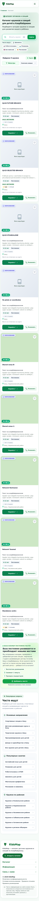

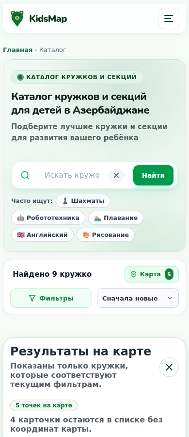

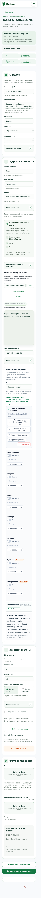


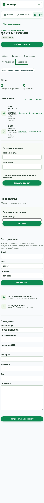

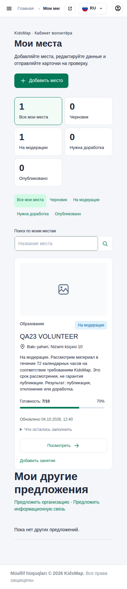

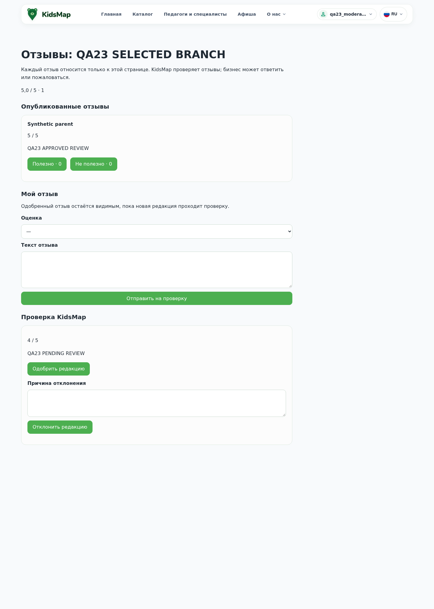

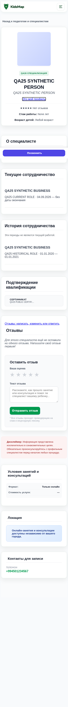

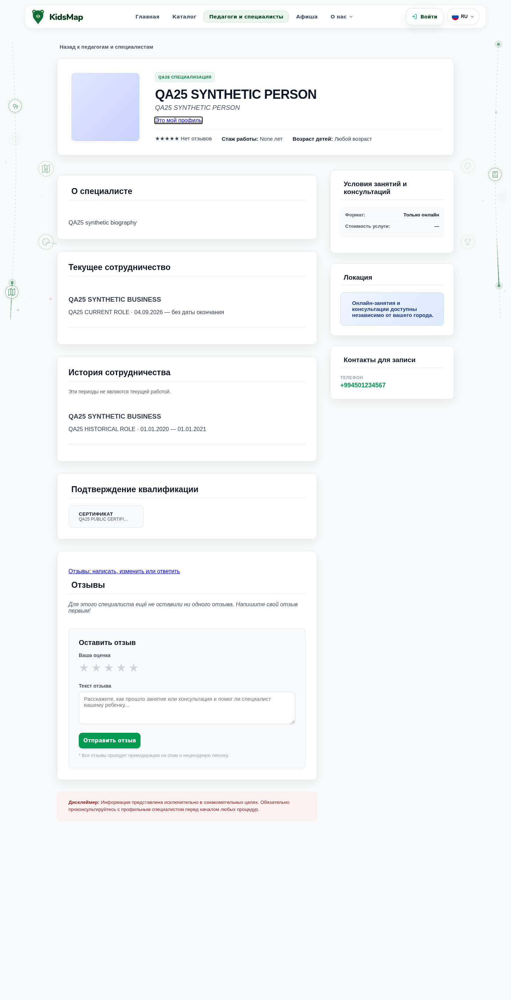


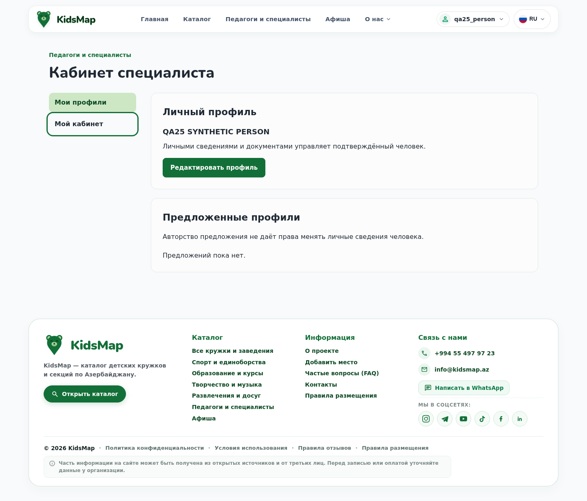

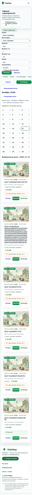

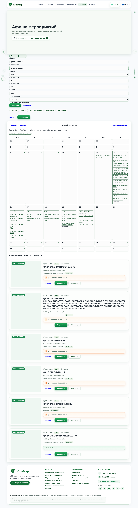

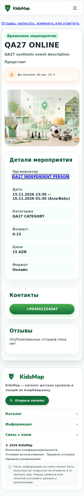

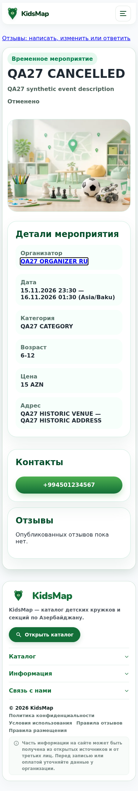

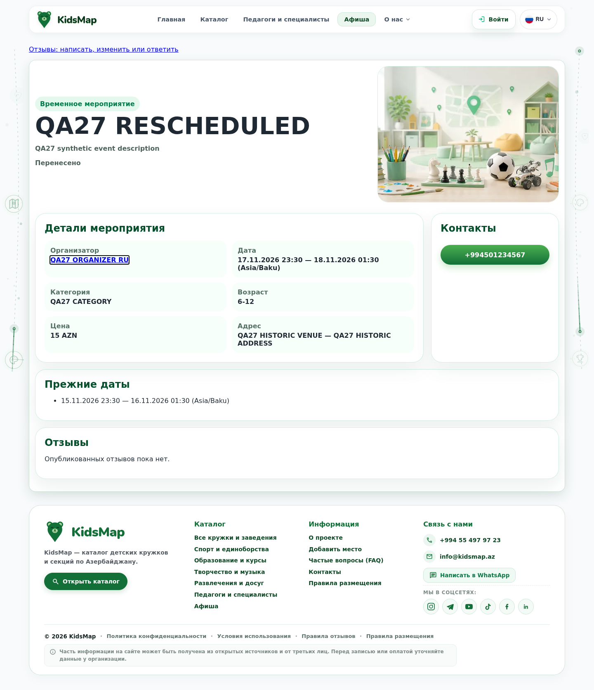

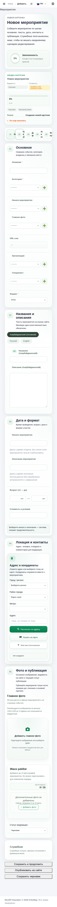

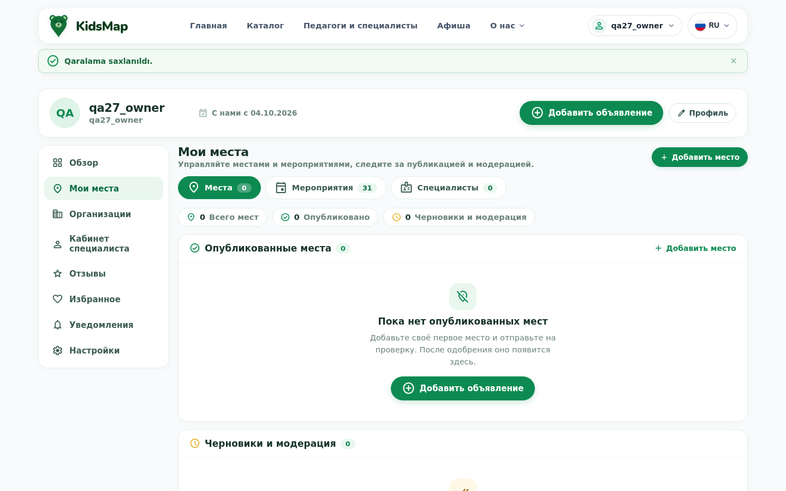

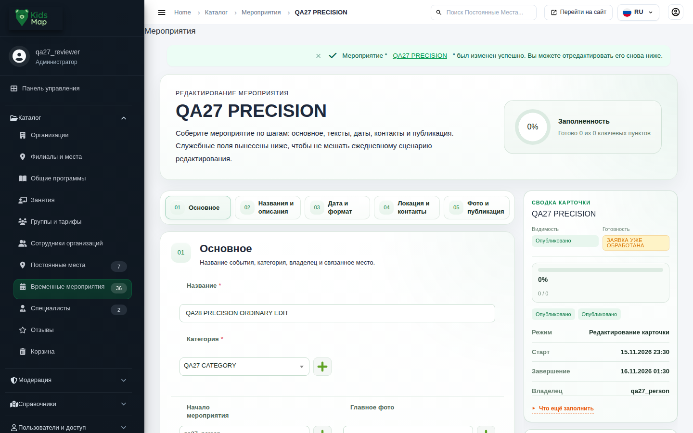

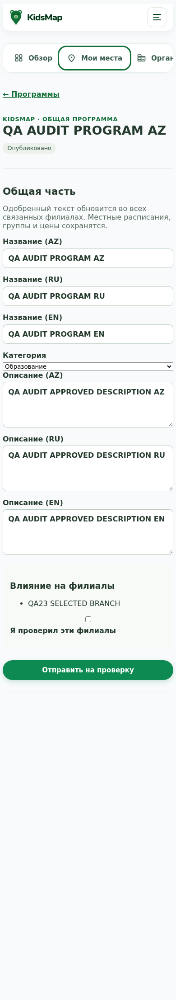

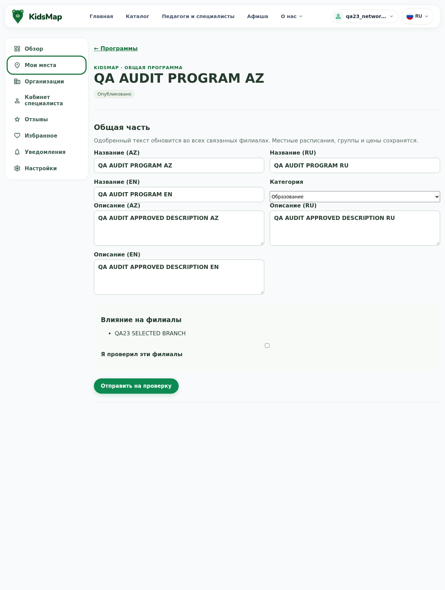

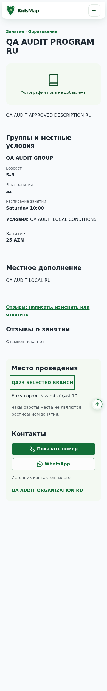

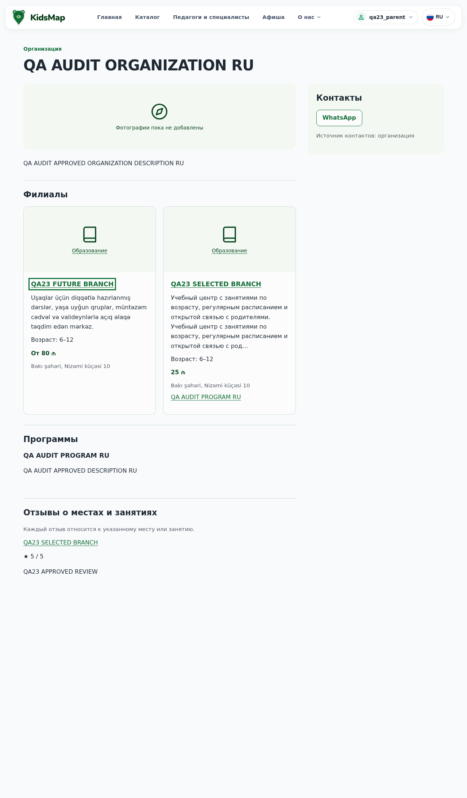

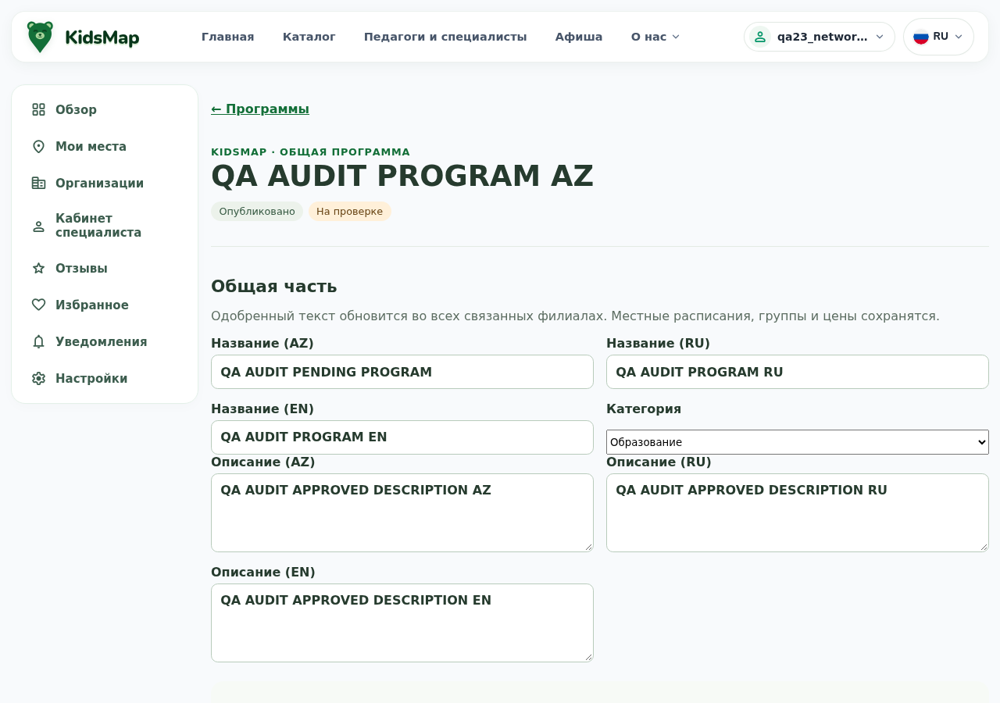

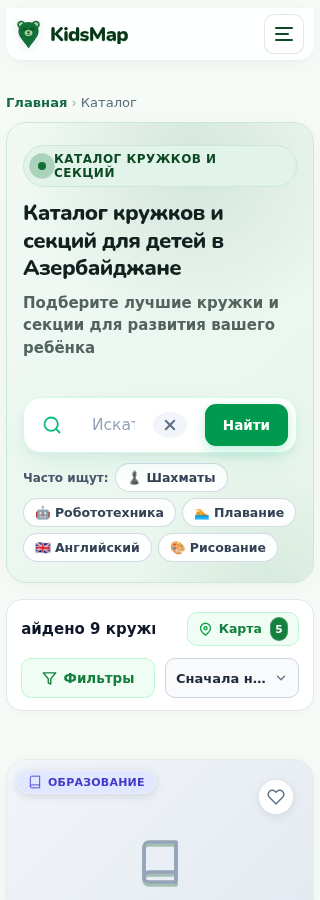

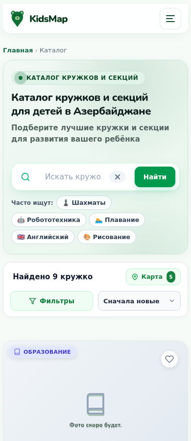
11. Пробелы проверки и границы окончательного вывода
Статус «частично подтверждено» не означает, что весь этап отсутствует. Он означает, что доказательства покрывают конкретные сценарии, а весь составной пункт нельзя честно назвать проверенным. Остаток раскрыт в каждой строке приложения. Процент «готовности продукта» не вычисляется из числа тестов: требования различаются по объёму, а один тест может проверять несколько связей.
- Production revision, реальные данные и конфигурация, полноценная проверка миграции/доступности и recovery в целевой среде — не проверены.
- Реальные OAuth/Maps/SMTP/GA4, внешние CDN и фактическое расписание outbox runner — не заменяются local stubs.
- Физические iOS/Android устройства, Safari/Firefox, полный screen-reader audit, реальные звонки/WhatsApp и production нагрузка — не выполнены.
- 306 строк requirements-map имеют разную силу доказательств: source, existing/fresh tests, accepted prerequisites, partial/external. Ни один общий зелёный module-run не является автоматическим подтверждением каждой фразы.
- Полный image-suite проверяет код в точном runtime с disposable PostgreSQL; это не запуск всего production compose stack, не реальный TLS и не registry publication.
- Ряд старых тестов привязан к прошлой структуре формы, новым optional fields или прежним правилам. Индивидуальная причинная сверка и её пределы описаны reviewers; blanket «все failures безвредны» не заявлено.
Сводка всех требований: укрупнённые группы
| Сила подтверждения | Количество |
|---|---|
| Есть упавшая проверка части требования | 1 |
| Есть частичные доказательства; границы указаны отдельно | 247 |
| Исторические согласования и границы этапов | 53 |
| Конкретный локальный сценарий подтверждён полностью | 1 |
| Отдельная проверка не выполнена или не установлена | 1 |
| Подтверждён функциональный пробел | 1 |
| Соблюдение процедуры подтверждено | 2 |
12. Доказательства, воспроизведение и рекомендации
Domain review · Security/release review · Browser review · Требования 306 · Дорожная карта запуска · План · Входной snapshot · Сохранность исходников · Сверка host/image.
Root full: wsl -d Ubuntu-24.04 -u root --exec /bin/bash /mnt/c/kidsmap/docs/task33/qa26/backend_run.sh all final-audit-full-20261004. Image full: wsl -d Ubuntu-24.04 -u root --exec /root/km28-db/.venv/bin/python /mnt/c/kidsmap/docs/task33/final-audit/qa/image_full_run.py --mode all --output /tmp/task33-final-audit-image-full-20261004.
Исправленный image QA-повтор: wsl -d Ubuntu-24.04 -u root --exec /root/km28-db/.venv/bin/python /mnt/c/kidsmap/docs/task33/final-audit/qa/security_image_full_r2.py --mode all --output /tmp/task33-final-audit-image-r2-20261004. Это тот же образ и те же application assertions; отличаются только допустимые временные каталоги и монтирование принадлежащего тесту сокета.
Имена run/output уникальны: для повторения нужно новое имя, а не перезапись сохранённых результатов. Full/native/browser raw traces находятся вне Git в /root/task33-evidence/; safe JSON, ссылки и выбранные synthetic screenshots находятся в этом каталоге.
Все первоначальные неудачные QA-attempts сохранены: browser wrapper post-run failure, diagnostic adapter errors, original JS assertion failure. Основные 798 browser contexts получены в чистых запусках. Дополнительный Program-набор содержит ошибку ViewTransition при прошедших бизнес-проверках; она учитывается в строгом итоговом статусе. Результаты не собраны путём удаления failed assertions.
Рекомендация владельцу: принять результат аудита как подтверждение работающей основной системы и конкретного оставшегося объёма. Сначала закрыть поиск и регрессионные gates, затем подтвердить эксплуатационную готовность. Говорить «вся задумка окончательно реализована и готова к боевому запуску» сейчас преждевременно.
Приложение: все 306 требований
Поиск по ID, этапу, формулировке и статусу. Раскройте строку для доказательств и ограничений.
306 требований
R01-01 · HISTORICAL_SCOPE_NOT_CURRENT_PASS
Сверь checkout, HEAD и diff; сравни выбранные source-пути с описанием AS-IS в architecture.md.
Evidence: {"kind": "SOURCE_CONTEXT_NOT_ACCEPTANCE_PROOF", "ref": "docs/task33/README.md"}; {"kind": "SOURCE_CONTEXT_NOT_ACCEPTANCE_PROOF", "ref": "docs/task33/decisions.md"}; {"kind": "SOURCE_CONTEXT_NOT_ACCEPTANCE_PROOF", "ref": "docs/task33/architecture.md"}
Границы: Именно этот составной пункт не имеет отдельно установленного полного runtime доказательства в данном review; соседний тест не превращает его в PASS.; Историческое согласование нельзя повторно доказать текущим backend тестом.
R01-02 · HISTORICAL_SCOPE_NOT_CURRENT_PASS
Сохрани исходные вложения как исторический контекст. Более поздние решения из decisions.md имеют приоритет.
Evidence: {"kind": "SOURCE_CONTEXT_NOT_ACCEPTANCE_PROOF", "ref": "docs/task33/README.md"}; {"kind": "SOURCE_CONTEXT_NOT_ACCEPTANCE_PROOF", "ref": "docs/task33/decisions.md"}; {"kind": "SOURCE_CONTEXT_NOT_ACCEPTANCE_PROOF", "ref": "docs/task33/architecture.md"}
Границы: Именно этот составной пункт не имеет отдельно установленного полного runtime доказательства в данном review; соседний тест не превращает его в PASS.; Историческое согласование нельзя повторно доказать текущим backend тестом.
R01-03 · HISTORICAL_SCOPE_NOT_CURRENT_PASS
Проверь все 28 заданий: результат, границы, зависимости, критерии и запись отчёта.
Evidence: {"kind": "SOURCE_CONTEXT_NOT_ACCEPTANCE_PROOF", "ref": "docs/task33/README.md"}; {"kind": "SOURCE_CONTEXT_NOT_ACCEPTANCE_PROOF", "ref": "docs/task33/decisions.md"}; {"kind": "SOURCE_CONTEXT_NOT_ACCEPTANCE_PROOF", "ref": "docs/task33/architecture.md"}
Границы: Именно этот составной пункт не имеет отдельно установленного полного runtime доказательства в данном review; соседний тест не превращает его в PASS.; Историческое согласование нельзя повторно доказать текущим backend тестом.
R01-04 · HISTORICAL_SCOPE_NOT_CURRENT_PASS
Если пакет уже существует, проверь его и исправь расхождения; не обнуляй выполненные этапы, действующие блокировки и принятые макеты.
Evidence: {"kind": "SOURCE_CONTEXT_NOT_ACCEPTANCE_PROOF", "ref": "docs/task33/README.md"}; {"kind": "SOURCE_CONTEXT_NOT_ACCEPTANCE_PROOF", "ref": "docs/task33/decisions.md"}; {"kind": "SOURCE_CONTEXT_NOT_ACCEPTANCE_PROOF", "ref": "docs/task33/architecture.md"}
Границы: Именно этот составной пункт не имеет отдельно установленного полного runtime доказательства в данном review; соседний тест не превращает его в PASS.; Историческое согласование нельзя повторно доказать текущим backend тестом.
R01-05 · HISTORICAL_SCOPE_NOT_CURRENT_PASS
Все 28 промптов доступны из README; новые диалоги не зависят от истории чата.
Evidence: {"kind": "SOURCE_CONTEXT_NOT_ACCEPTANCE_PROOF", "ref": "docs/task33/README.md"}; {"kind": "SOURCE_CONTEXT_NOT_ACCEPTANCE_PROOF", "ref": "docs/task33/decisions.md"}; {"kind": "SOURCE_CONTEXT_NOT_ACCEPTANCE_PROOF", "ref": "docs/task33/architecture.md"}
Границы: Именно этот составной пункт не имеет отдельно установленного полного runtime доказательства в данном review; соседний тест не превращает его в PASS.; Историческое согласование нельзя повторно доказать текущим backend тестом.
R01-06 · HISTORICAL_SCOPE_NOT_CURRENT_PASS
Текущее состояние приложения и production не выдаётся за реализованную №33.
Evidence: {"kind": "SOURCE_CONTEXT_NOT_ACCEPTANCE_PROOF", "ref": "docs/task33/README.md"}; {"kind": "SOURCE_CONTEXT_NOT_ACCEPTANCE_PROOF", "ref": "docs/task33/decisions.md"}; {"kind": "SOURCE_CONTEXT_NOT_ACCEPTANCE_PROOF", "ref": "docs/task33/architecture.md"}
Границы: Именно этот составной пункт не имеет отдельно установленного полного runtime доказательства в данном review; соседний тест не превращает его в PASS.; Историческое согласование нельзя повторно доказать текущим backend тестом.
R01-07 · HISTORICAL_SCOPE_NOT_CURRENT_PASS
Утверждение макетов и отдельный производственный запуск явно отделены от утверждения плана.
Evidence: {"kind": "SOURCE_CONTEXT_NOT_ACCEPTANCE_PROOF", "ref": "docs/task33/README.md"}; {"kind": "SOURCE_CONTEXT_NOT_ACCEPTANCE_PROOF", "ref": "docs/task33/decisions.md"}; {"kind": "SOURCE_CONTEXT_NOT_ACCEPTANCE_PROOF", "ref": "docs/task33/architecture.md"}
Границы: Именно этот составной пункт не имеет отдельно установленного полного runtime доказательства в данном review; соседний тест не превращает его в PASS.; Историческое согласование нельзя повторно доказать текущим backend тестом.
R01-08 · HISTORICAL_SCOPE_NOT_CURRENT_PASS
Проверь номера 01–28, существование локальных ссылок, порядок зависимостей и отсутствие незаполненных шаблонов.
Evidence: {"kind": "SOURCE_CONTEXT_NOT_ACCEPTANCE_PROOF", "ref": "docs/task33/README.md"}; {"kind": "SOURCE_CONTEXT_NOT_ACCEPTANCE_PROOF", "ref": "docs/task33/decisions.md"}; {"kind": "SOURCE_CONTEXT_NOT_ACCEPTANCE_PROOF", "ref": "docs/task33/architecture.md"}
Границы: Именно этот составной пункт не имеет отдельно установленного полного runtime доказательства в данном review; соседний тест не превращает его в PASS.; Историческое согласование нельзя повторно доказать текущим backend тестом.
R01-09 · HISTORICAL_SCOPE_NOT_CURRENT_PASS
Сверь git status и убедись, что изменён только пакет docs/task33.
Evidence: {"kind": "SOURCE_CONTEXT_NOT_ACCEPTANCE_PROOF", "ref": "docs/task33/README.md"}; {"kind": "SOURCE_CONTEXT_NOT_ACCEPTANCE_PROOF", "ref": "docs/task33/decisions.md"}; {"kind": "SOURCE_CONTEXT_NOT_ACCEPTANCE_PROOF", "ref": "docs/task33/architecture.md"}
Границы: Именно этот составной пункт не имеет отдельно установленного полного runtime доказательства в данном review; соседний тест не превращает его в PASS.; Историческое согласование нельзя повторно доказать текущим backend тестом.
R02-01 · HISTORICAL_SCOPE_NOT_CURRENT_PASS
Прочитай kidsmap-ui-design, frontend-design и fixing-accessibility. Проверь активную template/CSS/JS цепочку.
Evidence: {"kind": "SOURCE_CONTEXT_NOT_ACCEPTANCE_PROOF", "ref": "docs/task33/prompts/02.md"}; {"kind": "SOURCE_CONTEXT_NOT_ACCEPTANCE_PROOF", "ref": "docs/task33/architecture.md"}
Границы: Именно этот составной пункт не имеет отдельно установленного полного runtime доказательства в данном review; соседний тест не превращает его в PASS.; Согласование макета и совпадение живого интерфейса — разные доказательства.
R02-02 · HISTORICAL_SCOPE_NOT_CURRENT_PASS
Сделай локально открываемый HTML-прототип формы места с четырьмя секциями; организация, дополнительные занятия и переводы необязательны.
Evidence: {"kind": "SOURCE_CONTEXT_NOT_ACCEPTANCE_PROOF", "ref": "docs/task33/prompts/02.md"}; {"kind": "SOURCE_CONTEXT_NOT_ACCEPTANCE_PROOF", "ref": "docs/task33/architecture.md"}
Границы: Именно этот составной пункт не имеет отдельно установленного полного runtime доказательства в данном review; соседний тест не превращает его в PASS.; Согласование макета и совпадение живого интерфейса — разные доказательства.
R02-03 · HISTORICAL_SCOPE_NOT_CURRENT_PASS
Покажи создание организации, кабинет без филиалов, список филиалов, общую программу, группы и приглашение сотрудника.
Evidence: {"kind": "SOURCE_CONTEXT_NOT_ACCEPTANCE_PROOF", "ref": "docs/task33/prompts/02.md"}; {"kind": "SOURCE_CONTEXT_NOT_ACCEPTANCE_PROOF", "ref": "docs/task33/architecture.md"}
Границы: Именно этот составной пункт не имеет отдельно установленного полного runtime доказательства в данном review; соседний тест не превращает его в PASS.; Согласование макета и совпадение живого интерфейса — разные доказательства.
R02-04 · HISTORICAL_SCOPE_NOT_CURRENT_PASS
Включи empty/draft/saving/save-failed/pending/rejected/conflict и опубликовано+изменения-на-проверке. Контакты из организации имеют понятный источник.
Evidence: {"kind": "SOURCE_CONTEXT_NOT_ACCEPTANCE_PROOF", "ref": "docs/task33/prompts/02.md"}; {"kind": "SOURCE_CONTEXT_NOT_ACCEPTANCE_PROOF", "ref": "docs/task33/architecture.md"}
Границы: Именно этот составной пункт не имеет отдельно установленного полного runtime доказательства в данном review; соседний тест не превращает его в PASS.; Согласование макета и совпадение живого интерфейса — разные доказательства.
R02-05 · HISTORICAL_SCOPE_NOT_CURRENT_PASS
Используй синтетические примеры центра, парка и сети. На отдельной странице прототипа поясни, что это макеты, а не работающий backend.
Evidence: {"kind": "SOURCE_CONTEXT_NOT_ACCEPTANCE_PROOF", "ref": "docs/task33/prompts/02.md"}; {"kind": "SOURCE_CONTEXT_NOT_ACCEPTANCE_PROOF", "ref": "docs/task33/architecture.md"}
Границы: Именно этот составной пункт не имеет отдельно установленного полного runtime доказательства в данном review; соседний тест не превращает его в PASS.; Согласование макета и совпадение живого интерфейса — разные доказательства.
R02-06 · HISTORICAL_SCOPE_NOT_CURRENT_PASS
Сними реальные screenshot на 390 и 1280 px, проверь также 320/360/768/1024/1440, клавиатуру и длинный текст AZ/RU/EN.
Evidence: {"kind": "SOURCE_CONTEXT_NOT_ACCEPTANCE_PROOF", "ref": "docs/task33/prompts/02.md"}; {"kind": "SOURCE_CONTEXT_NOT_ACCEPTANCE_PROOF", "ref": "docs/task33/architecture.md"}
Границы: Именно этот составной пункт не имеет отдельно установленного полного runtime доказательства в данном review; соседний тест не превращает его в PASS.; Согласование макета и совпадение живого интерфейса — разные доказательства.
R02-07 · HISTORICAL_SCOPE_NOT_CURRENT_PASS
Место создаётся без организации и без обязательных переходов «Далее».
Evidence: {"kind": "SOURCE_CONTEXT_NOT_ACCEPTANCE_PROOF", "ref": "docs/task33/prompts/02.md"}; {"kind": "SOURCE_CONTEXT_NOT_ACCEPTANCE_PROOF", "ref": "docs/task33/architecture.md"}
Границы: Именно этот составной пункт не имеет отдельно установленного полного runtime доказательства в данном review; соседний тест не превращает его в PASS.; Согласование макета и совпадение живого интерфейса — разные доказательства.
R02-08 · HISTORICAL_SCOPE_NOT_CURRENT_PASS
Существующие KidsMap tokens и компоненты узнаваемы; интерфейс не показывает названия таблиц.
Evidence: {"kind": "SOURCE_CONTEXT_NOT_ACCEPTANCE_PROOF", "ref": "docs/task33/prompts/02.md"}; {"kind": "SOURCE_CONTEXT_NOT_ACCEPTANCE_PROOF", "ref": "docs/task33/architecture.md"}
Границы: Именно этот составной пункт не имеет отдельно установленного полного runtime доказательства в данном review; соседний тест не превращает его в PASS.; Согласование макета и совпадение живого интерфейса — разные доказательства.
R02-09 · HISTORICAL_SCOPE_NOT_CURRENT_PASS
Есть воспроизводимые прототипы и браузерные снимки, а не только словесные описания.
Evidence: {"kind": "SOURCE_CONTEXT_NOT_ACCEPTANCE_PROOF", "ref": "docs/task33/prompts/02.md"}; {"kind": "SOURCE_CONTEXT_NOT_ACCEPTANCE_PROOF", "ref": "docs/task33/architecture.md"}
Границы: Именно этот составной пункт не имеет отдельно установленного полного runtime доказательства в данном review; соседний тест не превращает его в PASS.; Согласование макета и совпадение живого интерфейса — разные доказательства.
R02-10 · HISTORICAL_SCOPE_NOT_CURRENT_PASS
Открой локальные прототипы браузером; проверь overflow, focus, переключение секций, ошибки, CTA и Console.
Evidence: {"kind": "SOURCE_CONTEXT_NOT_ACCEPTANCE_PROOF", "ref": "docs/task33/prompts/02.md"}; {"kind": "SOURCE_CONTEXT_NOT_ACCEPTANCE_PROOF", "ref": "docs/task33/architecture.md"}
Границы: Именно этот составной пункт не имеет отдельно установленного полного runtime доказательства в данном review; соседний тест не превращает его в PASS.; Согласование макета и совпадение живого интерфейса — разные доказательства.
R02-11 · HISTORICAL_SCOPE_NOT_CURRENT_PASS
Подготовь список экранов и ссылок для принятия пользователем; не отмечай макеты принятыми без его ответа.
Evidence: {"kind": "SOURCE_CONTEXT_NOT_ACCEPTANCE_PROOF", "ref": "docs/task33/prompts/02.md"}; {"kind": "SOURCE_CONTEXT_NOT_ACCEPTANCE_PROOF", "ref": "docs/task33/architecture.md"}
Границы: Именно этот составной пункт не имеет отдельно установленного полного runtime доказательства в данном review; соседний тест не превращает его в PASS.; Согласование макета и совпадение живого интерфейса — разные доказательства.
R03-01 · HISTORICAL_SCOPE_NOT_CURRENT_PASS
Развивай общий визуальный язык прототипов 02; прочитай применимые UI skills.
Evidence: {"kind": "SOURCE_CONTEXT_NOT_ACCEPTANCE_PROOF", "ref": "docs/task33/prompts/03.md"}; {"kind": "SOURCE_CONTEXT_NOT_ACCEPTANCE_PROOF", "ref": "src/catalog/domain_admin/place.py"}
Границы: Именно этот составной пункт не имеет отдельно установленного полного runtime доказательства в данном review; соседний тест не превращает его в PASS.; Текущий визуальный результат относится к browser report, а не к source review.
R03-02 · HISTORICAL_SCOPE_NOT_CURRENT_PASS
Сделай организацию в админке, Place без организации, направления/группы и проверку изменений «действует/предложено».
Evidence: {"kind": "SOURCE_CONTEXT_NOT_ACCEPTANCE_PROOF", "ref": "docs/task33/prompts/03.md"}; {"kind": "SOURCE_CONTEXT_NOT_ACCEPTANCE_PROOF", "ref": "src/catalog/domain_admin/place.py"}
Границы: Именно этот составной пункт не имеет отдельно установленного полного runtime доказательства в данном review; соседний тест не превращает его в PASS.; Текущий визуальный результат относится к browser report, а не к source review.
R03-03 · HISTORICAL_SCOPE_NOT_CURRENT_PASS
Покажи волонтёрское предложение, конфликт базы, новый объект, одобрение общей программы с затрагиваемыми филиалами и смену владельца.
Evidence: {"kind": "SOURCE_CONTEXT_NOT_ACCEPTANCE_PROOF", "ref": "docs/task33/prompts/03.md"}; {"kind": "SOURCE_CONTEXT_NOT_ACCEPTANCE_PROOF", "ref": "src/catalog/domain_admin/place.py"}
Границы: Именно этот составной пункт не имеет отдельно установленного полного runtime доказательства в данном review; соседний тест не превращает его в PASS.; Текущий визуальный результат относится к browser report, а не к source review.
R03-04 · HISTORICAL_SCOPE_NOT_CURRENT_PASS
Сделай каталог конкретных мест, Organization detail без общего рейтинга, Place detail и Activity detail с местными условиями.
Evidence: {"kind": "SOURCE_CONTEXT_NOT_ACCEPTANCE_PROOF", "ref": "docs/task33/prompts/03.md"}; {"kind": "SOURCE_CONTEXT_NOT_ACCEPTANCE_PROOF", "ref": "src/catalog/domain_admin/place.py"}
Границы: Именно этот составной пункт не имеет отдельно установленного полного runtime доказательства в данном review; соседний тест не превращает его в PASS.; Текущий визуальный результат относится к browser report, а не к source review.
R03-05 · HISTORICAL_SCOPE_NOT_CURRENT_PASS
Сделай афишу со списком и календарём: месяц на desktop, дни и список выбранного дня на mobile; онлайн, отменённые и прошедшие события.
Evidence: {"kind": "SOURCE_CONTEXT_NOT_ACCEPTANCE_PROOF", "ref": "docs/task33/prompts/03.md"}; {"kind": "SOURCE_CONTEXT_NOT_ACCEPTANCE_PROOF", "ref": "src/catalog/domain_admin/place.py"}
Границы: Именно этот составной пункт не имеет отдельно установленного полного runtime доказательства в данном review; соседний тест не превращает его в PASS.; Текущий визуальный результат относится к browser report, а не к source review.
R03-06 · HISTORICAL_SCOPE_NOT_CURRENT_PASS
Подготовь реальные browser screenshots, состояния без фото/координат/перевода и не менее одного длинного перевода.
Evidence: {"kind": "SOURCE_CONTEXT_NOT_ACCEPTANCE_PROOF", "ref": "docs/task33/prompts/03.md"}; {"kind": "SOURCE_CONTEXT_NOT_ACCEPTANCE_PROOF", "ref": "src/catalog/domain_admin/place.py"}
Границы: Именно этот составной пункт не имеет отдельно установленного полного runtime доказательства в данном review; соседний тест не превращает его в PASS.; Текущий визуальный результат относится к browser report, а не к source review.
R03-07 · HISTORICAL_SCOPE_NOT_CURRENT_PASS
В админке видны отдельно публикация, управление и проверенность; действия однозначны.
Evidence: {"kind": "SOURCE_CONTEXT_NOT_ACCEPTANCE_PROOF", "ref": "docs/task33/prompts/03.md"}; {"kind": "SOURCE_CONTEXT_NOT_ACCEPTANCE_PROOF", "ref": "src/catalog/domain_admin/place.py"}
Границы: Именно этот составной пункт не имеет отдельно установленного полного runtime доказательства в данном review; соседний тест не превращает его в PASS.; Текущий визуальный результат относится к browser report, а не к source review.
R03-08 · HISTORICAL_SCOPE_NOT_CURRENT_PASS
Поиск и карта показывают конкретные места, а организация не становится фиктивной точкой.
Evidence: {"kind": "SOURCE_CONTEXT_NOT_ACCEPTANCE_PROOF", "ref": "docs/task33/prompts/03.md"}; {"kind": "SOURCE_CONTEXT_NOT_ACCEPTANCE_PROOF", "ref": "src/catalog/domain_admin/place.py"}
Границы: Именно этот составной пункт не имеет отдельно установленного полного runtime доказательства в данном review; соседний тест не превращает его в PASS.; Текущий визуальный результат относится к browser report, а не к source review.
R03-09 · HISTORICAL_SCOPE_NOT_CURRENT_PASS
Все ключевые public/admin макеты доступны на телефоне и компьютере; фильтры календаря понятны.
Evidence: {"kind": "SOURCE_CONTEXT_NOT_ACCEPTANCE_PROOF", "ref": "docs/task33/prompts/03.md"}; {"kind": "SOURCE_CONTEXT_NOT_ACCEPTANCE_PROOF", "ref": "src/catalog/domain_admin/place.py"}
Границы: Именно этот составной пункт не имеет отдельно установленного полного runtime доказательства в данном review; соседний тест не превращает его в PASS.; Текущий визуальный результат относится к browser report, а не к source review.
R03-10 · HISTORICAL_SCOPE_NOT_CURRENT_PASS
Проверь local browser DOM/Console/overflow/focus на тех же ширинах, что 02.
Evidence: {"kind": "SOURCE_CONTEXT_NOT_ACCEPTANCE_PROOF", "ref": "docs/task33/prompts/03.md"}; {"kind": "SOURCE_CONTEXT_NOT_ACCEPTANCE_PROOF", "ref": "src/catalog/domain_admin/place.py"}
Границы: Именно этот составной пункт не имеет отдельно установленного полного runtime доказательства в данном review; соседний тест не превращает его в PASS.; Текущий визуальный результат относится к browser report, а не к source review.
R03-11 · HISTORICAL_SCOPE_NOT_CURRENT_PASS
Обнови design/acceptance.md: пользователь должен принять owner и admin/public макеты; принятие общего плана этого не заменяет.
Evidence: {"kind": "SOURCE_CONTEXT_NOT_ACCEPTANCE_PROOF", "ref": "docs/task33/prompts/03.md"}; {"kind": "SOURCE_CONTEXT_NOT_ACCEPTANCE_PROOF", "ref": "src/catalog/domain_admin/place.py"}
Границы: Именно этот составной пункт не имеет отдельно установленного полного runtime доказательства в данном review; соседний тест не превращает его в PASS.; Текущий визуальный результат относится к browser report, а не к source review.
R04-01 · HISTORICAL_SCOPE_NOT_CURRENT_PASS
Проверь действующие test runner и labels; создай воспроизводимый запуск с disposable PostgreSQL, DJANGO_TESTING=1, отдельными media и тестовой почтой.
Evidence: {"kind": "SOURCE_CONTEXT_NOT_ACCEPTANCE_PROOF", "ref": "docs/task33/qa04/run.py"}; {"kind": "SOURCE_CONTEXT_NOT_ACCEPTANCE_PROOF", "ref": "docs/task33/qa04/guard.py"}; {"kind": "SOURCE_CONTEXT_NOT_ACCEPTANCE_PROOF", "ref": "docs/task33/reports/04.md"}
Границы: Именно этот составной пункт не имеет отдельно установленного полного runtime доказательства в данном review; соседний тест не превращает его в PASS.; Baseline исторический; итоговый полный suite по-прежнему содержит ошибки и не объявляется зелёным.
R04-02 · HISTORICAL_SCOPE_NOT_CURRENT_PASS
Явно переопредели унаследованные подключения и отключи внешние интеграции; не выводи env/credentials.
Evidence: {"kind": "SOURCE_CONTEXT_NOT_ACCEPTANCE_PROOF", "ref": "docs/task33/qa04/run.py"}; {"kind": "SOURCE_CONTEXT_NOT_ACCEPTANCE_PROOF", "ref": "docs/task33/qa04/guard.py"}; {"kind": "SOURCE_CONTEXT_NOT_ACCEPTANCE_PROOF", "ref": "docs/task33/reports/04.md"}
Границы: Именно этот составной пункт не имеет отдельно установленного полного runtime доказательства в данном review; соседний тест не превращает его в PASS.; Baseline исторический; итоговый полный suite по-прежнему содержит ошибки и не объявляется зелёным.
R04-03 · HISTORICAL_SCOPE_NOT_CURRENT_PASS
Подготовь синтетические случаи одиночного центра, сети, общего адреса независимых бизнесов, разных групп и тарифов, отсутствия координат/фото и старых отзывов.
Evidence: {"kind": "SOURCE_CONTEXT_NOT_ACCEPTANCE_PROOF", "ref": "docs/task33/qa04/run.py"}; {"kind": "SOURCE_CONTEXT_NOT_ACCEPTANCE_PROOF", "ref": "docs/task33/qa04/guard.py"}; {"kind": "SOURCE_CONTEXT_NOT_ACCEPTANCE_PROOF", "ref": "docs/task33/reports/04.md"}
Границы: Именно этот составной пункт не имеет отдельно установленного полного runtime доказательства в данном review; соседний тест не превращает его в PASS.; Baseline исторический; итоговый полный suite по-прежнему содержит ошибки и не объявляется зелёным.
R04-04 · HISTORICAL_SCOPE_NOT_CURRENT_PASS
Сними owner/admin/public/volunteer/pricing/review/specialist/event baseline и миграционное состояние. Запиши реально запущенные команды.
Evidence: {"kind": "SOURCE_CONTEXT_NOT_ACCEPTANCE_PROOF", "ref": "docs/task33/qa04/run.py"}; {"kind": "SOURCE_CONTEXT_NOT_ACCEPTANCE_PROOF", "ref": "docs/task33/qa04/guard.py"}; {"kind": "SOURCE_CONTEXT_NOT_ACCEPTANCE_PROOF", "ref": "docs/task33/reports/04.md"}
Границы: Именно этот составной пункт не имеет отдельно установленного полного runtime доказательства в данном review; соседний тест не превращает его в PASS.; Baseline исторический; итоговый полный suite по-прежнему содержит ошибки и не объявляется зелёным.
R04-05 · HISTORICAL_SCOPE_NOT_CURRENT_PASS
Измерь выдачу и количество SQL-запросов на одинаковых fixtures; отдели baseline failure, regression и environment failure.
Evidence: {"kind": "SOURCE_CONTEXT_NOT_ACCEPTANCE_PROOF", "ref": "docs/task33/qa04/run.py"}; {"kind": "SOURCE_CONTEXT_NOT_ACCEPTANCE_PROOF", "ref": "docs/task33/qa04/guard.py"}; {"kind": "SOURCE_CONTEXT_NOT_ACCEPTANCE_PROOF", "ref": "docs/task33/reports/04.md"}
Границы: Именно этот составной пункт не имеет отдельно установленного полного runtime доказательства в данном review; соседний тест не превращает его в PASS.; Baseline исторический; итоговый полный suite по-прежнему содержит ошибки и не объявляется зелёным.
R04-06 · HISTORICAL_SCOPE_NOT_CURRENT_PASS
Запуск не подключается к рабочей или production БД, Redis, media и SMTP.
Evidence: {"kind": "SOURCE_CONTEXT_NOT_ACCEPTANCE_PROOF", "ref": "docs/task33/qa04/run.py"}; {"kind": "SOURCE_CONTEXT_NOT_ACCEPTANCE_PROOF", "ref": "docs/task33/qa04/guard.py"}; {"kind": "SOURCE_CONTEXT_NOT_ACCEPTANCE_PROOF", "ref": "docs/task33/reports/04.md"}
Границы: Именно этот составной пункт не имеет отдельно установленного полного runtime доказательства в данном review; соседний тест не превращает его в PASS.; Baseline исторический; итоговый полный suite по-прежнему содержит ошибки и не объявляется зелёным.
R04-07 · HISTORICAL_SCOPE_NOT_CURRENT_PASS
Другой диалог может воспроизвести baseline по отчёту.
Evidence: {"kind": "SOURCE_CONTEXT_NOT_ACCEPTANCE_PROOF", "ref": "docs/task33/qa04/run.py"}; {"kind": "SOURCE_CONTEXT_NOT_ACCEPTANCE_PROOF", "ref": "docs/task33/qa04/guard.py"}; {"kind": "SOURCE_CONTEXT_NOT_ACCEPTANCE_PROOF", "ref": "docs/task33/reports/04.md"}
Границы: Именно этот составной пункт не имеет отдельно установленного полного runtime доказательства в данном review; соседний тест не превращает его в PASS.; Baseline исторический; итоговый полный suite по-прежнему содержит ошибки и не объявляется зелёным.
R04-08 · HISTORICAL_SCOPE_NOT_CURRENT_PASS
Известные ошибки записаны, тестовые утверждения не ослаблены.
Evidence: {"kind": "SOURCE_CONTEXT_NOT_ACCEPTANCE_PROOF", "ref": "docs/task33/qa04/run.py"}; {"kind": "SOURCE_CONTEXT_NOT_ACCEPTANCE_PROOF", "ref": "docs/task33/qa04/guard.py"}; {"kind": "SOURCE_CONTEXT_NOT_ACCEPTANCE_PROOF", "ref": "docs/task33/reports/04.md"}
Границы: Именно этот составной пункт не имеет отдельно установленного полного runtime доказательства в данном review; соседний тест не превращает его в PASS.; Baseline исторический; итоговый полный suite по-прежнему содержит ошибки и не объявляется зелёным.
R04-09 · HISTORICAL_SCOPE_NOT_CURRENT_PASS
Запусти локальные system checks, migration-state check и относящиеся suites на PostgreSQL.
Evidence: {"kind": "SOURCE_CONTEXT_NOT_ACCEPTANCE_PROOF", "ref": "docs/task33/qa04/run.py"}; {"kind": "SOURCE_CONTEXT_NOT_ACCEPTANCE_PROOF", "ref": "docs/task33/qa04/guard.py"}; {"kind": "SOURCE_CONTEXT_NOT_ACCEPTANCE_PROOF", "ref": "docs/task33/reports/04.md"}
Границы: Именно этот составной пункт не имеет отдельно установленного полного runtime доказательства в данном review; соседний тест не превращает его в PASS.; Baseline исторический; итоговый полный suite по-прежнему содержит ошибки и не объявляется зелёным.
R04-10 · HISTORICAL_SCOPE_NOT_CURRENT_PASS
Проверь test discovery; не считай оболочку full доказательством полного запуска без проверки её labels.
Evidence: {"kind": "SOURCE_CONTEXT_NOT_ACCEPTANCE_PROOF", "ref": "docs/task33/qa04/run.py"}; {"kind": "SOURCE_CONTEXT_NOT_ACCEPTANCE_PROOF", "ref": "docs/task33/qa04/guard.py"}; {"kind": "SOURCE_CONTEXT_NOT_ACCEPTANCE_PROOF", "ref": "docs/task33/reports/04.md"}
Границы: Именно этот составной пункт не имеет отдельно установленного полного runtime доказательства в данном review; соседний тест не превращает его в PASS.; Baseline исторический; итоговый полный suite по-прежнему содержит ошибки и не объявляется зелёным.
R05-01 · PARTIAL_CURRENT_LOCAL_EVIDENCE
Добавь Organization, Program, Activity, OfferingGroup и Place.organization nullable по architecture.md.
Evidence: {"kind": "SOURCE_CONTEXT_NOT_ACCEPTANCE_PROOF", "ref": "src/catalog/models/catalog_structure.py"}; {"kind": "SOURCE_CONTEXT_NOT_ACCEPTANCE_PROOF", "ref": "src/catalog/models/place.py"}; {"kind": "MEANINGFUL_ASSERTION_SOURCE_AND_ROOT_RUNTIME", "id": "catalog.testcases.test_task33_catalog_schema.CatalogSchemaFoundationTests.test_additive_entities_are_registered_without_replacing_place", "ref": "src/catalog/testcases/test_task33_catalog_schema.py:7", "runtime": "PASSED_CURRENT_ROOT_FULL_ATTRIBUTED", "actual_assertions": ["self.assertTrue({'Organization', 'Program', 'Activity', 'OfferingGroup', 'Location',"]}
Границы: Указанный assertion проверяет конкретную часть пункта. Фактический runtime следует подтверждать свежим root suite по этому ID; UI/внешние/составные части не покрываются автоматически.; Часть межстрочных условий защищена сервисом/ORM, а не SQL trigger; bulk/raw writes не равнозначны нормальному save.
R05-02 · PARTIAL_CURRENT_LOCAL_EVIDENCE
Подготовь модель проверенной физической площадки и отдельные заявки связи; Place и организация не равны площадке.
Evidence: {"kind": "SOURCE_CONTEXT_NOT_ACCEPTANCE_PROOF", "ref": "src/catalog/models/catalog_structure.py"}; {"kind": "SOURCE_CONTEXT_NOT_ACCEPTANCE_PROOF", "ref": "src/catalog/models/place.py"}; {"kind": "MEANINGFUL_ASSERTION_SOURCE_AND_ROOT_RUNTIME", "id": "catalog.testcases.test_task33_catalog_schema.CatalogSchemaInvariantTests.test_confirmed_venue_bind_preserves_independent_place_and_event_address", "ref": "src/catalog/testcases/test_task33_catalog_schema.py:160", "runtime": "PASSED_CURRENT_ROOT_FULL_ATTRIBUTED", "actual_assertions": ["self.assertEqual((self.place.address, self.place.lat, self.place.lng, neighbor.pk, neighbor.owner_id), before)", "self.assertEqual(self.place.confirmed_location_id, self.location.pk)", "self.assertIsNone(neighbor.confirmed_location_id); self.assertEqual(event.address, 'Original event address')"]}; {"kind": "MEANINGFUL_ASSERTION_SOURCE_AND_ROOT_RUNTIME", "id": "catalog.testcases.test_task33_catalog_schema.CatalogSchemaInvariantTests.test_pending_links_do_not_attach_place_or_create_business_rights", "ref": "src/catalog/testcases/test_task33_catalog_schema.py:136", "runtime": "PASSED_CURRENT_ROOT_FULL_ATTRIBUTED", "actual_assertions": ["self.assertIsNone(self.place.organization_id); self.assertIsNone(self.place.confirmed_location_id)", "self.assertEqual(self.place.owner_id, self.owner.pk)"]}
Границы: Указанный assertion проверяет конкретную часть пункта. Фактический runtime следует подтверждать свежим root suite по этому ID; UI/внешние/составные части не покрываются автоматически.; Часть межстрочных условий защищена сервисом/ORM, а не SQL trigger; bulk/raw writes не равнозначны нормальному save.
R05-03 · PARTIAL_CURRENT_LOCAL_EVIDENCE
Добавь ownership/content versions и совместимые hooks для дальнейших этапов; не делай старые связи обязательными до заполнения.
Evidence: {"kind": "SOURCE_CONTEXT_NOT_ACCEPTANCE_PROOF", "ref": "src/catalog/models/catalog_structure.py"}; {"kind": "SOURCE_CONTEXT_NOT_ACCEPTANCE_PROOF", "ref": "src/catalog/models/place.py"}; {"kind": "MEANINGFUL_ASSERTION_SOURCE_AND_ROOT_RUNTIME", "id": "catalog.testcases.test_task33_catalog_schema.CatalogSchemaInvariantTests.test_zero_versions_cannot_enter_database", "ref": "src/catalog/testcases/test_task33_catalog_schema.py:104", "runtime": "PASSED_CURRENT_ROOT_FULL_ATTRIBUTED", "actual_assertions": []}; {"kind": "MEANINGFUL_ASSERTION_SOURCE_AND_ROOT_RUNTIME", "id": "catalog.testcases.test_task33_catalog_schema.CatalogSchemaInvariantTests.test_legacy_full_save_does_not_erase_new_structural_links", "ref": "src/catalog/testcases/test_task33_catalog_schema.py:209", "runtime": "PASSED_CURRENT_ROOT_FULL_ATTRIBUTED", "actual_assertions": ["self.assertEqual(stale.organization_id, self.org.pk)", "self.assertEqual(stale.content_version, 2)", "self.assertEqual(stale.name_en, 'Independent legacy edit')", "self.assertEqual(self.activity.program.organization_id, stale.organization_id)"]}
Границы: Указанный assertion проверяет конкретную часть пункта. Фактический runtime следует подтверждать свежим root suite по этому ID; UI/внешние/составные части не покрываются автоматически.; Часть межстрочных условий защищена сервисом/ORM, а не SQL trigger; bulk/raw writes не равнозначны нормальному save.
R05-04 · PARTIAL_CURRENT_LOCAL_EVIDENCE
Подготовь различение одобряемого nature business/public_space и operating state open/closed отдельно от publication/is_active. Старые inactive карточки не превращаются автоматически в публичные закрытые страницы.
Evidence: {"kind": "SOURCE_CONTEXT_NOT_ACCEPTANCE_PROOF", "ref": "src/catalog/models/catalog_structure.py"}; {"kind": "SOURCE_CONTEXT_NOT_ACCEPTANCE_PROOF", "ref": "src/catalog/models/place.py"}; {"kind": "MEANINGFUL_ASSERTION_SOURCE_AND_ROOT_RUNTIME", "id": "catalog.testcases.test_task33_catalog_schema.CatalogSchemaInvariantTests.test_nature_and_operating_facts_need_separate_approval", "ref": "src/catalog/testcases/test_task33_catalog_schema.py:114", "runtime": "PASSED_CURRENT_ROOT_FULL_ATTRIBUTED", "actual_assertions": ["self.place.refresh_from_db(); self.assertIsNone(self.place.operating_state)"]}; {"kind": "MEANINGFUL_ASSERTION_SOURCE_AND_ROOT_RUNTIME", "id": "catalog.testcases.test_task33_catalog_schema.CatalogSchemaInvariantTests.test_inactive_place_is_not_exposed_by_explicit_closed_state", "ref": "src/catalog/testcases/test_task33_catalog_schema.py:124", "runtime": "PASSED_CURRENT_ROOT_FULL_ATTRIBUTED", "actual_assertions": ["self.assertEqual(self.client.get(self.place.get_absolute_url()).status_code, 404)", "self.assertFalse(self.place.is_active)"]}
Границы: Указанный assertion проверяет конкретную часть пункта. Фактический runtime следует подтверждать свежим root suite по этому ID; UI/внешние/составные части не покрываются автоматически.; Часть межстрочных условий защищена сервисом/ORM, а не SQL trigger; bulk/raw writes не равнозначны нормальному save.
R05-05 · PARTIAL_CURRENT_LOCAL_EVIDENCE
Сохрани прежние Place/PricingPlan IDs, scalars, JSON, photos и URLs. Не меняй старые миграции.
Evidence: {"kind": "SOURCE_CONTEXT_NOT_ACCEPTANCE_PROOF", "ref": "src/catalog/models/catalog_structure.py"}; {"kind": "SOURCE_CONTEXT_NOT_ACCEPTANCE_PROOF", "ref": "src/catalog/models/place.py"}; {"kind": "MEANINGFUL_ASSERTION_SOURCE_AND_ROOT_RUNTIME", "id": "catalog.testcases.test_task33_catalog_schema.CatalogSchemaForwardMigrationTests.test_forward_populated_legacy_preserves_every_original_field_and_url", "ref": "src/catalog/testcases/test_task33_catalog_schema.py:293", "runtime": "PASSED_CURRENT_ROOT_FULL_ATTRIBUTED", "actual_assertions": ["self.assertEqual(os.environ.get('DJANGO_TESTING'), '1')", "self.assertTrue(os.environ.get('TASK33_QA_ROOT', '').startswith('/tmp/kidsmap-task33-qa04-'))", "self.assertIn('kidsmap-task33-qa04-socket-', connection.settings_dict['HOST'])", "self.assertEqual(database, 'test_qa_stage04')", "self.assertTrue(all(('catalog', '0117_task33_catalog_structure') in MigrationExecutor(connection).loader.graph.forwards_plan((app, name)) for app, name in leaves if app == 'catalog'), 'Expansion migration is missing from current leaf ancestry')", "self.assertEqual(after, snapshots[(name, pk)], f'Expansion changed legacy {name} values')", "self.assertIsNone(old.organization_id); self.assertIsNone(old.confirmed_location_id)", "self.assertIsNone(closed.operating_state); self.assertFalse(closed.is_active)", "self.assertEqual(response.status_code, 200, f'Legacy {lang} URL lost')"]}
Границы: Указанный assertion проверяет конкретную часть пункта. Фактический runtime следует подтверждать свежим root suite по этому ID; UI/внешние/составные части не покрываются автоматически.; Часть межстрочных условий защищена сервисом/ORM, а не SQL trigger; bulk/raw writes не равнозначны нормальному save.
R05-06 · PARTIAL_CURRENT_LOCAL_EVIDENCE
Номера новых миграций выбери по фактическому leaf; новые бизнес-объекты архивируются без каскадного удаления мест/отзывов.
Evidence: {"kind": "SOURCE_CONTEXT_NOT_ACCEPTANCE_PROOF", "ref": "src/catalog/models/catalog_structure.py"}; {"kind": "SOURCE_CONTEXT_NOT_ACCEPTANCE_PROOF", "ref": "src/catalog/models/place.py"}; {"kind": "MEANINGFUL_ASSERTION_SOURCE_AND_ROOT_RUNTIME", "id": "catalog.testcases.test_task33_catalog_schema.CatalogSchemaInvariantTests.test_archive_org_keeps_place_owner_content_and_reviews", "ref": "src/catalog/testcases/test_task33_catalog_schema.py:65", "runtime": "PASSED_CURRENT_ROOT_FULL_ATTRIBUTED", "actual_assertions": ["self.assertEqual((self.place.owner_id, self.place.is_active, self.place.status, self.place.address), before)", "self.assertTrue(PlaceReview.objects.filter(pk=review.pk).exists())", "self.assertEqual(self.org.content_version, 2)", "self.assertIsNotNone(self.org.archived_at)"]}; {"kind": "MEANINGFUL_ASSERTION_SOURCE_AND_ROOT_RUNTIME", "id": "catalog.testcases.test_task33_catalog_schema.CatalogSchemaInvariantTests.test_business_hard_delete_is_denied_for_instance_and_queryset", "ref": "src/catalog/testcases/test_task33_catalog_schema.py:77", "runtime": "PASSED_CURRENT_ROOT_FULL_ATTRIBUTED", "actual_assertions": ["with self.assertRaises(ProtectedError): delete()", "self.assertTrue(self.Org.objects.filter(pk=self.other_org.pk).exists())"]}
Границы: Указанный assertion проверяет конкретную часть пункта. Фактический runtime следует подтверждать свежим root suite по этому ID; UI/внешние/составные части не покрываются автоматически.; Часть межстрочных условий защищена сервисом/ORM, а не SQL trigger; bulk/raw writes не равнозначны нормальному save.
R05-07 · PARTIAL_CURRENT_LOCAL_EVIDENCE
Миграции проходят на пустой и заполненной тестовой PostgreSQL.
Evidence: {"kind": "SOURCE_CONTEXT_NOT_ACCEPTANCE_PROOF", "ref": "src/catalog/models/catalog_structure.py"}; {"kind": "SOURCE_CONTEXT_NOT_ACCEPTANCE_PROOF", "ref": "src/catalog/models/place.py"}; {"kind": "MEANINGFUL_ASSERTION_SOURCE_AND_ROOT_RUNTIME", "id": "catalog.testcases.test_task33_catalog_schema.CatalogSchemaForwardMigrationTests.test_forward_populated_legacy_preserves_every_original_field_and_url", "ref": "src/catalog/testcases/test_task33_catalog_schema.py:293", "runtime": "PASSED_CURRENT_ROOT_FULL_ATTRIBUTED", "actual_assertions": ["self.assertEqual(os.environ.get('DJANGO_TESTING'), '1')", "self.assertTrue(os.environ.get('TASK33_QA_ROOT', '').startswith('/tmp/kidsmap-task33-qa04-'))", "self.assertIn('kidsmap-task33-qa04-socket-', connection.settings_dict['HOST'])", "self.assertEqual(database, 'test_qa_stage04')", "self.assertTrue(all(('catalog', '0117_task33_catalog_structure') in MigrationExecutor(connection).loader.graph.forwards_plan((app, name)) for app, name in leaves if app == 'catalog'), 'Expansion migration is missing from current leaf ancestry')", "self.assertEqual(after, snapshots[(name, pk)], f'Expansion changed legacy {name} values')", "self.assertIsNone(old.organization_id); self.assertIsNone(old.confirmed_location_id)", "self.assertIsNone(closed.operating_state); self.assertFalse(closed.is_active)", "self.assertEqual(response.status_code, 200, f'Legacy {lang} URL lost')"]}
Границы: Указанный assertion проверяет конкретную часть пункта. Фактический runtime следует подтверждать свежим root suite по этому ID; UI/внешние/составные части не покрываются автоматически.; Часть межстрочных условий защищена сервисом/ORM, а не SQL trigger; bulk/raw writes не равнозначны нормальному save.
R05-08 · PARTIAL_CURRENT_LOCAL_EVIDENCE
Старое место без организации сохраняет прежние пути.
Evidence: {"kind": "SOURCE_CONTEXT_NOT_ACCEPTANCE_PROOF", "ref": "src/catalog/models/catalog_structure.py"}; {"kind": "SOURCE_CONTEXT_NOT_ACCEPTANCE_PROOF", "ref": "src/catalog/models/place.py"}; {"kind": "MEANINGFUL_ASSERTION_SOURCE_AND_ROOT_RUNTIME", "id": "catalog.testcases.test_task33_catalog_schema.CatalogSchemaInvariantTests.test_legacy_place_without_org_keeps_public_identity_and_unknown_facts", "ref": "src/catalog/testcases/test_task33_catalog_schema.py:55", "runtime": "PASSED_CURRENT_ROOT_FULL_ATTRIBUTED", "actual_assertions": ["self.assertEqual((self.place.pk, self.place.owner_id, self.place.slug, self.place.photo.name), before)", "self.assertIsNone(self.place.organization_id)", "self.assertIsNone(self.place.confirmed_location_id)", "self.assertIsNone(self.place.nature)", "self.assertIsNone(self.place.operating_state)", "self.assertEqual(self.client.get(self.place.get_absolute_url()).status_code, 200)"]}
Границы: Указанный assertion проверяет конкретную часть пункта. Фактический runtime следует подтверждать свежим root suite по этому ID; UI/внешние/составные части не покрываются автоматически.; Часть межстрочных условий защищена сервисом/ORM, а не SQL trigger; bulk/raw writes не равнозначны нормальному save.
R05-09 · PARTIAL_CURRENT_LOCAL_EVIDENCE
В БД проверяются локальные инварианты; межтабличные правила проверяет транзакционный сервис.
Evidence: {"kind": "SOURCE_CONTEXT_NOT_ACCEPTANCE_PROOF", "ref": "src/catalog/models/catalog_structure.py"}; {"kind": "SOURCE_CONTEXT_NOT_ACCEPTANCE_PROOF", "ref": "src/catalog/models/place.py"}; {"kind": "MEANINGFUL_ASSERTION_SOURCE_AND_ROOT_RUNTIME", "id": "catalog.testcases.test_task33_catalog_schema.CatalogSchemaInvariantTests.test_negative_and_reversed_group_ages_fail_in_database", "ref": "src/catalog/testcases/test_task33_catalog_schema.py:87", "runtime": "PASSED_CURRENT_ROOT_FULL_ATTRIBUTED", "actual_assertions": []}; {"kind": "MEANINGFUL_ASSERTION_SOURCE_AND_ROOT_RUNTIME", "id": "catalog.testcases.test_task33_catalog_schema.CatalogSchemaInvariantTests.test_mismatched_program_and_place_org_is_rejected_on_normal_save", "ref": "src/catalog/testcases/test_task33_catalog_schema.py:178", "runtime": "PASSED_CURRENT_ROOT_FULL_ATTRIBUTED", "actual_assertions": ["with self.assertRaises(ValidationError): self.Activity.objects.create(place=self.place, program=program)", "self.assertEqual(self.Activity.objects.count(), 0)"]}; {"kind": "MEANINGFUL_ASSERTION_SOURCE_AND_ROOT_RUNTIME", "id": "catalog.testcases.test_task33_catalog_schema.CatalogSchemaInvariantTests.test_partial_save_cannot_validate_one_pair_and_persist_another", "ref": "src/catalog/testcases/test_task33_catalog_schema.py:194", "runtime": "PASSED_CURRENT_ROOT_FULL_ATTRIBUTED", "actual_assertions": ["with self.assertRaises(ValidationError): self.activity.save(update_fields=fields)", "self.assertEqual(self.activity.place_id, self.place.pk)", "self.assertEqual(self.activity.program_id, self.program.pk)"]}
Границы: Указанный assertion проверяет конкретную часть пункта. Фактический runtime следует подтверждать свежим root suite по этому ID; UI/внешние/составные части не покрываются автоматически.; Часть межстрочных условий защищена сервисом/ORM, а не SQL trigger; bulk/raw writes не равнозначны нормальному save.
R05-10 · PARTIAL_CURRENT_LOCAL_EVIDENCE
Forward migrations, model-state check, FK/age bounds, сохранность IDs и старых страниц.
Evidence: {"kind": "SOURCE_CONTEXT_NOT_ACCEPTANCE_PROOF", "ref": "src/catalog/models/catalog_structure.py"}; {"kind": "SOURCE_CONTEXT_NOT_ACCEPTANCE_PROOF", "ref": "src/catalog/models/place.py"}; {"kind": "MEANINGFUL_ASSERTION_SOURCE_AND_ROOT_RUNTIME", "id": "catalog.testcases.test_task33_catalog_schema.CatalogSchemaForwardMigrationTests.test_forward_populated_legacy_preserves_every_original_field_and_url", "ref": "src/catalog/testcases/test_task33_catalog_schema.py:293", "runtime": "PASSED_CURRENT_ROOT_FULL_ATTRIBUTED", "actual_assertions": ["self.assertEqual(os.environ.get('DJANGO_TESTING'), '1')", "self.assertTrue(os.environ.get('TASK33_QA_ROOT', '').startswith('/tmp/kidsmap-task33-qa04-'))", "self.assertIn('kidsmap-task33-qa04-socket-', connection.settings_dict['HOST'])", "self.assertEqual(database, 'test_qa_stage04')", "self.assertTrue(all(('catalog', '0117_task33_catalog_structure') in MigrationExecutor(connection).loader.graph.forwards_plan((app, name)) for app, name in leaves if app == 'catalog'), 'Expansion migration is missing from current leaf ancestry')", "self.assertEqual(after, snapshots[(name, pk)], f'Expansion changed legacy {name} values')", "self.assertIsNone(old.organization_id); self.assertIsNone(old.confirmed_location_id)", "self.assertIsNone(closed.operating_state); self.assertFalse(closed.is_active)", "self.assertEqual(response.status_code, 200, f'Legacy {lang} URL lost')"]}; {"kind": "MEANINGFUL_ASSERTION_SOURCE_AND_ROOT_RUNTIME", "id": "catalog.testcases.test_task33_catalog_schema.CatalogSchemaInvariantTests.test_nonexistent_group_activity_fk_fails_real_database", "ref": "src/catalog/testcases/test_task33_catalog_schema.py:99", "runtime": "PASSED_CURRENT_ROOT_FULL_ATTRIBUTED", "actual_assertions": ["with self.assertRaises(IntegrityError), transaction.atomic():"]}
Границы: Указанный assertion проверяет конкретную часть пункта. Фактический runtime следует подтверждать свежим root suite по этому ID; UI/внешние/составные части не покрываются автоматически.; Часть межстрочных условий защищена сервисом/ORM, а не SQL trigger; bulk/raw writes не равнозначны нормальному save.
R05-11 · PARTIAL_ROLE_REVIEW_ATTRIBUTED
Отдельная проверка database-reviewer/django-reviewer итогового schema diff; record actual execution identity.
Evidence: {"kind": "SOURCE_CONTEXT_NOT_ACCEPTANCE_PROOF", "ref": "src/catalog/models/catalog_structure.py"}; {"kind": "SOURCE_CONTEXT_NOT_ACCEPTANCE_PROOF", "ref": "src/catalog/models/place.py"}; {"kind": "EXACT_NON_CASE_SCOPE_EVIDENCE", "ref": "domain-source.json; domain-review.md; recovery-results.json", "observed_scope": "Итоговый source/schema прочитан canonical django ролью; root native current167/0. Прежний database review мой собственный, поэтому не independent self-review."}
Границы: Итоговый source/schema прочитан canonical django ролью; root native current167/0. Прежний database review мой собственный, поэтому не independent self-review.
R06-01 · PARTIAL_CURRENT_LOCAL_EVIDENCE
Раздели управление, авторство, подтверждение бизнеса и публикацию. Обычный создатель управляет новым объектом сразу; волонтёр управляет только предложением.
Evidence: {"kind": "SOURCE_CONTEXT_NOT_ACCEPTANCE_PROOF", "ref": "src/catalog/services/organization_ownership.py"}; {"kind": "MEANINGFUL_ASSERTION_SOURCE_AND_ROOT_RUNTIME", "id": "catalog.testcases.test_task33_ownership.OrganizationOwnershipTests.test_new_org_has_management_not_business_verification_or_publication", "ref": "src/catalog/testcases/test_task33_ownership.py:83", "runtime": "PASSED_CURRENT_ROOT_FULL_ATTRIBUTED", "actual_assertions": ["self.assertEqual((org.owner_id,org.created_by_id),(self.a.pk,self.a.pk))", "self.assertEqual(org.status,'draft');self.assertIsNone(org.ownership_verified_at)", "self.assertEqual(org.places.count(),0)"]}
Границы: Указанный assertion проверяет конкретную часть пункта. Фактический runtime следует подтверждать свежим root suite по этому ID; UI/внешние/составные части не покрываются автоматически.; Синтетическое владение не доказывает юридическое владение реальным бизнесом.
R06-02 · PARTIAL_CURRENT_LOCAL_EVIDENCE
Новая ownership claim не должна одновременно публиковать карточку. Existing объект нельзя захватить выбором ID/названия.
Evidence: {"kind": "SOURCE_CONTEXT_NOT_ACCEPTANCE_PROOF", "ref": "src/catalog/services/organization_ownership.py"}; {"kind": "MEANINGFUL_ASSERTION_SOURCE_AND_ROOT_RUNTIME", "id": "catalog.testcases.test_task33_ownership.OrganizationOwnershipTests.test_claim_is_pending_only_then_staff_moves_owner_without_publication", "ref": "src/catalog/testcases/test_task33_ownership.py:113", "runtime": "PASSED_CURRENT_ROOT_FULL_ATTRIBUTED", "actual_assertions": ["self.place.refresh_from_db();self.assertEqual(self.place.owner_id,self.a.pk)", "with self.assertRaises(PermissionDenied):self.service.moderate_claim(actor=self.c,target_type='place',request_id=claim.pk,approve=True)", "self.place.refresh_from_db();self.assertEqual(self.place.owner_id,self.c.pk)", "self.assertEqual((self.place.status,self.place.is_active,self.place.is_verified,self.place.created_by_id),before)"]}; {"kind": "MEANINGFUL_ASSERTION_SOURCE_AND_ROOT_RUNTIME", "id": "catalog.testcases.test_task33_ownership.OwnershipEndpointTests.test_foreign_ids_and_claim_approval_spoof_denied", "ref": "src/catalog/testcases/test_task33_ownership.py:296", "runtime": "PASSED_CURRENT_ROOT_FULL_ATTRIBUTED", "actual_assertions": ["self.assertEqual(response.status_code,403)", "self.assertEqual(response.status_code,403)", "self.place.refresh_from_db();self.assertEqual(self.place.owner_id,self.a.pk)"]}
Границы: Указанный assertion проверяет конкретную часть пункта. Фактический runtime следует подтверждать свежим root suite по этому ID; UI/внешние/составные части не покрываются автоматически.; Синтетическое владение не доказывает юридическое владение реальным бизнесом.
R06-03 · PARTIAL_CURRENT_LOCAL_EVIDENCE
Реализуй обе owner confirmations для существующего Place; один owner обеих сторон делает один запрос. Под lock перечитывай owner и версии.
Evidence: {"kind": "SOURCE_CONTEXT_NOT_ACCEPTANCE_PROOF", "ref": "src/catalog/services/organization_ownership.py"}; {"kind": "MEANINGFUL_ASSERTION_SOURCE_AND_ROOT_RUNTIME", "id": "catalog.testcases.test_task33_ownership.OrganizationOwnershipTests.test_dual_confirmation_and_idempotent_replay_preserve_direct_owner", "ref": "src/catalog/testcases/test_task33_ownership.py:149", "runtime": "PASSED_CURRENT_ROOT_FULL_ATTRIBUTED", "actual_assertions": ["self.assertEqual(self.place.content_version,before);self.assertEqual(self.place.owner_id,self.a.pk)", "self.assertTrue(has_place_permission(user=self.b,place=self.place,permission_code='place.edit'))", "with self.assertRaises(PermissionDenied):self.service.confirm_join(actor=self.c,request_id=item.pk)"]}; {"kind": "MEANINGFUL_ASSERTION_SOURCE_AND_ROOT_RUNTIME", "id": "catalog.testcases.test_task33_ownership.OrganizationOwnershipTests.test_same_owner_one_request_confirms_both_sides", "ref": "src/catalog/testcases/test_task33_ownership.py:157", "runtime": "PASSED_CURRENT_ROOT_FULL_ATTRIBUTED", "actual_assertions": ["self.assertEqual(item.status,'approved');self.assertIsNotNone(item.place_owner_confirmed_at);self.assertIsNotNone(item.organization_owner_confirmed_at)", "self.assertEqual(self.place.organization_id,self.org.pk)"]}
Границы: Указанный assertion проверяет конкретную часть пункта. Фактический runtime следует подтверждать свежим root suite по этому ID; UI/внешние/составные части не покрываются автоматически.; Синтетическое владение не доказывает юридическое владение реальным бизнесом.
R06-04 · PARTIAL_CURRENT_LOCAL_EVIDENCE
Поддержи информационную связь, одобренную KidsMap без зарегистрированных представителей; она не выдаёт network grants.
Evidence: {"kind": "SOURCE_CONTEXT_NOT_ACCEPTANCE_PROOF", "ref": "src/catalog/services/organization_ownership.py"}; {"kind": "MEANINGFUL_ASSERTION_SOURCE_AND_ROOT_RUNTIME", "id": "catalog.testcases.test_task33_ownership.OrganizationOwnershipTests.test_unowned_informational_link_requires_kidsmap_and_grants_nothing", "ref": "src/catalog/testcases/test_task33_ownership.py:175", "runtime": "PASSED_CURRENT_ROOT_FULL_ATTRIBUTED", "actual_assertions": ["self.place.refresh_from_db();self.assertEqual(self.place.organization_id,self.org.pk)", "self.assertFalse(has_place_permission(user=self.b,place=self.place,permission_code='place.edit'))", "with self.assertRaises(PermissionDenied):self.service.approve_informational_join(actor=self.a,request_id=item.pk)"]}
Границы: Указанный assertion проверяет конкретную часть пункта. Фактический runtime следует подтверждать свежим root suite по этому ID; UI/внешние/составные части не покрываются автоматически.; Синтетическое владение не доказывает юридическое владение реальным бизнесом.
R06-05 · PARTIAL_CURRENT_LOCAL_EVIDENCE
При detach сохрани approved Program snapshot в местном предложении, цены/ID/отзывы; отключи network rights и inherited contacts, без скрытия карточки.
Evidence: {"kind": "SOURCE_CONTEXT_NOT_ACCEPTANCE_PROOF", "ref": "src/catalog/services/organization_ownership.py"}; {"kind": "MEANINGFUL_ASSERTION_SOURCE_AND_ROOT_RUNTIME", "id": "catalog.testcases.test_task33_ownership.OrganizationOwnershipTests.test_detach_pending_program_retains_approved_snapshot_ids_and_visibility", "ref": "src/catalog/testcases/test_task33_ownership.py:204", "runtime": "PASSED_CURRENT_ROOT_FULL_ATTRIBUTED", "actual_assertions": ["self.assertIsNone(self.place.organization_id);self.assertIsNone(activity.program_id)", "self.assertEqual(activity.program_snapshot['description_az'],'Approved common text');self.assertEqual(activity.source_program_id,program.pk)", "self.assertEqual(activity.supplement_az,'Local supplement');self.assertEqual(group.schedule_text,'Local time');self.assertEqual(plan.price,77)", "self.assertTrue(PlaceReview.objects.filter(pk=review.pk).exists());self.assertEqual((self.place.status,self.place.is_active,self.place.owner_id,self.place.slug,self.place.photo.name),before)", "self.place.refresh_from_db();self.assertEqual(self.place.content_version,current)"]}; {"kind": "MEANINGFUL_ASSERTION_SOURCE_AND_ROOT_RUNTIME", "id": "catalog.testcases.test_task33_ownership.OrganizationOwnershipTests.test_detach_disables_inherited_contacts_without_copy_or_hiding", "ref": "src/catalog/testcases/test_task33_ownership.py:223", "runtime": "PASSED_CURRENT_ROOT_FULL_ATTRIBUTED", "actual_assertions": ["self.assertEqual(self.service.effective_contacts(place_id=self.place.pk)['phone'],'ORG_CONTACT')", "self.assertEqual(self.service.effective_contacts(place_id=self.place.pk)['phone'],'')", "self.place.refresh_from_db();self.assertEqual(self.place.phone1,'');self.assertTrue(self.place.is_active)", "self.assertFalse(has_place_permission(user=self.b,place=self.place,permission_code='place.edit'))"]}
Границы: Указанный assertion проверяет конкретную часть пункта. Фактический runtime следует подтверждать свежим root suite по этому ID; UI/внешние/составные части не покрываются автоматически.; Синтетическое владение не доказывает юридическое владение реальным бизнесом.
R06-06 · PARTIAL_CURRENT_LOCAL_EVIDENCE
Убери фиксированный лимит 10 и реализуй предупреждение о вероятном дубле с выбором самостоятельного нового объекта.
Evidence: {"kind": "SOURCE_CONTEXT_NOT_ACCEPTANCE_PROOF", "ref": "src/catalog/services/organization_ownership.py"}; {"kind": "MEANINGFUL_ASSERTION_SOURCE_AND_ROOT_RUNTIME", "id": "catalog.testcases.test_task33_ownership.OrganizationOwnershipTests.test_new_place_is_owned_draft_and_eleventh_is_allowed", "ref": "src/catalog/testcases/test_task33_ownership.py:89", "runtime": "PASSED_CURRENT_ROOT_FULL_ATTRIBUTED", "actual_assertions": ["self.assertEqual(place.owner_id,self.a.pk);self.assertFalse(place.is_active);self.assertFalse(place.is_verified)", "self.assertEqual(Place.objects.filter(owner=self.a).count(),12)"]}; {"kind": "MEANINGFUL_ASSERTION_SOURCE_AND_ROOT_RUNTIME", "id": "catalog.testcases.test_task33_ownership.OrganizationOwnershipTests.test_duplicate_warns_and_explicit_separate_creates_independent_owner", "ref": "src/catalog/testcases/test_task33_ownership.py:106", "runtime": "PASSED_CURRENT_ROOT_FULL_ATTRIBUTED", "actual_assertions": ["with self.assertRaises(ValidationError) as caught:self.service.create_place(actor=self.c,values={'name_az':self.place.name_az,'category_id':self.place.category_id})", "self.assertEqual(caught.exception.code,'possible_duplicate')", "self.assertNotEqual(second.pk,self.place.pk);self.assertEqual(second.owner_id,self.c.pk)", "self.place.refresh_from_db();self.assertEqual(self.place.owner_id,self.a.pk)"]}
Границы: Указанный assertion проверяет конкретную часть пункта. Фактический runtime следует подтверждать свежим root suite по этому ID; UI/внешние/составные части не покрываются автоматически.; Синтетическое владение не доказывает юридическое владение реальным бизнесом.
R06-07 · FAILED_CURRENT_SUBCLAUSE_WITH_OTHER_LOCAL_EVIDENCE
Join/detach idempotent; старое согласие не работает после смены owner.
Evidence: {"kind": "SOURCE_CONTEXT_NOT_ACCEPTANCE_PROOF", "ref": "src/catalog/services/organization_ownership.py"}; {"kind": "MEANINGFUL_ASSERTION_SOURCE_AND_ROOT_RUNTIME", "id": "catalog.testcases.test_task33_ownership.OwnershipConcurrencyTests.test_concurrent_final_confirmations_are_idempotent", "ref": "src/catalog/testcases/test_task33_ownership.py:348", "runtime": "PASSED_CURRENT_ROOT_FULL_ATTRIBUTED", "actual_assertions": ["self.assertEqual(self.race([lambda:self.service.confirm_join(actor=self.b,request_id=item.pk)]*2),[True,True])", "self.place.refresh_from_db();self.assertEqual(self.place.content_version,2);self.assertEqual(self.place.organization_id,self.org.pk)"]}; {"kind": "MEANINGFUL_ASSERTION_SOURCE_AND_ROOT_RUNTIME", "id": "catalog.testcases.test_task33_ownership.OrganizationOwnershipTests.test_stale_consent_after_org_owner_away_and_back_rejected", "ref": "src/catalog/testcases/test_task33_ownership.py:164", "runtime": "PASSED_CURRENT_ROOT_FULL_ATTRIBUTED", "actual_assertions": ["with self.assertRaises(ValidationError):self.service.confirm_join(actor=self.b,request_id=item.pk)", "self.place.refresh_from_db();self.assertIsNone(self.place.organization_id)"]}; {"kind": "MEANINGFUL_ASSERTION_SOURCE_AND_ROOT_RUNTIME", "id": "catalog.testcases.test_task33_ownership.OwnershipConcurrencyTests.test_transfer_racing_confirmation_never_grants_stale_network_right", "ref": "src/catalog/testcases/test_task33_ownership.py:359", "runtime": "FAILED_CURRENT_ROOT_FULL", "actual_assertions": ["self.place.refresh_from_db();self.assertEqual(self.place.owner_id,self.c.pk)", "self.assertFalse(has_place_permission(user=self.b,place=self.place,permission_code='place.edit'))"]}
Границы: Указанный assertion проверяет конкретную часть пункта. Фактический runtime следует подтверждать свежим root suite по этому ID; UI/внешние/составные части не покрываются автоматически.; Синтетическое владение не доказывает юридическое владение реальным бизнесом.
R06-08 · PARTIAL_CURRENT_LOCAL_EVIDENCE
Создание и проверка владения не выставляют verified/publication flags автоматически.
Evidence: {"kind": "SOURCE_CONTEXT_NOT_ACCEPTANCE_PROOF", "ref": "src/catalog/services/organization_ownership.py"}; {"kind": "MEANINGFUL_ASSERTION_SOURCE_AND_ROOT_RUNTIME", "id": "catalog.testcases.test_task33_ownership.OrganizationOwnershipTests.test_org_claim_does_not_publish_or_verify", "ref": "src/catalog/testcases/test_task33_ownership.py:122", "runtime": "PASSED_CURRENT_ROOT_FULL_ATTRIBUTED", "actual_assertions": ["self.org.refresh_from_db();self.assertEqual(self.org.owner_id,self.a.pk);self.assertEqual(self.org.status,'draft');self.assertIsNone(self.org.ownership_verified_at)"]}
Границы: Указанный assertion проверяет конкретную часть пункта. Фактический runtime следует подтверждать свежим root suite по этому ID; UI/внешние/составные части не покрываются автоматически.; Синтетическое владение не доказывает юридическое владение реальным бизнесом.
R06-09 · PARTIAL_CURRENT_LOCAL_EVIDENCE
Прямые Place grants не превращаются в all_network.
Evidence: {"kind": "SOURCE_CONTEXT_NOT_ACCEPTANCE_PROOF", "ref": "src/catalog/services/organization_ownership.py"}; {"kind": "MEANINGFUL_ASSERTION_SOURCE_AND_ROOT_RUNTIME", "id": "catalog.testcases.test_task33_permissions.GrantTests.test_legacy_null_place_grant_has_no_network_rights", "ref": "src/catalog/testcases/test_task33_permissions.py:168", "runtime": "PASSED_CURRENT_ROOT_FULL_ATTRIBUTED", "actual_assertions": ["self.assertFalse(self.action('place.edit'));self.assertFalse(self.action('organization.edit',self.org))"]}; {"kind": "MEANINGFUL_ASSERTION_SOURCE_AND_ROOT_RUNTIME", "id": "catalog.testcases.test_task33_permissions.GrantTests.test_direct_grant_survives_detach_and_network_grant_stops", "ref": "src/catalog/testcases/test_task33_permissions.py:95", "runtime": "PASSED_CURRENT_ROOT_FULL_ATTRIBUTED", "actual_assertions": ["self.assertTrue(self.action('place.edit'))", "self.assertFalse(self.action('place.edit'))"]}
Границы: Указанный assertion проверяет конкретную часть пункта. Фактический runtime следует подтверждать свежим root suite по этому ID; UI/внешние/составные части не покрываются автоматически.; Синтетическое владение не доказывает юридическое владение реальным бизнесом.
R06-10 · PARTIAL_CURRENT_LOCAL_EVIDENCE
Чужие IDs, один/два владельца, unowned informational link, concurrent confirmations, stale claim, detach после pending Program edit, 11-е место.
Evidence: {"kind": "SOURCE_CONTEXT_NOT_ACCEPTANCE_PROOF", "ref": "src/catalog/services/organization_ownership.py"}; {"kind": "MEANINGFUL_ASSERTION_SOURCE_AND_ROOT_RUNTIME", "id": "catalog.testcases.test_task33_ownership.OwnershipEndpointTests.test_foreign_ids_and_claim_approval_spoof_denied", "ref": "src/catalog/testcases/test_task33_ownership.py:296", "runtime": "PASSED_CURRENT_ROOT_FULL_ATTRIBUTED", "actual_assertions": ["self.assertEqual(response.status_code,403)", "self.assertEqual(response.status_code,403)", "self.place.refresh_from_db();self.assertEqual(self.place.owner_id,self.a.pk)"]}; {"kind": "MEANINGFUL_ASSERTION_SOURCE_AND_ROOT_RUNTIME", "id": "catalog.testcases.test_task33_ownership.OwnershipConcurrencyTests.test_concurrent_final_confirmations_are_idempotent", "ref": "src/catalog/testcases/test_task33_ownership.py:348", "runtime": "PASSED_CURRENT_ROOT_FULL_ATTRIBUTED", "actual_assertions": ["self.assertEqual(self.race([lambda:self.service.confirm_join(actor=self.b,request_id=item.pk)]*2),[True,True])", "self.place.refresh_from_db();self.assertEqual(self.place.content_version,2);self.assertEqual(self.place.organization_id,self.org.pk)"]}; {"kind": "MEANINGFUL_ASSERTION_SOURCE_AND_ROOT_RUNTIME", "id": "catalog.testcases.test_task33_ownership.OwnershipConcurrencyTests.test_detach_racing_pending_edit_keeps_approved_local_snapshot", "ref": "src/catalog/testcases/test_task33_ownership.py:366", "runtime": "PASSED_CURRENT_ROOT_FULL_ATTRIBUTED", "actual_assertions": ["self.assertEqual(self.race([edit,lambda:self.service.detach(actor=self.a,place_id=self.place.pk,organization_id=self.org.pk,expected_ownership_version=1)]),[True,True])", "self.assertIsNone(activity.program_id);self.assertIsNone(self.place.organization_id)", "self.assertEqual(activity.description_az,'Approved race text')", "self.assertEqual(activity.program_snapshot['description_az'],'Approved race text')"]}; {"kind": "MEANINGFUL_ASSERTION_SOURCE_AND_ROOT_RUNTIME", "id": "catalog.testcases.test_task33_ownership.ExistingOwnershipBreakTests.test_eleventh_place_form_is_available", "ref": "src/catalog/testcases/test_task33_ownership.py:40", "runtime": "PASSED_CURRENT_ROOT_FULL_ATTRIBUTED", "actual_assertions": ["self.assertTrue(result.ok);self.assertIsNotNone(result.form)"]}
Границы: Указанный assertion проверяет конкретную часть пункта. Фактический runtime следует подтверждать свежим root suite по этому ID; UI/внешние/составные части не покрываются автоматически.; Синтетическое владение не доказывает юридическое владение реальным бизнесом.
R06-11 · PARTIAL_CURRENT_SECURITY_ROLE_EVIDENCE
Независимая проверка серверной границы security-reviewer; без production атак.
Evidence: {"kind": "SOURCE_CONTEXT_NOT_ACCEPTANCE_PROOF", "ref": "src/catalog/services/organization_ownership.py"}; {"kind": "EXACT_NON_CASE_SCOPE_EVIDENCE", "ref": "security-results.json; security-causal.json; security-review.md", "observed_scope": "Независимый security исполнитель выполнил локальные ACL/concurrency. Aggregate ownership race FAILED, focused causal6PASS не закрывает gate."}
Границы: Независимый security исполнитель выполнил локальные ACL/concurrency. Aggregate ownership race FAILED, focused causal6PASS не закрывает gate.
R07-01 · PARTIAL_CURRENT_LOCAL_EVIDENCE
Добавь selected_places и all_network с индивидуальными actions и отдельными Org/Program permissions.
Evidence: {"kind": "SOURCE_CONTEXT_NOT_ACCEPTANCE_PROOF", "ref": "src/catalog/services/business_team.py"}; {"kind": "SOURCE_CONTEXT_NOT_ACCEPTANCE_PROOF", "ref": "src/catalog/services/place_access.py"}; {"kind": "MEANINGFUL_ASSERTION_SOURCE_AND_ROOT_RUNTIME", "id": "catalog.testcases.test_task33_permissions.GrantTests.test_selected_all_current_does_not_include_future_branch", "ref": "src/catalog/testcases/test_task33_permissions.py:70", "runtime": "PASSED_CURRENT_ROOT_FULL_ATTRIBUTED", "actual_assertions": ["self.assertTrue(self.action('place.edit'));self.assertFalse(self.action('place.edit',p))"]}; {"kind": "MEANINGFUL_ASSERTION_SOURCE_AND_ROOT_RUNTIME", "id": "catalog.testcases.test_task33_permissions.GrantTests.test_all_network_includes_future_branch_but_not_org_or_program_actions", "ref": "src/catalog/testcases/test_task33_permissions.py:73", "runtime": "PASSED_CURRENT_ROOT_FULL_ATTRIBUTED", "actual_assertions": ["self.assertTrue(self.action('place.edit',p));self.assertFalse(self.action('organization.edit',self.org));self.assertFalse(self.action('program.manage',self.org));self.assertFalse(self.action('branch.create',self.org))"]}
Границы: Указанный assertion проверяет конкретную часть пункта. Фактический runtime следует подтверждать свежим root suite по этому ID; UI/внешние/составные части не покрываются автоматически.; Source ACL не заменяет проверку всех прямых URL; независимый security report закрывает свою матрицу.
R07-02 · PARTIAL_CURRENT_LOCAL_EVIDENCE
Только owner назначает сотрудников. Убери delegation и review approval из бизнес-пресетов и соответствующих endpoints.
Evidence: {"kind": "SOURCE_CONTEXT_NOT_ACCEPTANCE_PROOF", "ref": "src/catalog/services/business_team.py"}; {"kind": "SOURCE_CONTEXT_NOT_ACCEPTANCE_PROOF", "ref": "src/catalog/services/place_access.py"}; {"kind": "MEANINGFUL_ASSERTION_SOURCE_AND_ROOT_RUNTIME", "id": "catalog.testcases.test_task33_permissions.GrantTests.test_no_delegation_even_with_manager_role_or_grant", "ref": "src/catalog/testcases/test_task33_permissions.py:142", "runtime": "PASSED_CURRENT_ROOT_FULL_ATTRIBUTED", "actual_assertions": ["with self.assertRaises(PermissionDenied):self.invite(actor=self.member,email=self.other.email)"]}; {"kind": "MEANINGFUL_ASSERTION_SOURCE_AND_ROOT_RUNTIME", "id": "catalog.testcases.test_task33_permissions.LegacyBoundaryTests.test_owner_and_manager_cannot_approve_review_through_post", "ref": "src/catalog/testcases/test_task33_permissions.py:31", "runtime": "PASSED_CURRENT_ROOT_FULL_ATTRIBUTED", "actual_assertions": ["self.assertFalse(review.is_approved)", "c=Client();c.force_login(user);c.post(reverse('owner_review_approve',args=[review.pk]));review.refresh_from_db();self.assertFalse(review.is_approved)"]}
Границы: Указанный assertion проверяет конкретную часть пункта. Фактический runtime следует подтверждать свежим root suite по этому ID; UI/внешние/составные части не покрываются автоматически.; Source ACL не заменяет проверку всех прямых URL; независимый security report закрывает свою матрицу.
R07-03 · PARTIAL_CURRENT_LOCAL_EVIDENCE
Прежние membership сохраняют конкретный Place; null-place legacy grants не дают сетевого доступа.
Evidence: {"kind": "SOURCE_CONTEXT_NOT_ACCEPTANCE_PROOF", "ref": "src/catalog/services/business_team.py"}; {"kind": "SOURCE_CONTEXT_NOT_ACCEPTANCE_PROOF", "ref": "src/catalog/services/place_access.py"}; {"kind": "MEANINGFUL_ASSERTION_SOURCE_AND_ROOT_RUNTIME", "id": "catalog.testcases.test_task33_permissions.GrantTests.test_legacy_null_place_grant_has_no_network_rights", "ref": "src/catalog/testcases/test_task33_permissions.py:168", "runtime": "PASSED_CURRENT_ROOT_FULL_ATTRIBUTED", "actual_assertions": ["self.assertFalse(self.action('place.edit'));self.assertFalse(self.action('organization.edit',self.org))"]}
Границы: Указанный assertion проверяет конкретную часть пункта. Фактический runtime следует подтверждать свежим root suite по этому ID; UI/внешние/составные части не покрываются автоматически.; Source ACL не заменяет проверку всех прямых URL; независимый security report закрывает свою матрицу.
R07-04 · PARTIAL_CURRENT_LOCAL_EVIDENCE
Под lock принимай приглашение только при актуальном owner/grant/scope; старые приглашения при transfer отменяются.
Evidence: {"kind": "SOURCE_CONTEXT_NOT_ACCEPTANCE_PROOF", "ref": "src/catalog/services/business_team.py"}; {"kind": "SOURCE_CONTEXT_NOT_ACCEPTANCE_PROOF", "ref": "src/catalog/services/place_access.py"}; {"kind": "MEANINGFUL_ASSERTION_SOURCE_AND_ROOT_RUNTIME", "id": "catalog.testcases.test_task33_permissions.GrantTests.test_expired_canceled_replayed_and_stale_selected_invitation", "ref": "src/catalog/testcases/test_task33_permissions.py:126", "runtime": "PASSED_CURRENT_ROOT_FULL_ATTRIBUTED", "actual_assertions": ["with self.assertRaises(ValidationError):self.service.accept(actor=self.member,target_type='organization',invitation_id=i.pk)", "with self.assertRaises(ValidationError):self.service.accept(actor=self.member,target_type='organization',invitation_id=i.pk)", "with self.assertRaises(ValidationError):self.service.accept(actor=self.member,target_type='organization',invitation_id=i.pk)"]}; {"kind": "MEANINGFUL_ASSERTION_SOURCE_AND_ROOT_RUNTIME", "id": "catalog.testcases.test_task33_permissions.TeamConcurrencyTests.test_transfer_blocks_accept_then_stale_invite_cannot_resurrect", "ref": "src/catalog/testcases/test_task33_permissions.py:235", "runtime": "PASSED_CURRENT_ROOT_FULL_ATTRIBUTED", "actual_assertions": ["self.assertTrue(started.wait(5));self.assertFalse(finished.wait(.2))", "self.assertIn(future.result(timeout=10),['ValidationError','TeamConflict'])", "self.assertFalse(OrganizationGrant.objects.filter(is_active=True).exists())"]}
Границы: Указанный assertion проверяет конкретную часть пункта. Фактический runtime следует подтверждать свежим root suite по этому ID; UI/внешние/составные части не покрываются автоматически.; Source ACL не заменяет проверку всех прямых URL; независимый security report закрывает свою матрицу.
R07-05 · PARTIAL_CURRENT_LOCAL_EVIDENCE
Новый owner получает список приостановленных сотрудников для явного подтверждения.
Evidence: {"kind": "SOURCE_CONTEXT_NOT_ACCEPTANCE_PROOF", "ref": "src/catalog/services/business_team.py"}; {"kind": "SOURCE_CONTEXT_NOT_ACCEPTANCE_PROOF", "ref": "src/catalog/services/place_access.py"}; {"kind": "MEANINGFUL_ASSERTION_SOURCE_AND_ROOT_RUNTIME", "id": "catalog.testcases.test_task33_permissions.GrantTests.test_transfer_suspends_team_and_cancels_pending_invites_requires_explicit_confirmation", "ref": "src/catalog/testcases/test_task33_permissions.py:110", "runtime": "PASSED_CURRENT_ROOT_FULL_ATTRIBUTED", "actual_assertions": ["self.assertFalse(self.action('place.edit'));other.refresh_from_db();self.assertEqual(other.status,'CANCELED')", "self.assertEqual([row.pk for row in suspended],[g.pk])", "with self.assertRaises(PermissionDenied):self.service.suspended(actor=self.member,target_type='organization',target_id=self.org.pk)", "self.assertTrue(self.action('place.edit'));self.assertFalse(self.action('organization.team.manage',self.org))"]}
Границы: Указанный assertion проверяет конкретную часть пункта. Фактический runtime следует подтверждать свежим root suite по этому ID; UI/внешние/составные части не покрываются автоматически.; Source ACL не заменяет проверку всех прямых URL; независимый security report закрывает свою матрицу.
R07-06 · PARTIAL_CURRENT_LOCAL_EVIDENCE
Branch.create — отдельное право. Place создаётся на Org owner, автор — сотрудник; selected scope сам не расширяется.
Evidence: {"kind": "SOURCE_CONTEXT_NOT_ACCEPTANCE_PROOF", "ref": "src/catalog/services/business_team.py"}; {"kind": "SOURCE_CONTEXT_NOT_ACCEPTANCE_PROOF", "ref": "src/catalog/services/place_access.py"}; {"kind": "MEANINGFUL_ASSERTION_SOURCE_AND_ROOT_RUNTIME", "id": "catalog.testcases.test_task33_permissions.GrantTests.test_delegated_branch_owner_is_org_owner_and_selected_scope_stays_fixed", "ref": "src/catalog/testcases/test_task33_permissions.py:77", "runtime": "PASSED_CURRENT_ROOT_FULL_ATTRIBUTED", "actual_assertions": ["self.assertEqual((p.owner_id,p.created_by_id),(self.owner.pk,self.member.pk));self.assertFalse(self.action('place.edit',p));self.assertEqual(list(g.selected_places.values_list('pk',flat=True)),[self.place.pk])"]}; {"kind": "MEANINGFUL_ASSERTION_SOURCE_AND_ROOT_RUNTIME", "id": "catalog.testcases.test_task33_permissions.GrantTests.test_branch_creation_refuses_network_edit_without_separate_action", "ref": "src/catalog/testcases/test_task33_permissions.py:81", "runtime": "PASSED_CURRENT_ROOT_FULL_ATTRIBUTED", "actual_assertions": ["with self.assertRaises(PermissionDenied):self.service.create_branch(actor=self.member,organization_id=self.org.pk,values={'name_az':'No branch','category_id':self.place.category_id})"]}
Границы: Указанный assertion проверяет конкретную часть пункта. Фактический runtime следует подтверждать свежим root suite по этому ID; UI/внешние/составные части не покрываются автоматически.; Source ACL не заменяет проверку всех прямых URL; независимый security report закрывает свою матрицу.
R07-07 · PARTIAL_CURRENT_LOCAL_EVIDENCE
Manager не делегирует и не модерирует отзывы; all_network не даёт Org/Program права сам по себе.
Evidence: {"kind": "SOURCE_CONTEXT_NOT_ACCEPTANCE_PROOF", "ref": "src/catalog/services/business_team.py"}; {"kind": "SOURCE_CONTEXT_NOT_ACCEPTANCE_PROOF", "ref": "src/catalog/services/place_access.py"}; {"kind": "MEANINGFUL_ASSERTION_SOURCE_AND_ROOT_RUNTIME", "id": "catalog.testcases.test_task33_permissions.GrantTests.test_no_delegation_even_with_manager_role_or_grant", "ref": "src/catalog/testcases/test_task33_permissions.py:142", "runtime": "PASSED_CURRENT_ROOT_FULL_ATTRIBUTED", "actual_assertions": ["with self.assertRaises(PermissionDenied):self.invite(actor=self.member,email=self.other.email)"]}; {"kind": "MEANINGFUL_ASSERTION_SOURCE_AND_ROOT_RUNTIME", "id": "catalog.testcases.test_task33_permissions.GrantTests.test_all_network_includes_future_branch_but_not_org_or_program_actions", "ref": "src/catalog/testcases/test_task33_permissions.py:73", "runtime": "PASSED_CURRENT_ROOT_FULL_ATTRIBUTED", "actual_assertions": ["self.assertTrue(self.action('place.edit',p));self.assertFalse(self.action('organization.edit',self.org));self.assertFalse(self.action('program.manage',self.org));self.assertFalse(self.action('branch.create',self.org))"]}
Границы: Указанный assertion проверяет конкретную часть пункта. Фактический runtime следует подтверждать свежим root suite по этому ID; UI/внешние/составные части не покрываются автоматически.; Source ACL не заменяет проверку всех прямых URL; независимый security report закрывает свою матрицу.
R07-08 · PARTIAL_CURRENT_LOCAL_EVIDENCE
Выход, смена owner и отзыв grant прекращают доступ немедленно.
Evidence: {"kind": "SOURCE_CONTEXT_NOT_ACCEPTANCE_PROOF", "ref": "src/catalog/services/business_team.py"}; {"kind": "SOURCE_CONTEXT_NOT_ACCEPTANCE_PROOF", "ref": "src/catalog/services/place_access.py"}; {"kind": "MEANINGFUL_ASSERTION_SOURCE_AND_ROOT_RUNTIME", "id": "catalog.testcases.test_task33_permissions.GrantTests.test_revocation_and_leave_immediately_remove_cached_account_access", "ref": "src/catalog/testcases/test_task33_permissions.py:102", "runtime": "PASSED_CURRENT_ROOT_FULL_ATTRIBUTED", "actual_assertions": ["g=self.accept();self.assertTrue(self.action('place.edit'))", "self.assertFalse(self.action('place.edit'))", "self.assertTrue(self.action('place.edit'))", "self.assertFalse(self.action('place.edit'))"]}
Границы: Указанный assertion проверяет конкретную часть пункта. Фактический runtime следует подтверждать свежим root suite по этому ID; UI/внешние/составные части не покрываются автоматически.; Source ACL не заменяет проверку всех прямых URL; независимый security report закрывает свою матрицу.
R07-09 · PARTIAL_CURRENT_LOCAL_EVIDENCE
Все формы/API используют один action resolver и конфигурацию от backend.
Evidence: {"kind": "SOURCE_CONTEXT_NOT_ACCEPTANCE_PROOF", "ref": "src/catalog/services/business_team.py"}; {"kind": "SOURCE_CONTEXT_NOT_ACCEPTANCE_PROOF", "ref": "src/catalog/services/place_access.py"}; {"kind": "MEANINGFUL_ASSERTION_SOURCE_AND_ROOT_RUNTIME", "id": "catalog.testcases.test_task33_permissions.GrantTests.test_scope_list_and_managed_reader_follow_resolver", "ref": "src/catalog/testcases/test_task33_permissions.py:145", "runtime": "PASSED_CURRENT_ROOT_FULL_ATTRIBUTED", "actual_assertions": ["self.assertIn(self.place.pk,[s.place_id for s in scopes if 'place.edit' in s.permissions])", "self.assertIn(self.place.pk,list(DjangoOwnerPlaceRepository().managed_queryset(user=self.member).values_list('pk',flat=True)))"]}; {"kind": "MEANINGFUL_ASSERTION_SOURCE_AND_ROOT_RUNTIME", "id": "catalog.testcases.test_task33_permissions.GrantTests.test_endpoint_transport_csrf_config_and_conflict", "ref": "src/catalog/testcases/test_task33_permissions.py:157", "runtime": "PASSED_CURRENT_ROOT_FULL_ATTRIBUTED", "actual_assertions": ["self.assertEqual(c.get(url).status_code,405)", "self.assertEqual(c.post(url,payload,content_type='application/json').status_code,409)", "self.assertEqual(secure.post(url,payload,content_type='application/json').status_code,403)", "self.assertNotIn('place.reviews.moderate',config['grantable_actions']);self.assertIn('branch.create',config['grantable_actions'])"]}
Границы: Указанный assertion проверяет конкретную часть пункта. Фактический runtime следует подтверждать свежим root suite по этому ID; UI/внешние/составные части не покрываются автоматически.; Source ACL не заменяет проверку всех прямых URL; независимый security report закрывает свою матрицу.
R07-10 · PARTIAL_CURRENT_LOCAL_EVIDENCE
Selected всех нынешних мест против будущего; новый филиал; nested IDs; expired/revoked/stale invitations; owner transfer; direct grants после detach.
Evidence: {"kind": "SOURCE_CONTEXT_NOT_ACCEPTANCE_PROOF", "ref": "src/catalog/services/business_team.py"}; {"kind": "SOURCE_CONTEXT_NOT_ACCEPTANCE_PROOF", "ref": "src/catalog/services/place_access.py"}; {"kind": "MEANINGFUL_ASSERTION_SOURCE_AND_ROOT_RUNTIME", "id": "catalog.testcases.test_task33_permissions.GrantTests.test_selected_all_current_does_not_include_future_branch", "ref": "src/catalog/testcases/test_task33_permissions.py:70", "runtime": "PASSED_CURRENT_ROOT_FULL_ATTRIBUTED", "actual_assertions": ["self.assertTrue(self.action('place.edit'));self.assertFalse(self.action('place.edit',p))"]}; {"kind": "MEANINGFUL_ASSERTION_SOURCE_AND_ROOT_RUNTIME", "id": "catalog.testcases.test_task33_permissions.GrantTests.test_foreign_nested_place_and_informational_place_rejected", "ref": "src/catalog/testcases/test_task33_permissions.py:87", "runtime": "PASSED_CURRENT_ROOT_FULL_ATTRIBUTED", "actual_assertions": ["with self.assertRaises(ValidationError):self.invite(place_ids=[foreign.pk])", "with self.assertRaises(ValidationError):self.invite()"]}; {"kind": "MEANINGFUL_ASSERTION_SOURCE_AND_ROOT_RUNTIME", "id": "catalog.testcases.test_task33_permissions.GrantTests.test_expired_canceled_replayed_and_stale_selected_invitation", "ref": "src/catalog/testcases/test_task33_permissions.py:126", "runtime": "PASSED_CURRENT_ROOT_FULL_ATTRIBUTED", "actual_assertions": ["with self.assertRaises(ValidationError):self.service.accept(actor=self.member,target_type='organization',invitation_id=i.pk)", "with self.assertRaises(ValidationError):self.service.accept(actor=self.member,target_type='organization',invitation_id=i.pk)", "with self.assertRaises(ValidationError):self.service.accept(actor=self.member,target_type='organization',invitation_id=i.pk)"]}; {"kind": "MEANINGFUL_ASSERTION_SOURCE_AND_ROOT_RUNTIME", "id": "catalog.testcases.test_task33_permissions.GrantTests.test_direct_grant_survives_detach_and_network_grant_stops", "ref": "src/catalog/testcases/test_task33_permissions.py:95", "runtime": "PASSED_CURRENT_ROOT_FULL_ATTRIBUTED", "actual_assertions": ["self.assertTrue(self.action('place.edit'))", "self.assertFalse(self.action('place.edit'))"]}
Границы: Указанный assertion проверяет конкретную часть пункта. Фактический runtime следует подтверждать свежим root suite по этому ID; UI/внешние/составные части не покрываются автоматически.; Source ACL не заменяет проверку всех прямых URL; независимый security report закрывает свою матрицу.
R07-11 · PARTIAL_CURRENT_LOCAL_EVIDENCE
Проверь endpoint POST, а не только скрытие UI controls.
Evidence: {"kind": "SOURCE_CONTEXT_NOT_ACCEPTANCE_PROOF", "ref": "src/catalog/services/business_team.py"}; {"kind": "SOURCE_CONTEXT_NOT_ACCEPTANCE_PROOF", "ref": "src/catalog/services/place_access.py"}; {"kind": "MEANINGFUL_ASSERTION_SOURCE_AND_ROOT_RUNTIME", "id": "catalog.testcases.test_task33_permissions.GrantTests.test_endpoint_denies_foreign_nested_ids_and_manager_team_post", "ref": "src/catalog/testcases/test_task33_permissions.py:150", "runtime": "PASSED_CURRENT_ROOT_FULL_ATTRIBUTED", "actual_assertions": ["self.assertEqual(c.post(url,{'email':self.other.email,'actions':['place.edit'],'scope':'all_network','place_ids':[]},content_type='application/json').status_code,403)", "self.assertEqual(c.post(url,{'email':self.other.email,'actions':['place.edit'],'scope':'selected_places','place_ids':[foreign.pk]},content_type='application/json').status_code,400)"]}
Границы: Указанный assertion проверяет конкретную часть пункта. Фактический runtime следует подтверждать свежим root suite по этому ID; UI/внешние/составные части не покрываются автоматически.; Source ACL не заменяет проверку всех прямых URL; независимый security report закрывает свою матрицу.
R08-01 · PARTIAL_CURRENT_LOCAL_EVIDENCE
Сохрани approved live fields и отдельный candidate с schema/base versions, author и moderation state.
Evidence: {"kind": "SOURCE_CONTEXT_NOT_ACCEPTANCE_PROOF", "ref": "src/catalog/services/publication.py"}; {"kind": "SOURCE_CONTEXT_NOT_ACCEPTANCE_PROOF", "ref": "src/catalog/services/publication_forms.py"}; {"kind": "SOURCE_CONTEXT_NOT_ACCEPTANCE_PROOF", "ref": "src/catalog/services/place_readiness.py"}; {"kind": "MEANINGFUL_ASSERTION_SOURCE_AND_ROOT_RUNTIME", "id": "catalog.testcases.test_task33_publication.PublicationTests.test_pending_and_rejected_keep_approved_live", "ref": "src/catalog/testcases/test_task33_publication.py:20", "runtime": "PASSED_CURRENT_ROOT_FULL_ATTRIBUTED", "actual_assertions": ["old=self.place.description_az;r=self.propose({'description_az':'Yeni təsvir'});self.place.refresh_from_db();self.assertEqual(self.place.description_az,old);self.assertTrue(self.place.is_public)", "self.s.review(actor=self.staff,revision_id=r.pk,version=r.version,approve=False,note='Düzəliş');self.place.refresh_from_db();self.assertEqual(self.place.description_az,old);self.assertTrue(self.place.is_public)"]}
Границы: Указанный assertion проверяет конкретную часть пункта. Фактический runtime следует подтверждать свежим root suite по этому ID; UI/внешние/составные части не покрываются автоматически.; Старые payload без signed version и прежние обязательные фото/coords не соответствуют принятому контракту; каждое падение требует отдельного разбора.
R08-02 · PARTIAL_CURRENT_LOCAL_EVIDENCE
После явного сохранения применяй только сумму цены и расписание; другие поля направляй на проверку. Зависимый пакет цены/условий модерируется целиком.
Evidence: {"kind": "SOURCE_CONTEXT_NOT_ACCEPTANCE_PROOF", "ref": "src/catalog/services/publication.py"}; {"kind": "SOURCE_CONTEXT_NOT_ACCEPTANCE_PROOF", "ref": "src/catalog/services/publication_forms.py"}; {"kind": "SOURCE_CONTEXT_NOT_ACCEPTANCE_PROOF", "ref": "src/catalog/services/place_readiness.py"}; {"kind": "MEANINGFUL_ASSERTION_SOURCE_AND_ROOT_RUNTIME", "id": "catalog.testcases.test_task33_publication.PublicationTests.test_dependent_price_conditions_bundle_wholly_gated", "ref": "src/catalog/testcases/test_task33_publication.py:35", "runtime": "PASSED_CURRENT_ROOT_FULL_ATTRIBUTED", "actual_assertions": ["old=self.place.price_from;r=self.propose({'price_from':'65.00','extra_conditions_az':'Aylıq şərtlər'});self.place.refresh_from_db();self.assertEqual(self.place.price_from,old)", "self.s.review(actor=self.staff,revision_id=r.pk,version=r.version,approve=False,note='No');self.place.refresh_from_db();self.assertEqual(self.place.price_from,old)"]}
Границы: Указанный assertion проверяет конкретную часть пункта. Фактический runtime следует подтверждать свежим root suite по этому ID; UI/внешние/составные части не покрываются автоматически.; Старые payload без signed version и прежние обязательные фото/coords не соответствуют принятому контракту; каждое падение требует отдельного разбора.
R08-03 · PARTIAL_CURRENT_LOCAL_EVIDENCE
Approval применяет только согласованные fields и проверяет свежие зависимости; stale payload не затирает новое состояние.
Evidence: {"kind": "SOURCE_CONTEXT_NOT_ACCEPTANCE_PROOF", "ref": "src/catalog/services/publication.py"}; {"kind": "SOURCE_CONTEXT_NOT_ACCEPTANCE_PROOF", "ref": "src/catalog/services/publication_forms.py"}; {"kind": "SOURCE_CONTEXT_NOT_ACCEPTANCE_PROOF", "ref": "src/catalog/services/place_readiness.py"}; {"kind": "MEANINGFUL_ASSERTION_SOURCE_AND_ROOT_RUNTIME", "id": "catalog.testcases.test_task33_publication.PublicationTests.test_overlapping_live_change_refuses_stale_approval", "ref": "src/catalog/testcases/test_task33_publication.py:27", "runtime": "PASSED_CURRENT_ROOT_FULL_ATTRIBUTED", "actual_assertions": ["with self.assertRaises(ValidationError):self.approve(r)", "self.place.refresh_from_db();self.assertEqual(self.place.description_az,'Fresh')"]}
Границы: Указанный assertion проверяет конкретную часть пункта. Фактический runtime следует подтверждать свежим root suite по этому ID; UI/внешние/составные части не покрываются автоматически.; Старые payload без signed version и прежние обязательные фото/coords не соответствуют принятому контракту; каждое падение требует отдельного разбора.
R08-04 · PARTIAL_CURRENT_LOCAL_EVIDENCE
Program approval атомарно обновляет общую часть всех активных Activity; местные данные и detached Activity сохраняются.
Evidence: {"kind": "SOURCE_CONTEXT_NOT_ACCEPTANCE_PROOF", "ref": "src/catalog/services/publication.py"}; {"kind": "SOURCE_CONTEXT_NOT_ACCEPTANCE_PROOF", "ref": "src/catalog/services/publication_forms.py"}; {"kind": "SOURCE_CONTEXT_NOT_ACCEPTANCE_PROOF", "ref": "src/catalog/services/place_readiness.py"}; {"kind": "MEANINGFUL_ASSERTION_SOURCE_AND_ROOT_RUNTIME", "id": "catalog.testcases.test_task33_publication.PublicationTests.test_program_propagates_only_common_active_links", "ref": "src/catalog/testcases/test_task33_publication.py:64", "runtime": "PASSED_CURRENT_ROOT_FULL_ATTRIBUTED", "actual_assertions": ["Program.objects.filter(pk=p.pk).update(approved_at=timezone.now());p.refresh_from_db();a=Activity.objects.create(place=self.place,program=p,name_az='Local',supplement_az='Only local');d=Activity.objects.create(place=self.place,name_az='Detached');r=self.s.propose(actor=self.owner,target_type='program',target_id=p.pk,patch={'name_az':'Yeni'},schema_version=1,expected_version=p.content_version,revision_version=0,submit=True,explicit_save=True);self.approve(r);a.refresh_from_db();d.refresh_from_db();p.refresh_from_db();self.assertEqual(a.program_snapshot['name_az'],'Yeni');self.assertEqual(a.source_program_version,p.content_version);self.assertEqual(a.name_az,'Local');self.assertEqual(a.supplement_az,'Only local');self.assertEqual(d.name_az,'Detached');self.assertFalse(d.program_snapshot)"]}
Границы: Указанный assertion проверяет конкретную часть пункта. Фактический runtime следует подтверждать свежим root suite по этому ID; UI/внешние/составные части не покрываются автоматически.; Старые payload без signed version и прежние обязательные фото/coords не соответствуют принятому контракту; каждое падение требует отдельного разбора.
R08-05 · PARTIAL_CURRENT_LOCAL_EVIDENCE
Адаптируй один readiness: AZ для новых карточек; нет обязательных фото/координат; общественное место допускает отсутствие контакта; бизнесу достаточно phone/WhatsApp/website.
Evidence: {"kind": "SOURCE_CONTEXT_NOT_ACCEPTANCE_PROOF", "ref": "src/catalog/services/publication.py"}; {"kind": "SOURCE_CONTEXT_NOT_ACCEPTANCE_PROOF", "ref": "src/catalog/services/publication_forms.py"}; {"kind": "SOURCE_CONTEXT_NOT_ACCEPTANCE_PROOF", "ref": "src/catalog/services/place_readiness.py"}; {"kind": "MEANINGFUL_ASSERTION_SOURCE_AND_ROOT_RUNTIME", "id": "catalog.testcases.test_task33_publication.PublicationTests.test_optional_photos_coordinates_and_business_website", "ref": "src/catalog/testcases/test_task33_publication.py:52", "runtime": "PASSED_CURRENT_ROOT_FULL_ATTRIBUTED", "actual_assertions": ["self.place.photo='';self.place.cover_photo='';self.place.lat=None;self.place.lng=None;self.place.phone1='';self.place.website='https://example.invalid';self.assertTrue(evaluate_place_readiness(self.place).is_ready)"]}; {"kind": "MEANINGFUL_ASSERTION_SOURCE_AND_ROOT_RUNTIME", "id": "catalog.testcases.test_task33_publication.PublicationTests.test_public_space_without_contacts_is_ready", "ref": "src/catalog/testcases/test_task33_publication.py:55", "runtime": "PASSED_CURRENT_ROOT_FULL_ATTRIBUTED", "actual_assertions": ["self.place.nature='public_space';self.place.phone1='';self.place.phone2='';self.place.phone3='';self.place.website='';self.assertTrue(evaluate_place_readiness(self.place).is_ready)"]}
Границы: Указанный assertion проверяет конкретную часть пункта. Фактический runtime следует подтверждать свежим root suite по этому ID; UI/внешние/составные части не покрываются автоматически.; Старые payload без signed version и прежние обязательные фото/coords не соответствуют принятому контракту; каждое падение требует отдельного разбора.
R08-06 · PARTIAL_CURRENT_LOCAL_EVIDENCE
Не скрывай ранее опубликованные legacy объекты массово. Existing volunteer revision использовать как основу, не создавать второй независимый pipeline.
Evidence: {"kind": "SOURCE_CONTEXT_NOT_ACCEPTANCE_PROOF", "ref": "src/catalog/services/publication.py"}; {"kind": "SOURCE_CONTEXT_NOT_ACCEPTANCE_PROOF", "ref": "src/catalog/services/publication_forms.py"}; {"kind": "SOURCE_CONTEXT_NOT_ACCEPTANCE_PROOF", "ref": "src/catalog/services/place_readiness.py"}; {"kind": "MEANINGFUL_ASSERTION_SOURCE_AND_ROOT_RUNTIME", "id": "catalog.testcases.test_task33_publication.PublicationTests.test_pending_and_rejected_keep_approved_live", "ref": "src/catalog/testcases/test_task33_publication.py:20", "runtime": "PASSED_CURRENT_ROOT_FULL_ATTRIBUTED", "actual_assertions": ["old=self.place.description_az;r=self.propose({'description_az':'Yeni təsvir'});self.place.refresh_from_db();self.assertEqual(self.place.description_az,old);self.assertTrue(self.place.is_public)", "self.s.review(actor=self.staff,revision_id=r.pk,version=r.version,approve=False,note='Düzəliş');self.place.refresh_from_db();self.assertEqual(self.place.description_az,old);self.assertTrue(self.place.is_public)"]}
Границы: Указанный assertion проверяет конкретную часть пункта. Фактический runtime следует подтверждать свежим root suite по этому ID; UI/внешние/составные части не покрываются автоматически.; Старые payload без signed version и прежние обязательные фото/coords не соответствуют принятому контракту; каждое падение требует отдельного разбора.
R08-07 · PARTIAL_CURRENT_LOCAL_EVIDENCE
Подтверждённое закрытие оставляет историческую approved страницу и исключает Place из обычной выдачи; неподтверждённые старые inactive/draft/rejected состояния не раскрывай. Изменение nature на public_space требует проверки и не обходится autosave.
Evidence: {"kind": "SOURCE_CONTEXT_NOT_ACCEPTANCE_PROOF", "ref": "src/catalog/services/publication.py"}; {"kind": "SOURCE_CONTEXT_NOT_ACCEPTANCE_PROOF", "ref": "src/catalog/services/publication_forms.py"}; {"kind": "SOURCE_CONTEXT_NOT_ACCEPTANCE_PROOF", "ref": "src/catalog/services/place_readiness.py"}; {"kind": "MEANINGFUL_ASSERTION_SOURCE_AND_ROOT_RUNTIME", "id": "catalog.testcases.test_task33_publication.PublicationTests.test_confirmed_closure_keeps_detail_and_excludes_catalog", "ref": "src/catalog/testcases/test_task33_publication.py:58", "runtime": "PASSED_CURRENT_ROOT_FULL_ATTRIBUTED", "actual_assertions": ["r=self.propose({'operating_state':'closed'});self.approve(r);self.assertFalse(public_place_queryset(Place.objects.filter(pk=self.place.pk)).exists());self.assertTrue(published_place_queryset(Place.objects.filter(pk=self.place.pk)).exists())"]}; {"kind": "MEANINGFUL_ASSERTION_SOURCE_AND_ROOT_RUNTIME", "id": "catalog.testcases.test_task33_publication.PublicationTests.test_old_inactive_is_not_exposed_by_closure", "ref": "src/catalog/testcases/test_task33_publication.py:61", "runtime": "PASSED_CURRENT_ROOT_FULL_ATTRIBUTED", "actual_assertions": ["self.assertFalse(published_place_queryset(Place.objects.filter(pk=self.place.pk)).exists())"]}
Границы: Указанный assertion проверяет конкретную часть пункта. Фактический runtime следует подтверждать свежим root suite по этому ID; UI/внешние/составные части не покрываются автоматически.; Старые payload без signed version и прежние обязательные фото/coords не соответствуют принятому контракту; каждое падение требует отдельного разбора.
R08-08 · PARTIAL_CURRENT_LOCAL_EVIDENCE
Pending/rejected/черновик редактирования не убирает прежнюю публичную версию.
Evidence: {"kind": "SOURCE_CONTEXT_NOT_ACCEPTANCE_PROOF", "ref": "src/catalog/services/publication.py"}; {"kind": "SOURCE_CONTEXT_NOT_ACCEPTANCE_PROOF", "ref": "src/catalog/services/publication_forms.py"}; {"kind": "SOURCE_CONTEXT_NOT_ACCEPTANCE_PROOF", "ref": "src/catalog/services/place_readiness.py"}; {"kind": "MEANINGFUL_ASSERTION_SOURCE_AND_ROOT_RUNTIME", "id": "catalog.testcases.test_task33_publication.PublicationTests.test_pending_and_rejected_keep_approved_live", "ref": "src/catalog/testcases/test_task33_publication.py:20", "runtime": "PASSED_CURRENT_ROOT_FULL_ATTRIBUTED", "actual_assertions": ["old=self.place.description_az;r=self.propose({'description_az':'Yeni təsvir'});self.place.refresh_from_db();self.assertEqual(self.place.description_az,old);self.assertTrue(self.place.is_public)", "self.s.review(actor=self.staff,revision_id=r.pk,version=r.version,approve=False,note='Düzəliş');self.place.refresh_from_db();self.assertEqual(self.place.description_az,old);self.assertTrue(self.place.is_public)"]}
Границы: Указанный assertion проверяет конкретную часть пункта. Фактический runtime следует подтверждать свежим root suite по этому ID; UI/внешние/составные части не покрываются автоматически.; Старые payload без signed version и прежние обязательные фото/coords не соответствуют принятому контракту; каждое падение требует отдельного разбора.
R08-09 · PARTIAL_CURRENT_LOCAL_EVIDENCE
Source/data schema conflicts обнаружены во всех входах.
Evidence: {"kind": "SOURCE_CONTEXT_NOT_ACCEPTANCE_PROOF", "ref": "src/catalog/services/publication.py"}; {"kind": "SOURCE_CONTEXT_NOT_ACCEPTANCE_PROOF", "ref": "src/catalog/services/publication_forms.py"}; {"kind": "SOURCE_CONTEXT_NOT_ACCEPTANCE_PROOF", "ref": "src/catalog/services/place_readiness.py"}; {"kind": "MEANINGFUL_ASSERTION_SOURCE_AND_ROOT_RUNTIME", "id": "catalog.testcases.test_task33_publication.PublicationTests.test_schema_and_source_conflicts_do_not_write", "ref": "src/catalog/testcases/test_task33_publication.py:31", "runtime": "PASSED_CURRENT_ROOT_FULL_ATTRIBUTED", "actual_assertions": ["with self.assertRaises(ValidationError):self.propose({'description_az':'Bad'},**kw)", "self.assertFalse(VolunteerPlaceRevision.objects.filter(place=self.place).exists())"]}; {"kind": "MEANINGFUL_ASSERTION_SOURCE_AND_ROOT_RUNTIME", "id": "catalog.testcases.test_task33_publication.PublicationTests.test_csv_stale_source_cannot_modify_live", "ref": "src/catalog/testcases/test_task33_publication.py:106", "runtime": "PASSED_CURRENT_ROOT_FULL_ATTRIBUTED", "actual_assertions": ["with self.assertRaises(CommandError):call_command('import_places',path,actor_id=self.staff.pk,schema_version=1,stdout=StringIO())", "self.place.refresh_from_db();self.assertNotEqual(self.place.description_az,'Stale import')"]}; {"kind": "MEANINGFUL_ASSERTION_SOURCE_AND_ROOT_RUNTIME", "id": "catalog.testcases.test_task33_publication.PublicationTests.test_admin_wrong_import_schema_refused", "ref": "src/catalog/testcases/test_task33_publication.py:132", "runtime": "PASSED_CURRENT_ROOT_FULL_ATTRIBUTED", "actual_assertions": ["response=PlaceAdmin(Place,admin.site).validate_pricing_import_view(request);self.assertEqual(response.status_code,409)"]}
Границы: Указанный assertion проверяет конкретную часть пункта. Фактический runtime следует подтверждать свежим root suite по этому ID; UI/внешние/составные части не покрываются автоматически.; Старые payload без signed version и прежние обязательные фото/coords не соответствуют принятому контракту; каждое падение требует отдельного разбора.
R08-10 · PARTIAL_CURRENT_LOCAL_EVIDENCE
Импорт, админка, owner и volunteer используют общий publication контракт.
Evidence: {"kind": "SOURCE_CONTEXT_NOT_ACCEPTANCE_PROOF", "ref": "src/catalog/services/publication.py"}; {"kind": "SOURCE_CONTEXT_NOT_ACCEPTANCE_PROOF", "ref": "src/catalog/services/publication_forms.py"}; {"kind": "SOURCE_CONTEXT_NOT_ACCEPTANCE_PROOF", "ref": "src/catalog/services/place_readiness.py"}; {"kind": "MEANINGFUL_ASSERTION_SOURCE_AND_ROOT_RUNTIME", "id": "catalog.testcases.test_task33_publication.PublicationTests.test_owner_form_posts_candidate_and_refuses_stale_token", "ref": "src/catalog/testcases/test_task33_publication.py:92", "runtime": "PASSED_CURRENT_ROOT_FULL_ATTRIBUTED", "actual_assertions": ["self.assertTrue(result.ok, str(result.form.errors));self.place.refresh_from_db();self.assertEqual(self.place.description_az,old);self.assertTrue(self.place.is_public)", "self.assertFalse(result.ok)"]}; {"kind": "MEANINGFUL_ASSERTION_SOURCE_AND_ROOT_RUNTIME", "id": "catalog.testcases.test_task33_publication.PublicationTests.test_admin_draft_preserves_live_and_metadata", "ref": "src/catalog/testcases/test_task33_publication.py:124", "runtime": "PASSED_CURRENT_ROOT_FULL_ATTRIBUTED", "actual_assertions": ["self.place.refresh_from_db();self.assertEqual(self.place.description_az,old);self.assertTrue(self.place.is_public);self.assertTrue(self.place.is_home_recommended)"]}; {"kind": "MEANINGFUL_ASSERTION_SOURCE_AND_ROOT_RUNTIME", "id": "catalog.testcases.test_task33_volunteer_hub.VolunteerHubTests.test_volunteer_org_and_program_publish_without_business_grant", "ref": "src/catalog/testcases/test_task33_volunteer_hub.py:36", "runtime": "PASSED_CURRENT_ROOT_FULL_ATTRIBUTED", "actual_assertions": ["self.assertEqual(target.status, 'published')", "self.assertIsNone(self.org.owner_id)", "self.assertEqual(target.description_az, f'{kind} candidate')"]}
Границы: Указанный assertion проверяет конкретную часть пункта. Фактический runtime следует подтверждать свежим root suite по этому ID; UI/внешние/составные части не покрываются автоматически.; Старые payload без signed version и прежние обязательные фото/coords не соответствуют принятому контракту; каждое падение требует отдельного разбора.
R08-11 · PARTIAL_CURRENT_LOCAL_EVIDENCE
Одновременные price/description updates, stale approval, dependent bundle, rejected edit, Program propagation, missing photos/coordinates/public-place contacts.
Evidence: {"kind": "SOURCE_CONTEXT_NOT_ACCEPTANCE_PROOF", "ref": "src/catalog/services/publication.py"}; {"kind": "SOURCE_CONTEXT_NOT_ACCEPTANCE_PROOF", "ref": "src/catalog/services/publication_forms.py"}; {"kind": "SOURCE_CONTEXT_NOT_ACCEPTANCE_PROOF", "ref": "src/catalog/services/place_readiness.py"}; {"kind": "MEANINGFUL_ASSERTION_SOURCE_AND_ROOT_RUNTIME", "id": "catalog.testcases.test_task33_publication.PublicationTests.test_price_change_does_not_conflict_with_description_approval", "ref": "src/catalog/testcases/test_task33_publication.py:23", "runtime": "PASSED_CURRENT_ROOT_FULL_ATTRIBUTED", "actual_assertions": ["r.refresh_from_db();self.approve(r);self.place.refresh_from_db();self.assertEqual(str(self.place.price_from),'44.00');self.assertEqual(self.place.description_az,'Yeni təsvir')"]}; {"kind": "MEANINGFUL_ASSERTION_SOURCE_AND_ROOT_RUNTIME", "id": "catalog.testcases.test_task33_publication.PublicationTests.test_overlapping_live_change_refuses_stale_approval", "ref": "src/catalog/testcases/test_task33_publication.py:27", "runtime": "PASSED_CURRENT_ROOT_FULL_ATTRIBUTED", "actual_assertions": ["with self.assertRaises(ValidationError):self.approve(r)", "self.place.refresh_from_db();self.assertEqual(self.place.description_az,'Fresh')"]}; {"kind": "MEANINGFUL_ASSERTION_SOURCE_AND_ROOT_RUNTIME", "id": "catalog.testcases.test_task33_publication.PublicationTests.test_dependent_price_conditions_bundle_wholly_gated", "ref": "src/catalog/testcases/test_task33_publication.py:35", "runtime": "PASSED_CURRENT_ROOT_FULL_ATTRIBUTED", "actual_assertions": ["old=self.place.price_from;r=self.propose({'price_from':'65.00','extra_conditions_az':'Aylıq şərtlər'});self.place.refresh_from_db();self.assertEqual(self.place.price_from,old)", "self.s.review(actor=self.staff,revision_id=r.pk,version=r.version,approve=False,note='No');self.place.refresh_from_db();self.assertEqual(self.place.price_from,old)"]}; {"kind": "MEANINGFUL_ASSERTION_SOURCE_AND_ROOT_RUNTIME", "id": "catalog.testcases.test_task33_publication.PublicationTests.test_program_propagates_only_common_active_links", "ref": "src/catalog/testcases/test_task33_publication.py:64", "runtime": "PASSED_CURRENT_ROOT_FULL_ATTRIBUTED", "actual_assertions": ["Program.objects.filter(pk=p.pk).update(approved_at=timezone.now());p.refresh_from_db();a=Activity.objects.create(place=self.place,program=p,name_az='Local',supplement_az='Only local');d=Activity.objects.create(place=self.place,name_az='Detached');r=self.s.propose(actor=self.owner,target_type='program',target_id=p.pk,patch={'name_az':'Yeni'},schema_version=1,expected_version=p.content_version,revision_version=0,submit=True,explicit_save=True);self.approve(r);a.refresh_from_db();d.refresh_from_db();p.refresh_from_db();self.assertEqual(a.program_snapshot['name_az'],'Yeni');self.assertEqual(a.source_program_version,p.content_version);self.assertEqual(a.name_az,'Local');self.assertEqual(a.supplement_az,'Only local');self.assertEqual(d.name_az,'Detached');self.assertFalse(d.program_snapshot)"]}; {"kind": "MEANINGFUL_ASSERTION_SOURCE_AND_ROOT_RUNTIME", "id": "catalog.testcases.test_task33_publication.PublicationTests.test_optional_photos_coordinates_and_business_website", "ref": "src/catalog/testcases/test_task33_publication.py:52", "runtime": "PASSED_CURRENT_ROOT_FULL_ATTRIBUTED", "actual_assertions": ["self.place.photo='';self.place.cover_photo='';self.place.lat=None;self.place.lng=None;self.place.phone1='';self.place.website='https://example.invalid';self.assertTrue(evaluate_place_readiness(self.place).is_ready)"]}
Границы: Указанный assertion проверяет конкретную часть пункта. Фактический runtime следует подтверждать свежим root suite по этому ID; UI/внешние/составные части не покрываются автоматически.; Старые payload без signed version и прежние обязательные фото/coords не соответствуют принятому контракту; каждое падение требует отдельного разбора.
R08-12 · WORKFLOW_COMPLIANCE_SOURCE_AND_SNAPSHOT
Не меняй assertions только чтобы старый suite стал зелёным; связанные принятые изменения покрытия объясни.
Evidence: {"kind": "SOURCE_CONTEXT_NOT_ACCEPTANCE_PROOF", "ref": "src/catalog/services/publication.py"}; {"kind": "SOURCE_CONTEXT_NOT_ACCEPTANCE_PROOF", "ref": "src/catalog/services/publication_forms.py"}; {"kind": "SOURCE_CONTEXT_NOT_ACCEPTANCE_PROOF", "ref": "src/catalog/services/place_readiness.py"}; {"kind": "EXACT_NON_CASE_SCOPE_EVIDENCE", "ref": "entry.json; domain-results.json; full-results.json", "observed_scope": "APP assertions не менялись в этом аудите; новый внешний adapter отдельный. Старые109F11E сохранены; unchanged source согласуется с V3."}
Границы: APP assertions не менялись в этом аудите; новый внешний adapter отдельный. Старые109F11E сохранены; unchanged source согласуется с V3.
R09-01 · PARTIAL_CURRENT_LOCAL_EVIDENCE
Реализуй draft_id/schema_version/version/source_version и ответы saved_at/status/errors. JSON endpoints остаются Django views с CSRF.
Evidence: {"kind": "SOURCE_CONTEXT_NOT_ACCEPTANCE_PROOF", "ref": "src/catalog/services/server_drafts.py"}; {"kind": "SOURCE_CONTEXT_NOT_ACCEPTANCE_PROOF", "ref": "src/catalog/controllers/server_draft_api.py"}; {"kind": "MEANINGFUL_ASSERTION_SOURCE_AND_ROOT_RUNTIME", "id": "catalog.testcases.test_task33_drafts.DraftApiTests.test_csrf_and_transport_reject_mutation_without_token", "ref": "src/catalog/testcases/test_task33_drafts.py:127", "runtime": "PASSED_CURRENT_ROOT_FULL_ATTRIBUTED", "actual_assertions": ["denied=self.post(body,client=protected);self.assertEqual(denied.status_code,403)", "bad=self.post({body,'owner_id':self.other.pk});self.assertEqual(bad.status_code,400)", "self.assertEqual(self.post({body,'fields':{'photo':'places/public.png'}}).status_code,400)"]}; {"kind": "MEANINGFUL_ASSERTION_SOURCE_AND_ROOT_RUNTIME", "id": "catalog.testcases.test_task33_drafts.DraftApiTests.test_changed_source_requires_reconciliation_before_update", "ref": "src/catalog/testcases/test_task33_drafts.py:134", "runtime": "PASSED_CURRENT_ROOT_FULL_ATTRIBUTED", "actual_assertions": ["created=self.post(body);self.assertEqual(created.status_code,201,created.content)", "self.assertEqual(conflict.status_code,409);self.assertEqual(conflict.json()['submitted_fields']['description_az'],'New input')"]}
Границы: Указанный assertion проверяет конкретную часть пункта. Фактический runtime следует подтверждать свежим root suite по этому ID; UI/внешние/составные части не покрываются автоматически.; Offline/reload/device UX отдельно от HTTP shape; nested working copy проверяется при final form, не полностью на autosave.
R09-02 · PARTIAL_CURRENT_LOCAL_EVIDENCE
Автосохранение сохраняет рабочую редакцию и не меняет live цену/расписание или public state.
Evidence: {"kind": "SOURCE_CONTEXT_NOT_ACCEPTANCE_PROOF", "ref": "src/catalog/services/server_drafts.py"}; {"kind": "SOURCE_CONTEXT_NOT_ACCEPTANCE_PROOF", "ref": "src/catalog/controllers/server_draft_api.py"}; {"kind": "MEANINGFUL_ASSERTION_SOURCE_AND_ROOT_RUNTIME", "id": "catalog.testcases.test_task33_drafts.DraftApiTests.test_edit_draft_never_writes_live_and_stale_version_preserves_input", "ref": "src/catalog/testcases/test_task33_drafts.py:34", "runtime": "PASSED_CURRENT_ROOT_FULL_ATTRIBUTED", "actual_assertions": ["created=self.post(body);self.assertEqual(created.status_code,201,created.content)", "self.place.refresh_from_db();self.assertEqual(self.place.description_az,old)", "self.assertEqual(conflict.status_code,409);self.assertEqual(conflict.json()['submitted_fields']['description_az'],'Second')", "self.assertEqual(conflict.json()['version'],1)"]}
Границы: Указанный assertion проверяет конкретную часть пункта. Фактический runtime следует подтверждать свежим root suite по этому ID; UI/внешние/составные части не покрываются автоматически.; Offline/reload/device UX отдельно от HTTP shape; nested working copy проверяется при final form, не полностью на autosave.
R09-03 · PARTIAL_CURRENT_LOCAL_EVIDENCE
Проверяй actor/action/target и version при каждом POST; конфликт возвращает 409 с сохранением введённых данных.
Evidence: {"kind": "SOURCE_CONTEXT_NOT_ACCEPTANCE_PROOF", "ref": "src/catalog/services/server_drafts.py"}; {"kind": "SOURCE_CONTEXT_NOT_ACCEPTANCE_PROOF", "ref": "src/catalog/controllers/server_draft_api.py"}; {"kind": "MEANINGFUL_ASSERTION_SOURCE_AND_ROOT_RUNTIME", "id": "catalog.testcases.test_task33_drafts.DraftApiTests.test_foreign_actor_cannot_read_or_update", "ref": "src/catalog/testcases/test_task33_drafts.py:44", "runtime": "PASSED_CURRENT_ROOT_FULL_ATTRIBUTED", "actual_assertions": ["created=self.post(body);self.assertEqual(created.status_code,201,created.content)", "self.assertEqual(other.get(reverse('server_draft_detail',args=[draft_id])).status_code,403)", "self.assertEqual(self.post({**body,'draft_id':draft_id,'expected_version':1},client=other).status_code,403)"]}; {"kind": "MEANINGFUL_ASSERTION_SOURCE_AND_ROOT_RUNTIME", "id": "catalog.testcases.test_task33_drafts.DraftApiTests.test_edit_draft_never_writes_live_and_stale_version_preserves_input", "ref": "src/catalog/testcases/test_task33_drafts.py:34", "runtime": "PASSED_CURRENT_ROOT_FULL_ATTRIBUTED", "actual_assertions": ["created=self.post(body);self.assertEqual(created.status_code,201,created.content)", "self.place.refresh_from_db();self.assertEqual(self.place.description_az,old)", "self.assertEqual(conflict.status_code,409);self.assertEqual(conflict.json()['submitted_fields']['description_az'],'Second')", "self.assertEqual(conflict.json()['version'],1)"]}
Границы: Указанный assertion проверяет конкретную часть пункта. Фактический runtime следует подтверждать свежим root suite по этому ID; UI/внешние/составные части не покрываются автоматически.; Offline/reload/device UX отдельно от HTTP shape; nested working copy проверяется при final form, не полностью на autosave.
R09-04 · PARTIAL_CURRENT_LOCAL_EVIDENCE
Поддержи минимальный незавершённый create draft без выдуманных обязательных значений и без размножения Place при retry.
Evidence: {"kind": "SOURCE_CONTEXT_NOT_ACCEPTANCE_PROOF", "ref": "src/catalog/services/server_drafts.py"}; {"kind": "SOURCE_CONTEXT_NOT_ACCEPTANCE_PROOF", "ref": "src/catalog/controllers/server_draft_api.py"}; {"kind": "MEANINGFUL_ASSERTION_SOURCE_AND_ROOT_RUNTIME", "id": "catalog.testcases.test_task33_drafts.DraftApiTests.test_create_materialize_missing_name_then_idempotent", "ref": "src/catalog/testcases/test_task33_drafts.py:63", "runtime": "PASSED_CURRENT_ROOT_FULL_ATTRIBUTED", "actual_assertions": ["created=self.post(body);self.assertEqual(created.status_code,201,created.content)", "self.assertEqual(missing.status_code,422);self.assertEqual(Place.objects.count(),1)", "self.assertIn('fields',missing.json())"]}
Границы: Указанный assertion проверяет конкретную часть пункта. Фактический runtime следует подтверждать свежим root suite по этому ID; UI/внешние/составные части не покрываются автоматически.; Offline/reload/device UX отдельно от HTTP shape; nested working copy проверяется при final form, не полностью на autosave.
R09-05 · PARTIAL_CURRENT_LOCAL_EVIDENCE
Фото принадлежит server draft только после подтверждённой загрузки; reuse существующие upload rules; восстановление с другого устройства читает серверный draft.
Evidence: {"kind": "SOURCE_CONTEXT_NOT_ACCEPTANCE_PROOF", "ref": "src/catalog/services/server_drafts.py"}; {"kind": "SOURCE_CONTEXT_NOT_ACCEPTANCE_PROOF", "ref": "src/catalog/controllers/server_draft_api.py"}; {"kind": "MEANINGFUL_ASSERTION_SOURCE_AND_ROOT_RUNTIME", "id": "catalog.testcases.test_task33_drafts.DraftApiTests.test_photo_requires_successful_upload_and_is_private", "ref": "src/catalog/testcases/test_task33_drafts.py:71", "runtime": "PASSED_CURRENT_ROOT_FULL_ATTRIBUTED", "actual_assertions": ["self.assertEqual(bad.status_code,422);self.assertFalse(self.client.get(detail).json()['photo_saved'])", "self.assertEqual(uploaded.status_code,200,uploaded.content);self.assertTrue(uploaded.json()['photo_saved'])", "self.assertEqual(other.get(url).status_code,403)", "self.assertEqual(self.client.get(url).status_code,200)"]}
Границы: Указанный assertion проверяет конкретную часть пункта. Фактический runtime следует подтверждать свежим root suite по этому ID; UI/внешние/составные части не покрываются автоматически.; Offline/reload/device UX отдельно от HTTP shape; nested working copy проверяется при final form, не полностью на autosave.
R09-06 · PARTIAL_CURRENT_LOCAL_EVIDENCE
Local fallback ограничь текущим account/object; не показывай «всё сохранено», если файлы остались в браузере.
Evidence: {"kind": "SOURCE_CONTEXT_NOT_ACCEPTANCE_PROOF", "ref": "src/catalog/services/server_drafts.py"}; {"kind": "SOURCE_CONTEXT_NOT_ACCEPTANCE_PROOF", "ref": "src/catalog/controllers/server_draft_api.py"}; {"kind": "MEANINGFUL_ASSERTION_SOURCE_AND_ROOT_RUNTIME", "id": "catalog.testcases.test_task33_drafts.DraftApiTests.test_account_switch_cannot_access_create_draft", "ref": "src/catalog/testcases/test_task33_drafts.py:121", "runtime": "PASSED_CURRENT_ROOT_FULL_ATTRIBUTED", "actual_assertions": ["self.assertEqual(other.get(reverse('server_draft_detail',args=[identifier])).status_code,403)", "self.assertEqual(other.get(reverse('server_draft_collection')).json()['drafts'],[])"]}; {"kind": "MEANINGFUL_ASSERTION_SOURCE_AND_ROOT_RUNTIME", "id": "catalog.testcases.test_task33_drafts.DraftApiTests.test_private_responses_forbid_shared_cache", "ref": "src/catalog/testcases/test_task33_drafts.py:165", "runtime": "PASSED_CURRENT_ROOT_FULL_ATTRIBUTED", "actual_assertions": ["self.assertIn('no-store',response.get('Cache-Control',''),response.status_code)"]}
Границы: Указанный assertion проверяет конкретную часть пункта. Фактический runtime следует подтверждать свежим root suite по этому ID; UI/внешние/составные части не покрываются автоматически.; Offline/reload/device UX отдельно от HTTP shape; nested working copy проверяется при final form, не полностью на autosave.
R09-07 · PARTIAL_CURRENT_LOCAL_EVIDENCE
Retry не создаёт дубль; два устройства не перезаписывают друг друга вслепую.
Evidence: {"kind": "SOURCE_CONTEXT_NOT_ACCEPTANCE_PROOF", "ref": "src/catalog/services/server_drafts.py"}; {"kind": "SOURCE_CONTEXT_NOT_ACCEPTANCE_PROOF", "ref": "src/catalog/controllers/server_draft_api.py"}; {"kind": "MEANINGFUL_ASSERTION_SOURCE_AND_ROOT_RUNTIME", "id": "catalog.testcases.test_task33_drafts.DraftConcurrencyTests.test_two_devices_with_same_version_only_one_writes", "ref": "src/catalog/testcases/test_task33_drafts.py:173", "runtime": "PASSED_CURRENT_ROOT_FULL_ATTRIBUTED", "actual_assertions": ["self.assertEqual(sorted(status for status,_ in results),['conflict','saved'])", "draft.refresh_from_db();self.assertEqual(draft.version,2)", "self.assertIn(draft.fields['description_az'],['Device A','Device B'])"]}; {"kind": "MEANINGFUL_ASSERTION_SOURCE_AND_ROOT_RUNTIME", "id": "catalog.testcases.test_task33_drafts.DraftConcurrencyTests.test_simultaneous_first_retry_one_draft", "ref": "src/catalog/testcases/test_task33_drafts.py:195", "runtime": "PASSED_CURRENT_ROOT_FULL_ATTRIBUTED", "actual_assertions": ["self.assertEqual(ids,[identifier,identifier]);self.assertEqual(ServerDraft.objects.count(),1)"]}
Границы: Указанный assertion проверяет конкретную часть пункта. Фактический runtime следует подтверждать свежим root suite по этому ID; UI/внешние/составные части не покрываются автоматически.; Offline/reload/device UX отдельно от HTTP shape; nested working copy проверяется при final form, не полностью на autosave.
R09-08 · PARTIAL_CURRENT_LOCAL_EVIDENCE
Permission revocation останавливает сохранение; server errors не теряют текст.
Evidence: {"kind": "SOURCE_CONTEXT_NOT_ACCEPTANCE_PROOF", "ref": "src/catalog/services/server_drafts.py"}; {"kind": "SOURCE_CONTEXT_NOT_ACCEPTANCE_PROOF", "ref": "src/catalog/controllers/server_draft_api.py"}; {"kind": "MEANINGFUL_ASSERTION_SOURCE_AND_ROOT_RUNTIME", "id": "catalog.testcases.test_task33_drafts.DraftApiTests.test_revocation_stops_update_and_list_hides_draft", "ref": "src/catalog/testcases/test_task33_drafts.py:51", "runtime": "PASSED_CURRENT_ROOT_FULL_ATTRIBUTED", "actual_assertions": ["created=self.post(body);self.assertEqual(created.status_code,201,created.content)", "self.assertEqual(self.post({**body,'draft_id':draft_id,'expected_version':1}).status_code,403)", "self.assertEqual(self.client.get(reverse('server_draft_detail',args=[draft_id])).status_code,403)", "self.assertEqual(self.client.get(reverse('server_draft_collection')).json()['drafts'],[])"]}; {"kind": "MEANINGFUL_ASSERTION_SOURCE_AND_ROOT_RUNTIME", "id": "catalog.testcases.test_task33_drafts.DraftApiTests.test_500_response_keeps_submitted_text", "ref": "src/catalog/testcases/test_task33_drafts.py:113", "runtime": "PASSED_CURRENT_ROOT_FULL_ATTRIBUTED", "actual_assertions": ["self.assertEqual(response.status_code,503)", "self.assertEqual(response.json()['submitted_fields']['description_az'],'Unsaved text')"]}
Границы: Указанный assertion проверяет конкретную часть пункта. Фактический runtime следует подтверждать свежим root suite по этому ID; UI/внешние/составные части не покрываются автоматически.; Offline/reload/device UX отдельно от HTTP shape; nested working copy проверяется при final form, не полностью на autosave.
R09-09 · PARTIAL_CURRENT_LOCAL_EVIDENCE
Черновик и его фото не становятся публичным содержимым автоматически.
Evidence: {"kind": "SOURCE_CONTEXT_NOT_ACCEPTANCE_PROOF", "ref": "src/catalog/services/server_drafts.py"}; {"kind": "SOURCE_CONTEXT_NOT_ACCEPTANCE_PROOF", "ref": "src/catalog/controllers/server_draft_api.py"}; {"kind": "MEANINGFUL_ASSERTION_SOURCE_AND_ROOT_RUNTIME", "id": "catalog.testcases.test_task33_drafts.DraftApiTests.test_materialize_keeps_uploaded_photo_outside_public_media", "ref": "src/catalog/testcases/test_task33_drafts.py:141", "runtime": "PASSED_CURRENT_ROOT_FULL_ATTRIBUTED", "actual_assertions": ["self.assertEqual(uploaded.status_code,200,uploaded.content)", "self.assertEqual(materialized.status_code,200,materialized.content)", "self.assertFalse(bool(place.photo));self.assertFalse(place.is_public)", "draft=ServerDraft.objects.get(pk=identifier);self.assertTrue(private_storage().exists(draft.photo_name))"]}
Границы: Указанный assertion проверяет конкретную часть пункта. Фактический runtime следует подтверждать свежим root suite по этому ID; UI/внешние/составные части не покрываются автоматически.; Offline/reload/device UX отдельно от HTTP shape; nested working copy проверяется при final form, не полностью на autosave.
R09-10 · PARTIAL_CURRENT_LOCAL_EVIDENCE
Concurrent versions, offline/500 recovery, duplicate submit, user/account switch, upload failure, missing name, stale ownership.
Evidence: {"kind": "SOURCE_CONTEXT_NOT_ACCEPTANCE_PROOF", "ref": "src/catalog/services/server_drafts.py"}; {"kind": "SOURCE_CONTEXT_NOT_ACCEPTANCE_PROOF", "ref": "src/catalog/controllers/server_draft_api.py"}; {"kind": "MEANINGFUL_ASSERTION_SOURCE_AND_ROOT_RUNTIME", "id": "catalog.testcases.test_task33_drafts.DraftConcurrencyTests.test_two_devices_with_same_version_only_one_writes", "ref": "src/catalog/testcases/test_task33_drafts.py:173", "runtime": "PASSED_CURRENT_ROOT_FULL_ATTRIBUTED", "actual_assertions": ["self.assertEqual(sorted(status for status,_ in results),['conflict','saved'])", "draft.refresh_from_db();self.assertEqual(draft.version,2)", "self.assertIn(draft.fields['description_az'],['Device A','Device B'])"]}; {"kind": "MEANINGFUL_ASSERTION_SOURCE_AND_ROOT_RUNTIME", "id": "catalog.testcases.test_task33_drafts.DraftApiTests.test_500_response_keeps_submitted_text", "ref": "src/catalog/testcases/test_task33_drafts.py:113", "runtime": "PASSED_CURRENT_ROOT_FULL_ATTRIBUTED", "actual_assertions": ["self.assertEqual(response.status_code,503)", "self.assertEqual(response.json()['submitted_fields']['description_az'],'Unsaved text')"]}; {"kind": "MEANINGFUL_ASSERTION_SOURCE_AND_ROOT_RUNTIME", "id": "catalog.testcases.test_task33_drafts.DraftApiTests.test_materialize_retry_returns_same_place", "ref": "src/catalog/testcases/test_task33_drafts.py:87", "runtime": "PASSED_CURRENT_ROOT_FULL_ATTRIBUTED", "actual_assertions": ["created=self.post(body);self.assertEqual(created.status_code,201,created.content)", "self.assertEqual(first.status_code,200,first.content)", "first_id=first.json()['materialized_place_id'];self.assertIsNotNone(first_id)", "self.assertEqual(second.status_code,200,second.content)", "self.assertEqual(second.json()['materialized_place_id'],first_id)", "self.assertEqual(Place.objects.count(),2)", "self.assertFalse(new_place.is_public)"]}; {"kind": "MEANINGFUL_ASSERTION_SOURCE_AND_ROOT_RUNTIME", "id": "catalog.testcases.test_task33_drafts.DraftApiTests.test_account_switch_cannot_access_create_draft", "ref": "src/catalog/testcases/test_task33_drafts.py:121", "runtime": "PASSED_CURRENT_ROOT_FULL_ATTRIBUTED", "actual_assertions": ["self.assertEqual(other.get(reverse('server_draft_detail',args=[identifier])).status_code,403)", "self.assertEqual(other.get(reverse('server_draft_collection')).json()['drafts'],[])"]}; {"kind": "MEANINGFUL_ASSERTION_SOURCE_AND_ROOT_RUNTIME", "id": "catalog.testcases.test_task33_drafts.DraftApiTests.test_photo_requires_successful_upload_and_is_private", "ref": "src/catalog/testcases/test_task33_drafts.py:71", "runtime": "PASSED_CURRENT_ROOT_FULL_ATTRIBUTED", "actual_assertions": ["self.assertEqual(bad.status_code,422);self.assertFalse(self.client.get(detail).json()['photo_saved'])", "self.assertEqual(uploaded.status_code,200,uploaded.content);self.assertTrue(uploaded.json()['photo_saved'])", "self.assertEqual(other.get(url).status_code,403)", "self.assertEqual(self.client.get(url).status_code,200)"]}
Границы: Указанный assertion проверяет конкретную часть пункта. Фактический runtime следует подтверждать свежим root suite по этому ID; UI/внешние/составные части не покрываются автоматически.; Offline/reload/device UX отдельно от HTTP shape; nested working copy проверяется при final form, не полностью на autosave.
R09-11 · PARTIAL_CURRENT_LOCAL_EVIDENCE
Проверь transport shape и сохранение privacy boundary.
Evidence: {"kind": "SOURCE_CONTEXT_NOT_ACCEPTANCE_PROOF", "ref": "src/catalog/services/server_drafts.py"}; {"kind": "SOURCE_CONTEXT_NOT_ACCEPTANCE_PROOF", "ref": "src/catalog/controllers/server_draft_api.py"}; {"kind": "MEANINGFUL_ASSERTION_SOURCE_AND_ROOT_RUNTIME", "id": "catalog.testcases.test_task33_drafts.DraftApiTests.test_csrf_and_transport_reject_mutation_without_token", "ref": "src/catalog/testcases/test_task33_drafts.py:127", "runtime": "PASSED_CURRENT_ROOT_FULL_ATTRIBUTED", "actual_assertions": ["denied=self.post(body,client=protected);self.assertEqual(denied.status_code,403)", "bad=self.post({body,'owner_id':self.other.pk});self.assertEqual(bad.status_code,400)", "self.assertEqual(self.post({body,'fields':{'photo':'places/public.png'}}).status_code,400)"]}; {"kind": "MEANINGFUL_ASSERTION_SOURCE_AND_ROOT_RUNTIME", "id": "catalog.testcases.test_task33_drafts.DraftApiTests.test_private_responses_forbid_shared_cache", "ref": "src/catalog/testcases/test_task33_drafts.py:165", "runtime": "PASSED_CURRENT_ROOT_FULL_ATTRIBUTED", "actual_assertions": ["self.assertIn('no-store',response.get('Cache-Control',''),response.status_code)"]}
Границы: Указанный assertion проверяет конкретную часть пункта. Фактический runtime следует подтверждать свежим root suite по этому ID; UI/внешние/составные части не покрываются автоматически.; Offline/reload/device UX отдельно от HTTP shape; nested working copy проверяется при final form, не полностью на autosave.
R10-01 · PARTIAL_CURRENT_LOCAL_EVIDENCE
PricingPlan имеет ровно одну цель: place либо offering_group. Добавь PostgreSQL XOR constraint и resolver group→activity→place.
Evidence: {"kind": "SOURCE_CONTEXT_NOT_ACCEPTANCE_PROOF", "ref": "src/catalog/models/pricing_plan.py"}; {"kind": "SOURCE_CONTEXT_NOT_ACCEPTANCE_PROOF", "ref": "src/catalog/services/pricing_plans.py"}; {"kind": "MEANINGFUL_ASSERTION_SOURCE_AND_ROOT_RUNTIME", "id": "catalog.testcases.test_task33_pricing.GroupPricingTests.test_xor_is_enforced_by_postgresql_and_group_resolves_place", "ref": "src/catalog/testcases/test_task33_pricing.py:33", "runtime": "PASSED_CURRENT_ROOT_FULL_ATTRIBUTED", "actual_assertions": ["self.assertEqual(plan.target_place_id, self.place.pk)", "with self.subTest(changes=changes), self.assertRaises(IntegrityError), transaction.atomic():"]}
Границы: Указанный assertion проверяет конкретную часть пункта. Фактический runtime следует подтверждать свежим root suite по этому ID; UI/внешние/составные части не покрываются автоматически.; Все consumers/CSV/JSON нельзя считать проверенными одним round-trip; соответствующие test cases и browser evidence должны сопоставляться отдельно.
R10-02 · PARTIAL_CURRENT_LOCAL_EVIDENCE
Замена/удаление/повторное использование ID ограничены выбранной целью; старый Place editor/import видит только direct plans.
Evidence: {"kind": "SOURCE_CONTEXT_NOT_ACCEPTANCE_PROOF", "ref": "src/catalog/models/pricing_plan.py"}; {"kind": "SOURCE_CONTEXT_NOT_ACCEPTANCE_PROOF", "ref": "src/catalog/services/pricing_plans.py"}; {"kind": "MEANINGFUL_ASSERTION_SOURCE_AND_ROOT_RUNTIME", "id": "catalog.testcases.test_task33_pricing.GroupPricingTests.test_target_scoped_roundtrip_and_foreign_ids", "ref": "src/catalog/testcases/test_task33_pricing.py:40", "runtime": "PASSED_CURRENT_ROOT_FULL_ATTRIBUTED", "actual_assertions": ["self.assertEqual([p.pk for p in second], ids)", "with self.assertRaises(ValidationError):", "with self.assertRaises(ValidationError):", "self.assertFalse(PricingPlan.objects.filter(pk=direct.pk).exists())", "self.assertEqual(set(PricingPlan.objects.filter(offering_group=self.group).values_list(\"pk\", flat=True)), set(ids))"]}
Границы: Указанный assertion проверяет конкретную часть пункта. Фактический runtime следует подтверждать свежим root suite по этому ID; UI/внешние/составные части не покрываются автоматически.; Все consumers/CSV/JSON нельзя считать проверенными одним round-trip; соответствующие test cases и browser evidence должны сопоставляться отдельно.
R10-03 · PARTIAL_CURRENT_LOCAL_EVIDENCE
Адаптируй save/delete signals и scalar projection до начала grouped writes; сохранение чужого target ID запрещено.
Evidence: {"kind": "SOURCE_CONTEXT_NOT_ACCEPTANCE_PROOF", "ref": "src/catalog/models/pricing_plan.py"}; {"kind": "SOURCE_CONTEXT_NOT_ACCEPTANCE_PROOF", "ref": "src/catalog/services/pricing_plans.py"}; {"kind": "MEANINGFUL_ASSERTION_SOURCE_AND_ROOT_RUNTIME", "id": "catalog.testcases.test_task33_pricing.GroupPricingTests.test_group_save_delete_signals_update_scalar_projection", "ref": "src/catalog/testcases/test_task33_pricing.py:88", "runtime": "PASSED_CURRENT_ROOT_FULL_ATTRIBUTED", "actual_assertions": ["self.assertEqual(self.place.price_from, Decimal(\"25\"))", "self.assertIsNone(self.place.price_from)"]}
Границы: Указанный assertion проверяет конкретную часть пункта. Фактический runtime следует подтверждать свежим root suite по этому ID; UI/внешние/составные части не покрываются автоматически.; Все consumers/CSV/JSON нельзя считать проверенными одним round-trip; соответствующие test cases и browser evidence должны сопоставляться отдельно.
R10-04 · PARTIAL_CURRENT_LOCAL_EVIDENCE
Единый summary используется detail/cards/map/SEO/editor. Сохрани scalar-only fallback для не перенесённых Place.
Evidence: {"kind": "SOURCE_CONTEXT_NOT_ACCEPTANCE_PROOF", "ref": "src/catalog/models/pricing_plan.py"}; {"kind": "SOURCE_CONTEXT_NOT_ACCEPTANCE_PROOF", "ref": "src/catalog/services/pricing_plans.py"}; {"kind": "MEANINGFUL_ASSERTION_SOURCE_AND_ROOT_RUNTIME", "id": "catalog.testcases.test_task33_public_details.PublicDetailsTests.test_card_map_and_seo_share_price_and_translation", "ref": "src/catalog/testcases/test_task33_public_details.py:112", "runtime": "PASSED_CURRENT_ROOT_FULL_ATTRIBUTED", "actual_assertions": ["self.assertIn(data['prices']['label'], card)", "self.assertEqual(mapped['price'], data['prices']['label'])", "self.assertEqual(schema['name'], data['name'])", "self.assertEqual(schema.get('offers', []), data['prices']['schema_offers'])", "self.assertEqual(self.place.category.code, 'EDU')", "self.assertEqual(data['placeholder_icon'], 'EDU')"]}; {"kind": "MEANINGFUL_ASSERTION_SOURCE_AND_ROOT_RUNTIME", "id": "catalog.testcases.test_task33_pricing.GroupPricingTests.test_legacy_scalar_only_fallback", "ref": "src/catalog/testcases/test_task33_pricing.py:96", "runtime": "PASSED_CURRENT_ROOT_FULL_ATTRIBUTED", "actual_assertions": ["self.assertEqual(build_public_price_summary(self.place, \"en\")[\"source\"], \"legacy_fallback\")"]}
Границы: Указанный assertion проверяет конкретную часть пункта. Фактический runtime следует подтверждать свежим root suite по этому ID; UI/внешние/составные части не покрываются автоматически.; Все consumers/CSV/JSON нельзя считать проверенными одним round-trip; соответствующие test cases и browser evidence должны сопоставляться отдельно.
R10-05 · PARTIAL_CURRENT_LOCAL_EVIDENCE
Сохрани возрастные ограничения, currency, пакеты, пробное и обязательные доплаты; бесплатное пробное не делает программу бесплатной.
Evidence: {"kind": "SOURCE_CONTEXT_NOT_ACCEPTANCE_PROOF", "ref": "src/catalog/models/pricing_plan.py"}; {"kind": "SOURCE_CONTEXT_NOT_ACCEPTANCE_PROOF", "ref": "src/catalog/services/pricing_plans.py"}; {"kind": "MEANINGFUL_ASSERTION_SOURCE_AND_ROOT_RUNTIME", "id": "catalog.testcases.test_task33_pricing.GroupPricingTests.test_trial_fee_and_membership_preserve_regular_headline", "ref": "src/catalog/testcases/test_task33_pricing.py:57", "runtime": "PASSED_CURRENT_ROOT_FULL_ATTRIBUTED", "actual_assertions": ["self.assertEqual(summary[\"min_price\"], Decimal(\"90\"))", "self.assertNotEqual(summary[\"kind\"], \"free\")", "self.assertEqual(self.place.price_from, Decimal(\"90\"))", "self.assertEqual(len(priced_groups), 1)", "self.assertEqual(len(priced_groups[0][\"pricing_plans\"]), 3)", "self.assertEqual(len(detail[\"plans\"]), 1)", "self.assertEqual(detail[\"tariff_count\"], 3)", "self.assertEqual(len(detail[\"plans\"][0][\"options\"]), 2)", "self.assertEqual(len(detail[\"plans\"][0][\"required_fees\"]), 1)", "self.assertIn(\"90\", detail[\"plans\"][0][\"price_str\"])"]}; {"kind": "MEANINGFUL_ASSERTION_SOURCE_AND_ROOT_RUNTIME", "id": "catalog.testcases.test_task33_pricing.GroupPricingTests.test_group_age_conflict_and_currency_are_not_silently_coerced", "ref": "src/catalog/testcases/test_task33_pricing.py:102", "runtime": "PASSED_CURRENT_ROOT_FULL_ATTRIBUTED", "actual_assertions": ["with self.assertRaises(ValidationError):", "self.assertEqual(summary[\"currency\"], \"USD\")", "self.assertIn(\"USD\", summary[\"label\"])", "self.assertEqual((row.age_from, row.age_to), (6, 7))"]}
Границы: Указанный assertion проверяет конкретную часть пункта. Фактический runtime следует подтверждать свежим root suite по этому ID; UI/внешние/составные части не покрываются автоматически.; Все consumers/CSV/JSON нельзя считать проверенными одним round-trip; соответствующие test cases и browser evidence должны сопоставляться отдельно.
R10-06 · PARTIAL_CURRENT_LOCAL_EVIDENCE
Добавь versioned nested import/export для групп; прежний v1 не угадывает новое вложение и не удаляет group plans.
Evidence: {"kind": "SOURCE_CONTEXT_NOT_ACCEPTANCE_PROOF", "ref": "src/catalog/models/pricing_plan.py"}; {"kind": "SOURCE_CONTEXT_NOT_ACCEPTANCE_PROOF", "ref": "src/catalog/services/pricing_plans.py"}; {"kind": "MEANINGFUL_ASSERTION_SOURCE_AND_ROOT_RUNTIME", "id": "catalog.testcases.test_task33_pricing.GroupPricingTests.test_json_ui_validator_distinguishes_v1_from_nested_v2", "ref": "src/catalog/testcases/test_task33_pricing.py:140", "runtime": "PASSED_CURRENT_ROOT_FULL_ATTRIBUTED", "actual_assertions": ["self.assertEqual(response.status_code, 200)", "self.assertIsNone(response.json()[\"nested_pricing\"])", "self.assertEqual(response.status_code, 200)", "self.assertEqual(response.json()[\"nested_pricing\"][\"pricing_schema_version\"], 2)", "self.assertEqual(response.status_code, 400)", "self.assertEqual(response.status_code, 400)"]}; {"kind": "MEANINGFUL_ASSERTION_SOURCE_AND_ROOT_RUNTIME", "id": "catalog.testcases.test_task33_pricing.GroupPricingTests.test_versioned_json_export_keeps_v1_direct_only", "ref": "src/catalog/testcases/test_task33_pricing.py:159", "runtime": "PASSED_CURRENT_ROOT_FULL_ATTRIBUTED", "actual_assertions": ["self.assertEqual(v1[\"schema_version\"], 1)", "self.assertEqual(v1[\"pricing_plans\"], [])", "self.assertNotIn(\"nested_pricing\", v1)", "self.assertEqual(v2[\"nested_pricing\"][\"pricing_schema_version\"], 2)", "self.assertEqual(len([group for group in groups if group[\"pricing_plans\"]]), 1)"]}
Границы: Указанный assertion проверяет конкретную часть пункта. Фактический runtime следует подтверждать свежим root suite по этому ID; UI/внешние/составные части не покрываются автоматически.; Все consumers/CSV/JSON нельзя считать проверенными одним round-trip; соответствующие test cases и browser evidence должны сопоставляться отдельно.
R10-07 · PARTIAL_CURRENT_LOCAL_EVIDENCE
Старый round-trip не теряет новые тарифы.
Evidence: {"kind": "SOURCE_CONTEXT_NOT_ACCEPTANCE_PROOF", "ref": "src/catalog/models/pricing_plan.py"}; {"kind": "SOURCE_CONTEXT_NOT_ACCEPTANCE_PROOF", "ref": "src/catalog/services/pricing_plans.py"}; {"kind": "MEANINGFUL_ASSERTION_SOURCE_AND_ROOT_RUNTIME", "id": "catalog.testcases.test_task33_pricing.GroupPricingTests.test_target_scoped_roundtrip_and_foreign_ids", "ref": "src/catalog/testcases/test_task33_pricing.py:40", "runtime": "PASSED_CURRENT_ROOT_FULL_ATTRIBUTED", "actual_assertions": ["self.assertEqual([p.pk for p in second], ids)", "with self.assertRaises(ValidationError):", "with self.assertRaises(ValidationError):", "self.assertFalse(PricingPlan.objects.filter(pk=direct.pk).exists())", "self.assertEqual(set(PricingPlan.objects.filter(offering_group=self.group).values_list(\"pk\", flat=True)), set(ids))"]}
Границы: Указанный assertion проверяет конкретную часть пункта. Фактический runtime следует подтверждать свежим root suite по этому ID; UI/внешние/составные части не покрываются автоматически.; Все consumers/CSV/JSON нельзя считать проверенными одним round-trip; соответствующие test cases и browser evidence должны сопоставляться отдельно.
R10-08 · PARTIAL_CURRENT_LOCAL_EVIDENCE
Одно занятие/группа с тремя тарифами остаётся одной группой.
Evidence: {"kind": "SOURCE_CONTEXT_NOT_ACCEPTANCE_PROOF", "ref": "src/catalog/models/pricing_plan.py"}; {"kind": "SOURCE_CONTEXT_NOT_ACCEPTANCE_PROOF", "ref": "src/catalog/services/pricing_plans.py"}; {"kind": "MEANINGFUL_ASSERTION_SOURCE_AND_ROOT_RUNTIME", "id": "catalog.testcases.test_task33_pricing.GroupPricingTests.test_trial_fee_and_membership_preserve_regular_headline", "ref": "src/catalog/testcases/test_task33_pricing.py:57", "runtime": "PASSED_CURRENT_ROOT_FULL_ATTRIBUTED", "actual_assertions": ["self.assertEqual(summary[\"min_price\"], Decimal(\"90\"))", "self.assertNotEqual(summary[\"kind\"], \"free\")", "self.assertEqual(self.place.price_from, Decimal(\"90\"))", "self.assertEqual(len(priced_groups), 1)", "self.assertEqual(len(priced_groups[0][\"pricing_plans\"]), 3)", "self.assertEqual(len(detail[\"plans\"]), 1)", "self.assertEqual(detail[\"tariff_count\"], 3)", "self.assertEqual(len(detail[\"plans\"][0][\"options\"]), 2)", "self.assertEqual(len(detail[\"plans\"][0][\"required_fees\"]), 1)", "self.assertIn(\"90\", detail[\"plans\"][0][\"price_str\"])"]}
Границы: Указанный assertion проверяет конкретную часть пункта. Фактический runtime следует подтверждать свежим root suite по этому ID; UI/внешние/составные части не покрываются автоматически.; Все consumers/CSV/JSON нельзя считать проверенными одним round-trip; соответствующие test cases и browser evidence должны сопоставляться отдельно.
R10-09 · PARTIAL_CURRENT_LOCAL_EVIDENCE
90 AZN/месяц, обязательный взнос и бесплатное пробное отображаются одинаково у всех consumers.
Evidence: {"kind": "SOURCE_CONTEXT_NOT_ACCEPTANCE_PROOF", "ref": "src/catalog/models/pricing_plan.py"}; {"kind": "SOURCE_CONTEXT_NOT_ACCEPTANCE_PROOF", "ref": "src/catalog/services/pricing_plans.py"}; {"kind": "MEANINGFUL_ASSERTION_SOURCE_AND_ROOT_RUNTIME", "id": "catalog.testcases.test_task33_pricing.GroupPricingTests.test_trial_fee_and_membership_preserve_regular_headline", "ref": "src/catalog/testcases/test_task33_pricing.py:57", "runtime": "PASSED_CURRENT_ROOT_FULL_ATTRIBUTED", "actual_assertions": ["self.assertEqual(summary[\"min_price\"], Decimal(\"90\"))", "self.assertNotEqual(summary[\"kind\"], \"free\")", "self.assertEqual(self.place.price_from, Decimal(\"90\"))", "self.assertEqual(len(priced_groups), 1)", "self.assertEqual(len(priced_groups[0][\"pricing_plans\"]), 3)", "self.assertEqual(len(detail[\"plans\"]), 1)", "self.assertEqual(detail[\"tariff_count\"], 3)", "self.assertEqual(len(detail[\"plans\"][0][\"options\"]), 2)", "self.assertEqual(len(detail[\"plans\"][0][\"required_fees\"]), 1)", "self.assertIn(\"90\", detail[\"plans\"][0][\"price_str\"])"]}
Границы: Указанный assertion проверяет конкретную часть пункта. Фактический runtime следует подтверждать свежим root suite по этому ID; UI/внешние/составные части не покрываются автоматически.; Все consumers/CSV/JSON нельзя считать проверенными одним round-trip; соответствующие test cases и browser evidence должны сопоставляться отдельно.
R10-10 · PARTIAL_CURRENT_LOCAL_EVIDENCE
XOR, target foreign ID, stable plan IDs, scoped omission/delete, scalar-only legacy, signals, conflicting ages, currency, all price modes.
Evidence: {"kind": "SOURCE_CONTEXT_NOT_ACCEPTANCE_PROOF", "ref": "src/catalog/models/pricing_plan.py"}; {"kind": "SOURCE_CONTEXT_NOT_ACCEPTANCE_PROOF", "ref": "src/catalog/services/pricing_plans.py"}; {"kind": "MEANINGFUL_ASSERTION_SOURCE_AND_ROOT_RUNTIME", "id": "catalog.testcases.test_task33_pricing.GroupPricingTests.test_xor_is_enforced_by_postgresql_and_group_resolves_place", "ref": "src/catalog/testcases/test_task33_pricing.py:33", "runtime": "PASSED_CURRENT_ROOT_FULL_ATTRIBUTED", "actual_assertions": ["self.assertEqual(plan.target_place_id, self.place.pk)", "with self.subTest(changes=changes), self.assertRaises(IntegrityError), transaction.atomic():"]}; {"kind": "MEANINGFUL_ASSERTION_SOURCE_AND_ROOT_RUNTIME", "id": "catalog.testcases.test_task33_pricing.GroupPricingTests.test_target_scoped_roundtrip_and_foreign_ids", "ref": "src/catalog/testcases/test_task33_pricing.py:40", "runtime": "PASSED_CURRENT_ROOT_FULL_ATTRIBUTED", "actual_assertions": ["self.assertEqual([p.pk for p in second], ids)", "with self.assertRaises(ValidationError):", "with self.assertRaises(ValidationError):", "self.assertFalse(PricingPlan.objects.filter(pk=direct.pk).exists())", "self.assertEqual(set(PricingPlan.objects.filter(offering_group=self.group).values_list(\"pk\", flat=True)), set(ids))"]}; {"kind": "MEANINGFUL_ASSERTION_SOURCE_AND_ROOT_RUNTIME", "id": "catalog.testcases.test_task33_pricing.GroupPricingTests.test_group_save_delete_signals_update_scalar_projection", "ref": "src/catalog/testcases/test_task33_pricing.py:88", "runtime": "PASSED_CURRENT_ROOT_FULL_ATTRIBUTED", "actual_assertions": ["self.assertEqual(self.place.price_from, Decimal(\"25\"))", "self.assertIsNone(self.place.price_from)"]}; {"kind": "MEANINGFUL_ASSERTION_SOURCE_AND_ROOT_RUNTIME", "id": "catalog.testcases.test_task33_pricing.GroupPricingTests.test_group_age_conflict_and_currency_are_not_silently_coerced", "ref": "src/catalog/testcases/test_task33_pricing.py:102", "runtime": "PASSED_CURRENT_ROOT_FULL_ATTRIBUTED", "actual_assertions": ["with self.assertRaises(ValidationError):", "self.assertEqual(summary[\"currency\"], \"USD\")", "self.assertIn(\"USD\", summary[\"label\"])", "self.assertEqual((row.age_from, row.age_to), (6, 7))"]}; {"kind": "MEANINGFUL_ASSERTION_SOURCE_AND_ROOT_RUNTIME", "id": "catalog.testcases.test_task33_pricing.GroupPricingTests.test_price_modes_and_publication_signal_keep_projection_consistent", "ref": "src/catalog/testcases/test_task33_pricing.py:125", "runtime": "PASSED_CURRENT_ROOT_FULL_ATTRIBUTED", "actual_assertions": ["self.assertEqual(build_public_price_summary(self.place, \"ru\")[\"kind\"], kind)", "self.assertEqual(build_public_price_summary(self.place, \"ru\")[\"source\"], \"none\")", "self.assertEqual(build_public_price_summary(self.place, \"ru\")[\"kind\"], \"on_request\")"]}
Границы: Указанный assertion проверяет конкретную часть пункта. Фактический runtime следует подтверждать свежим root suite по этому ID; UI/внешние/составные части не покрываются автоматически.; Все consumers/CSV/JSON нельзя считать проверенными одним round-trip; соответствующие test cases и browser evidence должны сопоставляться отдельно.
R10-11 · PARTIAL_CURRENT_LOCAL_EVIDENCE
Проверь JSON/UI import и CSV отдельно; это разные пути.
Evidence: {"kind": "SOURCE_CONTEXT_NOT_ACCEPTANCE_PROOF", "ref": "src/catalog/models/pricing_plan.py"}; {"kind": "SOURCE_CONTEXT_NOT_ACCEPTANCE_PROOF", "ref": "src/catalog/services/pricing_plans.py"}; {"kind": "MEANINGFUL_ASSERTION_SOURCE_AND_ROOT_RUNTIME", "id": "catalog.testcases.test_task33_pricing.GroupPricingTests.test_csv_normalization_never_infers_or_removes_group_plans", "ref": "src/catalog/testcases/test_task33_pricing.py:233", "runtime": "PASSED_CURRENT_ROOT_FULL_ATTRIBUTED", "actual_assertions": ["self.assertNotIn(\"pricing_plans\", normalized)", "self.assertNotIn(\"nested_pricing\", normalized)"]}; {"kind": "MEANINGFUL_ASSERTION_SOURCE_AND_ROOT_RUNTIME", "id": "catalog.testcases.test_task33_pricing.GroupPricingTests.test_json_ui_validator_distinguishes_v1_from_nested_v2", "ref": "src/catalog/testcases/test_task33_pricing.py:140", "runtime": "PASSED_CURRENT_ROOT_FULL_ATTRIBUTED", "actual_assertions": ["self.assertEqual(response.status_code, 200)", "self.assertIsNone(response.json()[\"nested_pricing\"])", "self.assertEqual(response.status_code, 200)", "self.assertEqual(response.json()[\"nested_pricing\"][\"pricing_schema_version\"], 2)", "self.assertEqual(response.status_code, 400)", "self.assertEqual(response.status_code, 400)"]}
Границы: Указанный assertion проверяет конкретную часть пункта. Фактический runtime следует подтверждать свежим root suite по этому ID; UI/внешние/составные части не покрываются автоматически.; Все consumers/CSV/JSON нельзя считать проверенными одним round-trip; соответствующие test cases и browser evidence должны сопоставляться отдельно.
R11-01 · PARTIAL_CURRENT_LOCAL_EVIDENCE
Реализуй dry-run без saves/signals/metadata writes; mapping уникален по source type/id, rule version и piece key.
Evidence: {"kind": "SOURCE_CONTEXT_NOT_ACCEPTANCE_PROOF", "ref": "src/catalog/services/catalog_conversion.py"}; {"kind": "SOURCE_CONTEXT_NOT_ACCEPTANCE_PROOF", "ref": "docs/task33/migration-map.md"}; {"kind": "MEANINGFUL_ASSERTION_SOURCE_AND_ROOT_RUNTIME", "id": "catalog.testcases.test_task33_conversion.ConversionTests.test_populated_dry_run_preserves_all_database_rows", "ref": "src/catalog/testcases/test_task33_conversion.py:28", "runtime": "PASSED_CURRENT_ROOT_FULL_ATTRIBUTED", "actual_assertions": ["self.assertEqual(self._counts(), before)", "self.assertEqual({(e['source_type'], e['piece_key']) for e in plan['entries']}, {"]}
Границы: Указанный assertion проверяет конкретную часть пункта. Фактический runtime следует подтверждать свежим root suite по этому ID; UI/внешние/составные части не покрываются автоматически.; Репетиция синтетическая; реальный состав production UNKNOWN. Мой прежний DB отчёт не является независимым self-review.
R11-02 · PARTIAL_CURRENT_LOCAL_EVIDENCE
Храни source fingerprint/version, target и reason code; один source может иметь несколько явно именованных частей.
Evidence: {"kind": "SOURCE_CONTEXT_NOT_ACCEPTANCE_PROOF", "ref": "src/catalog/services/catalog_conversion.py"}; {"kind": "SOURCE_CONTEXT_NOT_ACCEPTANCE_PROOF", "ref": "docs/task33/migration-map.md"}; {"kind": "MEANINGFUL_ASSERTION_SOURCE_AND_ROOT_RUNTIME", "id": "catalog.testcases.test_task33_conversion.ConversionTests.test_rehashed_plan_cannot_redirect_an_identity_target", "ref": "src/catalog/testcases/test_task33_conversion.py:85", "runtime": "PASSED_CURRENT_ROOT_FULL_ATTRIBUTED", "actual_assertions": ["with self.assertRaises(ValueError):"]}; {"kind": "MEANINGFUL_ASSERTION_SOURCE_AND_ROOT_RUNTIME", "id": "catalog.testcases.test_task33_conversion.ConversionTests.test_database_rejects_applied_mapping_without_target", "ref": "src/catalog/testcases/test_task33_conversion.py:74", "runtime": "PASSED_CURRENT_ROOT_FULL_ATTRIBUTED", "actual_assertions": ["with self.assertRaises(IntegrityError), transaction.atomic():"]}
Границы: Указанный assertion проверяет конкретную часть пункта. Фактический runtime следует подтверждать свежим root suite по этому ID; UI/внешние/составные части не покрываются автоматически.; Репетиция синтетическая; реальный состав production UNKNOWN. Мой прежний DB отчёт не является независимым self-review.
R11-03 · PARTIAL_CURRENT_LOCAL_EVIDENCE
Apply выполняется малыми атомарными пакетами с lock/fingerprint recheck и checkpoint в той же транзакции.
Evidence: {"kind": "SOURCE_CONTEXT_NOT_ACCEPTANCE_PROOF", "ref": "src/catalog/services/catalog_conversion.py"}; {"kind": "SOURCE_CONTEXT_NOT_ACCEPTANCE_PROOF", "ref": "docs/task33/migration-map.md"}; {"kind": "MEANINGFUL_ASSERTION_SOURCE_AND_ROOT_RUNTIME", "id": "catalog.testcases.test_task33_conversion.ConversionTests.test_failed_batch_rolls_back_mapping_and_checkpoint_together", "ref": "src/catalog/testcases/test_task33_conversion.py:53", "runtime": "PASSED_CURRENT_ROOT_FULL_ATTRIBUTED", "actual_assertions": ["with self.assertRaises(RuntimeError):", "self.assertEqual(ConversionMapping.objects.count(), 0)", "self.assertEqual(ConversionRun.objects.count(), 0)", "self.assertEqual(result['checkpoint'], len(plan['entries']))", "self.assertEqual(ConversionMapping.objects.count(), len(plan['entries']))"]}
Границы: Указанный assertion проверяет конкретную часть пункта. Фактический runtime следует подтверждать свежим root suite по этому ID; UI/внешние/составные части не покрываются автоматически.; Репетиция синтетическая; реальный состав production UNKNOWN. Мой прежний DB отчёт не является независимым self-review.
R11-04 · PARTIAL_CURRENT_LOCAL_EVIDENCE
Не угадывай сеть по имени, группу по тарифу, адрес по близким координатам, посещение по дате отзыва или автора по имени.
Evidence: {"kind": "SOURCE_CONTEXT_NOT_ACCEPTANCE_PROOF", "ref": "src/catalog/services/catalog_conversion.py"}; {"kind": "SOURCE_CONTEXT_NOT_ACCEPTANCE_PROOF", "ref": "docs/task33/migration-map.md"}; {"kind": "MEANINGFUL_ASSERTION_SOURCE_AND_ROOT_RUNTIME", "id": "catalog.testcases.test_task33_conversion.ConversionTests.test_unknown_legacy_price_is_queued_and_retained", "ref": "src/catalog/testcases/test_task33_conversion.py:113", "runtime": "PASSED_CURRENT_ROOT_FULL_ATTRIBUTED", "actual_assertions": ["self.assertIn('legacy_pricing', {e['piece_key'] for e in plan['entries']})", "self.assertEqual(result['reconciliation']['manual_review'], 2)", "self.assertEqual(type(place).objects.get(pk=place.pk).price_per_month, before)", "self.assertFalse(PricingPlan.objects.filter(place=place).exists())"]}
Границы: Указанный assertion проверяет конкретную часть пункта. Фактический runtime следует подтверждать свежим root suite по этому ID; UI/внешние/составные части не покрываются автоматически.; Репетиция синтетическая; реальный состав production UNKNOWN. Мой прежний DB отчёт не является независимым self-review.
R11-05 · PARTIAL_CURRENT_LOCAL_EVIDENCE
Changed source откладывается на сверку; неизвестные данные остаются доступными через совместимый путь.
Evidence: {"kind": "SOURCE_CONTEXT_NOT_ACCEPTANCE_PROOF", "ref": "src/catalog/services/catalog_conversion.py"}; {"kind": "SOURCE_CONTEXT_NOT_ACCEPTANCE_PROOF", "ref": "docs/task33/migration-map.md"}; {"kind": "MEANINGFUL_ASSERTION_SOURCE_AND_ROOT_RUNTIME", "id": "catalog.testcases.test_task33_conversion.ConversionTests.test_old_plan_never_overwrites_changed_source", "ref": "src/catalog/testcases/test_task33_conversion.py:143", "runtime": "PASSED_CURRENT_ROOT_FULL_ATTRIBUTED", "actual_assertions": ["self.assertEqual(result['stale'], 3)", "self.assertFalse(ConversionMapping.objects.filter(source_type='place', source_id=place.pk, state='applied').exists())", "self.assertFalse(ConversionMapping.objects.filter(source_type='place', source_id=place.pk).exclude(target_id=None).exists())", "self.assertEqual(ConversionMapping.objects.filter(source_type='place', source_id=place.pk, state='applied').count(), 1)", "self.assertEqual(type(place).objects.get(pk=place.pk).name, 'Fresh edit')"]}; {"kind": "MEANINGFUL_ASSERTION_SOURCE_AND_ROOT_RUNTIME", "id": "catalog.testcases.test_task33_conversion.ConversionTests.test_unknown_legacy_price_is_queued_and_retained", "ref": "src/catalog/testcases/test_task33_conversion.py:113", "runtime": "PASSED_CURRENT_ROOT_FULL_ATTRIBUTED", "actual_assertions": ["self.assertIn('legacy_pricing', {e['piece_key'] for e in plan['entries']})", "self.assertEqual(result['reconciliation']['manual_review'], 2)", "self.assertEqual(type(place).objects.get(pk=place.pk).price_per_month, before)", "self.assertFalse(PricingPlan.objects.filter(place=place).exists())"]}
Границы: Указанный assertion проверяет конкретную часть пункта. Фактический runtime следует подтверждать свежим root suite по этому ID; UI/внешние/составные части не покрываются автоматически.; Репетиция синтетическая; реальный состав production UNKNOWN. Мой прежний DB отчёт не является независимым self-review.
R11-06 · PARTIAL_CURRENT_LOCAL_EVIDENCE
Добавь aggregate reconciliation и безопасное повторение/продолжение, не сохраняя приватные записи в Git.
Evidence: {"kind": "SOURCE_CONTEXT_NOT_ACCEPTANCE_PROOF", "ref": "src/catalog/services/catalog_conversion.py"}; {"kind": "SOURCE_CONTEXT_NOT_ACCEPTANCE_PROOF", "ref": "docs/task33/migration-map.md"}; {"kind": "MEANINGFUL_ASSERTION_SOURCE_AND_ROOT_RUNTIME", "id": "catalog.testcases.test_task33_conversion.ConversionTests.test_repeat_and_resume_do_not_duplicate_mappings", "ref": "src/catalog/testcases/test_task33_conversion.py:124", "runtime": "PASSED_CURRENT_ROOT_FULL_ATTRIBUTED", "actual_assertions": ["self.assertEqual(first['checkpoint'], 1)", "self.assertEqual(resumed['checkpoint'], len(plan['entries']))", "self.assertEqual(repeated['checkpoint'], len(plan['entries']))", "self.assertEqual(counts['mapping_total'], len(plan['entries']))", "self.assertEqual(counts['applied'], 2)", "self.assertEqual(counts['manual_review'], 2)", "self.assertTrue(counts['retained_counts_match'])", "self.assertEqual(counts['retained']['places'], 1)", "self.assertEqual(counts['retained']['pricing_plans'], 1)", "self.assertEqual(place.pk, type(place).objects.get(pk=place.pk).pk)"]}; {"kind": "MEANINGFUL_ASSERTION_SOURCE_AND_ROOT_RUNTIME", "id": "catalog.testcases.test_task33_r1_acceptance.R1AcceptanceTests.test_new_post_switch_row_survives_conversion_reconciliation", "ref": "src/catalog/testcases/test_task33_r1_acceptance.py:154", "runtime": "PASSED_CURRENT_ROOT_FULL_ATTRIBUTED", "actual_assertions": ["self.assertFalse(reconciliation(plan['digest'])['retained_counts_match'])", "self.assertTrue(Place.objects.filter(pk=new_place.pk, name_az='Sonrakı yer').exists())"]}
Границы: Указанный assertion проверяет конкретную часть пункта. Фактический runtime следует подтверждать свежим root suite по этому ID; UI/внешние/составные части не покрываются автоматически.; Репетиция синтетическая; реальный состав production UNKNOWN. Мой прежний DB отчёт не является независимым self-review.
R11-07 · PARTIAL_CURRENT_LOCAL_EVIDENCE
Повторение не создаёт дублей; прерванный запуск продолжается.
Evidence: {"kind": "SOURCE_CONTEXT_NOT_ACCEPTANCE_PROOF", "ref": "src/catalog/services/catalog_conversion.py"}; {"kind": "SOURCE_CONTEXT_NOT_ACCEPTANCE_PROOF", "ref": "docs/task33/migration-map.md"}; {"kind": "MEANINGFUL_ASSERTION_SOURCE_AND_ROOT_RUNTIME", "id": "catalog.testcases.test_task33_conversion.ConversionTests.test_repeat_and_resume_do_not_duplicate_mappings", "ref": "src/catalog/testcases/test_task33_conversion.py:124", "runtime": "PASSED_CURRENT_ROOT_FULL_ATTRIBUTED", "actual_assertions": ["self.assertEqual(first['checkpoint'], 1)", "self.assertEqual(resumed['checkpoint'], len(plan['entries']))", "self.assertEqual(repeated['checkpoint'], len(plan['entries']))", "self.assertEqual(counts['mapping_total'], len(plan['entries']))", "self.assertEqual(counts['applied'], 2)", "self.assertEqual(counts['manual_review'], 2)", "self.assertTrue(counts['retained_counts_match'])", "self.assertEqual(counts['retained']['places'], 1)", "self.assertEqual(counts['retained']['pricing_plans'], 1)", "self.assertEqual(place.pk, type(place).objects.get(pk=place.pk).pk)"]}
Границы: Указанный assertion проверяет конкретную часть пункта. Фактический runtime следует подтверждать свежим root suite по этому ID; UI/внешние/составные части не покрываются автоматически.; Репетиция синтетическая; реальный состав production UNKNOWN. Мой прежний DB отчёт не является независимым self-review.
R11-08 · PARTIAL_CURRENT_LOCAL_EVIDENCE
Старый dry-run не перезаписывает свежую правку.
Evidence: {"kind": "SOURCE_CONTEXT_NOT_ACCEPTANCE_PROOF", "ref": "src/catalog/services/catalog_conversion.py"}; {"kind": "SOURCE_CONTEXT_NOT_ACCEPTANCE_PROOF", "ref": "docs/task33/migration-map.md"}; {"kind": "MEANINGFUL_ASSERTION_SOURCE_AND_ROOT_RUNTIME", "id": "catalog.testcases.test_task33_conversion.ConversionTests.test_old_plan_never_overwrites_changed_source", "ref": "src/catalog/testcases/test_task33_conversion.py:143", "runtime": "PASSED_CURRENT_ROOT_FULL_ATTRIBUTED", "actual_assertions": ["self.assertEqual(result['stale'], 3)", "self.assertFalse(ConversionMapping.objects.filter(source_type='place', source_id=place.pk, state='applied').exists())", "self.assertFalse(ConversionMapping.objects.filter(source_type='place', source_id=place.pk).exclude(target_id=None).exists())", "self.assertEqual(ConversionMapping.objects.filter(source_type='place', source_id=place.pk, state='applied').count(), 1)", "self.assertEqual(type(place).objects.get(pk=place.pk).name, 'Fresh edit')"]}
Границы: Указанный assertion проверяет конкретную часть пункта. Фактический runtime следует подтверждать свежим root suite по этому ID; UI/внешние/составные части не покрываются автоматически.; Репетиция синтетическая; реальный состав production UNKNOWN. Мой прежний DB отчёт не является независимым self-review.
R11-09 · PARTIAL_CURRENT_LOCAL_EVIDENCE
Manual review не блокирует весь каталог; старые URLs/права сохраняются.
Evidence: {"kind": "SOURCE_CONTEXT_NOT_ACCEPTANCE_PROOF", "ref": "src/catalog/services/catalog_conversion.py"}; {"kind": "SOURCE_CONTEXT_NOT_ACCEPTANCE_PROOF", "ref": "docs/task33/migration-map.md"}; {"kind": "MEANINGFUL_ASSERTION_SOURCE_AND_ROOT_RUNTIME", "id": "catalog.testcases.test_task33_conversion.ConversionTests.test_existing_url_media_favorite_review_and_reaction_ids_survive", "ref": "src/catalog/testcases/test_task33_conversion.py:95", "runtime": "PASSED_CURRENT_ROOT_FULL_ATTRIBUTED", "actual_assertions": ["self.assertTrue(result['reconciliation']['retained_counts_match'])", "self.assertEqual(result['reconciliation']['retained']['photos'], 1)", "self.assertEqual(result['reconciliation']['retained']['reviews'], 1)", "self.assertEqual((type(place).objects.get(pk=place.pk).pk, type(place).objects.get(pk=place.pk).slug,"]}
Границы: Указанный assertion проверяет конкретную часть пункта. Фактический runtime следует подтверждать свежим root suite по этому ID; UI/внешние/составные части не покрываются автоматически.; Репетиция синтетическая; реальный состав production UNKNOWN. Мой прежний DB отчёт не является независимым self-review.
R11-10 · PARTIAL_CURRENT_LOCAL_EVIDENCE
Empty/populated fixture DB, double run, interrupted batch, changed source, ambiguous network/groups, retained IDs/media/reviews.
Evidence: {"kind": "SOURCE_CONTEXT_NOT_ACCEPTANCE_PROOF", "ref": "src/catalog/services/catalog_conversion.py"}; {"kind": "SOURCE_CONTEXT_NOT_ACCEPTANCE_PROOF", "ref": "docs/task33/migration-map.md"}; {"kind": "MEANINGFUL_ASSERTION_SOURCE_AND_ROOT_RUNTIME", "id": "catalog.testcases.test_task33_conversion.ConversionTests.test_empty_plan_and_read_only_dry_run", "ref": "src/catalog/testcases/test_task33_conversion.py:22", "runtime": "PASSED_CURRENT_ROOT_FULL_ATTRIBUTED", "actual_assertions": ["self.assertEqual(plan['entries'], [])", "self.assertEqual(self._counts(), before)"]}; {"kind": "MEANINGFUL_ASSERTION_SOURCE_AND_ROOT_RUNTIME", "id": "catalog.testcases.test_task33_conversion.ConversionTests.test_populated_dry_run_preserves_all_database_rows", "ref": "src/catalog/testcases/test_task33_conversion.py:28", "runtime": "PASSED_CURRENT_ROOT_FULL_ATTRIBUTED", "actual_assertions": ["self.assertEqual(self._counts(), before)", "self.assertEqual({(e['source_type'], e['piece_key']) for e in plan['entries']}, {"]}; {"kind": "MEANINGFUL_ASSERTION_SOURCE_AND_ROOT_RUNTIME", "id": "catalog.testcases.test_task33_conversion.ConversionTests.test_repeat_and_resume_do_not_duplicate_mappings", "ref": "src/catalog/testcases/test_task33_conversion.py:124", "runtime": "PASSED_CURRENT_ROOT_FULL_ATTRIBUTED", "actual_assertions": ["self.assertEqual(first['checkpoint'], 1)", "self.assertEqual(resumed['checkpoint'], len(plan['entries']))", "self.assertEqual(repeated['checkpoint'], len(plan['entries']))", "self.assertEqual(counts['mapping_total'], len(plan['entries']))", "self.assertEqual(counts['applied'], 2)", "self.assertEqual(counts['manual_review'], 2)", "self.assertTrue(counts['retained_counts_match'])", "self.assertEqual(counts['retained']['places'], 1)", "self.assertEqual(counts['retained']['pricing_plans'], 1)", "self.assertEqual(place.pk, type(place).objects.get(pk=place.pk).pk)"]}; {"kind": "MEANINGFUL_ASSERTION_SOURCE_AND_ROOT_RUNTIME", "id": "catalog.testcases.test_task33_conversion.ConversionTests.test_failed_batch_rolls_back_mapping_and_checkpoint_together", "ref": "src/catalog/testcases/test_task33_conversion.py:53", "runtime": "PASSED_CURRENT_ROOT_FULL_ATTRIBUTED", "actual_assertions": ["with self.assertRaises(RuntimeError):", "self.assertEqual(ConversionMapping.objects.count(), 0)", "self.assertEqual(ConversionRun.objects.count(), 0)", "self.assertEqual(result['checkpoint'], len(plan['entries']))", "self.assertEqual(ConversionMapping.objects.count(), len(plan['entries']))"]}; {"kind": "MEANINGFUL_ASSERTION_SOURCE_AND_ROOT_RUNTIME", "id": "catalog.testcases.test_task33_conversion.ConversionTests.test_existing_url_media_favorite_review_and_reaction_ids_survive", "ref": "src/catalog/testcases/test_task33_conversion.py:95", "runtime": "PASSED_CURRENT_ROOT_FULL_ATTRIBUTED", "actual_assertions": ["self.assertTrue(result['reconciliation']['retained_counts_match'])", "self.assertEqual(result['reconciliation']['retained']['photos'], 1)", "self.assertEqual(result['reconciliation']['retained']['reviews'], 1)", "self.assertEqual((type(place).objects.get(pk=place.pk).pk, type(place).objects.get(pk=place.pk).slug,"]}
Границы: Указанный assertion проверяет конкретную часть пункта. Фактический runtime следует подтверждать свежим root suite по этому ID; UI/внешние/составные части не покрываются автоматически.; Репетиция синтетическая; реальный состав production UNKNOWN. Мой прежний DB отчёт не является независимым self-review.
R11-11 · PARTIAL_CURRENT_LOCAL_EVIDENCE
Докажи отсутствие записи dry-run проверкой DB snapshots/счётчиков в disposable DB.
Evidence: {"kind": "SOURCE_CONTEXT_NOT_ACCEPTANCE_PROOF", "ref": "src/catalog/services/catalog_conversion.py"}; {"kind": "SOURCE_CONTEXT_NOT_ACCEPTANCE_PROOF", "ref": "docs/task33/migration-map.md"}; {"kind": "MEANINGFUL_ASSERTION_SOURCE_AND_ROOT_RUNTIME", "id": "catalog.testcases.test_task33_conversion.ConversionTests.test_populated_dry_run_preserves_all_database_rows", "ref": "src/catalog/testcases/test_task33_conversion.py:28", "runtime": "PASSED_CURRENT_ROOT_FULL_ATTRIBUTED", "actual_assertions": ["self.assertEqual(self._counts(), before)", "self.assertEqual({(e['source_type'], e['piece_key']) for e in plan['entries']}, {"]}
Границы: Указанный assertion проверяет конкретную часть пункта. Фактический runtime следует подтверждать свежим root suite по этому ID; UI/внешние/составные части не покрываются автоматически.; Репетиция синтетическая; реальный состав production UNKNOWN. Мой прежний DB отчёт не является независимым self-review.
R12-01 · PARTIAL_CURRENT_LOCAL_EVIDENCE
Реализуй принятые макеты: create Org без обязательного филиала/адреса, обзор, филиалы, программы, сотрудники и сведения.
Evidence: {"kind": "SOURCE_CONTEXT_NOT_ACCEPTANCE_PROOF", "ref": "src/catalog/controllers/organization_workspace.py"}; {"kind": "SOURCE_CONTEXT_NOT_ACCEPTANCE_PROOF", "ref": "src/catalog/templates/pages/organization_workspace.html"}; {"kind": "MEANINGFUL_ASSERTION_SOURCE_AND_ROOT_RUNTIME", "id": "catalog.testcases.test_task33_organization_workspace.OrganizationWorkspaceTests.test_empty_account_creates_organization_without_address_or_branch", "ref": "src/catalog/testcases/test_task33_organization_workspace.py:28", "runtime": "PASSED_CURRENT_ROOT_FULL_ATTRIBUTED", "actual_assertions": ["self.assertEqual(index.status_code, 200)", "self.assertContains(index, 'data-empty-organizations')", "self.assertEqual(response.status_code, 302)", "self.assertEqual(created.owner_id, self.stranger.pk)", "self.assertFalse(created.places.exists())", "self.assertEqual(self.client.get(reverse('organization_workspace_detail', args=[created.pk])).status_code, 200)"]}
Границы: Указанный assertion проверяет конкретную часть пункта. Фактический runtime следует подтверждать свежим root suite по этому ID; UI/внешние/составные части не покрываются автоматически.; Backend route tests не доказывают focus/responsive/accepted design; отдельная fresh browser matrix.
R12-02 · SOURCE_REVIEWED_RENDERED_BOUNDARY_PENDING
Переиспользуй общий account navigation include вместо расходящихся sidebar copies.
Evidence: {"kind": "SOURCE_CONTEXT_NOT_ACCEPTANCE_PROOF", "ref": "src/catalog/controllers/organization_workspace.py"}; {"kind": "SOURCE_CONTEXT_NOT_ACCEPTANCE_PROOF", "ref": "src/catalog/templates/pages/organization_workspace.html"}; {"kind": "EXACT_NON_CASE_SCOPE_EVIDENCE", "ref": "src/catalog/templates/pages/organization_workspace.html:10", "observed_scope": "Фактический include pages/includes/account_navigation.html. Source подтверждает reuse, не focus/render всех screens."}
Границы: Фактический include pages/includes/account_navigation.html. Source подтверждает reuse, не focus/render всех screens.
R12-03 · PARTIAL_CURRENT_LOCAL_EVIDENCE
Кнопка Add Place в кабинете ведёт прямо в форму; публичный landing сохранён для неавторизованного посетителя.
Evidence: {"kind": "SOURCE_CONTEXT_NOT_ACCEPTANCE_PROOF", "ref": "src/catalog/controllers/organization_workspace.py"}; {"kind": "SOURCE_CONTEXT_NOT_ACCEPTANCE_PROOF", "ref": "src/catalog/templates/pages/organization_workspace.html"}; {"kind": "MEANINGFUL_ASSERTION_SOURCE_AND_ROOT_RUNTIME", "id": "catalog.testcases.test_task33_ownership.ExistingOwnershipBreakTests.test_eleventh_place_form_is_available", "ref": "src/catalog/testcases/test_task33_ownership.py:40", "runtime": "PASSED_CURRENT_ROOT_FULL_ATTRIBUTED", "actual_assertions": ["self.assertTrue(result.ok);self.assertIsNotNone(result.form)"]}
Границы: Указанный assertion проверяет конкретную часть пункта. Фактический runtime следует подтверждать свежим root suite по этому ID; UI/внешние/составные части не покрываются автоматически.; Backend route tests не доказывают focus/responsive/accepted design; отдельная fresh browser matrix.
R12-04 · PARTIAL_CURRENT_LOCAL_EVIDENCE
Join/detach UI вызывает сервисы 06; покажи pending сторона, информационную связь и доступные действия.
Evidence: {"kind": "SOURCE_CONTEXT_NOT_ACCEPTANCE_PROOF", "ref": "src/catalog/controllers/organization_workspace.py"}; {"kind": "SOURCE_CONTEXT_NOT_ACCEPTANCE_PROOF", "ref": "src/catalog/templates/pages/organization_workspace.html"}; {"kind": "MEANINGFUL_ASSERTION_SOURCE_AND_ROOT_RUNTIME", "id": "catalog.testcases.test_task33_organization_workspace.OrganizationWorkspaceTests.test_join_pending_confirmation_and_stale_detach_are_server_checked", "ref": "src/catalog/testcases/test_task33_organization_workspace.py:50", "runtime": "PASSED_CURRENT_ROOT_FULL_ATTRIBUTED", "actual_assertions": ["self.assertEqual(join.status_code, 302)", "self.assertEqual(self.client.post(reverse('organization_workspace_confirm', args=[self.org.pk, req.pk])).status_code, 302)", "self.assertEqual(external.organization_id, self.org.pk)", "self.assertEqual(stale.status_code, 409)", "self.assertEqual(external.organization_id, self.org.pk)"]}
Границы: Указанный assertion проверяет конкретную часть пункта. Фактический runtime следует подтверждать свежим root suite по этому ID; UI/внешние/составные части не покрываются автоматически.; Backend route tests не доказывают focus/responsive/accepted design; отдельная fresh browser matrix.
R12-05 · PARTIAL_CURRENT_LOCAL_EVIDENCE
Используй draft и grants 07–09; forbidden controls не заменяют server ACL.
Evidence: {"kind": "SOURCE_CONTEXT_NOT_ACCEPTANCE_PROOF", "ref": "src/catalog/controllers/organization_workspace.py"}; {"kind": "SOURCE_CONTEXT_NOT_ACCEPTANCE_PROOF", "ref": "src/catalog/templates/pages/organization_workspace.html"}; {"kind": "MEANINGFUL_ASSERTION_SOURCE_AND_ROOT_RUNTIME", "id": "catalog.testcases.test_task33_organization_workspace.OrganizationWorkspaceTests.test_foreign_actor_cannot_create_branch_or_save_organization", "ref": "src/catalog/testcases/test_task33_organization_workspace.py:125", "runtime": "PASSED_CURRENT_ROOT_FULL_ATTRIBUTED", "actual_assertions": ["self.assertEqual(self.client.post(reverse('organization_workspace_branch_create',args=[self.org.pk]), {'name_az':'No','category_id':self.first.category_id}).status_code,404)", "self.assertEqual(self.client.post(reverse('organization_workspace_save',args=[self.org.pk]), {'name_az':'No','expected_version':1,'revision_version':0,'submit':'1'}).status_code,404)", "self.assertFalse(Place.objects.filter(name_az='No').exists())"]}; {"kind": "MEANINGFUL_ASSERTION_SOURCE_AND_ROOT_RUNTIME", "id": "catalog.testcases.test_task33_organization_workspace.OrganizationWorkspaceTests.test_organization_draft_reappears_on_reload_and_never_changes_live_name", "ref": "src/catalog/testcases/test_task33_organization_workspace.py:110", "runtime": "PASSED_CURRENT_ROOT_FULL_ATTRIBUTED", "actual_assertions": ["self.assertEqual(detail.status_code,200)", "self.assertContains(detail,'Saxlanmış qaralama')", "self.assertEqual(self.org.name_az,'Şəbəkə')", "self.assertContains(detail,str(draft.pk))"]}
Границы: Указанный assertion проверяет конкретную часть пункта. Фактический runtime следует подтверждать свежим root suite по этому ID; UI/внешние/составные части не покрываются автоматически.; Backend route tests не доказывают focus/responsive/accepted design; отдельная fresh browser matrix.
R12-06 · PARTIAL_CURRENT_LOCAL_EVIDENCE
Покажи inherited contact source и реальные publication/draft statuses.
Evidence: {"kind": "SOURCE_CONTEXT_NOT_ACCEPTANCE_PROOF", "ref": "src/catalog/controllers/organization_workspace.py"}; {"kind": "SOURCE_CONTEXT_NOT_ACCEPTANCE_PROOF", "ref": "src/catalog/templates/pages/organization_workspace.html"}; {"kind": "MEANINGFUL_ASSERTION_SOURCE_AND_ROOT_RUNTIME", "id": "catalog.testcases.test_task33_public_details.PublicDetailsTests.test_active_contacts_fallback_and_detach_remove_live_org_sources", "ref": "src/catalog/testcases/test_task33_public_details.py:42", "runtime": "PASSED_CURRENT_ROOT_FULL_ATTRIBUTED", "actual_assertions": ["self.assertTrue(before['contacts']['has_phone'])", "self.assertEqual(before['contacts']['website_url'], 'https://example.invalid')", "self.assertIsNone(after['organization'])", "self.assertFalse(after['contacts']['has_phone'])", "self.assertEqual(after['contacts']['website_url'], '')", "self.assertNotIn('LATER NETWORK SECRET', self.present(self.activity)['description'])"]}; {"kind": "MEANINGFUL_ASSERTION_SOURCE_AND_ROOT_RUNTIME", "id": "catalog.testcases.test_task33_organization_workspace.OrganizationWorkspaceTests.test_organization_edit_candidate_preserves_live_content_and_rejects_stale_version", "ref": "src/catalog/testcases/test_task33_organization_workspace.py:66", "runtime": "PASSED_CURRENT_ROOT_FULL_ATTRIBUTED", "actual_assertions": ["self.assertEqual(first.status_code, 302)", "self.assertEqual(self.org.name_az, 'Şəbəkə')", "self.assertEqual(self.org.content_revision.status, 'pending')", "self.assertEqual(stale.status_code, 409)", "self.assertEqual(self.org.content_revision.payload['name_az'], 'Yeni ad')"]}
Границы: Указанный assertion проверяет конкретную часть пункта. Фактический runtime следует подтверждать свежим root suite по этому ID; UI/внешние/составные части не покрываются автоматически.; Backend route tests не доказывают focus/responsive/accepted design; отдельная fresh browser matrix.
R12-07 · PARTIAL_CURRENT_LOCAL_EVIDENCE
Нулевая Org и standalone Place имеют понятные empty states.
Evidence: {"kind": "SOURCE_CONTEXT_NOT_ACCEPTANCE_PROOF", "ref": "src/catalog/controllers/organization_workspace.py"}; {"kind": "SOURCE_CONTEXT_NOT_ACCEPTANCE_PROOF", "ref": "src/catalog/templates/pages/organization_workspace.html"}; {"kind": "MEANINGFUL_ASSERTION_SOURCE_AND_ROOT_RUNTIME", "id": "catalog.testcases.test_task33_organization_workspace.OrganizationWorkspaceTests.test_standalone_places_are_visible_beside_zero_org_state", "ref": "src/catalog/testcases/test_task33_organization_workspace.py:131", "runtime": "PASSED_CURRENT_ROOT_FULL_ATTRIBUTED", "actual_assertions": ["self.assertEqual(index.status_code,200)", "self.assertContains(index,'Ayrı məkan')", "self.assertNotContains(index,self.second.name_az)", "self.assertNotContains(self.client.get(reverse('organization_workspace_index')),'Ayrı məkan')"]}
Границы: Указанный assertion проверяет конкретную часть пункта. Фактический runtime следует подтверждать свежим root suite по этому ID; UI/внешние/составные части не покрываются автоматически.; Backend route tests не доказывают focus/responsive/accepted design; отдельная fresh browser matrix.
R12-08 · PARTIAL_CURRENT_LOCAL_EVIDENCE
Manager видит только свою область; прямой URL не расширяет её.
Evidence: {"kind": "SOURCE_CONTEXT_NOT_ACCEPTANCE_PROOF", "ref": "src/catalog/controllers/organization_workspace.py"}; {"kind": "SOURCE_CONTEXT_NOT_ACCEPTANCE_PROOF", "ref": "src/catalog/templates/pages/organization_workspace.html"}; {"kind": "MEANINGFUL_ASSERTION_SOURCE_AND_ROOT_RUNTIME", "id": "catalog.testcases.test_task33_organization_workspace.OrganizationWorkspaceTests.test_manager_sees_selected_branch_only_and_direct_url_does_not_expand_scope", "ref": "src/catalog/testcases/test_task33_organization_workspace.py:40", "runtime": "PASSED_CURRENT_ROOT_FULL_ATTRIBUTED", "actual_assertions": ["self.assertEqual(detail.status_code, 200)", "self.assertContains(detail, self.first.name_az)", "self.assertNotContains(detail, self.second.name_az)", "self.assertEqual(self.client.get(reverse('organization_workspace_branch', args=[self.org.pk, self.second.pk])).status_code, 404)", "self.assertEqual(self.client.get(reverse('organization_workspace_detail', args=[self.org.pk])).status_code, 404)"]}
Границы: Указанный assertion проверяет конкретную часть пункта. Фактический runtime следует подтверждать свежим root suite по этому ID; UI/внешние/составные части не покрываются автоматически.; Backend route tests не доказывают focus/responsive/accepted design; отдельная fresh browser matrix.
R12-09 · PARTIAL_CURRENT_LOCAL_EVIDENCE
Формы поддерживают ошибки, pending/rejected/conflict и автосохранение.
Evidence: {"kind": "SOURCE_CONTEXT_NOT_ACCEPTANCE_PROOF", "ref": "src/catalog/controllers/organization_workspace.py"}; {"kind": "SOURCE_CONTEXT_NOT_ACCEPTANCE_PROOF", "ref": "src/catalog/templates/pages/organization_workspace.html"}; {"kind": "MEANINGFUL_ASSERTION_SOURCE_AND_ROOT_RUNTIME", "id": "catalog.testcases.test_task33_organization_workspace.OrganizationWorkspaceTests.test_organization_draft_reappears_on_reload_and_never_changes_live_name", "ref": "src/catalog/testcases/test_task33_organization_workspace.py:110", "runtime": "PASSED_CURRENT_ROOT_FULL_ATTRIBUTED", "actual_assertions": ["self.assertEqual(detail.status_code,200)", "self.assertContains(detail,'Saxlanmış qaralama')", "self.assertEqual(self.org.name_az,'Şəbəkə')", "self.assertContains(detail,str(draft.pk))"]}
Границы: Указанный assertion проверяет конкретную часть пункта. Фактический runtime следует подтверждать свежим root suite по этому ID; UI/внешние/составные части не покрываются автоматически.; Backend route tests не доказывают focus/responsive/accepted design; отдельная fresh browser matrix.
R12-10 · PARTIAL_FRESH_RENDERED_EVIDENCE_STRICT_BROWSER_GATE_FAIL
Local browser AZ/RU/EN и все обязательные ширины; focus, navigation, stale join, save failure, selected manager.
Evidence: {"kind": "SOURCE_CONTEXT_NOT_ACCEPTANCE_PROOF", "ref": "src/catalog/controllers/organization_workspace.py"}; {"kind": "SOURCE_CONTEXT_NOT_ACCEPTANCE_PROOF", "ref": "src/catalog/templates/pages/organization_workspace.html"}; {"kind": "EXACT_NON_CASE_SCOPE_EVIDENCE", "ref": "browser-review.md; browser-plan.md; browser-targeted-attempts.json", "observed_scope": "Backend/source не доказывает именно: AZ/RU/EN × обязательные widths, focus/navigation, stale join, save failure, selected manager. Текущая browser роль выполняет отдельную фактическую матрицу; сопоставить только завершённые contexts/actions, не blanket screenshotPASS."}; {"kind": "CURRENT_INDEPENDENT_BROWSER_EXECUTION_ATTRIBUTED", "executor": "/root/stage26_public", "ref": "domain-browser-evidence.json; browser-results.json", "family": "r1", "screens": {"network_owner": {"contexts": 42, "languages": ["az", "en", "ru"], "widths": [320, 360, 390, 768, 1024, 1280, 1440], "http_statuses": [200]}, "selected_manager": {"contexts": 42, "languages": ["az", "en", "ru"], "widths": [320, 360, 390, 768, 1024, 1280, 1440], "http_statuses": [200]}, "all_network": {"contexts": 42, "languages": ["az", "en", "ru"], "widths": [320, 360, 390, 768, 1024, 1280, 1440], "http_statuses": [200]}}, "exact_check_ids": ["keyboard_focus", "organization_last_tab_keyboard", "future_branch_acl"], "selected_check_count": 153, "all_selected_passed": true, "strict_browser_gate": "FAIL", "unexpected_pageerror": "InvalidStateError ViewTransition in targeted family, causalphaseprobe pending"}
Границы: Не проверены каждым locale/width browser stale join и savefailure; конкретные backend stale cases указаны отдельно.; 1724/1724 business/DOM checks do not cancel strictbrowserFAIL1pageerror; 816contexts boundedcurrentV3.
R12-11 · PARTIAL_CURRENT_LOCAL_EVIDENCE
Сквозные route/form integration tests и сравнение с принятыми макетами.
Evidence: {"kind": "SOURCE_CONTEXT_NOT_ACCEPTANCE_PROOF", "ref": "src/catalog/controllers/organization_workspace.py"}; {"kind": "SOURCE_CONTEXT_NOT_ACCEPTANCE_PROOF", "ref": "src/catalog/templates/pages/organization_workspace.html"}; {"kind": "MEANINGFUL_ASSERTION_SOURCE_AND_ROOT_RUNTIME", "id": "catalog.testcases.test_task33_organization_workspace.OrganizationWorkspaceTests.test_empty_account_creates_organization_without_address_or_branch", "ref": "src/catalog/testcases/test_task33_organization_workspace.py:28", "runtime": "PASSED_CURRENT_ROOT_FULL_ATTRIBUTED", "actual_assertions": ["self.assertEqual(index.status_code, 200)", "self.assertContains(index, 'data-empty-organizations')", "self.assertEqual(response.status_code, 302)", "self.assertEqual(created.owner_id, self.stranger.pk)", "self.assertFalse(created.places.exists())", "self.assertEqual(self.client.get(reverse('organization_workspace_detail', args=[created.pk])).status_code, 200)"]}; {"kind": "MEANINGFUL_ASSERTION_SOURCE_AND_ROOT_RUNTIME", "id": "catalog.testcases.test_task33_organization_workspace.OrganizationWorkspaceTests.test_place_owner_can_confirm_request_without_organization_workspace_access", "ref": "src/catalog/testcases/test_task33_organization_workspace.py:79", "runtime": "PASSED_CURRENT_ROOT_FULL_ATTRIBUTED", "actual_assertions": ["self.assertEqual(self.client.get(reverse('organization_workspace_detail',args=[self.org.pk])).status_code,404)", "self.assertEqual(response.status_code, 302)", "self.assertEqual(external.organization_id, self.org.pk)", "self.assertEqual(self.client.get(reverse('organization_workspace_detail',args=[self.org.pk])).status_code,404)"]}
Границы: Указанный assertion проверяет конкретную часть пункта. Фактический runtime следует подтверждать свежим root suite по этому ID; UI/внешние/составные части не покрываются автоматически.; Backend route tests не доказывают focus/responsive/accepted design; отдельная fresh browser matrix.
R13-01 · PARTIAL_CURRENT_LOCAL_EVIDENCE
Реализуй одну страницу с четырьмя секциями по принятому макету, без обязательных «Назад/Далее».
Evidence: {"kind": "SOURCE_CONTEXT_NOT_ACCEPTANCE_PROOF", "ref": "src/catalog/forms.py"}; {"kind": "SOURCE_CONTEXT_NOT_ACCEPTANCE_PROOF", "ref": "src/catalog/controllers/owner_places_controller.py"}; {"kind": "MEANINGFUL_ASSERTION_SOURCE_AND_ROOT_RUNTIME", "id": "catalog.testcases.test_task33_place_continuous.ContinuousPlaceFormTests.test_create_uses_four_visible_sections_and_server_draft_transport", "ref": "src/catalog/testcases/test_task33_place_continuous.py:16", "runtime": "PASSED_CURRENT_ROOT_FULL_ATTRIBUTED", "actual_assertions": ["self.assertEqual(response.status_code, 200)", "self.assertContains(response, 'data-place-mode=\"continuous\"')", "self.assertEqual(response.content.count(b'data-place-section='), 4)", "self.assertContains(response, reverse(\"server_draft_collection\"))", "self.assertNotContains(response, \"data-pw-next\")", "self.assertNotContains(response, \"data-pw-prev\")", "self.assertContains(response, 'name=\"pricing_plans\"')", "self.assertContains(response, 'name=\"nested_pricing\"')", "self.assertContains(response, 'data-pc-add-activity')", "self.assertContains(response, 'name=\"publication_token\"')"]}
Границы: Указанный assertion проверяет конкретную часть пункта. Фактический runtime следует подтверждать свежим root suite по этому ID; UI/внешние/составные части не покрываются автоматически.; Пробел standalone taxonomy проявляется после создания занятия: category+age не находит новый объект;14/19.
R13-02 · PARTIAL_CURRENT_LOCAL_EVIDENCE
Адаптируй JS validator/preview/errors к continuous mode; не ломай shared volunteer wizard с другими selectors.
Evidence: {"kind": "SOURCE_CONTEXT_NOT_ACCEPTANCE_PROOF", "ref": "src/catalog/forms.py"}; {"kind": "SOURCE_CONTEXT_NOT_ACCEPTANCE_PROOF", "ref": "src/catalog/controllers/owner_places_controller.py"}; {"kind": "MEANINGFUL_ASSERTION_SOURCE_AND_ROOT_RUNTIME", "id": "catalog.testcases.test_task33_place_continuous.ContinuousPlaceFormTests.test_create_uses_four_visible_sections_and_server_draft_transport", "ref": "src/catalog/testcases/test_task33_place_continuous.py:16", "runtime": "PASSED_CURRENT_ROOT_FULL_ATTRIBUTED", "actual_assertions": ["self.assertEqual(response.status_code, 200)", "self.assertContains(response, 'data-place-mode=\"continuous\"')", "self.assertEqual(response.content.count(b'data-place-section='), 4)", "self.assertContains(response, reverse(\"server_draft_collection\"))", "self.assertNotContains(response, \"data-pw-next\")", "self.assertNotContains(response, \"data-pw-prev\")", "self.assertContains(response, 'name=\"pricing_plans\"')", "self.assertContains(response, 'name=\"nested_pricing\"')", "self.assertContains(response, 'data-pc-add-activity')", "self.assertContains(response, 'name=\"publication_token\"')"]}
Границы: Указанный assertion проверяет конкретную часть пункта. Фактический runtime следует подтверждать свежим root suite по этому ID; UI/внешние/составные части не покрываются автоматически.; Пробел standalone taxonomy проявляется после создания занятия: category+age не находит новый объект;14/19.
R13-03 · PARTIAL_CURRENT_LOCAL_EVIDENCE
Organization optional; парк или место с общим билетом не получает вымышленное занятие.
Evidence: {"kind": "SOURCE_CONTEXT_NOT_ACCEPTANCE_PROOF", "ref": "src/catalog/forms.py"}; {"kind": "SOURCE_CONTEXT_NOT_ACCEPTANCE_PROOF", "ref": "src/catalog/controllers/owner_places_controller.py"}; {"kind": "MEANINGFUL_ASSERTION_SOURCE_AND_ROOT_RUNTIME", "id": "catalog.testcases.test_task33_place_continuous.ContinuousPlaceFormTests.test_public_space_can_submit_without_organization_photo_coordinates_or_contact", "ref": "src/catalog/testcases/test_task33_place_continuous.py:38", "runtime": "PASSED_CURRENT_ROOT_FULL_ATTRIBUTED", "actual_assertions": ["self.assertEqual(response.status_code, 302, response.context['form'].errors if response.context else response.content[:100])", "self.assertEqual(candidate['name_az'], 'Yeni ictimai park')", "self.assertEqual(candidate['nature'], 'public_space')", "self.assertFalse(candidate.get('photo'))", "self.assertIsNone(candidate.get('lat'))", "self.assertIsNone(created.organization_id)"]}
Границы: Указанный assertion проверяет конкретную часть пункта. Фактический runtime следует подтверждать свежим root suite по этому ID; UI/внешние/составные части не покрываются автоматически.; Пробел standalone taxonomy проявляется после создания занятия: category+age не находит новый объект;14/19.
R13-04 · PARTIAL_CURRENT_LOCAL_EVIDENCE
Простое занятие заполняется одним блоком; дополнительные groups/plans/translations появляются по действию пользователя.
Evidence: {"kind": "SOURCE_CONTEXT_NOT_ACCEPTANCE_PROOF", "ref": "src/catalog/forms.py"}; {"kind": "SOURCE_CONTEXT_NOT_ACCEPTANCE_PROOF", "ref": "src/catalog/controllers/owner_places_controller.py"}; {"kind": "MEANINGFUL_ASSERTION_SOURCE_AND_ROOT_RUNTIME", "id": "catalog.testcases.test_task33_place_continuous.ContinuousPlaceFormTests.test_new_group_with_three_tariffs_stays_candidate_until_place_approval", "ref": "src/catalog/testcases/test_task33_place_continuous.py:104", "runtime": "PASSED_CURRENT_ROOT_FULL_ATTRIBUTED", "actual_assertions": ["self.assertEqual(response.status_code, 302, response.context['form'].errors if response.context else response.content[:100])", "self.assertEqual(candidate.payload['nested_pricing']['activities'][0]['groups'][0]['pricing_plans'].__len__(), 3)", "self.assertFalse(Activity.objects.filter(place=candidate.place).exists())", "self.assertEqual(group.schedule_text, 'Çərşənbə 15:00')", "self.assertEqual((group.age_from, group.age_to), (5, 8))", "self.assertEqual(len(plans), 3)", "self.assertEqual(sum(bool(plan.is_trial) for plan in plans), 1)", "self.assertEqual(sum(bool(plan.is_required) for plan in plans), 1)", "self.assertTrue(candidate.place.is_public)"]}
Границы: Указанный assertion проверяет конкретную часть пункта. Фактический runtime следует подтверждать свежим root suite по этому ID; UI/внешние/составные части не покрываются автоматически.; Пробел standalone taxonomy проявляется после создания занятия: category+age не находит новый объект;14/19.
R13-05 · PARTIAL_CURRENT_LOCAL_EVIDENCE
Подключи server autosave с честным saved_at/error/upload состоянием и explicit apply/submit publication summary.
Evidence: {"kind": "SOURCE_CONTEXT_NOT_ACCEPTANCE_PROOF", "ref": "src/catalog/forms.py"}; {"kind": "SOURCE_CONTEXT_NOT_ACCEPTANCE_PROOF", "ref": "src/catalog/controllers/owner_places_controller.py"}; {"kind": "MEANINGFUL_ASSERTION_SOURCE_AND_ROOT_RUNTIME", "id": "catalog.testcases.test_task33_place_continuous.ContinuousPlaceFormTests.test_explicit_place_save_consumes_matching_server_draft", "ref": "src/catalog/testcases/test_task33_place_continuous.py:232", "runtime": "PASSED_CURRENT_ROOT_FULL_ATTRIBUTED", "actual_assertions": ["self.assertEqual(page.status_code, 200)", "self.assertEqual(response.status_code,302,response.context['form'].errors if response.context else response.content[:100])", "self.assertEqual(draft.materialized_place_id,self.place.pk)", "with self.assertRaises(DraftConflict):"]}
Границы: Указанный assertion проверяет конкретную часть пункта. Фактический runtime следует подтверждать свежим root suite по этому ID; UI/внешние/составные части не покрываются автоматически.; Пробел standalone taxonomy проявляется после создания занятия: category+age не находит новый объект;14/19.
R13-06 · PARTIAL_CURRENT_LOCAL_EVIDENCE
У published edit отдельно показаны live версия и новая редакция; неполная новая редакция не скрывает Place.
Evidence: {"kind": "SOURCE_CONTEXT_NOT_ACCEPTANCE_PROOF", "ref": "src/catalog/forms.py"}; {"kind": "SOURCE_CONTEXT_NOT_ACCEPTANCE_PROOF", "ref": "src/catalog/controllers/owner_places_controller.py"}; {"kind": "MEANINGFUL_ASSERTION_SOURCE_AND_ROOT_RUNTIME", "id": "catalog.testcases.test_task33_place_continuous.ContinuousPlaceFormTests.test_public_live_place_is_not_hidden_by_incomplete_server_draft", "ref": "src/catalog/testcases/test_task33_place_continuous.py:258", "runtime": "PASSED_CURRENT_ROOT_FULL_ATTRIBUTED", "actual_assertions": ["self.assertEqual(response.status_code, 200)", "self.assertContains(response, 'data-place-live')", "self.assertContains(response, 'data-place-candidate')", "self.assertTrue(self.place.is_public)"]}
Границы: Указанный assertion проверяет конкретную часть пункта. Фактический runtime следует подтверждать свежим root suite по этому ID; UI/внешние/составные части не покрываются автоматически.; Пробел standalone taxonomy проявляется после создания занятия: category+age не находит новый объект;14/19.
R13-07 · PARTIAL_CURRENT_LOCAL_EVIDENCE
Standalone create полностью проходит без Org, фото и координат.
Evidence: {"kind": "SOURCE_CONTEXT_NOT_ACCEPTANCE_PROOF", "ref": "src/catalog/forms.py"}; {"kind": "SOURCE_CONTEXT_NOT_ACCEPTANCE_PROOF", "ref": "src/catalog/controllers/owner_places_controller.py"}; {"kind": "MEANINGFUL_ASSERTION_SOURCE_AND_ROOT_RUNTIME", "id": "catalog.testcases.test_task33_place_continuous.ContinuousPlaceFormTests.test_public_space_can_submit_without_organization_photo_coordinates_or_contact", "ref": "src/catalog/testcases/test_task33_place_continuous.py:38", "runtime": "PASSED_CURRENT_ROOT_FULL_ATTRIBUTED", "actual_assertions": ["self.assertEqual(response.status_code, 302, response.context['form'].errors if response.context else response.content[:100])", "self.assertEqual(candidate['name_az'], 'Yeni ictimai park')", "self.assertEqual(candidate['nature'], 'public_space')", "self.assertFalse(candidate.get('photo'))", "self.assertIsNone(candidate.get('lat'))", "self.assertIsNone(created.organization_id)"]}
Границы: Указанный assertion проверяет конкретную часть пункта. Фактический runtime следует подтверждать свежим root suite по этому ID; UI/внешние/составные части не покрываются автоматически.; Пробел standalone taxonomy проявляется после создания занятия: category+age не находит новый объект;14/19.
R13-08 · PARTIAL_CURRENT_LOCAL_EVIDENCE
Публичное место может не иметь контакта; бизнес использует один допустимый местный или inherited контакт.
Evidence: {"kind": "SOURCE_CONTEXT_NOT_ACCEPTANCE_PROOF", "ref": "src/catalog/forms.py"}; {"kind": "SOURCE_CONTEXT_NOT_ACCEPTANCE_PROOF", "ref": "src/catalog/controllers/owner_places_controller.py"}; {"kind": "MEANINGFUL_ASSERTION_SOURCE_AND_ROOT_RUNTIME", "id": "catalog.testcases.test_task33_place_continuous.ContinuousPlaceFormTests.test_business_needs_one_allowed_contact_and_does_not_need_translation", "ref": "src/catalog/testcases/test_task33_place_continuous.py:62", "runtime": "PASSED_CURRENT_ROOT_FULL_ATTRIBUTED", "actual_assertions": ["self.assertEqual(missing.status_code, 200)", "self.assertIn('phone1', missing.context['form'].errors)", "self.assertFalse(VolunteerPlaceRevision.objects.filter(payload__name_az='Yeni mərkəz').exists())", "self.assertEqual(allowed.status_code, 302, allowed.context['form'].errors if allowed.context else allowed.content[:100])", "self.assertEqual(candidate['website'], 'https://example.org')", "self.assertFalse(candidate.get('name_ru'))", "self.assertFalse(candidate.get('name_en'))"]}
Границы: Указанный assertion проверяет конкретную часть пункта. Фактический runtime следует подтверждать свежим root suite по этому ID; UI/внешние/составные части не покрываются автоматически.; Пробел standalone taxonomy проявляется после создания занятия: category+age не находит новый объект;14/19.
R13-09 · SOURCE_CONTEXT_USER_TEXT_NOT_EXHAUSTIVELY_VERIFIED
Названия Program/Activity/OfferingGroup не попадают в пользовательскую форму.
Evidence: {"kind": "SOURCE_CONTEXT_NOT_ACCEPTANCE_PROOF", "ref": "src/catalog/forms.py"}; {"kind": "SOURCE_CONTEXT_NOT_ACCEPTANCE_PROOF", "ref": "src/catalog/controllers/owner_places_controller.py"}; {"kind": "EXACT_NON_CASE_SCOPE_EVIDENCE", "ref": "src/catalog/templates/pages/owner_place_create.html; src/catalog/forms.py", "observed_scope": "User labels и wizard sections inspected. Полный AZ/RU/EN rendered поиск всех technical labels в данном review отдельно не выполнен; внутренние field names не равны видимому тексту."}
Границы: User labels и wizard sections inspected. Полный AZ/RU/EN rendered поиск всех technical labels в данном review отдельно не выполнен; внутренние field names не равны видимому тексту.
R13-10 · PARTIAL_CURRENT_LOCAL_EVIDENCE
Один центр, парк, одиночный тариф, три тарифа группы, missing translation, reload/device switch, concurrent editor, upload error.
Evidence: {"kind": "SOURCE_CONTEXT_NOT_ACCEPTANCE_PROOF", "ref": "src/catalog/forms.py"}; {"kind": "SOURCE_CONTEXT_NOT_ACCEPTANCE_PROOF", "ref": "src/catalog/controllers/owner_places_controller.py"}; {"kind": "MEANINGFUL_ASSERTION_SOURCE_AND_ROOT_RUNTIME", "id": "catalog.testcases.test_task33_place_continuous.ContinuousPlaceFormTests.test_three_direct_plans_keep_distinct_price_rows_without_activity", "ref": "src/catalog/testcases/test_task33_place_continuous.py:85", "runtime": "PASSED_CURRENT_ROOT_FULL_ATTRIBUTED", "actual_assertions": ["self.assertEqual(response.status_code,302,response.context['form'].errors if response.context else response.content[:100])", "self.assertEqual(len(candidate['pricing_plans']),3)", "self.assertEqual(tuple(float(row['price']) for row in candidate['pricing_plans']), (5,10,15))", "self.assertFalse(candidate.get('nested_pricing',{}).get('activities'))"]}; {"kind": "MEANINGFUL_ASSERTION_SOURCE_AND_ROOT_RUNTIME", "id": "catalog.testcases.test_task33_place_continuous.ContinuousPlaceFormTests.test_new_group_with_three_tariffs_stays_candidate_until_place_approval", "ref": "src/catalog/testcases/test_task33_place_continuous.py:104", "runtime": "PASSED_CURRENT_ROOT_FULL_ATTRIBUTED", "actual_assertions": ["self.assertEqual(response.status_code, 302, response.context['form'].errors if response.context else response.content[:100])", "self.assertEqual(candidate.payload['nested_pricing']['activities'][0]['groups'][0]['pricing_plans'].__len__(), 3)", "self.assertFalse(Activity.objects.filter(place=candidate.place).exists())", "self.assertEqual(group.schedule_text, 'Çərşənbə 15:00')", "self.assertEqual((group.age_from, group.age_to), (5, 8))", "self.assertEqual(len(plans), 3)", "self.assertEqual(sum(bool(plan.is_trial) for plan in plans), 1)", "self.assertEqual(sum(bool(plan.is_required) for plan in plans), 1)", "self.assertTrue(candidate.place.is_public)"]}; {"kind": "MEANINGFUL_ASSERTION_SOURCE_AND_ROOT_RUNTIME", "id": "catalog.testcases.test_task33_place_continuous.ContinuousPlaceFormTests.test_photo_prepare_failure_returns_retryable_error", "ref": "src/catalog/testcases/test_task33_place_continuous.py:183", "runtime": "PASSED_CURRENT_ROOT_FULL_ATTRIBUTED", "actual_assertions": ["self.assertEqual(failed.status_code, 503)", "self.assertIn('error', failed.json())", "self.assertEqual(retried.status_code, 200)"]}; {"kind": "MEANINGFUL_ASSERTION_SOURCE_AND_ROOT_RUNTIME", "id": "catalog.testcases.test_task33_place_continuous.ContinuousPlaceFormTests.test_business_needs_one_allowed_contact_and_does_not_need_translation", "ref": "src/catalog/testcases/test_task33_place_continuous.py:62", "runtime": "PASSED_CURRENT_ROOT_FULL_ATTRIBUTED", "actual_assertions": ["self.assertEqual(missing.status_code, 200)", "self.assertIn('phone1', missing.context['form'].errors)", "self.assertFalse(VolunteerPlaceRevision.objects.filter(payload__name_az='Yeni mərkəz').exists())", "self.assertEqual(allowed.status_code, 302, allowed.context['form'].errors if allowed.context else allowed.content[:100])", "self.assertEqual(candidate['website'], 'https://example.org')", "self.assertFalse(candidate.get('name_ru'))", "self.assertFalse(candidate.get('name_en'))"]}
Границы: Указанный assertion проверяет конкретную часть пункта. Фактический runtime следует подтверждать свежим root suite по этому ID; UI/внешние/составные части не покрываются автоматически.; Пробел standalone taxonomy проявляется после создания занятия: category+age не находит новый объект;14/19.
R13-11 · PARTIAL_FRESH_RENDERED_EVIDENCE_STRICT_BROWSER_GATE_FAIL
Browser widths/keyboard/errors плюс regression shared volunteer wizard.
Evidence: {"kind": "SOURCE_CONTEXT_NOT_ACCEPTANCE_PROOF", "ref": "src/catalog/forms.py"}; {"kind": "SOURCE_CONTEXT_NOT_ACCEPTANCE_PROOF", "ref": "src/catalog/controllers/owner_places_controller.py"}; {"kind": "EXACT_NON_CASE_SCOPE_EVIDENCE", "ref": "browser-review.md; browser-plan.md; browser-targeted-attempts.json", "observed_scope": "Backend/source не доказывает именно: Widths/keyboard/errors и shared volunteer wizard regression. Текущая browser роль выполняет отдельную фактическую матрицу; сопоставить только завершённые contexts/actions, не blanket screenshotPASS."}; {"kind": "CURRENT_INDEPENDENT_BROWSER_EXECUTION_ATTRIBUTED", "executor": "/root/stage26_public", "ref": "domain-browser-evidence.json; browser-results.json", "family": "r1", "screens": {"standalone_owner": {"contexts": 42, "languages": ["az", "en", "ru"], "widths": [320, 360, 390, 768, 1024, 1280, 1440], "http_statuses": [200]}}, "exact_check_ids": ["keyboard_focus"], "selected_check_count": 21, "all_selected_passed": true, "strict_browser_gate": "FAIL", "unexpected_pageerror": "InvalidStateError ViewTransition in targeted family, causalphaseprobe pending"}
Границы: Renderedcontinuousforms/focus есть; весь shared volunteer wizard regression/всеformerrors не доказаны screenshot matrix.; 1724/1724 business/DOM checks do not cancel strictbrowserFAIL1pageerror; 816contexts boundedcurrentV3.
R14-01 · PARTIAL_CURRENT_LOCAL_EVIDENCE
Сделай общую Program с переводами/category и списком использующих её филиалов.
Evidence: {"kind": "SOURCE_CONTEXT_NOT_ACCEPTANCE_PROOF", "ref": "src/catalog/controllers/program_workspace.py"}; {"kind": "SOURCE_CONTEXT_NOT_ACCEPTANCE_PROOF", "ref": "src/catalog/services/pricing_plans.py"}; {"kind": "SOURCE_CONTEXT_NOT_ACCEPTANCE_PROOF", "ref": "src/catalog/services/organization_ownership.py"}; {"kind": "MEANINGFUL_ASSERTION_SOURCE_AND_ROOT_RUNTIME", "id": "catalog.testcases.test_task33_program_workspace.ProgramWorkspaceTests.test_create_and_edit_program_has_separate_right_and_pending_impact", "ref": "src/catalog/testcases/test_task33_program_workspace.py:23", "runtime": "PASSED_CURRENT_ROOT_FULL_ATTRIBUTED", "actual_assertions": ["self.assertEqual(response.status_code, 302)", "self.assertEqual(program.status, 'draft')", "self.assertEqual(self.client.get(url).status_code, 404)", "self.assertEqual(self.client.post(reverse('organization_program_save', args=[self.org.pk, program.pk]), {'name_az': 'No'}).status_code, 404)", "self.assertContains(self.client.get(url), self.place.name_az)", "self.assertEqual(missing_impact.status_code, 400)", "self.assertContains(missing_impact, 'Проверьте затронутые филиалы', status_code=400)", "self.assertEqual(self.client.post(save, {**payload, 'impact_confirmed': '1'}).status_code, 302)", "self.assertEqual(program.name_az, 'Rəsm')", "self.assertEqual(activity.supplement_az, 'Yerli')"]}; {"kind": "OWN_GUARDED_REAL_WRITER_PROBE", "ref": "domain-results.json:domain-observations.json", "observations": {"standalone_search": {"real_nested_writer": true, "general_found": true, "age_only_found": true, "category_age_found": false, "snapshot_empty": true, "classification": "CONFIRMED_P2_PRODUCT_GAP_NOT_EXPECTED_PASS_OF_ORIGINAL_IDEA"}, "program_search": {"actual_propose_review_used": true, "category_age_found": true, "place_subcategory_known_but_offer_subcategory_age_found": false, "program_subcategory_writer": false, "classification": "CATEGORY_PROVEN_SUBCATEGORY_PRODUCT_GAP"}}, "interpretation": "Program category works; no separate Program.subcategory promise invented. Stage14 writer→19 search connection remains product partial for standalone/category-age and offer subcategory."}
Границы: Указанный assertion проверяет конкретную часть пункта. Фактический runtime следует подтверждать свежим root suite по этому ID; UI/внешние/составные части не покрываются автоматически.; Частично: standalone writer не задаёт category; Program writer задаёт category, но не subcategory. D04 не обещает отдельное поле subcategory Program, однако19 обещает комбинированный поиск.
R14-02 · PARTIAL_CURRENT_LOCAL_EVIDENCE
Activity явно разделяет approved общую часть и местное дополнение; general text не размножается копиями по сети.
Evidence: {"kind": "SOURCE_CONTEXT_NOT_ACCEPTANCE_PROOF", "ref": "src/catalog/controllers/program_workspace.py"}; {"kind": "SOURCE_CONTEXT_NOT_ACCEPTANCE_PROOF", "ref": "src/catalog/services/pricing_plans.py"}; {"kind": "SOURCE_CONTEXT_NOT_ACCEPTANCE_PROOF", "ref": "src/catalog/services/organization_ownership.py"}; {"kind": "MEANINGFUL_ASSERTION_SOURCE_AND_ROOT_RUNTIME", "id": "catalog.testcases.test_task33_program_workspace.ProgramWorkspaceTests.test_linked_activity_uses_approved_program_and_keeps_local_group", "ref": "src/catalog/testcases/test_task33_program_workspace.py:100", "runtime": "PASSED_CURRENT_ROOT_FULL_ATTRIBUTED", "actual_assertions": ["self.assertEqual(activity.program_id, program.pk)", "self.assertEqual(activity.program_snapshot['description_az'], 'General')", "self.assertEqual(activity.supplement_az, 'Local')", "self.assertEqual((group.age_from, group.age_to, group.language, group.schedule_text), (7, 10, 'AZ', 'Mon 17:00'))", "self.assertEqual(group.pricing_plan_records.count(), 1)", "self.assertIn('Rəsm', build_pricing_summary(self.place, 'az')['plans'][0]['title'])", "self.assertEqual(serialize_nested_pricing(self.place)['activities'][0]['program_id'], program.pk)", "with self.assertRaises(Exception):"]}; {"kind": "OWN_GUARDED_REAL_WRITER_PROBE", "ref": "domain-results.json:domain-observations.json", "observations": {"standalone_search": {"real_nested_writer": true, "general_found": true, "age_only_found": true, "category_age_found": false, "snapshot_empty": true, "classification": "CONFIRMED_P2_PRODUCT_GAP_NOT_EXPECTED_PASS_OF_ORIGINAL_IDEA"}, "program_search": {"actual_propose_review_used": true, "category_age_found": true, "place_subcategory_known_but_offer_subcategory_age_found": false, "program_subcategory_writer": false, "classification": "CATEGORY_PROVEN_SUBCATEGORY_PRODUCT_GAP"}}, "interpretation": "Program category works; no separate Program.subcategory promise invented. Stage14 writer→19 search connection remains product partial for standalone/category-age and offer subcategory."}
Границы: Указанный assertion проверяет конкретную часть пункта. Фактический runtime следует подтверждать свежим root suite по этому ID; UI/внешние/составные части не покрываются автоматически.; Частично: standalone writer не задаёт category; Program writer задаёт category, но не subcategory. D04 не обещает отдельное поле subcategory Program, однако19 обещает комбинированный поиск.
R14-03 · PARTIAL_CURRENT_LOCAL_EVIDENCE
Группа имеет возраст, язык занятия, текст расписания и местные тарифы; не добавляй учёт учеников/набора/оплату.
Evidence: {"kind": "SOURCE_CONTEXT_NOT_ACCEPTANCE_PROOF", "ref": "src/catalog/controllers/program_workspace.py"}; {"kind": "SOURCE_CONTEXT_NOT_ACCEPTANCE_PROOF", "ref": "src/catalog/services/pricing_plans.py"}; {"kind": "SOURCE_CONTEXT_NOT_ACCEPTANCE_PROOF", "ref": "src/catalog/services/organization_ownership.py"}; {"kind": "MEANINGFUL_ASSERTION_SOURCE_AND_ROOT_RUNTIME", "id": "catalog.testcases.test_task33_program_workspace.ProgramWorkspaceTests.test_linked_activity_uses_approved_program_and_keeps_local_group", "ref": "src/catalog/testcases/test_task33_program_workspace.py:100", "runtime": "PASSED_CURRENT_ROOT_FULL_ATTRIBUTED", "actual_assertions": ["self.assertEqual(activity.program_id, program.pk)", "self.assertEqual(activity.program_snapshot['description_az'], 'General')", "self.assertEqual(activity.supplement_az, 'Local')", "self.assertEqual((group.age_from, group.age_to, group.language, group.schedule_text), (7, 10, 'AZ', 'Mon 17:00'))", "self.assertEqual(group.pricing_plan_records.count(), 1)", "self.assertIn('Rəsm', build_pricing_summary(self.place, 'az')['plans'][0]['title'])", "self.assertEqual(serialize_nested_pricing(self.place)['activities'][0]['program_id'], program.pk)", "with self.assertRaises(Exception):"]}; {"kind": "MEANINGFUL_ASSERTION_SOURCE_AND_ROOT_RUNTIME", "id": "catalog.testcases.test_task33_pricing.GroupPricingTests.test_group_age_conflict_and_currency_are_not_silently_coerced", "ref": "src/catalog/testcases/test_task33_pricing.py:102", "runtime": "PASSED_CURRENT_ROOT_FULL_ATTRIBUTED", "actual_assertions": ["with self.assertRaises(ValidationError):", "self.assertEqual(summary[\"currency\"], \"USD\")", "self.assertIn(\"USD\", summary[\"label\"])", "self.assertEqual((row.age_from, row.age_to), (6, 7))"]}
Границы: Указанный assertion проверяет конкретную часть пункта. Фактический runtime следует подтверждать свежим root suite по этому ID; UI/внешние/составные части не покрываются автоматически.; Частично: standalone writer не задаёт category; Program writer задаёт category, но не subcategory. D04 не обещает отдельное поле subcategory Program, однако19 обещает комбинированный поиск.
R14-04 · PARTIAL_CURRENT_LOCAL_EVIDENCE
Program edit требует отдельного права; доступ к Place не даёт доступ к общей части.
Evidence: {"kind": "SOURCE_CONTEXT_NOT_ACCEPTANCE_PROOF", "ref": "src/catalog/controllers/program_workspace.py"}; {"kind": "SOURCE_CONTEXT_NOT_ACCEPTANCE_PROOF", "ref": "src/catalog/services/pricing_plans.py"}; {"kind": "SOURCE_CONTEXT_NOT_ACCEPTANCE_PROOF", "ref": "src/catalog/services/organization_ownership.py"}; {"kind": "MEANINGFUL_ASSERTION_SOURCE_AND_ROOT_RUNTIME", "id": "catalog.testcases.test_task33_program_workspace.ProgramWorkspaceTests.test_create_and_edit_program_has_separate_right_and_pending_impact", "ref": "src/catalog/testcases/test_task33_program_workspace.py:23", "runtime": "PASSED_CURRENT_ROOT_FULL_ATTRIBUTED", "actual_assertions": ["self.assertEqual(response.status_code, 302)", "self.assertEqual(program.status, 'draft')", "self.assertEqual(self.client.get(url).status_code, 404)", "self.assertEqual(self.client.post(reverse('organization_program_save', args=[self.org.pk, program.pk]), {'name_az': 'No'}).status_code, 404)", "self.assertContains(self.client.get(url), self.place.name_az)", "self.assertEqual(missing_impact.status_code, 400)", "self.assertContains(missing_impact, 'Проверьте затронутые филиалы', status_code=400)", "self.assertEqual(self.client.post(save, {**payload, 'impact_confirmed': '1'}).status_code, 302)", "self.assertEqual(program.name_az, 'Rəsm')", "self.assertEqual(activity.supplement_az, 'Yerli')"]}
Границы: Указанный assertion проверяет конкретную часть пункта. Фактический runtime следует подтверждать свежим root suite по этому ID; UI/внешние/составные части не покрываются автоматически.; Частично: standalone writer не задаёт category; Program writer задаёт category, но не subcategory. D04 не обещает отдельное поле subcategory Program, однако19 обещает комбинированный поиск.
R14-05 · PARTIAL_CURRENT_LOCAL_EVIDENCE
Перед отправкой покажи impact на филиалы; после одобрения публикация общая, местные условия сохраняются.
Evidence: {"kind": "SOURCE_CONTEXT_NOT_ACCEPTANCE_PROOF", "ref": "src/catalog/controllers/program_workspace.py"}; {"kind": "SOURCE_CONTEXT_NOT_ACCEPTANCE_PROOF", "ref": "src/catalog/services/pricing_plans.py"}; {"kind": "SOURCE_CONTEXT_NOT_ACCEPTANCE_PROOF", "ref": "src/catalog/services/organization_ownership.py"}; {"kind": "MEANINGFUL_ASSERTION_SOURCE_AND_ROOT_RUNTIME", "id": "catalog.testcases.test_task33_program_workspace.ProgramWorkspaceTests.test_create_and_edit_program_has_separate_right_and_pending_impact", "ref": "src/catalog/testcases/test_task33_program_workspace.py:23", "runtime": "PASSED_CURRENT_ROOT_FULL_ATTRIBUTED", "actual_assertions": ["self.assertEqual(response.status_code, 302)", "self.assertEqual(program.status, 'draft')", "self.assertEqual(self.client.get(url).status_code, 404)", "self.assertEqual(self.client.post(reverse('organization_program_save', args=[self.org.pk, program.pk]), {'name_az': 'No'}).status_code, 404)", "self.assertContains(self.client.get(url), self.place.name_az)", "self.assertEqual(missing_impact.status_code, 400)", "self.assertContains(missing_impact, 'Проверьте затронутые филиалы', status_code=400)", "self.assertEqual(self.client.post(save, {**payload, 'impact_confirmed': '1'}).status_code, 302)", "self.assertEqual(program.name_az, 'Rəsm')", "self.assertEqual(activity.supplement_az, 'Yerli')"]}; {"kind": "MEANINGFUL_ASSERTION_SOURCE_AND_ROOT_RUNTIME", "id": "catalog.testcases.test_task33_publication.PublicationTests.test_program_propagates_only_common_active_links", "ref": "src/catalog/testcases/test_task33_publication.py:64", "runtime": "PASSED_CURRENT_ROOT_FULL_ATTRIBUTED", "actual_assertions": ["Program.objects.filter(pk=p.pk).update(approved_at=timezone.now());p.refresh_from_db();a=Activity.objects.create(place=self.place,program=p,name_az='Local',supplement_az='Only local');d=Activity.objects.create(place=self.place,name_az='Detached');r=self.s.propose(actor=self.owner,target_type='program',target_id=p.pk,patch={'name_az':'Yeni'},schema_version=1,expected_version=p.content_version,revision_version=0,submit=True,explicit_save=True);self.approve(r);a.refresh_from_db();d.refresh_from_db();p.refresh_from_db();self.assertEqual(a.program_snapshot['name_az'],'Yeni');self.assertEqual(a.source_program_version,p.content_version);self.assertEqual(a.name_az,'Local');self.assertEqual(a.supplement_az,'Only local');self.assertEqual(d.name_az,'Detached');self.assertFalse(d.program_snapshot)"]}
Границы: Указанный assertion проверяет конкретную часть пункта. Фактический runtime следует подтверждать свежим root suite по этому ID; UI/внешние/составные части не покрываются автоматически.; Частично: standalone writer не задаёт category; Program writer задаёт category, но не subcategory. D04 не обещает отдельное поле subcategory Program, однако19 обещает комбинированный поиск.
R14-06 · PARTIAL_CURRENT_LOCAL_EVIDENCE
Подтверждение условий меняет conditions_verified_at только явным действием; загрузка фото его не меняет.
Evidence: {"kind": "SOURCE_CONTEXT_NOT_ACCEPTANCE_PROOF", "ref": "src/catalog/controllers/program_workspace.py"}; {"kind": "SOURCE_CONTEXT_NOT_ACCEPTANCE_PROOF", "ref": "src/catalog/services/pricing_plans.py"}; {"kind": "SOURCE_CONTEXT_NOT_ACCEPTANCE_PROOF", "ref": "src/catalog/services/organization_ownership.py"}; {"kind": "MEANINGFUL_ASSERTION_SOURCE_AND_ROOT_RUNTIME", "id": "catalog.testcases.test_task33_program_workspace.ProgramWorkspaceTests.test_group_conditions_date_changes_only_on_explicit_current_owner_action", "ref": "src/catalog/testcases/test_task33_program_workspace.py:60", "runtime": "PASSED_CURRENT_ROOT_FULL_ATTRIBUTED", "actual_assertions": ["self.assertEqual(self.client.post(action, {'expected_version': group.content_version}).status_code, 404)", "self.assertIsNone(group.conditions_verified_at)", "self.assertEqual(self.client.post(action, {'expected_version': group.content_version + 1}).status_code, 409)", "self.assertIsNone(group.conditions_verified_at)", "self.assertEqual(self.client.post(action, {'expected_version': group.content_version}).status_code, 302)", "self.assertIsNotNone(group.conditions_verified_at)", "self.assertEqual(photo.status_code, 200)", "self.assertEqual(group.conditions_verified_at, confirmed)", "self.assertEqual(self.client.post(action, {'expected_version': group.content_version - 1}).status_code, 409)", "self.assertEqual(group.conditions_verified_at, confirmed)"]}
Границы: Указанный assertion проверяет конкретную часть пункта. Фактический runtime следует подтверждать свежим root suite по этому ID; UI/внешние/составные части не покрываются автоматически.; Частично: standalone writer не задаёт category; Program writer задаёт category, но не subcategory. D04 не обещает отдельное поле subcategory Program, однако19 обещает комбинированный поиск.
R14-07 · PARTIAL_CURRENT_LOCAL_EVIDENCE
Один вариант остаётся простой формой; новая группа не создаётся на каждый тариф.
Evidence: {"kind": "SOURCE_CONTEXT_NOT_ACCEPTANCE_PROOF", "ref": "src/catalog/controllers/program_workspace.py"}; {"kind": "SOURCE_CONTEXT_NOT_ACCEPTANCE_PROOF", "ref": "src/catalog/services/pricing_plans.py"}; {"kind": "SOURCE_CONTEXT_NOT_ACCEPTANCE_PROOF", "ref": "src/catalog/services/organization_ownership.py"}; {"kind": "MEANINGFUL_ASSERTION_SOURCE_AND_ROOT_RUNTIME", "id": "catalog.testcases.test_task33_pricing.GroupPricingTests.test_trial_fee_and_membership_preserve_regular_headline", "ref": "src/catalog/testcases/test_task33_pricing.py:57", "runtime": "PASSED_CURRENT_ROOT_FULL_ATTRIBUTED", "actual_assertions": ["self.assertEqual(summary[\"min_price\"], Decimal(\"90\"))", "self.assertNotEqual(summary[\"kind\"], \"free\")", "self.assertEqual(self.place.price_from, Decimal(\"90\"))", "self.assertEqual(len(priced_groups), 1)", "self.assertEqual(len(priced_groups[0][\"pricing_plans\"]), 3)", "self.assertEqual(len(detail[\"plans\"]), 1)", "self.assertEqual(detail[\"tariff_count\"], 3)", "self.assertEqual(len(detail[\"plans\"][0][\"options\"]), 2)", "self.assertEqual(len(detail[\"plans\"][0][\"required_fees\"]), 1)", "self.assertIn(\"90\", detail[\"plans\"][0][\"price_str\"])"]}
Границы: Указанный assertion проверяет конкретную часть пункта. Фактический runtime следует подтверждать свежим root suite по этому ID; UI/внешние/составные части не покрываются автоматически.; Частично: standalone writer не задаёт category; Program writer задаёт category, но не subcategory. D04 не обещает отдельное поле subcategory Program, однако19 обещает комбинированный поиск.
R14-08 · PARTIAL_CURRENT_LOCAL_EVIDENCE
Возрастные ограничения и fees не теряются.
Evidence: {"kind": "SOURCE_CONTEXT_NOT_ACCEPTANCE_PROOF", "ref": "src/catalog/controllers/program_workspace.py"}; {"kind": "SOURCE_CONTEXT_NOT_ACCEPTANCE_PROOF", "ref": "src/catalog/services/pricing_plans.py"}; {"kind": "SOURCE_CONTEXT_NOT_ACCEPTANCE_PROOF", "ref": "src/catalog/services/organization_ownership.py"}; {"kind": "MEANINGFUL_ASSERTION_SOURCE_AND_ROOT_RUNTIME", "id": "catalog.testcases.test_task33_pricing.GroupPricingTests.test_group_age_conflict_and_currency_are_not_silently_coerced", "ref": "src/catalog/testcases/test_task33_pricing.py:102", "runtime": "PASSED_CURRENT_ROOT_FULL_ATTRIBUTED", "actual_assertions": ["with self.assertRaises(ValidationError):", "self.assertEqual(summary[\"currency\"], \"USD\")", "self.assertIn(\"USD\", summary[\"label\"])", "self.assertEqual((row.age_from, row.age_to), (6, 7))"]}; {"kind": "MEANINGFUL_ASSERTION_SOURCE_AND_ROOT_RUNTIME", "id": "catalog.testcases.test_task33_pricing.GroupPricingTests.test_trial_fee_and_membership_preserve_regular_headline", "ref": "src/catalog/testcases/test_task33_pricing.py:57", "runtime": "PASSED_CURRENT_ROOT_FULL_ATTRIBUTED", "actual_assertions": ["self.assertEqual(summary[\"min_price\"], Decimal(\"90\"))", "self.assertNotEqual(summary[\"kind\"], \"free\")", "self.assertEqual(self.place.price_from, Decimal(\"90\"))", "self.assertEqual(len(priced_groups), 1)", "self.assertEqual(len(priced_groups[0][\"pricing_plans\"]), 3)", "self.assertEqual(len(detail[\"plans\"]), 1)", "self.assertEqual(detail[\"tariff_count\"], 3)", "self.assertEqual(len(detail[\"plans\"][0][\"options\"]), 2)", "self.assertEqual(len(detail[\"plans\"][0][\"required_fees\"]), 1)", "self.assertIn(\"90\", detail[\"plans\"][0][\"price_str\"])"]}
Границы: Указанный assertion проверяет конкретную часть пункта. Фактический runtime следует подтверждать свежим root suite по этому ID; UI/внешние/составные части не покрываются автоматически.; Частично: standalone writer не задаёт category; Program writer задаёт category, но не subcategory. D04 не обещает отдельное поле subcategory Program, однако19 обещает комбинированный поиск.
R14-09 · PARTIAL_CURRENT_LOCAL_EVIDENCE
Отдельные права и pending versions соблюдаются.
Evidence: {"kind": "SOURCE_CONTEXT_NOT_ACCEPTANCE_PROOF", "ref": "src/catalog/controllers/program_workspace.py"}; {"kind": "SOURCE_CONTEXT_NOT_ACCEPTANCE_PROOF", "ref": "src/catalog/services/pricing_plans.py"}; {"kind": "SOURCE_CONTEXT_NOT_ACCEPTANCE_PROOF", "ref": "src/catalog/services/organization_ownership.py"}; {"kind": "MEANINGFUL_ASSERTION_SOURCE_AND_ROOT_RUNTIME", "id": "catalog.testcases.test_task33_program_workspace.ProgramWorkspaceTests.test_create_and_edit_program_has_separate_right_and_pending_impact", "ref": "src/catalog/testcases/test_task33_program_workspace.py:23", "runtime": "PASSED_CURRENT_ROOT_FULL_ATTRIBUTED", "actual_assertions": ["self.assertEqual(response.status_code, 302)", "self.assertEqual(program.status, 'draft')", "self.assertEqual(self.client.get(url).status_code, 404)", "self.assertEqual(self.client.post(reverse('organization_program_save', args=[self.org.pk, program.pk]), {'name_az': 'No'}).status_code, 404)", "self.assertContains(self.client.get(url), self.place.name_az)", "self.assertEqual(missing_impact.status_code, 400)", "self.assertContains(missing_impact, 'Проверьте затронутые филиалы', status_code=400)", "self.assertEqual(self.client.post(save, {**payload, 'impact_confirmed': '1'}).status_code, 302)", "self.assertEqual(program.name_az, 'Rəsm')", "self.assertEqual(activity.supplement_az, 'Yerli')"]}
Границы: Указанный assertion проверяет конкретную часть пункта. Фактический runtime следует подтверждать свежим root suite по этому ID; UI/внешние/составные части не покрываются автоматически.; Частично: standalone writer не задаёт category; Program writer задаёт category, но не subcategory. D04 не обещает отдельное поле subcategory Program, однако19 обещает комбинированный поиск.
R14-10 · PARTIAL_CURRENT_LOCAL_EVIDENCE
Shared Program edit, local supplement, selected manager denial, age contradiction, required fee+trial, detach during pending approval.
Evidence: {"kind": "SOURCE_CONTEXT_NOT_ACCEPTANCE_PROOF", "ref": "src/catalog/controllers/program_workspace.py"}; {"kind": "SOURCE_CONTEXT_NOT_ACCEPTANCE_PROOF", "ref": "src/catalog/services/pricing_plans.py"}; {"kind": "SOURCE_CONTEXT_NOT_ACCEPTANCE_PROOF", "ref": "src/catalog/services/organization_ownership.py"}; {"kind": "MEANINGFUL_ASSERTION_SOURCE_AND_ROOT_RUNTIME", "id": "catalog.testcases.test_task33_program_workspace.ProgramWorkspaceTests.test_create_and_edit_program_has_separate_right_and_pending_impact", "ref": "src/catalog/testcases/test_task33_program_workspace.py:23", "runtime": "PASSED_CURRENT_ROOT_FULL_ATTRIBUTED", "actual_assertions": ["self.assertEqual(response.status_code, 302)", "self.assertEqual(program.status, 'draft')", "self.assertEqual(self.client.get(url).status_code, 404)", "self.assertEqual(self.client.post(reverse('organization_program_save', args=[self.org.pk, program.pk]), {'name_az': 'No'}).status_code, 404)", "self.assertContains(self.client.get(url), self.place.name_az)", "self.assertEqual(missing_impact.status_code, 400)", "self.assertContains(missing_impact, 'Проверьте затронутые филиалы', status_code=400)", "self.assertEqual(self.client.post(save, {**payload, 'impact_confirmed': '1'}).status_code, 302)", "self.assertEqual(program.name_az, 'Rəsm')", "self.assertEqual(activity.supplement_az, 'Yerli')"]}; {"kind": "MEANINGFUL_ASSERTION_SOURCE_AND_ROOT_RUNTIME", "id": "catalog.testcases.test_task33_program_workspace.ProgramWorkspaceTests.test_linked_activity_uses_approved_program_and_keeps_local_group", "ref": "src/catalog/testcases/test_task33_program_workspace.py:100", "runtime": "PASSED_CURRENT_ROOT_FULL_ATTRIBUTED", "actual_assertions": ["self.assertEqual(activity.program_id, program.pk)", "self.assertEqual(activity.program_snapshot['description_az'], 'General')", "self.assertEqual(activity.supplement_az, 'Local')", "self.assertEqual((group.age_from, group.age_to, group.language, group.schedule_text), (7, 10, 'AZ', 'Mon 17:00'))", "self.assertEqual(group.pricing_plan_records.count(), 1)", "self.assertIn('Rəsm', build_pricing_summary(self.place, 'az')['plans'][0]['title'])", "self.assertEqual(serialize_nested_pricing(self.place)['activities'][0]['program_id'], program.pk)", "with self.assertRaises(Exception):"]}; {"kind": "MEANINGFUL_ASSERTION_SOURCE_AND_ROOT_RUNTIME", "id": "catalog.testcases.test_task33_pricing.GroupPricingTests.test_group_age_conflict_and_currency_are_not_silently_coerced", "ref": "src/catalog/testcases/test_task33_pricing.py:102", "runtime": "PASSED_CURRENT_ROOT_FULL_ATTRIBUTED", "actual_assertions": ["with self.assertRaises(ValidationError):", "self.assertEqual(summary[\"currency\"], \"USD\")", "self.assertIn(\"USD\", summary[\"label\"])", "self.assertEqual((row.age_from, row.age_to), (6, 7))"]}; {"kind": "MEANINGFUL_ASSERTION_SOURCE_AND_ROOT_RUNTIME", "id": "catalog.testcases.test_task33_pricing.GroupPricingTests.test_trial_fee_and_membership_preserve_regular_headline", "ref": "src/catalog/testcases/test_task33_pricing.py:57", "runtime": "PASSED_CURRENT_ROOT_FULL_ATTRIBUTED", "actual_assertions": ["self.assertEqual(summary[\"min_price\"], Decimal(\"90\"))", "self.assertNotEqual(summary[\"kind\"], \"free\")", "self.assertEqual(self.place.price_from, Decimal(\"90\"))", "self.assertEqual(len(priced_groups), 1)", "self.assertEqual(len(priced_groups[0][\"pricing_plans\"]), 3)", "self.assertEqual(len(detail[\"plans\"]), 1)", "self.assertEqual(detail[\"tariff_count\"], 3)", "self.assertEqual(len(detail[\"plans\"][0][\"options\"]), 2)", "self.assertEqual(len(detail[\"plans\"][0][\"required_fees\"]), 1)", "self.assertIn(\"90\", detail[\"plans\"][0][\"price_str\"])"]}; {"kind": "MEANINGFUL_ASSERTION_SOURCE_AND_ROOT_RUNTIME", "id": "catalog.testcases.test_task33_ownership.OrganizationOwnershipTests.test_detach_pending_program_retains_approved_snapshot_ids_and_visibility", "ref": "src/catalog/testcases/test_task33_ownership.py:204", "runtime": "PASSED_CURRENT_ROOT_FULL_ATTRIBUTED", "actual_assertions": ["self.assertIsNone(self.place.organization_id);self.assertIsNone(activity.program_id)", "self.assertEqual(activity.program_snapshot['description_az'],'Approved common text');self.assertEqual(activity.source_program_id,program.pk)", "self.assertEqual(activity.supplement_az,'Local supplement');self.assertEqual(group.schedule_text,'Local time');self.assertEqual(plan.price,77)", "self.assertTrue(PlaceReview.objects.filter(pk=review.pk).exists());self.assertEqual((self.place.status,self.place.is_active,self.place.owner_id,self.place.slug,self.place.photo.name),before)", "self.place.refresh_from_db();self.assertEqual(self.place.content_version,current)"]}
Границы: Указанный assertion проверяет конкретную часть пункта. Фактический runtime следует подтверждать свежим root suite по этому ID; UI/внешние/составные части не покрываются автоматически.; Частично: standalone writer не задаёт category; Program writer задаёт category, но не subcategory. D04 не обещает отдельное поле subcategory Program, однако19 обещает комбинированный поиск.
R14-11 · PARTIAL_FRESH_RENDERED_EVIDENCE_STRICT_BROWSER_GATE_FAIL
Browser AZ/RU/EN, long titles и мобильные тарифы.
Evidence: {"kind": "SOURCE_CONTEXT_NOT_ACCEPTANCE_PROOF", "ref": "src/catalog/controllers/program_workspace.py"}; {"kind": "SOURCE_CONTEXT_NOT_ACCEPTANCE_PROOF", "ref": "src/catalog/services/pricing_plans.py"}; {"kind": "SOURCE_CONTEXT_NOT_ACCEPTANCE_PROOF", "ref": "src/catalog/services/organization_ownership.py"}; {"kind": "EXACT_NON_CASE_SCOPE_EVIDENCE", "ref": "browser-review.md; browser-plan.md; browser-targeted-attempts.json", "observed_scope": "Backend/source не доказывает именно: Program/group long titles и mobile tariffs AZ/RU/EN. Текущая browser роль выполняет отдельную фактическую матрицу; сопоставить только завершённые contexts/actions, не blanket screenshotPASS."}; {"kind": "CURRENT_INDEPENDENT_BROWSER_EXECUTION_ATTRIBUTED", "executor": "/root/stage26_public", "ref": "domain-browser-evidence.json; browser-results.json", "family": "targeted", "screens": {"program": {"contexts": 6, "languages": ["az", "en", "ru"], "widths": [390, 1280], "http_statuses": [200]}}, "exact_check_ids": ["focus", "tab", "impact_confirmation_required_native_POST", "program_native_owner_edit_candidate_only", "program_stale_edit_denied", "program_manage_POST_scope_denied_valid_CSRF"], "selected_check_count": 40, "all_selected_passed": true, "strict_browser_gate": "FAIL", "unexpected_pageerror": "InvalidStateError ViewTransition in targeted family, causalphaseprobe pending"}
Границы: Только390/1280 ×AZRUEN, не7widths; long/mobiletariffinteractivecoverage отдельнонеполная. Viewtransitionpageerror сохраняется.; 1724/1724 business/DOM checks do not cancel strictbrowserFAIL1pageerror; 816contexts boundedcurrentV3.
R15-01 · PARTIAL_SOURCE_EDITOR_REUSE
Переиспользуй действующий shell, form sections, notification components, tariff/photo/location editors и tokens.
Evidence: {"kind": "SOURCE_CONTEXT_NOT_ACCEPTANCE_PROOF", "ref": "src/catalog/domain_admin/place.py"}; {"kind": "SOURCE_CONTEXT_NOT_ACCEPTANCE_PROOF", "ref": "src/catalog/domain_admin/business.py"}; {"kind": "EXACT_NON_CASE_SCOPE_EVIDENCE", "ref": "src/catalog/domain_admin/place.py; src/catalog/domain_admin/business.py", "observed_scope": "Admin классы и общие components сохранены; проверка всех notification/photo/location/token consumers и визуального соответствия в browser scope."}
Границы: Admin классы и общие components сохранены; проверка всех notification/photo/location/token consumers и визуального соответствия в browser scope.
R15-02 · PARTIAL_CURRENT_LOCAL_EVIDENCE
Добавь Organization, филиалы, общие программы и сотрудники в навигацию; groups/pricing доступны внутри Activity.
Evidence: {"kind": "SOURCE_CONTEXT_NOT_ACCEPTANCE_PROOF", "ref": "src/catalog/domain_admin/place.py"}; {"kind": "SOURCE_CONTEXT_NOT_ACCEPTANCE_PROOF", "ref": "src/catalog/domain_admin/business.py"}; {"kind": "MEANINGFUL_ASSERTION_SOURCE_AND_ROOT_RUNTIME", "id": "catalog.testcases.test_task33_admin_editors.AdminEditorTests.test_new_hierarchy_admin_is_registered", "ref": "src/catalog/testcases/test_task33_admin_editors.py:29", "runtime": "PASSED_CURRENT_ROOT_FULL_ATTRIBUTED", "actual_assertions": ["self.assertIn(model, admin.site._registry)"]}; {"kind": "MEANINGFUL_ASSERTION_SOURCE_AND_ROOT_RUNTIME", "id": "catalog.testcases.test_task33_admin_editors.AdminEditorTests.test_organization_change_renders_related_staff_link", "ref": "src/catalog/testcases/test_task33_admin_editors.py:72", "runtime": "PASSED_CURRENT_ROOT_FULL_ATTRIBUTED", "actual_assertions": ["self.assertEqual(response.status_code, 200)", "self.assertContains(response, 'catalog/organizationgrant/')", "self.assertContains(response, 'candidate_version')"]}
Границы: Указанный assertion проверяет конкретную часть пункта. Фактический runtime следует подтверждать свежим root suite по этому ID; UI/внешние/составные части не покрываются автоматически.; Admin legacy suite не зелёный: два причинных probes объясняют старые expectations; остальные failures не списываются группой.
R15-03 · PARTIAL_SOURCE_STRUCTURE_PRESENTATION
У Place отдели адрес/часы работы от условий занятий; standalone Place остаётся нормальным объектом.
Evidence: {"kind": "SOURCE_CONTEXT_NOT_ACCEPTANCE_PROOF", "ref": "src/catalog/domain_admin/place.py"}; {"kind": "SOURCE_CONTEXT_NOT_ACCEPTANCE_PROOF", "ref": "src/catalog/domain_admin/business.py"}; {"kind": "EXACT_NON_CASE_SCOPE_EVIDENCE", "ref": "src/catalog/domain_admin/place.py; src/catalog/models/catalog_structure.py", "observed_scope": "Place address/hours отдельно от Activity/Group schedule/pricing; standalone nullableOrg. Пользовательская ясность всех форм требует rendered review."}
Границы: Place address/hours отдельно от Activity/Group schedule/pricing; standalone nullableOrg. Пользовательская ясность всех форм требует rendered review.
R15-04 · PARTIAL_CURRENT_LOCAL_EVIDENCE
Разведи save draft/submit/approve/unpublish, ownership и verified badges. Учти hidden carryover fields.
Evidence: {"kind": "SOURCE_CONTEXT_NOT_ACCEPTANCE_PROOF", "ref": "src/catalog/domain_admin/place.py"}; {"kind": "SOURCE_CONTEXT_NOT_ACCEPTANCE_PROOF", "ref": "src/catalog/domain_admin/business.py"}; {"kind": "MEANINGFUL_ASSERTION_SOURCE_AND_ROOT_RUNTIME", "id": "catalog.testcases.test_task33_admin_editors.AdminEditorTests.test_organization_admin_draft_and_submit_use_candidate", "ref": "src/catalog/testcases/test_task33_admin_editors.py:34", "runtime": "PASSED_CURRENT_ROOT_FULL_ATTRIBUTED", "actual_assertions": ["self.assertTrue(form.is_valid(), str(form.errors))", "self.assertEqual(org.name_az, 'Approved name')", "self.assertEqual(revision.status, 'draft')", "self.assertEqual(revision.payload['name_az'], 'Candidate name')", "self.assertTrue(form.is_valid(), str(form.errors))", "self.assertEqual(revision.status, 'pending')"]}; {"kind": "MEANINGFUL_ASSERTION_SOURCE_AND_ROOT_RUNTIME", "id": "catalog.testcases.test_task33_admin_editors.AdminEditorTests.test_place_admin_unpublish_skips_form_save", "ref": "src/catalog/testcases/test_task33_admin_editors.py:165", "runtime": "PASSED_CURRENT_ROOT_FULL_ATTRIBUTED", "actual_assertions": ["self.assertEqual(response.status_code, 302)", "self.assertFalse(self.place.is_public)", "self.assertFalse(VolunteerPlaceRevision.objects.filter(place=self.place).exists())"]}; {"kind": "MEANINGFUL_ASSERTION_SOURCE_AND_ROOT_RUNTIME", "id": "catalog.testcases.test_task33_admin_editors.AdminEditorTests.test_place_carryover_is_not_submitted_as_hidden_mutable_input", "ref": "src/catalog/testcases/test_task33_admin_editors.py:19", "runtime": "PASSED_CURRENT_ROOT_FULL_ATTRIBUTED", "actual_assertions": ["self.assertEqual([field.name for field in carryover], ['publication_token'])"]}
Границы: Указанный assertion проверяет конкретную часть пункта. Фактический runtime следует подтверждать свежим root suite по этому ID; UI/внешние/составные части не покрываются автоматически.; Admin legacy suite не зелёный: два причинных probes объясняют старые expectations; остальные failures не списываются группой.
R15-05 · SOURCE_REVIEWED_EXPLICIT_PREVIEW_LANGUAGE_CONTROL
Preview имеет явный язык; убери обещание автоматического перевода, если сервис не реализован.
Evidence: {"kind": "SOURCE_CONTEXT_NOT_ACCEPTANCE_PROOF", "ref": "src/catalog/domain_admin/place.py"}; {"kind": "SOURCE_CONTEXT_NOT_ACCEPTANCE_PROOF", "ref": "src/catalog/domain_admin/business.py"}; {"kind": "EXACT_NON_CASE_SCOPE_EVIDENCE", "ref": "src/catalog/templates/admin/catalog/place/form/section_verification.html:6; static/admin/js/kidsmap_place_form.js:1429", "observed_scope": "ФактическийselectAZ/RU/EN, refreshPreviewчитаетid_name_ выбранногоязыка. Templateявно сообщает: Пустые переводы не создаются автоматически. Sourcepositiveподтверждён, nativebrowserselectchangepreviewтекстнепроверенвданномreview."}
Границы: ФактическийselectAZ/RU/EN, refreshPreviewчитаетid_name_ выбранногоязыка. Templateявно сообщает: Пустые переводы не создаются автоматически. Sourcepositiveподтверждён, nativebrowserselectchangepreviewтекстнепроверенвданномreview.
R15-06 · PARTIAL_CURRENT_LOCAL_EVIDENCE
Import/export применяет versioned pricing schema и проверку target IDs.
Evidence: {"kind": "SOURCE_CONTEXT_NOT_ACCEPTANCE_PROOF", "ref": "src/catalog/domain_admin/place.py"}; {"kind": "SOURCE_CONTEXT_NOT_ACCEPTANCE_PROOF", "ref": "src/catalog/domain_admin/business.py"}; {"kind": "MEANINGFUL_ASSERTION_SOURCE_AND_ROOT_RUNTIME", "id": "catalog.testcases.test_task33_pricing.GroupPricingTests.test_json_ui_validator_distinguishes_v1_from_nested_v2", "ref": "src/catalog/testcases/test_task33_pricing.py:140", "runtime": "PASSED_CURRENT_ROOT_FULL_ATTRIBUTED", "actual_assertions": ["self.assertEqual(response.status_code, 200)", "self.assertIsNone(response.json()[\"nested_pricing\"])", "self.assertEqual(response.status_code, 200)", "self.assertEqual(response.json()[\"nested_pricing\"][\"pricing_schema_version\"], 2)", "self.assertEqual(response.status_code, 400)", "self.assertEqual(response.status_code, 400)"]}; {"kind": "MEANINGFUL_ASSERTION_SOURCE_AND_ROOT_RUNTIME", "id": "catalog.testcases.test_task33_pricing.GroupPricingTests.test_target_scoped_roundtrip_and_foreign_ids", "ref": "src/catalog/testcases/test_task33_pricing.py:40", "runtime": "PASSED_CURRENT_ROOT_FULL_ATTRIBUTED", "actual_assertions": ["self.assertEqual([p.pk for p in second], ids)", "with self.assertRaises(ValidationError):", "with self.assertRaises(ValidationError):", "self.assertFalse(PricingPlan.objects.filter(pk=direct.pk).exists())", "self.assertEqual(set(PricingPlan.objects.filter(offering_group=self.group).values_list(\"pk\", flat=True)), set(ids))"]}
Границы: Указанный assertion проверяет конкретную часть пункта. Фактический runtime следует подтверждать свежим root suite по этому ID; UI/внешние/составные части не покрываются автоматически.; Admin legacy suite не зелёный: два причинных probes объясняют старые expectations; остальные failures не списываются группой.
R15-07 · PARTIAL_CURRENT_LOCAL_EVIDENCE
Admin не сохраняет concealed stale fields поверх свежих данных.
Evidence: {"kind": "SOURCE_CONTEXT_NOT_ACCEPTANCE_PROOF", "ref": "src/catalog/domain_admin/place.py"}; {"kind": "SOURCE_CONTEXT_NOT_ACCEPTANCE_PROOF", "ref": "src/catalog/domain_admin/business.py"}; {"kind": "MEANINGFUL_ASSERTION_SOURCE_AND_ROOT_RUNTIME", "id": "catalog.testcases.test_task33_admin_editors.AdminEditorTests.test_stale_concealed_place_value_cannot_overwrite_fresh_live_value", "ref": "src/catalog/testcases/test_task33_admin_editors.py:213", "runtime": "PASSED_CURRENT_ROOT_FULL_ATTRIBUTED", "actual_assertions": ["self.assertFalse(form.is_valid())", "self.assertIn('Publication source', str(form.errors))", "self.assertEqual(self.place.extra_conditions, 'fresh independent value')"]}
Границы: Указанный assertion проверяет конкретную часть пункта. Фактический runtime следует подтверждать свежим root suite по этому ID; UI/внешние/составные части не покрываются автоматически.; Admin legacy suite не зелёный: два причинных probes объясняют старые expectations; остальные failures не списываются группой.
R15-08 · PARTIAL_CURRENT_LOCAL_EVIDENCE
Ready/public/verified не смешаны.
Evidence: {"kind": "SOURCE_CONTEXT_NOT_ACCEPTANCE_PROOF", "ref": "src/catalog/domain_admin/place.py"}; {"kind": "SOURCE_CONTEXT_NOT_ACCEPTANCE_PROOF", "ref": "src/catalog/domain_admin/business.py"}; {"kind": "MEANINGFUL_ASSERTION_SOURCE_AND_ROOT_RUNTIME", "id": "catalog.testcases.test_task33_admin_editors.AdminEditorTests.test_activity_approval_and_unpublish_are_distinct", "ref": "src/catalog/testcases/test_task33_admin_editors.py:187", "runtime": "PASSED_CURRENT_ROOT_FULL_ATTRIBUTED", "actual_assertions": ["self.assertEqual(activity.name_az, 'Approved new')", "self.assertEqual(activity.status, 'published')", "self.assertEqual(activity.status, 'draft')"]}; {"kind": "MEANINGFUL_ASSERTION_SOURCE_AND_ROOT_RUNTIME", "id": "catalog.testcases.test_task33_admin_editors.AdminEditorTests.test_group_badges_follow_activity_and_condition_confirmation", "ref": "src/catalog/testcases/test_task33_admin_editors.py:202", "runtime": "PASSED_CURRENT_ROOT_FULL_ATTRIBUTED", "actual_assertions": ["self.assertIn(str(activity.get_status_display()), str(editor.publication_badge(group)))", "self.assertNotEqual(before, str(editor.verified_badge(group)))"]}
Границы: Указанный assertion проверяет конкретную часть пункта. Фактический runtime следует подтверждать свежим root suite по этому ID; UI/внешние/составные части не покрываются автоматически.; Admin legacy suite не зелёный: два причинных probes объясняют старые expectations; остальные failures не списываются группой.
R15-09 · PARTIAL_CURRENT_LOCAL_EVIDENCE
Все admin действия используют серверные сервисы, а не обходят их через ModelAdmin save.
Evidence: {"kind": "SOURCE_CONTEXT_NOT_ACCEPTANCE_PROOF", "ref": "src/catalog/domain_admin/place.py"}; {"kind": "SOURCE_CONTEXT_NOT_ACCEPTANCE_PROOF", "ref": "src/catalog/domain_admin/business.py"}; {"kind": "MEANINGFUL_ASSERTION_SOURCE_AND_ROOT_RUNTIME", "id": "catalog.testcases.test_task33_admin_editors.AdminEditorTests.test_organization_admin_unpublish_uses_review_service", "ref": "src/catalog/testcases/test_task33_admin_editors.py:175", "runtime": "PASSED_CURRENT_ROOT_FULL_ATTRIBUTED", "actual_assertions": ["self.assertEqual(response.status_code, 302)", "self.assertEqual(org.status, 'draft')"]}; {"kind": "MEANINGFUL_ASSERTION_SOURCE_AND_ROOT_RUNTIME", "id": "catalog.testcases.test_task33_admin_editors.AdminEditorTests.test_organization_staff_invite_uses_owner_service", "ref": "src/catalog/testcases/test_task33_admin_editors.py:97", "runtime": "PASSED_CURRENT_ROOT_FULL_ATTRIBUTED", "actual_assertions": ["self.assertEqual(response.status_code, 302)", "self.assertEqual(invite.email, 'editor15@example.invalid')", "self.assertEqual(invite.scope, 'all_network')", "self.assertEqual(invite.actions, ['organization.edit', 'organization.view', 'program.manage'])", "self.assertEqual(response.status_code, 403)", "self.assertFalse(OrganizationTeamInvitation.objects.filter(email='blocked15@example.invalid').exists())"]}
Границы: Указанный assertion проверяет конкретную часть пункта. Фактический runtime следует подтверждать свежим root suite по этому ID; UI/внешние/составные части не покрываются автоматически.; Admin legacy suite не зелёный: два причинных probes объясняют старые expectations; остальные failures не списываются группой.
R15-10 · PARTIAL_CURRENT_LOCAL_EVIDENCE
Admin render/action/round-trip, carryover, JSON importer, readonly roles, staff errors.
Evidence: {"kind": "SOURCE_CONTEXT_NOT_ACCEPTANCE_PROOF", "ref": "src/catalog/domain_admin/place.py"}; {"kind": "SOURCE_CONTEXT_NOT_ACCEPTANCE_PROOF", "ref": "src/catalog/domain_admin/business.py"}; {"kind": "MEANINGFUL_ASSERTION_SOURCE_AND_ROOT_RUNTIME", "id": "catalog.testcases.test_task33_admin_editors.AdminEditorTests.test_pending_editor_shows_current_and_candidate_separately", "ref": "src/catalog/testcases/test_task33_admin_editors.py:115", "runtime": "PASSED_CURRENT_ROOT_FULL_ATTRIBUTED", "actual_assertions": ["self.assertEqual(response.status_code, 200)", "self.assertContains(response, 'Current')", "self.assertContains(response, 'Candidate')", "self.assertContains(response, 'km-pf-group')"]}; {"kind": "MEANINGFUL_ASSERTION_SOURCE_AND_ROOT_RUNTIME", "id": "catalog.testcases.test_task33_admin_editors.AdminEditorTests.test_stale_concealed_place_value_cannot_overwrite_fresh_live_value", "ref": "src/catalog/testcases/test_task33_admin_editors.py:213", "runtime": "PASSED_CURRENT_ROOT_FULL_ATTRIBUTED", "actual_assertions": ["self.assertFalse(form.is_valid())", "self.assertIn('Publication source', str(form.errors))", "self.assertEqual(self.place.extra_conditions, 'fresh independent value')"]}; {"kind": "MEANINGFUL_ASSERTION_SOURCE_AND_ROOT_RUNTIME", "id": "catalog.testcases.test_task33_admin_editors.AdminEditorTests.test_staff_invite_error_does_not_create_record", "ref": "src/catalog/testcases/test_task33_admin_editors.py:129", "runtime": "PASSED_CURRENT_ROOT_FULL_ATTRIBUTED", "actual_assertions": ["self.assertEqual(response.status_code, 302)", "self.assertFalse(OrganizationTeamInvitation.objects.filter(organization=org).exists())"]}; {"kind": "MEANINGFUL_ASSERTION_SOURCE_AND_ROOT_RUNTIME", "id": "catalog.testcases.test_task33_admin_editors.AdminEditorTests.test_other_staff_cannot_edit_organization_content", "ref": "src/catalog/testcases/test_task33_admin_editors.py:63", "runtime": "PASSED_CURRENT_ROOT_FULL_ATTRIBUTED", "actual_assertions": ["self.assertFalse(editor.has_change_permission(request, org))", "self.assertTrue(editor.has_view_permission(request, org))"]}
Границы: Указанный assertion проверяет конкретную часть пункта. Фактический runtime следует подтверждать свежим root suite по этому ID; UI/внешние/составные части не покрываются автоматически.; Admin legacy suite не зелёный: два причинных probes объясняют старые expectations; остальные failures не списываются группой.
R15-11 · PARTIAL_FRESH_RENDERED_EVIDENCE_STRICT_BROWSER_GATE_FAIL
Browser tablet/mobile/keyboard и отсутствие CSS/JS404.
Evidence: {"kind": "SOURCE_CONTEXT_NOT_ACCEPTANCE_PROOF", "ref": "src/catalog/domain_admin/place.py"}; {"kind": "SOURCE_CONTEXT_NOT_ACCEPTANCE_PROOF", "ref": "src/catalog/domain_admin/business.py"}; {"kind": "EXACT_NON_CASE_SCOPE_EVIDENCE", "ref": "browser-review.md; browser-plan.md; browser-targeted-attempts.json", "observed_scope": "Backend/source не доказывает именно: Admin tablet/mobile/keyboard/CSS/JS404. Текущая browser роль выполняет отдельную фактическую матрицу; сопоставить только завершённые contexts/actions, не blanket screenshotPASS."}; {"kind": "CURRENT_INDEPENDENT_BROWSER_EXECUTION_ATTRIBUTED", "executor": "/root/stage26_public", "ref": "domain-browser-evidence.json; browser-results.json", "family": "event", "screens": {"admin": {"contexts": 21, "languages": ["az", "en", "ru"], "widths": [320, 360, 390, 768, 1024, 1280, 1440], "http_statuses": [200]}, "admin_add": {"contexts": 21, "languages": ["az", "en", "ru"], "widths": [320, 360, 390, 768, 1024, 1280, 1440], "http_statuses": [200]}}, "exact_check_ids": ["focus", "tab", "admin_actual_publication", "admin_actual_save_online"], "selected_check_count": 548, "all_selected_passed": true, "strict_browser_gate": "FAIL", "unexpected_pageerror": "InvalidStateError ViewTransition in targeted family, causalphaseprobe pending"}
Границы: Eventadmin7widths; R1 moderatorreadalsoесть. Это не всеOrg/Activity/Group admineditflows поtablet/mobile. Targetedpageerror неignored.; 1724/1724 business/DOM checks do not cancel strictbrowserFAIL1pageerror; 816contexts boundedcurrentV3.
R16-01 · PARTIAL_CURRENT_LOCAL_EVIDENCE
Расширь workflow отдельных предложений на Org, Place, Program/Activity и информационные связи.
Evidence: {"kind": "SOURCE_CONTEXT_NOT_ACCEPTANCE_PROOF", "ref": "src/catalog/services/volunteer_places.py"}; {"kind": "SOURCE_CONTEXT_NOT_ACCEPTANCE_PROOF", "ref": "src/catalog/services/volunteer_editor.py"}; {"kind": "MEANINGFUL_ASSERTION_SOURCE_AND_ROOT_RUNTIME", "id": "catalog.testcases.test_task33_volunteer_hub.VolunteerHubTests.test_creation_keeps_program_and_activity_private_until_review", "ref": "src/catalog/testcases/test_task33_volunteer_hub.py:111", "runtime": "PASSED_CURRENT_ROOT_FULL_ATTRIBUTED", "actual_assertions": ["self.assertEqual(program.status, 'pending')", "self.assertEqual(activity.status, 'pending')", "self.assertEqual(program.program.organization_id, self.org.pk)", "self.assertEqual(activity.activity.place_id, self.place.pk)", "self.assertEqual(program.program.status, 'draft')", "self.assertEqual(activity.activity.status, 'draft')", "self.assertIsNone(self.org.owner_id)"]}; {"kind": "MEANINGFUL_ASSERTION_SOURCE_AND_ROOT_RUNTIME", "id": "catalog.testcases.test_task33_volunteer_hub.VolunteerHubTests.test_informational_approval_without_business_grant", "ref": "src/catalog/testcases/test_task33_volunteer_hub.py:82", "runtime": "PASSED_CURRENT_ROOT_FULL_ATTRIBUTED", "actual_assertions": ["self.assertEqual(request.status, 'pending')", "self.assertEqual(self.place.organization_id, self.org.pk)", "self.assertEqual(self.place.organization_relationship_kind, 'informational')", "self.assertIsNone(self.place.owner_id)", "self.assertIsNone(self.org.owner_id)", "self.assertFalse(self.place.team_memberships.exists())"]}
Границы: Указанный assertion проверяет конкретную часть пункта. Фактический runtime следует подтверждать свежим root suite по этому ID; UI/внешние/составные части не покрываются автоматически.; Все GET/POST/AJAX substitution сценарии требуют точной security matrix; UI focus/diff — browser scope.
R16-02 · PARTIAL_CURRENT_LOCAL_EVIDENCE
Волонтёр видит только разрешённые предложения; чужие черновики/документы/команда недоступны.
Evidence: {"kind": "SOURCE_CONTEXT_NOT_ACCEPTANCE_PROOF", "ref": "src/catalog/services/volunteer_places.py"}; {"kind": "SOURCE_CONTEXT_NOT_ACCEPTANCE_PROOF", "ref": "src/catalog/services/volunteer_editor.py"}; {"kind": "MEANINGFUL_ASSERTION_SOURCE_AND_ROOT_RUNTIME", "id": "catalog.testcases.test_task33_volunteer_hub.VolunteerHubTests.test_volunteer_a_cannot_read_or_mutate_b_candidate_by_direct_id", "ref": "src/catalog/testcases/test_task33_volunteer_hub.py:25", "runtime": "PASSED_CURRENT_ROOT_FULL_ATTRIBUTED", "actual_assertions": ["with self.assertRaises(Http404):", "with self.assertRaises(PermissionDenied):", "self.assertEqual(VolunteerPlaceRevision.objects.get(pk=revision.pk).payload['description_az'], 'Candidate')"]}
Границы: Указанный assertion проверяет конкретную часть пункта. Фактический runtime следует подтверждать свежим root suite по этому ID; UI/внешние/составные части не покрываются автоматически.; Все GET/POST/AJAX substitution сценарии требуют точной security matrix; UI focus/diff — browser scope.
R16-03 · PARTIAL_CURRENT_LOCAL_EVIDENCE
Связь, подтверждённая KidsMap без владельцев, публикует сведения и не создаёт бизнес-grant.
Evidence: {"kind": "SOURCE_CONTEXT_NOT_ACCEPTANCE_PROOF", "ref": "src/catalog/services/volunteer_places.py"}; {"kind": "SOURCE_CONTEXT_NOT_ACCEPTANCE_PROOF", "ref": "src/catalog/services/volunteer_editor.py"}; {"kind": "MEANINGFUL_ASSERTION_SOURCE_AND_ROOT_RUNTIME", "id": "catalog.testcases.test_task33_volunteer_hub.VolunteerHubTests.test_informational_approval_without_business_grant", "ref": "src/catalog/testcases/test_task33_volunteer_hub.py:82", "runtime": "PASSED_CURRENT_ROOT_FULL_ATTRIBUTED", "actual_assertions": ["self.assertEqual(request.status, 'pending')", "self.assertEqual(self.place.organization_id, self.org.pk)", "self.assertEqual(self.place.organization_relationship_kind, 'informational')", "self.assertIsNone(self.place.owner_id)", "self.assertIsNone(self.org.owner_id)", "self.assertFalse(self.place.team_memberships.exists())"]}
Границы: Указанный assertion проверяет конкретную часть пункта. Фактический runtime следует подтверждать свежим root suite по этому ID; UI/внешние/составные части не покрываются автоматически.; Все GET/POST/AJAX substitution сценарии требуют точной security matrix; UI focus/diff — browser scope.
R16-04 · PARTIAL_CURRENT_LOCAL_EVIDENCE
Hub фильтрует entity/new-or-edit/status/author/org/place/time; review показывает current/candidate/conflicts/affected branches.
Evidence: {"kind": "SOURCE_CONTEXT_NOT_ACCEPTANCE_PROOF", "ref": "src/catalog/services/volunteer_places.py"}; {"kind": "SOURCE_CONTEXT_NOT_ACCEPTANCE_PROOF", "ref": "src/catalog/services/volunteer_editor.py"}; {"kind": "MEANINGFUL_ASSERTION_SOURCE_AND_ROOT_RUNTIME", "id": "catalog.testcases.test_task33_volunteer_hub.VolunteerHubTests.test_hub_filters_and_counts_include_all_content_and_links", "ref": "src/catalog/testcases/test_task33_volunteer_hub.py:96", "runtime": "PASSED_CURRENT_ROOT_FULL_ATTRIBUTED", "actual_assertions": ["self.assertEqual(counts['pending'], 4)", "self.assertEqual({row['kind'] for row in rows}, {'organization', 'program', 'activity', 'affiliation'})", "self.assertEqual([row['id'] for row in filtered], [link.pk])", "self.assertEqual(moderation_hub.query(self.reviewer, {'entity': 'program', 'place': str(self.place.pk)})[0], [])"]}; {"kind": "MEANINGFUL_ASSERTION_SOURCE_AND_ROOT_RUNTIME", "id": "catalog.testcases.test_task33_volunteer_hub.VolunteerHubTests.test_hub_program_preview_lists_affected_branches", "ref": "src/catalog/testcases/test_task33_volunteer_hub.py:175", "runtime": "PASSED_CURRENT_ROOT_FULL_ATTRIBUTED", "actual_assertions": ["self.assertEqual(response.status_code, 200)", "self.assertContains(response, str(self.place.pk))", "self.assertEqual(response.context['row']['affected_branches'], [self.place.pk])", "self.assertEqual(linked.program_id, self.program.pk)"]}
Границы: Указанный assertion проверяет конкретную часть пункта. Фактический runtime следует подтверждать свежим root suite по этому ID; UI/внешние/составные части не покрываются автоматически.; Все GET/POST/AJAX substitution сценарии требуют точной security matrix; UI focus/diff — browser scope.
R16-05 · PARTIAL_CURRENT_LOCAL_EVIDENCE
Approve/return/reject сопровождаются причиной и версионной проверкой; counters и SLA включают новые сущности.
Evidence: {"kind": "SOURCE_CONTEXT_NOT_ACCEPTANCE_PROOF", "ref": "src/catalog/services/volunteer_places.py"}; {"kind": "SOURCE_CONTEXT_NOT_ACCEPTANCE_PROOF", "ref": "src/catalog/services/volunteer_editor.py"}; {"kind": "MEANINGFUL_ASSERTION_SOURCE_AND_ROOT_RUNTIME", "id": "catalog.testcases.test_task33_volunteer_hub.VolunteerHubTests.test_return_keeps_candidate_and_final_reject_records_reason", "ref": "src/catalog/testcases/test_task33_volunteer_hub.py:63", "runtime": "PASSED_CURRENT_ROOT_FULL_ATTRIBUTED", "actual_assertions": ["self.assertEqual(returned.status, 'rejected')", "self.assertEqual(returned.payload['description_az'], 'Volunteer text')", "self.assertEqual(returned.review_note, 'More details')", "self.assertEqual(declined.status, 'declined')", "self.assertEqual(declined.review_note, 'Unsupported')", "self.assertIsNotNone(declined.moderated_at)"]}; {"kind": "MEANINGFUL_ASSERTION_SOURCE_AND_ROOT_RUNTIME", "id": "catalog.testcases.test_task33_volunteer_hub.VolunteerHubTests.test_existing_sla_queue_counts_new_proposal_types", "ref": "src/catalog/testcases/test_task33_volunteer_hub.py:246", "runtime": "PASSED_CURRENT_ROOT_FULL_ATTRIBUTED", "actual_assertions": ["self.assertIn('organization_revision', {row['kind'] for row in rows})", "self.assertTrue(all(row['sla'].deadline for row in rows if row['kind'] == 'organization_revision'))"]}
Границы: Указанный assertion проверяет конкретную часть пункта. Фактический runtime следует подтверждать свежим root suite по этому ID; UI/внешние/составные части не покрываются автоматически.; Все GET/POST/AJAX substitution сценарии требуют точной security matrix; UI focus/diff — browser scope.
R16-06 · PARTIAL_CURRENT_LOCAL_EVIDENCE
Согласуй owner/admin/volunteer readiness и payload schema; не создавай второй независимый moderation pipeline.
Evidence: {"kind": "SOURCE_CONTEXT_NOT_ACCEPTANCE_PROOF", "ref": "src/catalog/services/volunteer_places.py"}; {"kind": "SOURCE_CONTEXT_NOT_ACCEPTANCE_PROOF", "ref": "src/catalog/services/volunteer_editor.py"}; {"kind": "MEANINGFUL_ASSERTION_SOURCE_AND_ROOT_RUNTIME", "id": "catalog.testcases.test_task33_volunteer_hub.VolunteerHubTests.test_schema_conflict_and_stale_field_do_not_apply_candidate", "ref": "src/catalog/testcases/test_task33_volunteer_hub.py:218", "runtime": "PASSED_CURRENT_ROOT_FULL_ATTRIBUTED", "actual_assertions": ["with self.assertRaises(ValidationError):", "with self.assertRaises(ValidationError):", "self.assertEqual(self.org.description_az, 'Fresh')"]}; {"kind": "MEANINGFUL_ASSERTION_SOURCE_AND_ROOT_RUNTIME", "id": "catalog.testcases.test_task33_volunteer_hub.VolunteerHubTests.test_volunteer_org_and_program_publish_without_business_grant", "ref": "src/catalog/testcases/test_task33_volunteer_hub.py:36", "runtime": "PASSED_CURRENT_ROOT_FULL_ATTRIBUTED", "actual_assertions": ["self.assertEqual(target.status, 'published')", "self.assertIsNone(self.org.owner_id)", "self.assertEqual(target.description_az, f'{kind} candidate')"]}
Границы: Указанный assertion проверяет конкретную часть пункта. Фактический runtime следует подтверждать свежим root suite по этому ID; UI/внешние/составные части не покрываются автоматически.; Все GET/POST/AJAX substitution сценарии требуют точной security matrix; UI focus/diff — browser scope.
R16-07 · PARTIAL_CURRENT_LOCAL_EVIDENCE
Volunteer A не может читать или менять черновик B по прямому ID.
Evidence: {"kind": "SOURCE_CONTEXT_NOT_ACCEPTANCE_PROOF", "ref": "src/catalog/services/volunteer_places.py"}; {"kind": "SOURCE_CONTEXT_NOT_ACCEPTANCE_PROOF", "ref": "src/catalog/services/volunteer_editor.py"}; {"kind": "MEANINGFUL_ASSERTION_SOURCE_AND_ROOT_RUNTIME", "id": "catalog.testcases.test_task33_volunteer_hub.VolunteerHubTests.test_volunteer_a_cannot_read_or_mutate_b_candidate_by_direct_id", "ref": "src/catalog/testcases/test_task33_volunteer_hub.py:25", "runtime": "PASSED_CURRENT_ROOT_FULL_ATTRIBUTED", "actual_assertions": ["with self.assertRaises(Http404):", "with self.assertRaises(PermissionDenied):", "self.assertEqual(VolunteerPlaceRevision.objects.get(pk=revision.pk).payload['description_az'], 'Candidate')"]}
Границы: Указанный assertion проверяет конкретную часть пункта. Фактический runtime следует подтверждать свежим root suite по этому ID; UI/внешние/составные части не покрываются автоматически.; Все GET/POST/AJAX substitution сценарии требуют точной security matrix; UI focus/diff — browser scope.
R16-08 · PARTIAL_CURRENT_LOCAL_EVIDENCE
KidsMap approval не назначает volunteer бизнес-owner.
Evidence: {"kind": "SOURCE_CONTEXT_NOT_ACCEPTANCE_PROOF", "ref": "src/catalog/services/volunteer_places.py"}; {"kind": "SOURCE_CONTEXT_NOT_ACCEPTANCE_PROOF", "ref": "src/catalog/services/volunteer_editor.py"}; {"kind": "MEANINGFUL_ASSERTION_SOURCE_AND_ROOT_RUNTIME", "id": "catalog.testcases.test_task33_volunteer_hub.VolunteerHubTests.test_volunteer_org_and_program_publish_without_business_grant", "ref": "src/catalog/testcases/test_task33_volunteer_hub.py:36", "runtime": "PASSED_CURRENT_ROOT_FULL_ATTRIBUTED", "actual_assertions": ["self.assertEqual(target.status, 'published')", "self.assertIsNone(self.org.owner_id)", "self.assertEqual(target.description_az, f'{kind} candidate')"]}
Границы: Указанный assertion проверяет конкретную часть пункта. Фактический runtime следует подтверждать свежим root suite по этому ID; UI/внешние/составные части не покрываются автоматически.; Все GET/POST/AJAX substitution сценарии требуют точной security matrix; UI focus/diff — browser scope.
R16-09 · PARTIAL_CURRENT_LOCAL_EVIDENCE
Stale предложение не применяется вслепую; возврат сохраняет введённые данные.
Evidence: {"kind": "SOURCE_CONTEXT_NOT_ACCEPTANCE_PROOF", "ref": "src/catalog/services/volunteer_places.py"}; {"kind": "SOURCE_CONTEXT_NOT_ACCEPTANCE_PROOF", "ref": "src/catalog/services/volunteer_editor.py"}; {"kind": "MEANINGFUL_ASSERTION_SOURCE_AND_ROOT_RUNTIME", "id": "catalog.testcases.test_task33_volunteer_hub.VolunteerHubTests.test_return_keeps_candidate_and_final_reject_records_reason", "ref": "src/catalog/testcases/test_task33_volunteer_hub.py:63", "runtime": "PASSED_CURRENT_ROOT_FULL_ATTRIBUTED", "actual_assertions": ["self.assertEqual(returned.status, 'rejected')", "self.assertEqual(returned.payload['description_az'], 'Volunteer text')", "self.assertEqual(returned.review_note, 'More details')", "self.assertEqual(declined.status, 'declined')", "self.assertEqual(declined.review_note, 'Unsupported')", "self.assertIsNotNone(declined.moderated_at)"]}; {"kind": "MEANINGFUL_ASSERTION_SOURCE_AND_ROOT_RUNTIME", "id": "catalog.testcases.test_task33_volunteer_hub.VolunteerHubTests.test_schema_conflict_and_stale_field_do_not_apply_candidate", "ref": "src/catalog/testcases/test_task33_volunteer_hub.py:218", "runtime": "PASSED_CURRENT_ROOT_FULL_ATTRIBUTED", "actual_assertions": ["with self.assertRaises(ValidationError):", "with self.assertRaises(ValidationError):", "self.assertEqual(self.org.description_az, 'Fresh')"]}
Границы: Указанный assertion проверяет конкретную часть пункта. Фактический runtime следует подтверждать свежим root suite по этому ID; UI/внешние/составные части не покрываются автоматически.; Все GET/POST/AJAX substitution сценарии требуют точной security matrix; UI focus/diff — browser scope.
R16-10 · PARTIAL_CURRENT_LOCAL_EVIDENCE
Direct GET/POST/AJAX object substitution, owner handover, schema change, конфликт версии, counters, affected Program edits.
Evidence: {"kind": "SOURCE_CONTEXT_NOT_ACCEPTANCE_PROOF", "ref": "src/catalog/services/volunteer_places.py"}; {"kind": "SOURCE_CONTEXT_NOT_ACCEPTANCE_PROOF", "ref": "src/catalog/services/volunteer_editor.py"}; {"kind": "MEANINGFUL_ASSERTION_SOURCE_AND_ROOT_RUNTIME", "id": "catalog.testcases.test_task33_volunteer_hub.VolunteerHubTests.test_direct_http_object_substitution_denies_foreign_drafts", "ref": "src/catalog/testcases/test_task33_volunteer_hub.py:125", "runtime": "PASSED_CURRENT_ROOT_FULL_ATTRIBUTED", "actual_assertions": ["self.assertIn(self.client.get(url).status_code, (403, 404))", "self.assertIn(self.client.post(url, {'action': 'submit', 'description_az': 'Hijack',", "self.assertEqual(volunteer_proposals.get_target(actor=self.a, kind='organization', target_id=self.org.pk)[0].pk, self.org.pk)", "self.assertEqual(self.client.get(url).status_code, 200)"]}; {"kind": "MEANINGFUL_ASSERTION_SOURCE_AND_ROOT_RUNTIME", "id": "catalog.testcases.test_task33_volunteer_hub.VolunteerHubTests.test_owner_handover_schema_and_stale_source_block_approval", "ref": "src/catalog/testcases/test_task33_volunteer_hub.py:48", "runtime": "PASSED_CURRENT_ROOT_FULL_ATTRIBUTED", "actual_assertions": ["with self.assertRaises((PermissionDenied, ValidationError)):", "self.assertNotEqual(self.org.description_az, 'Candidate')", "with self.assertRaises((PermissionDenied, ValidationError)):"]}; {"kind": "MEANINGFUL_ASSERTION_SOURCE_AND_ROOT_RUNTIME", "id": "catalog.testcases.test_task33_volunteer_hub.VolunteerHubTests.test_hub_get_post_ajax_and_version_conflict", "ref": "src/catalog/testcases/test_task33_volunteer_hub.py:148", "runtime": "PASSED_CURRENT_ROOT_FULL_ATTRIBUTED", "actual_assertions": ["self.assertEqual(self.client.get(index).status_code, 403)", "self.assertEqual(self.client.get(detail).status_code, 403)", "self.assertEqual(self.client.post(detail, {'action': 'approve', 'version': revision.version,", "self.assertEqual(self.client.get(index, {'entity': 'organization', 'status': 'pending'}).status_code, 200)", "self.assertContains(self.client.get(detail), 'Candidate')", "self.assertEqual(stale.status_code, 409)", "self.assertEqual(revision.status, 'pending')", "self.assertEqual(approved.status_code, 302)", "self.assertEqual(self.org.description_az, 'Candidate')"]}; {"kind": "MEANINGFUL_ASSERTION_SOURCE_AND_ROOT_RUNTIME", "id": "catalog.testcases.test_task33_volunteer_hub.VolunteerHubTests.test_hub_program_preview_lists_affected_branches", "ref": "src/catalog/testcases/test_task33_volunteer_hub.py:175", "runtime": "PASSED_CURRENT_ROOT_FULL_ATTRIBUTED", "actual_assertions": ["self.assertEqual(response.status_code, 200)", "self.assertContains(response, str(self.place.pk))", "self.assertEqual(response.context['row']['affected_branches'], [self.place.pk])", "self.assertEqual(linked.program_id, self.program.pk)"]}
Границы: Указанный assertion проверяет конкретную часть пункта. Фактический runtime следует подтверждать свежим root suite по этому ID; UI/внешние/составные части не покрываются автоматически.; Все GET/POST/AJAX substitution сценарии требуют точной security matrix; UI focus/diff — browser scope.
R16-11 · PARTIAL_FRESH_RENDERED_EVIDENCE_STRICT_BROWSER_GATE_FAIL
Browser diff/preview/error/focus всех relevant states.
Evidence: {"kind": "SOURCE_CONTEXT_NOT_ACCEPTANCE_PROOF", "ref": "src/catalog/services/volunteer_places.py"}; {"kind": "SOURCE_CONTEXT_NOT_ACCEPTANCE_PROOF", "ref": "src/catalog/services/volunteer_editor.py"}; {"kind": "EXACT_NON_CASE_SCOPE_EVIDENCE", "ref": "browser-review.md; browser-plan.md; browser-targeted-attempts.json", "observed_scope": "Backend/source не доказывает именно: Volunteer hub diff/preview/error/focus каждого relevant state. Текущая browser роль выполняет отдельную фактическую матрицу; сопоставить только завершённые contexts/actions, не blanket screenshotPASS."}; {"kind": "CURRENT_INDEPENDENT_BROWSER_EXECUTION_ATTRIBUTED", "executor": "/root/stage26_public", "ref": "domain-browser-evidence.json; browser-results.json", "family": "r1", "screens": {"volunteer": {"contexts": 42, "languages": ["az", "en", "ru"], "widths": [320, 360, 390, 768, 1024, 1280, 1440], "http_statuses": [200]}, "moderator": {"contexts": 42, "languages": ["az", "en", "ru"], "widths": [320, 360, 390, 768, 1024, 1280, 1440], "http_statuses": [200]}}, "exact_check_ids": ["keyboard_focus"], "selected_check_count": 21, "all_selected_passed": true, "strict_browser_gate": "FAIL", "unexpected_pageerror": "InvalidStateError ViewTransition in targeted family, causalphaseprobe pending"}
Границы: Render/focus основных hubscreens, не каждое diff/error/return/conflict состояние.; 1724/1724 business/DOM checks do not cancel strictbrowserFAIL1pageerror; 816contexts boundedcurrentV3.
R17-01 · PARTIAL_CURRENT_LOCAL_EVIDENCE
Записывай workflow notification и email outbox в транзакции или после подтверждённого commit с durable записью.
Evidence: {"kind": "SOURCE_CONTEXT_NOT_ACCEPTANCE_PROOF", "ref": "src/catalog/services/workflow_notifications.py"}; {"kind": "MEANINGFUL_ASSERTION_SOURCE_AND_ROOT_RUNTIME", "id": "catalog.testcases.test_task33_notifications.NotificationContractTests.test_emit_is_transactional_and_dedupes_event_entity_version_recipient", "ref": "src/catalog/testcases/test_task33_notifications.py:18", "runtime": "PASSED_CURRENT_ROOT_FULL_ATTRIBUTED", "actual_assertions": ["with self.assertRaises(ValueError):", "self.assertEqual(WorkflowNotification.objects.count(), 0)", "self.assertEqual(EmailOutbox.objects.count(), 0)", "self.assertEqual(first.pk, again.pk)", "self.assertNotEqual(first.pk, later.pk)", "self.assertEqual(EmailOutbox.objects.count(), 2)"]}
Границы: Указанный assertion проверяет конкретную часть пункта. Фактический runtime следует подтверждать свежим root suite по этому ID; UI/внешние/составные части не покрываются автоматически.; PARTIAL17-03: SMTP success перед DB commit оставляет crash window для повторной физической отправки. Тест normal retry не доказывает exactly-once mail; внешний SMTP NOT_RUN.
R17-02 · PARTIAL_CURRENT_LOCAL_EVIDENCE
Покрой приглашения, join confirmation, detach, moderation decision, ownership transfer и отключение доступа.
Evidence: {"kind": "SOURCE_CONTEXT_NOT_ACCEPTANCE_PROOF", "ref": "src/catalog/services/workflow_notifications.py"}; {"kind": "MEANINGFUL_ASSERTION_SOURCE_AND_ROOT_RUNTIME", "id": "catalog.testcases.test_task33_notifications.WorkflowIntegrationTests.test_join_detach_transfer_and_access_disable_emit_once_for_each_recipient", "ref": "src/catalog/testcases/test_task33_notifications.py:150", "runtime": "PASSED_CURRENT_ROOT_FULL_ATTRIBUTED", "actual_assertions": ["self.assertEqual(WorkflowNotification.objects.filter(event_kind='join_confirmation', recipient_user=self.other).count(), 1)", "self.assertEqual(WorkflowNotification.objects.filter(event_kind='join_approved').count(), 2)", "self.assertEqual(WorkflowNotification.objects.filter(event_kind='affiliation_detached').count(), 2)", "self.assertEqual(WorkflowNotification.objects.filter(event_kind='ownership_transfer').count(), 2)", "self.assertEqual(WorkflowNotification.objects.filter(event_kind='access_disabled', recipient_user=self.member).count(), 1)"]}
Границы: Указанный assertion проверяет конкретную часть пункта. Фактический runtime следует подтверждать свежим root suite по этому ID; UI/внешние/составные части не покрываются автоматически.; PARTIAL17-03: SMTP success перед DB commit оставляет crash window для повторной физической отправки. Тест normal retry не доказывает exactly-once mail; внешний SMTP NOT_RUN.
R17-03 · PARTIAL_CRASH_WINDOW_NOT_TESTED
Deduplication учитывает event/entity/version/recipient; retry не создаёт новые уведомления и не повторяет успешно отправленное письмо.
Evidence: {"kind": "SOURCE_CONTEXT_NOT_ACCEPTANCE_PROOF", "ref": "src/catalog/services/workflow_notifications.py"}; {"kind": "MEANINGFUL_ASSERTION_SOURCE_AND_ROOT_RUNTIME", "id": "catalog.testcases.test_task33_notifications.NotificationContractTests.test_emit_is_transactional_and_dedupes_event_entity_version_recipient", "ref": "src/catalog/testcases/test_task33_notifications.py:18", "runtime": "PASSED_CURRENT_ROOT_FULL_ATTRIBUTED", "actual_assertions": ["with self.assertRaises(ValueError):", "self.assertEqual(WorkflowNotification.objects.count(), 0)", "self.assertEqual(EmailOutbox.objects.count(), 0)", "self.assertEqual(first.pk, again.pk)", "self.assertNotEqual(first.pk, later.pk)", "self.assertEqual(EmailOutbox.objects.count(), 2)"]}; {"kind": "MEANINGFUL_ASSERTION_SOURCE_AND_ROOT_RUNTIME", "id": "catalog.testcases.test_task33_notifications.NotificationContractTests.test_smtp_failure_keeps_inbox_and_retry_sends_once", "ref": "src/catalog/testcases/test_task33_notifications.py:38", "runtime": "PASSED_CURRENT_ROOT_FULL_ATTRIBUTED", "actual_assertions": ["self.assertEqual(result['retry'], 1)", "self.assertEqual(outbox.status, 'retry')", "self.assertEqual(outbox.last_error_code, 'smtp_error')", "self.assertEqual(outbox.attempts, 1)", "self.assertEqual(WorkflowNotification.objects.filter(recipient_user=self.user).count(), 1)", "self.assertEqual(len(mail.outbox), 0)", "self.assertEqual(result['sent'], 1)", "self.assertEqual(len(mail.outbox), 1)", "self.assertNotIn('synthetic', mail.outbox[0].body)", "self.assertEqual(deliver_batch(limit=10, now=timezone.now() + timedelta(hours=2))['sent'], 0)"]}
Границы: Указанный assertion проверяет конкретную часть пункта. Фактический runtime следует подтверждать свежим root suite по этому ID; UI/внешние/составные части не покрываются автоматически.; PARTIAL17-03: SMTP success перед DB commit оставляет crash window для повторной физической отправки. Тест normal retry не доказывает exactly-once mail; внешний SMTP NOT_RUN.
R17-04 · PARTIAL_CURRENT_LOCAL_EVIDENCE
Ошибки SMTP сохраняются как ограниченные reason codes/attempt state; пользовательское действие не отменяется из-за письма.
Evidence: {"kind": "SOURCE_CONTEXT_NOT_ACCEPTANCE_PROOF", "ref": "src/catalog/services/workflow_notifications.py"}; {"kind": "MEANINGFUL_ASSERTION_SOURCE_AND_ROOT_RUNTIME", "id": "catalog.testcases.test_task33_notifications.NotificationContractTests.test_smtp_failure_keeps_inbox_and_retry_sends_once", "ref": "src/catalog/testcases/test_task33_notifications.py:38", "runtime": "PASSED_CURRENT_ROOT_FULL_ATTRIBUTED", "actual_assertions": ["self.assertEqual(result['retry'], 1)", "self.assertEqual(outbox.status, 'retry')", "self.assertEqual(outbox.last_error_code, 'smtp_error')", "self.assertEqual(outbox.attempts, 1)", "self.assertEqual(WorkflowNotification.objects.filter(recipient_user=self.user).count(), 1)", "self.assertEqual(len(mail.outbox), 0)", "self.assertEqual(result['sent'], 1)", "self.assertEqual(len(mail.outbox), 1)", "self.assertNotIn('synthetic', mail.outbox[0].body)", "self.assertEqual(deliver_batch(limit=10, now=timezone.now() + timedelta(hours=2))['sent'], 0)"]}
Границы: Указанный assertion проверяет конкретную часть пункта. Фактический runtime следует подтверждать свежим root suite по этому ID; UI/внешние/составные части не покрываются автоматически.; PARTIAL17-03: SMTP success перед DB commit оставляет crash window для повторной физической отправки. Тест normal retry не доказывает exactly-once mail; внешний SMTP NOT_RUN.
R17-05 · PARTIAL_CURRENT_LOCAL_EVIDENCE
Действия из письма ведут на login+CSRF защищённый workflow; GET не подтверждает доступ сам по себе.
Evidence: {"kind": "SOURCE_CONTEXT_NOT_ACCEPTANCE_PROOF", "ref": "src/catalog/services/workflow_notifications.py"}; {"kind": "MEANINGFUL_ASSERTION_SOURCE_AND_ROOT_RUNTIME", "id": "catalog.testcases.test_task33_notifications.WorkflowIntegrationTests.test_csrf_required_for_inbox_actions", "ref": "src/catalog/testcases/test_task33_notifications.py:166", "runtime": "PASSED_CURRENT_ROOT_FULL_ATTRIBUTED", "actual_assertions": ["self.assertEqual(client.post(reverse('account_notification_accept', args=[item.pk])).status_code, 403)", "self.assertEqual(client.post(reverse('account_notification_read', args=[item.pk])).status_code, 403)"]}; {"kind": "MEANINGFUL_ASSERTION_SOURCE_AND_ROOT_RUNTIME", "id": "catalog.testcases.test_task33_notifications.WorkflowIntegrationTests.test_join_confirmation_form_is_current_owner_post_only", "ref": "src/catalog/testcases/test_task33_notifications.py:119", "runtime": "PASSED_CURRENT_ROOT_FULL_ATTRIBUTED", "actual_assertions": ["self.assertContains(self.client.get(reverse('account_notifications')), action)", "self.assertEqual(OrganizationPlaceRequest.objects.get(pk=request.pk).status, 'pending')", "self.assertEqual(self.client.get(action).status_code, 405)", "self.assertEqual(self.client.post(action).status_code, 302)", "self.assertEqual(OrganizationPlaceRequest.objects.get(pk=request.pk).status, 'approved')", "self.assertNotContains(self.client.get(reverse('account_notifications')), action)"]}
Границы: Указанный assertion проверяет конкретную часть пункта. Фактический runtime следует подтверждать свежим root suite по этому ID; UI/внешние/составные части не покрываются автоматически.; PARTIAL17-03: SMTP success перед DB commit оставляет crash window для повторной физической отправки. Тест normal retry не доказывает exactly-once mail; внешний SMTP NOT_RUN.
R17-06 · PARTIAL_CURRENT_LOCAL_EVIDENCE
Служебные уведомления отделены от будущих подписок на новости. Подготовь runner/операционный контракт, без настройки production cron.
Evidence: {"kind": "SOURCE_CONTEXT_NOT_ACCEPTANCE_PROOF", "ref": "src/catalog/services/workflow_notifications.py"}; {"kind": "MEANINGFUL_ASSERTION_SOURCE_AND_ROOT_RUNTIME", "id": "catalog.testcases.test_task33_notifications.WorkflowIntegrationTests.test_runner_preview_and_send_with_test_backend", "ref": "src/catalog/testcases/test_task33_notifications.py:178", "runtime": "PASSED_CURRENT_ROOT_FULL_ATTRIBUTED", "actual_assertions": ["self.assertIn('delivery=disabled', output.getvalue())", "self.assertEqual(len(mail.outbox), 0)", "self.assertIn('sent=1', output.getvalue())", "self.assertEqual(EmailOutbox.objects.get().status, 'sent')", "self.assertEqual(len(mail.outbox), 1)"]}
Границы: Указанный assertion проверяет конкретную часть пункта. Фактический runtime следует подтверждать свежим root suite по этому ID; UI/внешние/составные части не покрываются автоматически.; PARTIAL17-03: SMTP success перед DB commit оставляет crash window для повторной физической отправки. Тест normal retry не доказывает exactly-once mail; внешний SMTP NOT_RUN.
R17-07 · PARTIAL_CURRENT_LOCAL_EVIDENCE
Inbox остаётся доступен при сбое SMTP.
Evidence: {"kind": "SOURCE_CONTEXT_NOT_ACCEPTANCE_PROOF", "ref": "src/catalog/services/workflow_notifications.py"}; {"kind": "MEANINGFUL_ASSERTION_SOURCE_AND_ROOT_RUNTIME", "id": "catalog.testcases.test_task33_notifications.NotificationContractTests.test_smtp_failure_keeps_inbox_and_retry_sends_once", "ref": "src/catalog/testcases/test_task33_notifications.py:38", "runtime": "PASSED_CURRENT_ROOT_FULL_ATTRIBUTED", "actual_assertions": ["self.assertEqual(result['retry'], 1)", "self.assertEqual(outbox.status, 'retry')", "self.assertEqual(outbox.last_error_code, 'smtp_error')", "self.assertEqual(outbox.attempts, 1)", "self.assertEqual(WorkflowNotification.objects.filter(recipient_user=self.user).count(), 1)", "self.assertEqual(len(mail.outbox), 0)", "self.assertEqual(result['sent'], 1)", "self.assertEqual(len(mail.outbox), 1)", "self.assertNotIn('synthetic', mail.outbox[0].body)", "self.assertEqual(deliver_batch(limit=10, now=timezone.now() + timedelta(hours=2))['sent'], 0)"]}
Границы: Указанный assertion проверяет конкретную часть пункта. Фактический runtime следует подтверждать свежим root suite по этому ID; UI/внешние/составные части не покрываются автоматически.; PARTIAL17-03: SMTP success перед DB commit оставляет crash window для повторной физической отправки. Тест normal retry не доказывает exactly-once mail; внешний SMTP NOT_RUN.
R17-08 · PARTIAL_CURRENT_LOCAL_EVIDENCE
Повторное событие/runner не размножает email; получатель без права не получает private payload.
Evidence: {"kind": "SOURCE_CONTEXT_NOT_ACCEPTANCE_PROOF", "ref": "src/catalog/services/workflow_notifications.py"}; {"kind": "MEANINGFUL_ASSERTION_SOURCE_AND_ROOT_RUNTIME", "id": "catalog.testcases.test_task33_notifications.WorkflowIntegrationTests.test_invitation_inbox_post_only_recipient_scoped_and_revocation_suppresses_mail", "ref": "src/catalog/testcases/test_task33_notifications.py:70", "runtime": "PASSED_CURRENT_ROOT_FULL_ATTRIBUTED", "actual_assertions": ["self.assertEqual(EmailOutbox.objects.count(), 1)", "self.assertNotContains(self.client.get(reverse('account_notifications')), 'Приглашение в команду')", "self.assertEqual(self.client.post(reverse('account_notification_read', args=[notice.pk])).status_code, 404)", "self.assertEqual(self.client.post(reverse('account_notification_accept', args=[notice.pk])).status_code, 404)", "self.assertEqual(self.client.get(reverse('account_notification_accept', args=[notice.pk])).status_code, 405)", "self.assertEqual(OwnerTeamInvitation.objects.get(pk=invitation.pk).status, 'PENDING')", "self.assertEqual(self.client.post(reverse('account_notification_accept', args=[notice.pk])).status_code, 403)", "self.assertEqual(deliver_batch()['suppressed'], 1)", "self.assertEqual(len(mail.outbox), 0)"]}; {"kind": "MEANINGFUL_ASSERTION_SOURCE_AND_ROOT_RUNTIME", "id": "catalog.testcases.test_task33_notifications.WorkflowIntegrationTests.test_changed_email_cannot_read_old_address_notification", "ref": "src/catalog/testcases/test_task33_notifications.py:91", "runtime": "PASSED_CURRENT_ROOT_FULL_ATTRIBUTED", "actual_assertions": ["self.assertEqual(self.client.post(reverse('account_notification_read', args=[item.pk])).status_code, 404)", "self.assertEqual(self.client.post(reverse('account_notification_accept', args=[item.pk])).status_code, 404)"]}
Границы: Указанный assertion проверяет конкретную часть пункта. Фактический runtime следует подтверждать свежим root suite по этому ID; UI/внешние/составные части не покрываются автоматически.; PARTIAL17-03: SMTP success перед DB commit оставляет crash window для повторной физической отправки. Тест normal retry не доказывает exactly-once mail; внешний SMTP NOT_RUN.
R17-09 · PARTIAL_CURRENT_LOCAL_EVIDENCE
В тестах используется test email backend; реальные адресаты не получают сообщения.
Evidence: {"kind": "SOURCE_CONTEXT_NOT_ACCEPTANCE_PROOF", "ref": "src/catalog/services/workflow_notifications.py"}; {"kind": "MEANINGFUL_ASSERTION_SOURCE_AND_ROOT_RUNTIME", "id": "catalog.testcases.test_task33_notifications.WorkflowIntegrationTests.test_runner_preview_and_send_with_test_backend", "ref": "src/catalog/testcases/test_task33_notifications.py:178", "runtime": "PASSED_CURRENT_ROOT_FULL_ATTRIBUTED", "actual_assertions": ["self.assertIn('delivery=disabled', output.getvalue())", "self.assertEqual(len(mail.outbox), 0)", "self.assertIn('sent=1', output.getvalue())", "self.assertEqual(EmailOutbox.objects.get().status, 'sent')", "self.assertEqual(len(mail.outbox), 1)"]}
Границы: Указанный assertion проверяет конкретную часть пункта. Фактический runtime следует подтверждать свежим root suite по этому ID; UI/внешние/составные части не покрываются автоматически.; PARTIAL17-03: SMTP success перед DB commit оставляет crash window для повторной физической отправки. Тест normal retry не доказывает exactly-once mail; внешний SMTP NOT_RUN.
R17-10 · PARTIAL_CURRENT_LOCAL_EVIDENCE
Transaction rollback, SMTP failure/retry, dedupe, revoked invitation/access, stale link, recipient object access.
Evidence: {"kind": "SOURCE_CONTEXT_NOT_ACCEPTANCE_PROOF", "ref": "src/catalog/services/workflow_notifications.py"}; {"kind": "MEANINGFUL_ASSERTION_SOURCE_AND_ROOT_RUNTIME", "id": "catalog.testcases.test_task33_notifications.NotificationContractTests.test_emit_is_transactional_and_dedupes_event_entity_version_recipient", "ref": "src/catalog/testcases/test_task33_notifications.py:18", "runtime": "PASSED_CURRENT_ROOT_FULL_ATTRIBUTED", "actual_assertions": ["with self.assertRaises(ValueError):", "self.assertEqual(WorkflowNotification.objects.count(), 0)", "self.assertEqual(EmailOutbox.objects.count(), 0)", "self.assertEqual(first.pk, again.pk)", "self.assertNotEqual(first.pk, later.pk)", "self.assertEqual(EmailOutbox.objects.count(), 2)"]}; {"kind": "MEANINGFUL_ASSERTION_SOURCE_AND_ROOT_RUNTIME", "id": "catalog.testcases.test_task33_notifications.NotificationContractTests.test_smtp_failure_keeps_inbox_and_retry_sends_once", "ref": "src/catalog/testcases/test_task33_notifications.py:38", "runtime": "PASSED_CURRENT_ROOT_FULL_ATTRIBUTED", "actual_assertions": ["self.assertEqual(result['retry'], 1)", "self.assertEqual(outbox.status, 'retry')", "self.assertEqual(outbox.last_error_code, 'smtp_error')", "self.assertEqual(outbox.attempts, 1)", "self.assertEqual(WorkflowNotification.objects.filter(recipient_user=self.user).count(), 1)", "self.assertEqual(len(mail.outbox), 0)", "self.assertEqual(result['sent'], 1)", "self.assertEqual(len(mail.outbox), 1)", "self.assertNotIn('synthetic', mail.outbox[0].body)", "self.assertEqual(deliver_batch(limit=10, now=timezone.now() + timedelta(hours=2))['sent'], 0)"]}; {"kind": "MEANINGFUL_ASSERTION_SOURCE_AND_ROOT_RUNTIME", "id": "catalog.testcases.test_task33_notifications.WorkflowIntegrationTests.test_invitation_inbox_post_only_recipient_scoped_and_revocation_suppresses_mail", "ref": "src/catalog/testcases/test_task33_notifications.py:70", "runtime": "PASSED_CURRENT_ROOT_FULL_ATTRIBUTED", "actual_assertions": ["self.assertEqual(EmailOutbox.objects.count(), 1)", "self.assertNotContains(self.client.get(reverse('account_notifications')), 'Приглашение в команду')", "self.assertEqual(self.client.post(reverse('account_notification_read', args=[notice.pk])).status_code, 404)", "self.assertEqual(self.client.post(reverse('account_notification_accept', args=[notice.pk])).status_code, 404)", "self.assertEqual(self.client.get(reverse('account_notification_accept', args=[notice.pk])).status_code, 405)", "self.assertEqual(OwnerTeamInvitation.objects.get(pk=invitation.pk).status, 'PENDING')", "self.assertEqual(self.client.post(reverse('account_notification_accept', args=[notice.pk])).status_code, 403)", "self.assertEqual(deliver_batch()['suppressed'], 1)", "self.assertEqual(len(mail.outbox), 0)"]}; {"kind": "MEANINGFUL_ASSERTION_SOURCE_AND_ROOT_RUNTIME", "id": "catalog.testcases.test_task33_notifications.WorkflowIntegrationTests.test_stale_join_confirmation_is_suppressed_after_owner_change", "ref": "src/catalog/testcases/test_task33_notifications.py:104", "runtime": "PASSED_CURRENT_ROOT_FULL_ATTRIBUTED", "actual_assertions": ["self.assertEqual(deliver_batch()['suppressed'], 1)", "self.assertEqual(EmailOutbox.objects.get(notification=notice).status, 'suppressed')", "self.assertEqual(len(mail.outbox), 2)", "self.assertTrue(all('служебное уведомление' in message.body for message in mail.outbox))"]}
Границы: Указанный assertion проверяет конкретную часть пункта. Фактический runtime следует подтверждать свежим root suite по этому ID; UI/внешние/составные части не покрываются автоматически.; PARTIAL17-03: SMTP success перед DB commit оставляет crash window для повторной физической отправки. Тест normal retry не доказывает exactly-once mail; внешний SMTP NOT_RUN.
R17-11 · PARTIAL_CURRENT_LOCAL_EVIDENCE
Unit/integration outbox tests на isolated DB и локальный runner.
Evidence: {"kind": "SOURCE_CONTEXT_NOT_ACCEPTANCE_PROOF", "ref": "src/catalog/services/workflow_notifications.py"}; {"kind": "MEANINGFUL_ASSERTION_SOURCE_AND_ROOT_RUNTIME", "id": "catalog.testcases.test_task33_notifications.WorkflowIntegrationTests.test_runner_preview_and_send_with_test_backend", "ref": "src/catalog/testcases/test_task33_notifications.py:178", "runtime": "PASSED_CURRENT_ROOT_FULL_ATTRIBUTED", "actual_assertions": ["self.assertIn('delivery=disabled', output.getvalue())", "self.assertEqual(len(mail.outbox), 0)", "self.assertIn('sent=1', output.getvalue())", "self.assertEqual(EmailOutbox.objects.get().status, 'sent')", "self.assertEqual(len(mail.outbox), 1)"]}
Границы: Указанный assertion проверяет конкретную часть пункта. Фактический runtime следует подтверждать свежим root suite по этому ID; UI/внешние/составные части не покрываются автоматически.; PARTIAL17-03: SMTP success перед DB commit оставляет crash window для повторной физической отправки. Тест normal retry не доказывает exactly-once mail; внешний SMTP NOT_RUN.
R18-01 · PARTIAL_CURRENT_LOCAL_EVIDENCE
Organization detail показывает approved сведения, филиалы, программы и связанную ленту отзывов с исходной целью; общего балла нет.
Evidence: {"kind": "SOURCE_CONTEXT_NOT_ACCEPTANCE_PROOF", "ref": "src/catalog/services/public_presentation.py"}; {"kind": "SOURCE_CONTEXT_NOT_ACCEPTANCE_PROOF", "ref": "src/catalog/controllers/public_details.py"}; {"kind": "MEANINGFUL_ASSERTION_SOURCE_AND_ROOT_RUNTIME", "id": "catalog.testcases.test_task33_public_details.PublicDetailsTests.test_org_review_feed_links_original_target_and_excludes_pending", "ref": "src/catalog/testcases/test_task33_public_details.py:88", "runtime": "PASSED_CURRENT_ROOT_FULL_ATTRIBUTED", "actual_assertions": ["self.assertEqual(response.status_code, 200)", "self.assertContains(response, 'Approved branch experience')", "self.assertContains(response, f'/activities/{self.activity.pk}/')", "self.assertNotContains(response, 'PRIVATE DRAFT ACTIVITY')", "self.assertContains(response, self.place.get_absolute_url())", "self.assertNotContains(response, 'PRIVATE PENDING REVIEW')", "self.assertNotContains(response, 'aggregateRating')"]}
Границы: Указанный assertion проверяет конкретную часть пункта. Фактический runtime следует подтверждать свежим root suite по этому ID; UI/внешние/составные части не покрываются автоматически.; Новые browser Org/Activity contexts выполняет другой reviewer; ORM display fixture не выдаётся за end-to-end publication.
R18-02 · PARTIAL_CURRENT_LOCAL_EVIDENCE
Place detail показывает текущие данные, часы работы отдельно от занятий, группы/тарифы и прямые контакты.
Evidence: {"kind": "SOURCE_CONTEXT_NOT_ACCEPTANCE_PROOF", "ref": "src/catalog/services/public_presentation.py"}; {"kind": "SOURCE_CONTEXT_NOT_ACCEPTANCE_PROOF", "ref": "src/catalog/controllers/public_details.py"}; {"kind": "MEANINGFUL_ASSERTION_SOURCE_AND_ROOT_RUNTIME", "id": "catalog.testcases.test_task33_public_details.PublicDetailsTests.test_az_fallback_is_explicit_and_group_price_schedule_remain_local", "ref": "src/catalog/testcases/test_task33_public_details.py:32", "runtime": "PASSED_CURRENT_ROOT_FULL_ATTRIBUTED", "actual_assertions": ["self.assertTrue(data['visible'])", "self.assertTrue(data['translation_fallback'])", "self.assertEqual(data['content_language'], 'az')", "self.assertEqual(data['description'], 'Ümumi təsdiqlənmiş mətn')", "self.assertEqual(data['supplement'], 'Yerli əlavə')", "self.assertEqual(data['groups'][0]['schedule'], 'Şənbə 10:00')", "self.assertIn('25', data['groups'][0]['prices'][0]['label'])"]}; {"kind": "MEANINGFUL_ASSERTION_SOURCE_AND_ROOT_RUNTIME", "id": "catalog.testcases.test_task33_public_details.PublicDetailsTests.test_local_phone_keeps_whatsapp_local", "ref": "src/catalog/testcases/test_task33_public_details.py:151", "runtime": "PASSED_CURRENT_ROOT_FULL_ATTRIBUTED", "actual_assertions": ["self.assertEqual(self.present(self.place)['contacts']['whatsapp_url'], 'https://wa.me/994501111111')"]}
Границы: Указанный assertion проверяет конкретную часть пункта. Фактический runtime следует подтверждать свежим root suite по этому ID; UI/внешние/составные части не покрываются автоматически.; Новые browser Org/Activity contexts выполняет другой reviewer; ORM display fixture не выдаётся за end-to-end publication.
R18-03 · PARTIAL_CURRENT_LOCAL_EVIDENCE
Activity detail относится к одному Place и показывает общую часть Program, местные условия и свои связи.
Evidence: {"kind": "SOURCE_CONTEXT_NOT_ACCEPTANCE_PROOF", "ref": "src/catalog/services/public_presentation.py"}; {"kind": "SOURCE_CONTEXT_NOT_ACCEPTANCE_PROOF", "ref": "src/catalog/controllers/public_details.py"}; {"kind": "MEANINGFUL_ASSERTION_SOURCE_AND_ROOT_RUNTIME", "id": "catalog.testcases.test_task33_public_details.PublicDetailsTests.test_activity_detail_has_local_group_parent_and_no_pending_revision", "ref": "src/catalog/testcases/test_task33_public_details.py:101", "runtime": "PASSED_CURRENT_ROOT_FULL_ATTRIBUTED", "actual_assertions": ["self.assertEqual(response.status_code, 200)", "self.assertContains(response, 'Yerli əlavə')", "self.assertContains(response, 'Şənbə 10:00')", "self.assertContains(response, self.place.get_absolute_url())", "self.assertNotContains(response, 'PRIVATE CANDIDATE')", "self.assertContains(response, '25')"]}
Границы: Указанный assertion проверяет конкретную часть пункта. Фактический runtime следует подтверждать свежим root suite по этому ID; UI/внешние/составные части не покрываются автоматически.; Новые browser Org/Activity contexts выполняет другой reviewer; ORM display fixture не выдаётся за end-to-end publication.
R18-04 · PARTIAL_CURRENT_LOCAL_EVIDENCE
Введи единый presentation resolver для prices/contacts/translations/visibility; cards/map/SEO используют его.
Evidence: {"kind": "SOURCE_CONTEXT_NOT_ACCEPTANCE_PROOF", "ref": "src/catalog/services/public_presentation.py"}; {"kind": "SOURCE_CONTEXT_NOT_ACCEPTANCE_PROOF", "ref": "src/catalog/controllers/public_details.py"}; {"kind": "MEANINGFUL_ASSERTION_SOURCE_AND_ROOT_RUNTIME", "id": "catalog.testcases.test_task33_public_details.PublicDetailsTests.test_card_map_and_seo_share_price_and_translation", "ref": "src/catalog/testcases/test_task33_public_details.py:112", "runtime": "PASSED_CURRENT_ROOT_FULL_ATTRIBUTED", "actual_assertions": ["self.assertIn(data['prices']['label'], card)", "self.assertEqual(mapped['price'], data['prices']['label'])", "self.assertEqual(schema['name'], data['name'])", "self.assertEqual(schema.get('offers', []), data['prices']['schema_offers'])", "self.assertEqual(self.place.category.code, 'EDU')", "self.assertEqual(data['placeholder_icon'], 'EDU')"]}
Границы: Указанный assertion проверяет конкретную часть пункта. Фактический runtime следует подтверждать свежим root suite по этому ID; UI/внешние/составные части не покрываются автоматически.; Новые browser Org/Activity contexts выполняет другой reviewer; ORM display fixture не выдаётся за end-to-end publication.
R18-05 · PARTIAL_CURRENT_LOCAL_EVIDENCE
При отсутствии фото — брендовая category placeholder; contact fallback доступен только активной approved связи.
Evidence: {"kind": "SOURCE_CONTEXT_NOT_ACCEPTANCE_PROOF", "ref": "src/catalog/services/public_presentation.py"}; {"kind": "SOURCE_CONTEXT_NOT_ACCEPTANCE_PROOF", "ref": "src/catalog/controllers/public_details.py"}; {"kind": "MEANINGFUL_ASSERTION_SOURCE_AND_ROOT_RUNTIME", "id": "catalog.testcases.test_task33_public_details.PublicDetailsTests.test_required_trial_terms_and_category_placeholder_are_visible", "ref": "src/catalog/testcases/test_task33_public_details.py:166", "runtime": "PASSED_CURRENT_ROOT_FULL_ATTRIBUTED", "actual_assertions": ["self.assertContains(activity, 'Required payment')", "self.assertContains(activity, 'Trial class')", "self.assertContains(place, 'data-category-placeholder')"]}; {"kind": "MEANINGFUL_ASSERTION_SOURCE_AND_ROOT_RUNTIME", "id": "catalog.testcases.test_task33_public_details.PublicDetailsTests.test_active_contacts_fallback_and_detach_remove_live_org_sources", "ref": "src/catalog/testcases/test_task33_public_details.py:42", "runtime": "PASSED_CURRENT_ROOT_FULL_ATTRIBUTED", "actual_assertions": ["self.assertTrue(before['contacts']['has_phone'])", "self.assertEqual(before['contacts']['website_url'], 'https://example.invalid')", "self.assertIsNone(after['organization'])", "self.assertFalse(after['contacts']['has_phone'])", "self.assertEqual(after['contacts']['website_url'], '')", "self.assertNotIn('LATER NETWORK SECRET', self.present(self.activity)['description'])"]}
Границы: Указанный assertion проверяет конкретную часть пункта. Фактический runtime следует подтверждать свежим root suite по этому ID; UI/внешние/составные части не покрываются автоматически.; Новые browser Org/Activity contexts выполняет другой reviewer; ORM display fixture не выдаётся за end-to-end publication.
R18-06 · PARTIAL_CURRENT_LOCAL_EVIDENCE
Подключи existing organization_view/activity_view analytics subjects без выдуманной истории; старые Place events не дублируй.
Evidence: {"kind": "SOURCE_CONTEXT_NOT_ACCEPTANCE_PROOF", "ref": "src/catalog/services/public_presentation.py"}; {"kind": "SOURCE_CONTEXT_NOT_ACCEPTANCE_PROOF", "ref": "src/catalog/controllers/public_details.py"}; {"kind": "MEANINGFUL_ASSERTION_SOURCE_AND_ROOT_RUNTIME", "id": "catalog.testcases.test_task33_public_details.PublicDetailsTests.test_subject_views_do_not_create_place_events_or_invent_history", "ref": "src/catalog/testcases/test_task33_public_details.py:136", "runtime": "PASSED_CURRENT_ROOT_FULL_ATTRIBUTED", "actual_assertions": ["self.assertEqual((first.status_code, second.status_code), (200, 200))", "self.assertEqual(FunnelEvent.objects.filter(event_type='organization_view', subject_type='organization', subject_id=self.org.pk, schema_version=2).count(), 1)", "self.assertEqual(FunnelEvent.objects.filter(event_type='activity_view', subject_type='activity', subject_id=self.activity.pk, schema_version=2).count(), 1)", "self.assertFalse(FunnelEvent.objects.filter(event_type__in=['place_view','place_open']).exists())"]}; {"kind": "MEANINGFUL_ASSERTION_SOURCE_AND_ROOT_RUNTIME", "id": "catalog.testcases.test_task33_public_details.PublicDetailsTests.test_repeated_tracking_on_one_request_does_not_duplicate_subject", "ref": "src/catalog/testcases/test_task33_public_details.py:159", "runtime": "PASSED_CURRENT_ROOT_FULL_ATTRIBUTED", "actual_assertions": ["self.assertEqual(response.status_code, 200)", "self.assertFalse(track_subject_view(request=response.wsgi_request, subject=self.org))", "self.assertEqual(FunnelEvent.objects.filter(event_type='organization_view', subject_id=self.org.pk).count(), 1)"]}
Границы: Указанный assertion проверяет конкретную часть пункта. Фактический runtime следует подтверждать свежим root suite по этому ID; UI/внешние/составные части не покрываются автоматически.; Новые browser Org/Activity contexts выполняет другой reviewer; ORM display fixture не выдаётся за end-to-end publication.
R18-07 · PARTIAL_CURRENT_LOCAL_EVIDENCE
Org без филиалов имеет полезную страницу; standalone Place не получает фиктивный Org.
Evidence: {"kind": "SOURCE_CONTEXT_NOT_ACCEPTANCE_PROOF", "ref": "src/catalog/services/public_presentation.py"}; {"kind": "SOURCE_CONTEXT_NOT_ACCEPTANCE_PROOF", "ref": "src/catalog/controllers/public_details.py"}; {"kind": "MEANINGFUL_ASSERTION_SOURCE_AND_ROOT_RUNTIME", "id": "catalog.testcases.test_task33_public_details.PublicDetailsTests.test_detail_routes_empty_org_and_standalone_place", "ref": "src/catalog/testcases/test_task33_public_details.py:66", "runtime": "PASSED_CURRENT_ROOT_FULL_ATTRIBUTED", "actual_assertions": ["self.assertEqual(response.status_code, 200)", "self.assertContains(response, 'Faydalı məlumat')", "self.assertNotContains(response, 'aggregateRating')", "self.assertIsNone(self.present(standalone)['organization'])", "self.assertEqual(reverse('organization_detail', args=[empty.public_id]), f'/organizations/{empty.public_id}/')", "self.assertEqual(reverse('activity_detail', args=[self.activity.pk]), f'/activities/{self.activity.pk}/')"]}
Границы: Указанный assertion проверяет конкретную часть пункта. Фактический runtime следует подтверждать свежим root suite по этому ID; UI/внешние/составные части не покрываются автоматически.; Новые browser Org/Activity contexts выполняет другой reviewer; ORM display fixture не выдаётся за end-to-end publication.
R18-08 · PARTIAL_CURRENT_LOCAL_EVIDENCE
Pending content не видно публично; нет Program/Org inherited data после detach.
Evidence: {"kind": "SOURCE_CONTEXT_NOT_ACCEPTANCE_PROOF", "ref": "src/catalog/services/public_presentation.py"}; {"kind": "SOURCE_CONTEXT_NOT_ACCEPTANCE_PROOF", "ref": "src/catalog/controllers/public_details.py"}; {"kind": "MEANINGFUL_ASSERTION_SOURCE_AND_ROOT_RUNTIME", "id": "catalog.testcases.test_task33_public_details.PublicDetailsTests.test_active_contacts_fallback_and_detach_remove_live_org_sources", "ref": "src/catalog/testcases/test_task33_public_details.py:42", "runtime": "PASSED_CURRENT_ROOT_FULL_ATTRIBUTED", "actual_assertions": ["self.assertTrue(before['contacts']['has_phone'])", "self.assertEqual(before['contacts']['website_url'], 'https://example.invalid')", "self.assertIsNone(after['organization'])", "self.assertFalse(after['contacts']['has_phone'])", "self.assertEqual(after['contacts']['website_url'], '')", "self.assertNotIn('LATER NETWORK SECRET', self.present(self.activity)['description'])"]}; {"kind": "MEANINGFUL_ASSERTION_SOURCE_AND_ROOT_RUNTIME", "id": "catalog.testcases.test_task33_public_details.PublicDetailsTests.test_hidden_parent_or_activity_returns_404_without_public_payload", "ref": "src/catalog/testcases/test_task33_public_details.py:77", "runtime": "PASSED_CURRENT_ROOT_FULL_ATTRIBUTED", "actual_assertions": ["self.assertEqual(self.client.get(f'/activities/{self.activity.pk}/').status_code, 404)", "self.assertEqual(self.client.get(f'/activities/{self.activity.pk}/').status_code, 404)", "self.assertEqual(self.client.get(f'/organizations/{self.org.public_id}/').status_code, 404)", "self.assertFalse(self.present(self.activity)['visible'])"]}
Границы: Указанный assertion проверяет конкретную часть пункта. Фактический runtime следует подтверждать свежим root suite по этому ID; UI/внешние/составные части не покрываются автоматически.; Новые browser Org/Activity contexts выполняет другой reviewer; ORM display fixture не выдаётся за end-to-end publication.
R18-09 · PARTIAL_CURRENT_LOCAL_EVIDENCE
Родитель видит понятный CTA и реальные условия.
Evidence: {"kind": "SOURCE_CONTEXT_NOT_ACCEPTANCE_PROOF", "ref": "src/catalog/services/public_presentation.py"}; {"kind": "SOURCE_CONTEXT_NOT_ACCEPTANCE_PROOF", "ref": "src/catalog/controllers/public_details.py"}; {"kind": "MEANINGFUL_ASSERTION_SOURCE_AND_ROOT_RUNTIME", "id": "catalog.testcases.test_task33_public_details.PublicDetailsTests.test_required_trial_terms_and_category_placeholder_are_visible", "ref": "src/catalog/testcases/test_task33_public_details.py:166", "runtime": "PASSED_CURRENT_ROOT_FULL_ATTRIBUTED", "actual_assertions": ["self.assertContains(activity, 'Required payment')", "self.assertContains(activity, 'Trial class')", "self.assertContains(place, 'data-category-placeholder')"]}
Границы: Указанный assertion проверяет конкретную часть пункта. Фактический runtime следует подтверждать свежим root suite по этому ID; UI/внешние/составные части не покрываются автоматически.; Новые browser Org/Activity contexts выполняет другой reviewer; ORM display fixture не выдаётся за end-to-end publication.
R18-10 · PARTIAL_CURRENT_LOCAL_EVIDENCE
Detail visibility, public URL reverse, prices/contact consistency, stale/detached fallback, placeholder и analytics dedupe.
Evidence: {"kind": "SOURCE_CONTEXT_NOT_ACCEPTANCE_PROOF", "ref": "src/catalog/services/public_presentation.py"}; {"kind": "SOURCE_CONTEXT_NOT_ACCEPTANCE_PROOF", "ref": "src/catalog/controllers/public_details.py"}; {"kind": "MEANINGFUL_ASSERTION_SOURCE_AND_ROOT_RUNTIME", "id": "catalog.testcases.test_task33_public_details.PublicDetailsTests.test_detail_routes_empty_org_and_standalone_place", "ref": "src/catalog/testcases/test_task33_public_details.py:66", "runtime": "PASSED_CURRENT_ROOT_FULL_ATTRIBUTED", "actual_assertions": ["self.assertEqual(response.status_code, 200)", "self.assertContains(response, 'Faydalı məlumat')", "self.assertNotContains(response, 'aggregateRating')", "self.assertIsNone(self.present(standalone)['organization'])", "self.assertEqual(reverse('organization_detail', args=[empty.public_id]), f'/organizations/{empty.public_id}/')", "self.assertEqual(reverse('activity_detail', args=[self.activity.pk]), f'/activities/{self.activity.pk}/')"]}; {"kind": "MEANINGFUL_ASSERTION_SOURCE_AND_ROOT_RUNTIME", "id": "catalog.testcases.test_task33_public_details.PublicDetailsTests.test_hidden_parent_or_activity_returns_404_without_public_payload", "ref": "src/catalog/testcases/test_task33_public_details.py:77", "runtime": "PASSED_CURRENT_ROOT_FULL_ATTRIBUTED", "actual_assertions": ["self.assertEqual(self.client.get(f'/activities/{self.activity.pk}/').status_code, 404)", "self.assertEqual(self.client.get(f'/activities/{self.activity.pk}/').status_code, 404)", "self.assertEqual(self.client.get(f'/organizations/{self.org.public_id}/').status_code, 404)", "self.assertFalse(self.present(self.activity)['visible'])"]}; {"kind": "MEANINGFUL_ASSERTION_SOURCE_AND_ROOT_RUNTIME", "id": "catalog.testcases.test_task33_public_details.PublicDetailsTests.test_card_map_and_seo_share_price_and_translation", "ref": "src/catalog/testcases/test_task33_public_details.py:112", "runtime": "PASSED_CURRENT_ROOT_FULL_ATTRIBUTED", "actual_assertions": ["self.assertIn(data['prices']['label'], card)", "self.assertEqual(mapped['price'], data['prices']['label'])", "self.assertEqual(schema['name'], data['name'])", "self.assertEqual(schema.get('offers', []), data['prices']['schema_offers'])", "self.assertEqual(self.place.category.code, 'EDU')", "self.assertEqual(data['placeholder_icon'], 'EDU')"]}; {"kind": "MEANINGFUL_ASSERTION_SOURCE_AND_ROOT_RUNTIME", "id": "catalog.testcases.test_task33_public_details.PublicDetailsTests.test_repeated_tracking_on_one_request_does_not_duplicate_subject", "ref": "src/catalog/testcases/test_task33_public_details.py:159", "runtime": "PASSED_CURRENT_ROOT_FULL_ATTRIBUTED", "actual_assertions": ["self.assertEqual(response.status_code, 200)", "self.assertFalse(track_subject_view(request=response.wsgi_request, subject=self.org))", "self.assertEqual(FunnelEvent.objects.filter(event_type='organization_view', subject_id=self.org.pk).count(), 1)"]}
Границы: Указанный assertion проверяет конкретную часть пункта. Фактический runtime следует подтверждать свежим root suite по этому ID; UI/внешние/составные части не покрываются автоматически.; Новые browser Org/Activity contexts выполняет другой reviewer; ORM display fixture не выдаётся за end-to-end publication.
R18-11 · PARTIAL_FRESH_RENDERED_EVIDENCE_STRICT_BROWSER_GATE_FAIL
Browser accepted design AZ/RU/EN, widths, keyboard, long content.
Evidence: {"kind": "SOURCE_CONTEXT_NOT_ACCEPTANCE_PROOF", "ref": "src/catalog/services/public_presentation.py"}; {"kind": "SOURCE_CONTEXT_NOT_ACCEPTANCE_PROOF", "ref": "src/catalog/controllers/public_details.py"}; {"kind": "EXACT_NON_CASE_SCOPE_EVIDENCE", "ref": "browser-review.md; browser-plan.md; browser-targeted-attempts.json", "observed_scope": "Backend/source не доказывает именно: Org/Activity/Place accepted design, languages,widths,keyboard,longcontent. Текущая browser роль выполняет отдельную фактическую матрицу; сопоставить только завершённые contexts/actions, не blanket screenshotPASS."}; {"kind": "CURRENT_INDEPENDENT_BROWSER_EXECUTION_ATTRIBUTED", "executor": "/root/stage26_public", "ref": "domain-browser-evidence.json; browser-results.json", "family": "targeted", "screens": {"organization": {"contexts": 6, "languages": ["az", "en", "ru"], "widths": [390, 1280], "http_statuses": [200]}, "activity": {"contexts": 6, "languages": ["az", "en", "ru"], "widths": [390, 1280], "http_statuses": [200]}}, "exact_check_ids": ["focus", "tab", "pending_program_not_public", "private_entity_closed"], "selected_check_count": 40, "all_selected_passed": true, "strict_browser_gate": "FAIL", "unexpected_pageerror": "InvalidStateError ViewTransition in targeted family, causalphaseprobe pending"}
Границы: Org/Activity18contexts390/1280; R1Place7widths. Initialapproveddisplayfixtures ORM, неполныйcreation→approvalUI. InvalidStateErrorstrictgateFAIL.; 1724/1724 business/DOM checks do not cancel strictbrowserFAIL1pageerror; 816contexts boundedcurrentV3.
R19-01 · PARTIAL_CURRENT_LOCAL_EVIDENCE
Все выбранные условия проверяй на одном реальном Activity/group, не на независимых Place joins.
Evidence: {"kind": "SOURCE_CONTEXT_NOT_ACCEPTANCE_PROOF", "ref": "src/catalog/services/catalog_search.py"}; {"kind": "SOURCE_CONTEXT_NOT_ACCEPTANCE_PROOF", "ref": "src/catalog/services/filtering.py"}; {"kind": "MEANINGFUL_ASSERTION_SOURCE_AND_ROOT_RUNTIME", "id": "catalog.testcases.test_task33_search.ExactSearchTests.test_category_age_must_match_one_group", "ref": "src/catalog/testcases/test_task33_search.py:40", "runtime": "PASSED_CURRENT_ROOT_FULL_ATTRIBUTED", "actual_assertions": ["self.assertEqual(list(self.search(category='ART', age='5')[1]), [])", "self.assertEqual(list(self.search(category='ART', age='9')[1].values_list('pk',flat=True)), [self.place.pk])"]}; {"kind": "MEANINGFUL_ASSERTION_SOURCE_AND_ROOT_RUNTIME", "id": "catalog.testcases.test_task33_search.ExactSearchTests.test_groups_of_one_activity_cannot_cross_age_conditions", "ref": "src/catalog/testcases/test_task33_search.py:44", "runtime": "PASSED_CURRENT_ROOT_FULL_ATTRIBUTED", "actual_assertions": ["self.assertEqual(list(self.search(category='ART', age='5')[1]), [])"]}
Границы: Указанный assertion проверяет конкретную часть пункта. Фактический runtime следует подтверждать свежим root suite по этому ID; UI/внешние/составные части не покрываются автоматически.; CONFIRMED P2: реальные новые standalone занятия находятся по возрасту, но теряются при category+age. Subcategory reader работает лишь при готовом snapshot, которого текущие writers не создают. Passing reader fixtures внедряют snapshot напрямую.
R19-02 · PARTIAL_CURRENT_LOCAL_EVIDENCE
Выдача содержит один Place; matched offers отдельно от остальных details. Старый и новый reader не дают дубль.
Evidence: {"kind": "SOURCE_CONTEXT_NOT_ACCEPTANCE_PROOF", "ref": "src/catalog/services/catalog_search.py"}; {"kind": "SOURCE_CONTEXT_NOT_ACCEPTANCE_PROOF", "ref": "src/catalog/services/filtering.py"}; {"kind": "MEANINGFUL_ASSERTION_SOURCE_AND_ROOT_RUNTIME", "id": "catalog.testcases.test_task33_search.ExactSearchTests.test_double_reader_and_multiple_matching_groups_one_place", "ref": "src/catalog/testcases/test_task33_search.py:54", "runtime": "PASSED_CURRENT_ROOT_FULL_ATTRIBUTED", "actual_assertions": ["self.assertEqual(list(self.search(category='EDU',age='5')[1].values_list('pk',flat=True)), [self.place.pk])"]}; {"kind": "MEANINGFUL_ASSERTION_SOURCE_AND_ROOT_RUNTIME", "id": "catalog.testcases.test_task33_search.ExactSearchTests.test_matched_card_groups_and_prices_only", "ref": "src/catalog/testcases/test_task33_search.py:88", "runtime": "PASSED_CURRENT_ROOT_FULL_ATTRIBUTED", "actual_assertions": ["self.assertEqual(ids,[self.english.pk])", "self.assertNotIn('120',data['prices']['label'])", "self.assertTrue(data['exact_filtered'])", "self.assertIn('English younger group',html)", "self.assertNotIn('Drawing older',html)", "self.assertNotIn('120',html)", "self.assertNotIn('4–12',html)"]}
Границы: Указанный assertion проверяет конкретную часть пункта. Фактический runtime следует подтверждать свежим root suite по этому ID; UI/внешние/составные части не покрываются автоматически.; CONFIRMED P2: реальные новые standalone занятия находятся по возрасту, но теряются при category+age. Subcategory reader работает лишь при готовом snapshot, которого текущие writers не создают. Passing reader fixtures внедряют snapshot напрямую.
R19-03 · PARTIAL_CURRENT_LOCAL_EVIDENCE
Legacy без подтверждённого category-age соответствия не даёт ложного точного совпадения, но сохраняет прямую страницу и общий каталог.
Evidence: {"kind": "SOURCE_CONTEXT_NOT_ACCEPTANCE_PROOF", "ref": "src/catalog/services/catalog_search.py"}; {"kind": "SOURCE_CONTEXT_NOT_ACCEPTANCE_PROOF", "ref": "src/catalog/services/filtering.py"}; {"kind": "MEANINGFUL_ASSERTION_SOURCE_AND_ROOT_RUNTIME", "id": "catalog.testcases.test_task33_search.ExactSearchTests.test_unknown_legacy_not_exact_but_general_and_detail_remain", "ref": "src/catalog/testcases/test_task33_search.py:48", "runtime": "PASSED_CURRENT_ROOT_FULL_ATTRIBUTED", "actual_assertions": ["self.assertNotIn(legacy.pk, self.search(category='EDU',age='5')[1].values_list('pk',flat=True))", "self.assertIn(legacy.pk, self.search()[1].values_list('pk',flat=True))", "self.assertEqual(self.client.get(legacy.get_absolute_url()).status_code, 200)"]}
Границы: Указанный assertion проверяет конкретную часть пункта. Фактический runtime следует подтверждать свежим root suite по этому ID; UI/внешние/составные части не покрываются автоматически.; CONFIRMED P2: реальные новые standalone занятия находятся по возрасту, но теряются при category+age. Subcategory reader работает лишь при готовом snapshot, которого текущие writers не создают. Passing reader fixtures внедряют snapshot напрямую.
R19-04 · PARTIAL_CURRENT_LOCAL_EVIDENCE
Исключи budget controls и несопоставимую price sorting; старые price query parameters обрабатывай совместимо без ложных обещаний фильтра.
Evidence: {"kind": "SOURCE_CONTEXT_NOT_ACCEPTANCE_PROOF", "ref": "src/catalog/services/catalog_search.py"}; {"kind": "SOURCE_CONTEXT_NOT_ACCEPTANCE_PROOF", "ref": "src/catalog/services/filtering.py"}; {"kind": "MEANINGFUL_ASSERTION_SOURCE_AND_ROOT_RUNTIME", "id": "catalog.testcases.test_task33_search.ExactSearchTests.test_obsolete_prices_are_ignored_and_removed_from_selected", "ref": "src/catalog/testcases/test_task33_search.py:64", "runtime": "PASSED_CURRENT_ROOT_FULL_ATTRIBUTED", "actual_assertions": ["self.assertIn(self.place.pk, qs.values_list('pk',flat=True))", "self.assertEqual(filters.sort,'new')", "self.assertEqual(filters.selected()['price_from'],'')", "self.assertEqual(filters.selected()['price_to'],'')"]}
Границы: Указанный assertion проверяет конкретную часть пункта. Фактический runtime следует подтверждать свежим root suite по этому ID; UI/внешние/составные части не покрываются автоматически.; CONFIRMED P2: реальные новые standalone занятия находятся по возрасту, но теряются при category+age. Subcategory reader работает лишь при готовом snapshot, которого текущие writers не создают. Passing reader fixtures внедряют snapshot напрямую.
R19-05 · PARTIAL_CURRENT_LOCAL_EVIDENCE
Поиск по имени Org даёт доступ к её странице и конкретным филиалам; отдельный Org directory не создавай.
Evidence: {"kind": "SOURCE_CONTEXT_NOT_ACCEPTANCE_PROOF", "ref": "src/catalog/services/catalog_search.py"}; {"kind": "SOURCE_CONTEXT_NOT_ACCEPTANCE_PROOF", "ref": "src/catalog/services/filtering.py"}; {"kind": "MEANINGFUL_ASSERTION_SOURCE_AND_ROOT_RUNTIME", "id": "catalog.testcases.test_task33_search.ExactSearchTests.test_org_name_only_current_published_affiliations", "ref": "src/catalog/testcases/test_task33_search.py:80", "runtime": "PASSED_CURRENT_ROOT_FULL_ATTRIBUTED", "actual_assertions": ["self.assertEqual(list(self.search(q='DiscoverOrg')[1].values_list('pk',flat=True)),[self.place.pk])", "self.assertEqual(list(self.search(q='DiscoverOrg')[1]), [])"]}
Границы: Указанный assertion проверяет конкретную часть пункта. Фактический runtime следует подтверждать свежим root suite по этому ID; UI/внешние/составные части не покрываются автоматически.; CONFIRMED P2: реальные новые standalone занятия находятся по возрасту, но теряются при category+age. Subcategory reader работает лишь при готовом snapshot, которого текущие writers не создают. Passing reader fixtures внедряют snapshot напрямую.
R19-06 · PARTIAL_CURRENT_LOCAL_EVIDENCE
Подключи presentation 18 в home/favorites/cards и compare baseline запросов на одинаковых fixtures.
Evidence: {"kind": "SOURCE_CONTEXT_NOT_ACCEPTANCE_PROOF", "ref": "src/catalog/services/catalog_search.py"}; {"kind": "SOURCE_CONTEXT_NOT_ACCEPTANCE_PROOF", "ref": "src/catalog/services/filtering.py"}; {"kind": "MEANINGFUL_ASSERTION_SOURCE_AND_ROOT_RUNTIME", "id": "catalog.testcases.test_task33_search.ExactSearchTests.test_shared_card_consumers_use_batch_presentation", "ref": "src/catalog/testcases/test_task33_search.py:142", "runtime": "PASSED_CURRENT_ROOT_FULL_ATTRIBUTED", "actual_assertions": ["self.assertTrue(hasattr(favorites[0],'_card_presentation'))", "self.assertTrue(p._card_presentation['matched_offers'])"]}; {"kind": "MEANINGFUL_ASSERTION_SOURCE_AND_ROOT_RUNTIME", "id": "catalog.testcases.test_task33_search.ExactSearchTests.test_batch_queries_do_not_grow_per_card", "ref": "src/catalog/testcases/test_task33_search.py:104", "runtime": "PASSED_CURRENT_ROOT_FULL_ATTRIBUTED", "actual_assertions": ["for p in cards:self.assertTrue(p._card_presentation['visible'])", "self.assertEqual(one['queries'],many['queries'],(one,many))", "self.assertLess(many['queries'],many_old['queries'])"]}
Границы: Указанный assertion проверяет конкретную часть пункта. Фактический runtime следует подтверждать свежим root suite по этому ID; UI/внешние/составные части не покрываются автоматически.; CONFIRMED P2: реальные новые standalone занятия находятся по возрасту, но теряются при category+age. Subcategory reader работает лишь при готовом snapshot, которого текущие writers не создают. Passing reader fixtures внедряют snapshot напрямую.
R19-07 · PARTIAL_CURRENT_LOCAL_EVIDENCE
Рисование 8–12 + английский 4–6 не соответствует рисованию для 5 лет.
Evidence: {"kind": "SOURCE_CONTEXT_NOT_ACCEPTANCE_PROOF", "ref": "src/catalog/services/catalog_search.py"}; {"kind": "SOURCE_CONTEXT_NOT_ACCEPTANCE_PROOF", "ref": "src/catalog/services/filtering.py"}; {"kind": "MEANINGFUL_ASSERTION_SOURCE_AND_ROOT_RUNTIME", "id": "catalog.testcases.test_task33_search.ExactSearchTests.test_category_age_must_match_one_group", "ref": "src/catalog/testcases/test_task33_search.py:40", "runtime": "PASSED_CURRENT_ROOT_FULL_ATTRIBUTED", "actual_assertions": ["self.assertEqual(list(self.search(category='ART', age='5')[1]), [])", "self.assertEqual(list(self.search(category='ART', age='9')[1].values_list('pk',flat=True)), [self.place.pk])"]}
Границы: Указанный assertion проверяет конкретную часть пункта. Фактический runtime следует подтверждать свежим root suite по этому ID; UI/внешние/составные части не покрываются автоматически.; CONFIRMED P2: реальные новые standalone занятия находятся по возрасту, но теряются при category+age. Subcategory reader работает лишь при готовом snapshot, которого текущие writers не создают. Passing reader fixtures внедряют snapshot напрямую.
R19-08 · PARTIAL_CURRENT_LOCAL_EVIDENCE
Только matched groups входят в карточку результата.
Evidence: {"kind": "SOURCE_CONTEXT_NOT_ACCEPTANCE_PROOF", "ref": "src/catalog/services/catalog_search.py"}; {"kind": "SOURCE_CONTEXT_NOT_ACCEPTANCE_PROOF", "ref": "src/catalog/services/filtering.py"}; {"kind": "MEANINGFUL_ASSERTION_SOURCE_AND_ROOT_RUNTIME", "id": "catalog.testcases.test_task33_search.ExactSearchTests.test_matched_card_groups_and_prices_only", "ref": "src/catalog/testcases/test_task33_search.py:88", "runtime": "PASSED_CURRENT_ROOT_FULL_ATTRIBUTED", "actual_assertions": ["self.assertEqual(ids,[self.english.pk])", "self.assertNotIn('120',data['prices']['label'])", "self.assertTrue(data['exact_filtered'])", "self.assertIn('English younger group',html)", "self.assertNotIn('Drawing older',html)", "self.assertNotIn('120',html)", "self.assertNotIn('4–12',html)"]}
Границы: Указанный assertion проверяет конкретную часть пункта. Фактический runtime следует подтверждать свежим root suite по этому ID; UI/внешние/составные части не покрываются автоматически.; CONFIRMED P2: реальные новые standalone занятия находятся по возрасту, но теряются при category+age. Subcategory reader работает лишь при готовом snapshot, которого текущие writers не создают. Passing reader fixtures внедряют snapshot напрямую.
R19-09 · PARTIAL_CURRENT_LOCAL_EVIDENCE
Количество запросов не растёт отдельным N+1 на каждую карточку.
Evidence: {"kind": "SOURCE_CONTEXT_NOT_ACCEPTANCE_PROOF", "ref": "src/catalog/services/catalog_search.py"}; {"kind": "SOURCE_CONTEXT_NOT_ACCEPTANCE_PROOF", "ref": "src/catalog/services/filtering.py"}; {"kind": "MEANINGFUL_ASSERTION_SOURCE_AND_ROOT_RUNTIME", "id": "catalog.testcases.test_task33_search.ExactSearchTests.test_batch_queries_do_not_grow_per_card", "ref": "src/catalog/testcases/test_task33_search.py:104", "runtime": "PASSED_CURRENT_ROOT_FULL_ATTRIBUTED", "actual_assertions": ["for p in cards:self.assertTrue(p._card_presentation['visible'])", "self.assertEqual(one['queries'],many['queries'],(one,many))", "self.assertLess(many['queries'],many_old['queries'])"]}
Границы: Указанный assertion проверяет конкретную часть пункта. Фактический runtime следует подтверждать свежим root suite по этому ID; UI/внешние/составные части не покрываются автоматически.; CONFIRMED P2: реальные новые standalone занятия находятся по возрасту, но теряются при category+age. Subcategory reader работает лишь при готовом snapshot, которого текущие writers не создают. Passing reader fixtures внедряют snapshot напрямую.
R19-10 · PARTIAL_CONFIRMED_PRODUCT_GAP
Same-offer conjunction, unknown legacy, categories/subcategories, zero matches, double-reader dedupe, org-name lookup, all shared-card consumers.
Evidence: {"kind": "SOURCE_CONTEXT_NOT_ACCEPTANCE_PROOF", "ref": "src/catalog/services/catalog_search.py"}; {"kind": "SOURCE_CONTEXT_NOT_ACCEPTANCE_PROOF", "ref": "src/catalog/services/filtering.py"}; {"kind": "MEANINGFUL_ASSERTION_SOURCE_AND_ROOT_RUNTIME", "id": "catalog.testcases.test_task33_search.ExactSearchTests.test_subcategory_needs_approved_offer_mapping", "ref": "src/catalog/testcases/test_task33_search.py:71", "runtime": "PASSED_CURRENT_ROOT_FULL_ATTRIBUTED", "actual_assertions": ["self.assertEqual(list(self.search(subcategory=str(sub.pk),age='5')[1]), [])", "self.assertEqual(list(self.search(subcategory=str(sub.pk),age='5')[1].values_list('pk',flat=True)), [self.place.pk])"]}; {"kind": "OWN_GUARDED_REAL_WRITER_PROBE", "ref": "domain-results.json:domain-observations.json", "observations": {"standalone_search": {"real_nested_writer": true, "general_found": true, "age_only_found": true, "category_age_found": false, "snapshot_empty": true, "classification": "CONFIRMED_P2_PRODUCT_GAP_NOT_EXPECTED_PASS_OF_ORIGINAL_IDEA"}, "program_search": {"actual_propose_review_used": true, "category_age_found": true, "place_subcategory_known_but_offer_subcategory_age_found": false, "program_subcategory_writer": false, "classification": "CATEGORY_PROVEN_SUBCATEGORY_PRODUCT_GAP"}}, "interpretation": "Program category works; no separate Program.subcategory promise invented. Stage14 writer→19 search connection remains product partial for standalone/category-age and offer subcategory."}
Границы: Указанный assertion проверяет конкретную часть пункта. Фактический runtime следует подтверждать свежим root suite по этому ID; UI/внешние/составные части не покрываются автоматически.; CONFIRMED P2: реальные новые standalone занятия находятся по возрасту, но теряются при category+age. Subcategory reader работает лишь при готовом snapshot, которого текущие writers не создают. Passing reader fixtures внедряют snapshot напрямую.
R19-11 · PARTIAL_FRESH_RENDERED_EVIDENCE_STRICT_BROWSER_GATE_FAIL
Browser filter state при resize/back/locale; query-count and timing comparison.
Evidence: {"kind": "SOURCE_CONTEXT_NOT_ACCEPTANCE_PROOF", "ref": "src/catalog/services/catalog_search.py"}; {"kind": "SOURCE_CONTEXT_NOT_ACCEPTANCE_PROOF", "ref": "src/catalog/services/filtering.py"}; {"kind": "EXACT_NON_CASE_SCOPE_EVIDENCE", "ref": "browser-review.md; browser-plan.md; browser-targeted-attempts.json", "observed_scope": "Backend/source не доказывает именно: Filter state resize/back/locale; root exactquery/timecomparison available отдельно. Текущая browser роль выполняет отдельную фактическую матрицу; сопоставить только завершённые contexts/actions, не blanket screenshotPASS."}; {"kind": "CURRENT_INDEPENDENT_BROWSER_EXECUTION_ATTRIBUTED", "executor": "/root/stage26_public", "ref": "domain-browser-evidence.json; browser-results.json", "family": "r1", "screens": {"catalog": {"contexts": 21, "languages": ["az", "en", "ru"], "widths": [320, 360, 390, 768, 1024, 1280, 1440], "http_statuses": [200]}}, "exact_check_ids": ["public_focus", "public_tab"], "selected_check_count": 126, "all_selected_passed": true, "strict_browser_gate": "FAIL", "unexpected_pageerror": "InvalidStateError ViewTransition in targeted family, causalphaseprobe pending"}
Границы: Catalog21contexts; resize/back/locale everyfiltercombination неexhaustive. Rootquery/timecomparison отдельнонеравноускорению.; 1724/1724 business/DOM checks do not cancel strictbrowserFAIL1pageerror; 816contexts boundedcurrentV3.
R20-01 · PARTIAL_CURRENT_LOCAL_EVIDENCE
Одна проверенная физическая площадка даёт одну точку со списком независимых мест.
Evidence: {"kind": "SOURCE_CONTEXT_NOT_ACCEPTANCE_PROOF", "ref": "src/catalog/services/map_payload.py"}; {"kind": "SOURCE_CONTEXT_NOT_ACCEPTANCE_PROOF", "ref": "src/catalog/services/public_presentation.py"}; {"kind": "MEANINGFUL_ASSERTION_SOURCE_AND_ROOT_RUNTIME", "id": "catalog.testcases.test_task33_map.MapContractsTests.test_verified_venue_one_point_two_independent_cards", "ref": "src/catalog/testcases/test_task33_map.py:28", "runtime": "PASSED_CURRENT_ROOT_FULL_ATTRIBUTED", "actual_assertions": ["self.assertEqual(len(data),1)", "self.assertEqual({m['id'] for m in data[0]['members']},{self.a.pk,self.b.pk})", "self.assertEqual((data[0]['lat'],data[0]['lng']),(40.42,49.88))", "self.assertEqual(len({m['url'] for m in data[0]['members']}),2)"]}
Границы: Указанный assertion проверяет конкретную часть пункта. Фактический runtime следует подтверждать свежим root suite по этому ID; UI/внешние/составные части не покрываются автоматически.; Maps transport stubs не доказывают внешний provider; source payload не является rendered popup keyboard evidence.
R20-02 · PARTIAL_CURRENT_LOCAL_EVIDENCE
Внутри точки показывай только подходящие под текущие filters места/предложения.
Evidence: {"kind": "SOURCE_CONTEXT_NOT_ACCEPTANCE_PROOF", "ref": "src/catalog/services/map_payload.py"}; {"kind": "SOURCE_CONTEXT_NOT_ACCEPTANCE_PROOF", "ref": "src/catalog/services/public_presentation.py"}; {"kind": "MEANINGFUL_ASSERTION_SOURCE_AND_ROOT_RUNTIME", "id": "catalog.testcases.test_task33_map.MapContractsTests.test_filtered_members_and_matched_prices", "ref": "src/catalog/testcases/test_task33_map.py:51", "runtime": "PASSED_CURRENT_ROOT_FULL_ATTRIBUTED", "actual_assertions": ["self.assertEqual(len(data),1)", "self.assertEqual(member['id'],self.a.pk)", "self.assertEqual(len(data[0]['members']),1)", "self.assertNotIn('120',member['price'])", "self.assertIn('25',member['price'])", "self.assertEqual(len(member['matched_offers']),1)"]}
Границы: Указанный assertion проверяет конкретную часть пункта. Фактический runtime следует подтверждать свежим root suite по этому ID; UI/внешние/составные части не покрываются автоматически.; Maps transport stubs не доказывают внешний provider; source payload не является rendered popup keyboard evidence.
R20-03 · PARTIAL_CURRENT_LOCAL_EVIDENCE
Близость координат — visual cluster, а не Organization или общий владелец.
Evidence: {"kind": "SOURCE_CONTEXT_NOT_ACCEPTANCE_PROOF", "ref": "src/catalog/services/map_payload.py"}; {"kind": "SOURCE_CONTEXT_NOT_ACCEPTANCE_PROOF", "ref": "src/catalog/services/public_presentation.py"}; {"kind": "MEANINGFUL_ASSERTION_SOURCE_AND_ROOT_RUNTIME", "id": "catalog.testcases.test_task33_map.MapContractsTests.test_nearby_or_identical_coordinates_do_not_assert_shared_identity", "ref": "src/catalog/testcases/test_task33_map.py:35", "runtime": "PASSED_CURRENT_ROOT_FULL_ATTRIBUTED", "actual_assertions": ["self.assertEqual(len(self.payload()),2)"]}
Границы: Указанный assertion проверяет конкретную часть пункта. Фактический runtime следует подтверждать свежим root suite по этому ID; UI/внешние/составные части не покрываются автоматически.; Maps transport stubs не доказывают внешний provider; source payload не является rendered popup keyboard evidence.
R20-04 · PARTIAL_CURRENT_LOCAL_EVIDENCE
Места без координат остаются в list с ясной пометкой; invalid coords не подставляются.
Evidence: {"kind": "SOURCE_CONTEXT_NOT_ACCEPTANCE_PROOF", "ref": "src/catalog/services/map_payload.py"}; {"kind": "SOURCE_CONTEXT_NOT_ACCEPTANCE_PROOF", "ref": "src/catalog/services/public_presentation.py"}; {"kind": "MEANINGFUL_ASSERTION_SOURCE_AND_ROOT_RUNTIME", "id": "catalog.testcases.test_task33_map.MapContractsTests.test_no_coordinates_remains_visible_with_clear_card_marker", "ref": "src/catalog/testcases/test_task33_map.py:121", "runtime": "PASSED_CURRENT_ROOT_FULL_ATTRIBUTED", "actual_assertions": ["self.assertEqual(response.status_code,200)", "self.assertContains(response,'Visible missing marker')", "self.assertContains(response,'Location not marked on map')"]}; {"kind": "MEANINGFUL_ASSERTION_SOURCE_AND_ROOT_RUNTIME", "id": "catalog.testcases.test_task33_map.MapContractsTests.test_invalid_coordinates_rejected", "ref": "src/catalog/testcases/test_task33_map.py:45", "runtime": "PASSED_CURRENT_ROOT_FULL_ATTRIBUTED", "actual_assertions": ["self.assertEqual(self.payload(),[])", "self.assertEqual(self.payload(),[])"]}
Границы: Указанный assertion проверяет конкретную часть пункта. Фактический runtime следует подтверждать свежим root suite по этому ID; UI/внешние/составные части не покрываются автоматически.; Maps transport stubs не доказывают внешний provider; source payload не является rendered popup keyboard evidence.
R20-05 · PARTIAL_CURRENT_LOCAL_EVIDENCE
Обычное редактирование адреса меняет только Place/его связь с площадкой, а не все бизнесы общего адреса.
Evidence: {"kind": "SOURCE_CONTEXT_NOT_ACCEPTANCE_PROOF", "ref": "src/catalog/services/map_payload.py"}; {"kind": "SOURCE_CONTEXT_NOT_ACCEPTANCE_PROOF", "ref": "src/catalog/services/public_presentation.py"}; {"kind": "MEANINGFUL_ASSERTION_SOURCE_AND_ROOT_RUNTIME", "id": "catalog.testcases.test_task33_map.MapContractsTests.test_address_edit_detaches_only_changed_place_and_preserves_event", "ref": "src/catalog/testcases/test_task33_map.py:67", "runtime": "PASSED_CURRENT_ROOT_FULL_ATTRIBUTED", "actual_assertions": ["self.assertIsNone(self.a.confirmed_location_id)", "self.assertEqual(self.b.confirmed_location_id,self.venue.pk)", "self.assertEqual(self.venue.address,'Verified shared address')", "self.assertEqual(event.address,'Past address')"]}
Границы: Указанный assertion проверяет конкретную часть пункта. Фактический runtime следует подтверждать свежим root suite по этому ID; UI/внешние/составные части не покрываются автоматически.; Maps transport stubs не доказывают внешний provider; source payload не является rendered popup keyboard evidence.
R20-06 · PARTIAL_CURRENT_LOCAL_EVIDENCE
Map prices/contacts/translations используют presentation 18; route CTA не содержит private data.
Evidence: {"kind": "SOURCE_CONTEXT_NOT_ACCEPTANCE_PROOF", "ref": "src/catalog/services/map_payload.py"}; {"kind": "SOURCE_CONTEXT_NOT_ACCEPTANCE_PROOF", "ref": "src/catalog/services/public_presentation.py"}; {"kind": "MEANINGFUL_ASSERTION_SOURCE_AND_ROOT_RUNTIME", "id": "catalog.testcases.test_task33_public_details.PublicDetailsTests.test_card_map_and_seo_share_price_and_translation", "ref": "src/catalog/testcases/test_task33_public_details.py:112", "runtime": "PASSED_CURRENT_ROOT_FULL_ATTRIBUTED", "actual_assertions": ["self.assertIn(data['prices']['label'], card)", "self.assertEqual(mapped['price'], data['prices']['label'])", "self.assertEqual(schema['name'], data['name'])", "self.assertEqual(schema.get('offers', []), data['prices']['schema_offers'])", "self.assertEqual(self.place.category.code, 'EDU')", "self.assertEqual(data['placeholder_icon'], 'EDU')"]}; {"kind": "MEANINGFUL_ASSERTION_SOURCE_AND_ROOT_RUNTIME", "id": "catalog.testcases.test_task33_map.MapContractsTests.test_route_transport_contains_no_private_contact", "ref": "src/catalog/testcases/test_task33_map.py:85", "runtime": "PASSED_CURRENT_ROOT_FULL_ATTRIBUTED", "actual_assertions": ["self.assertNotIn('+994500001234',json.dumps(self.payload()))"]}
Границы: Указанный assertion проверяет конкретную часть пункта. Фактический runtime следует подтверждать свежим root suite по этому ID; UI/внешние/составные части не покрываются автоматически.; Maps transport stubs не доказывают внешний provider; source payload не является rendered popup keyboard evidence.
R20-07 · PARTIAL_CURRENT_LOCAL_EVIDENCE
Два бизнеса по адресу остаются двумя карточками.
Evidence: {"kind": "SOURCE_CONTEXT_NOT_ACCEPTANCE_PROOF", "ref": "src/catalog/services/map_payload.py"}; {"kind": "SOURCE_CONTEXT_NOT_ACCEPTANCE_PROOF", "ref": "src/catalog/services/public_presentation.py"}; {"kind": "MEANINGFUL_ASSERTION_SOURCE_AND_ROOT_RUNTIME", "id": "catalog.testcases.test_task33_map.MapContractsTests.test_verified_venue_one_point_two_independent_cards", "ref": "src/catalog/testcases/test_task33_map.py:28", "runtime": "PASSED_CURRENT_ROOT_FULL_ATTRIBUTED", "actual_assertions": ["self.assertEqual(len(data),1)", "self.assertEqual({m['id'] for m in data[0]['members']},{self.a.pk,self.b.pk})", "self.assertEqual((data[0]['lat'],data[0]['lng']),(40.42,49.88))", "self.assertEqual(len({m['url'] for m in data[0]['members']}),2)"]}
Границы: Указанный assertion проверяет конкретную часть пункта. Фактический runtime следует подтверждать свежим root suite по этому ID; UI/внешние/составные части не покрываются автоматически.; Maps transport stubs не доказывают внешний provider; source payload не является rendered popup keyboard evidence.
R20-08 · PARTIAL_CURRENT_LOCAL_EVIDENCE
List/map filters совпадают; фиктивных точек нет.
Evidence: {"kind": "SOURCE_CONTEXT_NOT_ACCEPTANCE_PROOF", "ref": "src/catalog/services/map_payload.py"}; {"kind": "SOURCE_CONTEXT_NOT_ACCEPTANCE_PROOF", "ref": "src/catalog/services/public_presentation.py"}; {"kind": "MEANINGFUL_ASSERTION_SOURCE_AND_ROOT_RUNTIME", "id": "catalog.testcases.test_task33_map.MapContractsTests.test_filtered_members_and_matched_prices", "ref": "src/catalog/testcases/test_task33_map.py:51", "runtime": "PASSED_CURRENT_ROOT_FULL_ATTRIBUTED", "actual_assertions": ["self.assertEqual(len(data),1)", "self.assertEqual(member['id'],self.a.pk)", "self.assertEqual(len(data[0]['members']),1)", "self.assertNotIn('120',member['price'])", "self.assertIn('25',member['price'])", "self.assertEqual(len(member['matched_offers']),1)"]}
Границы: Указанный assertion проверяет конкретную часть пункта. Фактический runtime следует подтверждать свежим root suite по этому ID; UI/внешние/составные части не покрываются автоматически.; Maps transport stubs не доказывают внешний provider; source payload не является rendered popup keyboard evidence.
R20-09 · PARTIAL_CURRENT_LOCAL_EVIDENCE
Прошедшие Event snapshots не изменяются при правке Place.
Evidence: {"kind": "SOURCE_CONTEXT_NOT_ACCEPTANCE_PROOF", "ref": "src/catalog/services/map_payload.py"}; {"kind": "SOURCE_CONTEXT_NOT_ACCEPTANCE_PROOF", "ref": "src/catalog/services/public_presentation.py"}; {"kind": "MEANINGFUL_ASSERTION_SOURCE_AND_ROOT_RUNTIME", "id": "catalog.testcases.test_task33_event_domain.EventDomainTests.test_publication_snapshot_stays_at_original_venue_after_move", "ref": "src/catalog/testcases/test_task33_event_domain.py:83", "runtime": "PASSED_CURRENT_ROOT_FULL_ATTRIBUTED", "actual_assertions": ["self.assertEqual(event.venue_snapshot['address'],'Original address')", "self.assertEqual(event.venue_snapshot['address'],'Original address')", "self.assertEqual(event.venue_snapshot['district'],'baku_narimanov')"]}
Границы: Указанный assertion проверяет конкретную часть пункта. Фактический runtime следует подтверждать свежим root suite по этому ID; UI/внешние/составные части не покрываются автоматически.; Maps transport stubs не доказывают внешний provider; source payload не является rendered popup keyboard evidence.
R20-10 · PARTIAL_CURRENT_LOCAL_EVIDENCE
Shared venue vs near-coordinate cluster, no coords, filtered popup members, viewport/mobile, map transport stubs отдельно от реальной внешней интеграции.
Evidence: {"kind": "SOURCE_CONTEXT_NOT_ACCEPTANCE_PROOF", "ref": "src/catalog/services/map_payload.py"}; {"kind": "SOURCE_CONTEXT_NOT_ACCEPTANCE_PROOF", "ref": "src/catalog/services/public_presentation.py"}; {"kind": "MEANINGFUL_ASSERTION_SOURCE_AND_ROOT_RUNTIME", "id": "catalog.testcases.test_task33_map.MapContractsTests.test_verified_venue_one_point_two_independent_cards", "ref": "src/catalog/testcases/test_task33_map.py:28", "runtime": "PASSED_CURRENT_ROOT_FULL_ATTRIBUTED", "actual_assertions": ["self.assertEqual(len(data),1)", "self.assertEqual({m['id'] for m in data[0]['members']},{self.a.pk,self.b.pk})", "self.assertEqual((data[0]['lat'],data[0]['lng']),(40.42,49.88))", "self.assertEqual(len({m['url'] for m in data[0]['members']}),2)"]}; {"kind": "MEANINGFUL_ASSERTION_SOURCE_AND_ROOT_RUNTIME", "id": "catalog.testcases.test_task33_map.MapContractsTests.test_nearby_or_identical_coordinates_do_not_assert_shared_identity", "ref": "src/catalog/testcases/test_task33_map.py:35", "runtime": "PASSED_CURRENT_ROOT_FULL_ATTRIBUTED", "actual_assertions": ["self.assertEqual(len(self.payload()),2)"]}; {"kind": "MEANINGFUL_ASSERTION_SOURCE_AND_ROOT_RUNTIME", "id": "catalog.testcases.test_task33_map.MapContractsTests.test_venue_only_coordinates_and_no_fake_missing_points", "ref": "src/catalog/testcases/test_task33_map.py:39", "runtime": "PASSED_CURRENT_ROOT_FULL_ATTRIBUTED", "actual_assertions": ["self.assertEqual({m['id'] for p in self.payload() for m in p['members']},{self.a.pk,self.b.pk})", "self.assertIn(missing.pk,DjangoPlaceRepository().active_queryset().values_list('pk',flat=True))"]}; {"kind": "MEANINGFUL_ASSERTION_SOURCE_AND_ROOT_RUNTIME", "id": "catalog.testcases.test_task33_map.MapContractsTests.test_filtered_members_and_matched_prices", "ref": "src/catalog/testcases/test_task33_map.py:51", "runtime": "PASSED_CURRENT_ROOT_FULL_ATTRIBUTED", "actual_assertions": ["self.assertEqual(len(data),1)", "self.assertEqual(member['id'],self.a.pk)", "self.assertEqual(len(data[0]['members']),1)", "self.assertNotIn('120',member['price'])", "self.assertIn('25',member['price'])", "self.assertEqual(len(member['matched_offers']),1)"]}
Границы: Указанный assertion проверяет конкретную часть пункта. Фактический runtime следует подтверждать свежим root suite по этому ID; UI/внешние/составные части не покрываются автоматически.; Maps transport stubs не доказывают внешний provider; source payload не является rendered popup keyboard evidence.
R20-11 · PARTIAL_FRESH_RENDERED_EVIDENCE_STRICT_BROWSER_GATE_FAIL
Browser Console/map-popup keyboard/resize; сохранность list при unavailable map.
Evidence: {"kind": "SOURCE_CONTEXT_NOT_ACCEPTANCE_PROOF", "ref": "src/catalog/services/map_payload.py"}; {"kind": "SOURCE_CONTEXT_NOT_ACCEPTANCE_PROOF", "ref": "src/catalog/services/public_presentation.py"}; {"kind": "EXACT_NON_CASE_SCOPE_EVIDENCE", "ref": "browser-review.md; browser-plan.md; browser-targeted-attempts.json", "observed_scope": "Backend/source не доказывает именно: Map popup keyboard/resize/console и unavailablemap list. Текущая browser роль выполняет отдельную фактическую матрицу; сопоставить только завершённые contexts/actions, не blanket screenshotPASS."}; {"kind": "CURRENT_INDEPENDENT_BROWSER_EXECUTION_ATTRIBUTED", "executor": "/root/stage26_public", "ref": "domain-browser-evidence.json; browser-results.json", "family": "r1", "screens": {"map": {"contexts": 21, "languages": ["az", "en", "ru"], "widths": [320, 360, 390, 768, 1024, 1280, 1440], "http_statuses": [200]}}, "exact_check_ids": ["rendered_map_open", "rendered_map_close", "local_map_api", "public_focus", "public_tab"], "selected_check_count": 189, "all_selected_passed": true, "strict_browser_gate": "FAIL", "unexpected_pageerror": "InvalidStateError ViewTransition in targeted family, causalphaseprobe pending"}
Границы: Localpopup/API/keyboardпроверены; внешниеMapsstubsNOTrealprovider. Полныйunavailableprovider/failureinteraction отдельнонеподтверждён.; 1724/1724 business/DOM checks do not cancel strictbrowserFAIL1pageerror; 816contexts boundedcurrentV3.
R21-01 · PARTIAL_CURRENT_LOCAL_EVIDENCE
Новая карточка требует одобренного AZ; отсутствие RU/EN не блокирует и не маскируется автоматическим переводом.
Evidence: {"kind": "SOURCE_CONTEXT_NOT_ACCEPTANCE_PROOF", "ref": "src/catalog/services/public_languages.py"}; {"kind": "SOURCE_CONTEXT_NOT_ACCEPTANCE_PROOF", "ref": "src/catalog/sitemaps.py"}; {"kind": "MEANINGFUL_ASSERTION_SOURCE_AND_ROOT_RUNTIME", "id": "catalog.testcases.test_task33_localization.LocalizationContractsTests.test_new_publication_requires_az_and_does_not_require_ru_en", "ref": "src/catalog/testcases/test_task33_localization.py:237", "runtime": "PASSED_CURRENT_ROOT_FULL_ATTRIBUTED", "actual_assertions": ["with self.assertRaises(ValidationError):", "self.assertTrue(approved.is_public)"]}
Границы: Указанный assertion проверяет конкретную часть пункта. Фактический runtime следует подтверждать свежим root suite по этому ID; UI/внешние/составные части не покрываются автоматически.; Timezone lastmod legacy assertion имеет UTC/local disagreement; отдельно классифицировано, не blanket regression. Search product gap влияет и на обнаружение карточек.
R21-02 · PARTIAL_CURRENT_LOCAL_EVIDENCE
Fallback AZ отмечен; неполная RU/EN оболочка canonical на AZ, не отдельный перевод в hreflang/sitemap; содержательный перевод включает собственную взаимную альтернативу.
Evidence: {"kind": "SOURCE_CONTEXT_NOT_ACCEPTANCE_PROOF", "ref": "src/catalog/services/public_languages.py"}; {"kind": "SOURCE_CONTEXT_NOT_ACCEPTANCE_PROOF", "ref": "src/catalog/sitemaps.py"}; {"kind": "MEANINGFUL_ASSERTION_SOURCE_AND_ROOT_RUNTIME", "id": "catalog.testcases.test_task33_localization.LocalizationContractsTests.test_complete_ru_translation_is_reciprocal_without_en", "ref": "src/catalog/testcases/test_task33_localization.py:75", "runtime": "PASSED_CURRENT_ROOT_FULL_ATTRIBUTED", "actual_assertions": ["self.assertEqual(set(response.context['alternate_urls']), {'az', 'ru'})", "self.assertEqual(response.context['canonical_url'], 'https://kidsmap.az' + self.place_path(language))", "self.assertEqual(response.context['alternate_urls'][alternate], 'https://kidsmap.az' + self.place_path(alternate))"]}; {"kind": "MEANINGFUL_ASSERTION_SOURCE_AND_ROOT_RUNTIME", "id": "catalog.testcases.test_task33_localization.LocalizationContractsTests.test_az_only_place_is_canonical_az_and_has_only_az_alternate", "ref": "src/catalog/testcases/test_task33_localization.py:44", "runtime": "PASSED_CURRENT_ROOT_FULL_ATTRIBUTED", "actual_assertions": ["self.assertEqual(response.status_code, 200)", "self.assertEqual(response.context['canonical_url'], 'https://kidsmap.az' + self.place_path('az'))", "self.assertEqual(set(response.context['alternate_urls']), {'az'})", "self.assertContains(response, 'data-translation-fallback')", "self.assertEqual(json.loads(response.context['place_schema_json'])['url'], response.context['canonical_url'])"]}
Границы: Указанный assertion проверяет конкретную часть пункта. Фактический runtime следует подтверждать свежим root suite по этому ID; UI/внешние/составные части не покрываются автоматически.; Timezone lastmod legacy assertion имеет UTC/local disagreement; отдельно классифицировано, не blanket regression. Search product gap влияет и на обнаружение карточек.
R21-03 · PARTIAL_CURRENT_LOCAL_EVIDENCE
Сохрани старые Place paths и ID; изменённый URL redirect на соответствующий объект того же языка без цепочек.
Evidence: {"kind": "SOURCE_CONTEXT_NOT_ACCEPTANCE_PROOF", "ref": "src/catalog/services/public_languages.py"}; {"kind": "SOURCE_CONTEXT_NOT_ACCEPTANCE_PROOF", "ref": "src/catalog/sitemaps.py"}; {"kind": "MEANINGFUL_ASSERTION_SOURCE_AND_ROOT_RUNTIME", "id": "catalog.testcases.test_task33_localization.LocalizationContractsTests.test_old_identifier_and_wrong_slug_redirect_to_same_language_without_chain", "ref": "src/catalog/testcases/test_task33_localization.py:209", "runtime": "PASSED_CURRENT_ROOT_FULL_ATTRIBUTED", "actual_assertions": ["self.assertEqual(response.status_code, 301)", "self.assertEqual(response['Location'], self.place_path('ru'))", "self.assertEqual(self.client.get(response['Location']).status_code, 200)"]}
Границы: Указанный assertion проверяет конкретную часть пункта. Фактический runtime следует подтверждать свежим root suite по этому ID; UI/внешние/составные части не покрываются автоматически.; Timezone lastmod legacy assertion имеет UTC/local disagreement; отдельно классифицировано, не blanket regression. Search product gap влияет и на обнаружение карточек.
R21-04 · PARTIAL_CURRENT_LOCAL_EVIDENCE
Organization/Activity meta и structured data используют текущие approved facts; нет invented ratings/dates/location.
Evidence: {"kind": "SOURCE_CONTEXT_NOT_ACCEPTANCE_PROOF", "ref": "src/catalog/services/public_languages.py"}; {"kind": "SOURCE_CONTEXT_NOT_ACCEPTANCE_PROOF", "ref": "src/catalog/sitemaps.py"}; {"kind": "MEANINGFUL_ASSERTION_SOURCE_AND_ROOT_RUNTIME", "id": "catalog.testcases.test_task33_localization.LocalizationContractsTests.test_organization_has_factual_schema_and_az_fallback", "ref": "src/catalog/testcases/test_task33_localization.py:95", "runtime": "PASSED_CURRENT_ROOT_FULL_ATTRIBUTED", "actual_assertions": ["self.assertEqual(response.status_code, 200)", "self.assertEqual(response.context['canonical_url'], 'https://kidsmap.az' + self.entity_path(self.org, 'az'))", "self.assertIn('entity_schema_json', response.context)", "self.assertEqual(schema['@type'], 'Organization')", "self.assertEqual(schema['name'], 'Açıq təşkilat')", "self.assertNotIn(field, schema)"]}; {"kind": "MEANINGFUL_ASSERTION_SOURCE_AND_ROOT_RUNTIME", "id": "catalog.testcases.test_task33_localization.LocalizationContractsTests.test_complete_activity_translation_has_own_canonical_and_course_facts", "ref": "src/catalog/testcases/test_task33_localization.py:112", "runtime": "PASSED_CURRENT_ROOT_FULL_ATTRIBUTED", "actual_assertions": ["self.assertEqual(set(response.context['alternate_urls']), {'az', 'ru'})", "self.assertEqual(response.context['canonical_url'], 'https://kidsmap.az' + self.entity_path(self.activity, 'ru'))", "self.assertIn('entity_schema_json', response.context)", "self.assertEqual(schema['@type'], 'Course')", "self.assertEqual(schema['name'], 'Музыка')", "self.assertNotIn(field, schema)"]}
Границы: Указанный assertion проверяет конкретную часть пункта. Фактический runtime следует подтверждать свежим root suite по этому ID; UI/внешние/составные части не покрываются автоматически.; Timezone lastmod legacy assertion имеет UTC/local disagreement; отдельно классифицировано, не blanket regression. Search product gap влияет и на обнаружение карточек.
R21-05 · PARTIAL_CURRENT_LOCAL_EVIDENCE
Закрытая историческая Place page остаётся 200 с отметкой, исключена из обычного каталога/карты; noindex не вводить массово.
Evidence: {"kind": "SOURCE_CONTEXT_NOT_ACCEPTANCE_PROOF", "ref": "src/catalog/services/public_languages.py"}; {"kind": "SOURCE_CONTEXT_NOT_ACCEPTANCE_PROOF", "ref": "src/catalog/sitemaps.py"}; {"kind": "MEANINGFUL_ASSERTION_SOURCE_AND_ROOT_RUNTIME", "id": "catalog.testcases.test_task33_localization.LocalizationContractsTests.test_closed_historical_place_has_200_notice_and_no_current_offers", "ref": "src/catalog/testcases/test_task33_localization.py:192", "runtime": "PASSED_CURRENT_ROOT_FULL_ATTRIBUTED", "actual_assertions": ["self.assertEqual(response.status_code, 200)", "self.assertContains(response, 'data-operating-state=\"closed\"')", "self.assertNotIn('noindex', response.context['robots_content'])", "self.assertNotIn('offers', schema)", "self.assertNotIn('openingHoursSpecification', schema)", "self.assertNotContains(self.client.get('/catalog/'), self.place_path('az'))", "self.assertEqual(payload['count'], 0)"]}
Границы: Указанный assertion проверяет конкретную часть пункта. Фактический runtime следует подтверждать свежим root suite по этому ID; UI/внешние/составные части не покрываются автоматически.; Timezone lastmod legacy assertion имеет UTC/local disagreement; отдельно классифицировано, не blanket regression. Search product gap влияет и на обнаружение карточек.
R21-06 · SOURCE_AND_WORKFLOW_PRODUCTION_NOT_CONTACTED
Новый контент и archiving не запускают автоматически state-writing SEO audit/fix commands в production.
Evidence: {"kind": "SOURCE_CONTEXT_NOT_ACCEPTANCE_PROOF", "ref": "src/catalog/services/public_languages.py"}; {"kind": "SOURCE_CONTEXT_NOT_ACCEPTANCE_PROOF", "ref": "src/catalog/sitemaps.py"}; {"kind": "EXACT_NON_CASE_SCOPE_EVIDENCE", "ref": "domain-review.md; src/catalog/services/publication.py", "observed_scope": "Во время аудита production команды не запускались. Текущие publication actions не вызывают state-writing SEO audit/fix. Поведение реально deployed production UNKNOWN."}
Границы: Во время аудита production команды не запускались. Текущие publication actions не вызывают state-writing SEO audit/fix. Поведение реально deployed production UNKNOWN.
R21-07 · PARTIAL_CURRENT_LOCAL_EVIDENCE
AZ text не объявлен RU/EN переводом.
Evidence: {"kind": "SOURCE_CONTEXT_NOT_ACCEPTANCE_PROOF", "ref": "src/catalog/services/public_languages.py"}; {"kind": "SOURCE_CONTEXT_NOT_ACCEPTANCE_PROOF", "ref": "src/catalog/sitemaps.py"}; {"kind": "MEANINGFUL_ASSERTION_SOURCE_AND_ROOT_RUNTIME", "id": "catalog.testcases.test_task33_localization.LocalizationContractsTests.test_mixed_translation_labels_each_field_with_its_actual_language", "ref": "src/catalog/testcases/test_task33_localization.py:65", "runtime": "PASSED_CURRENT_ROOT_FULL_ATTRIBUTED", "actual_assertions": ["self.assertEqual(data['name_language'], 'ru')", "self.assertEqual(data['description_language'], 'az')", "self.assertContains(response, 'lang=\"ru\">Местный центр</h1>')", "self.assertContains(response, 'class=\"detail-prose\" lang=\"az\"')"]}
Границы: Указанный assertion проверяет конкретную часть пункта. Фактический runtime следует подтверждать свежим root suite по этому ID; UI/внешние/составные части не покрываются автоматически.; Timezone lastmod legacy assertion имеет UTC/local disagreement; отдельно классифицировано, не blanket regression. Search product gap влияет и на обнаружение карточек.
R21-08 · PARTIAL_CURRENT_LOCAL_EVIDENCE
Локаль не меняет валюту, географию или язык занятия.
Evidence: {"kind": "SOURCE_CONTEXT_NOT_ACCEPTANCE_PROOF", "ref": "src/catalog/services/public_languages.py"}; {"kind": "SOURCE_CONTEXT_NOT_ACCEPTANCE_PROOF", "ref": "src/catalog/sitemaps.py"}; {"kind": "MEANINGFUL_ASSERTION_SOURCE_AND_ROOT_RUNTIME", "id": "catalog.testcases.test_task33_localization.LocalizationContractsTests.test_locale_does_not_change_currency_country_or_class_language", "ref": "src/catalog/testcases/test_task33_localization.py:217", "runtime": "PASSED_CURRENT_ROOT_FULL_ATTRIBUTED", "actual_assertions": ["self.assertEqual(data['groups'][0]['language'], 'en')", "self.assertEqual(data['groups'][0]['schedule'], 'Şənbə 10:00')", "self.assertEqual({offer['priceCurrency'] for offer in offers}, {'AZN'})", "self.assertEqual(json.loads(response.context['place_schema_json'])['address']['addressCountry'], 'AZ')"]}
Границы: Указанный assertion проверяет конкретную часть пункта. Фактический runtime следует подтверждать свежим root suite по этому ID; UI/внешние/составные части не покрываются автоматически.; Timezone lastmod legacy assertion имеет UTC/local disagreement; отдельно классифицировано, не blanket regression. Search product gap влияет и на обнаружение карточек.
R21-09 · PARTIAL_CURRENT_LOCAL_EVIDENCE
Existing URL/reviews/media links остаются доступны.
Evidence: {"kind": "SOURCE_CONTEXT_NOT_ACCEPTANCE_PROOF", "ref": "src/catalog/services/public_languages.py"}; {"kind": "SOURCE_CONTEXT_NOT_ACCEPTANCE_PROOF", "ref": "src/catalog/sitemaps.py"}; {"kind": "MEANINGFUL_ASSERTION_SOURCE_AND_ROOT_RUNTIME", "id": "catalog.testcases.test_task33_conversion.ConversionTests.test_existing_url_media_favorite_review_and_reaction_ids_survive", "ref": "src/catalog/testcases/test_task33_conversion.py:95", "runtime": "PASSED_CURRENT_ROOT_FULL_ATTRIBUTED", "actual_assertions": ["self.assertTrue(result['reconciliation']['retained_counts_match'])", "self.assertEqual(result['reconciliation']['retained']['photos'], 1)", "self.assertEqual(result['reconciliation']['retained']['reviews'], 1)", "self.assertEqual((type(place).objects.get(pk=place.pk).pk, type(place).objects.get(pk=place.pk).slug,"]}
Границы: Указанный assertion проверяет конкретную часть пункта. Фактический runtime следует подтверждать свежим root suite по этому ID; UI/внешние/составные части не покрываются автоматически.; Timezone lastmod legacy assertion имеет UTC/local disagreement; отдельно классифицировано, не blanket regression. Search product gap влияет и на обнаружение карточек.
R21-10 · PARTIAL_CURRENT_LOCAL_EVIDENCE
Locale URL maps, redirect/canonical/hreflang reciprocity, sitemap visibility, incomplete vs completed translation, safe JSON-LD и archived page.
Evidence: {"kind": "SOURCE_CONTEXT_NOT_ACCEPTANCE_PROOF", "ref": "src/catalog/services/public_languages.py"}; {"kind": "SOURCE_CONTEXT_NOT_ACCEPTANCE_PROOF", "ref": "src/catalog/sitemaps.py"}; {"kind": "MEANINGFUL_ASSERTION_SOURCE_AND_ROOT_RUNTIME", "id": "catalog.testcases.test_task33_localization.LocalizationContractsTests.test_old_identifier_and_wrong_slug_redirect_to_same_language_without_chain", "ref": "src/catalog/testcases/test_task33_localization.py:209", "runtime": "PASSED_CURRENT_ROOT_FULL_ATTRIBUTED", "actual_assertions": ["self.assertEqual(response.status_code, 301)", "self.assertEqual(response['Location'], self.place_path('ru'))", "self.assertEqual(self.client.get(response['Location']).status_code, 200)"]}; {"kind": "MEANINGFUL_ASSERTION_SOURCE_AND_ROOT_RUNTIME", "id": "catalog.testcases.test_task33_localization.LocalizationContractsTests.test_complete_ru_translation_is_reciprocal_without_en", "ref": "src/catalog/testcases/test_task33_localization.py:75", "runtime": "PASSED_CURRENT_ROOT_FULL_ATTRIBUTED", "actual_assertions": ["self.assertEqual(set(response.context['alternate_urls']), {'az', 'ru'})", "self.assertEqual(response.context['canonical_url'], 'https://kidsmap.az' + self.place_path(language))", "self.assertEqual(response.context['alternate_urls'][alternate], 'https://kidsmap.az' + self.place_path(alternate))"]}; {"kind": "MEANINGFUL_ASSERTION_SOURCE_AND_ROOT_RUNTIME", "id": "catalog.testcases.test_task33_localization.LocalizationContractsTests.test_entity_sitemaps_only_offer_substantive_approved_languages", "ref": "src/catalog/testcases/test_task33_localization.py:125", "runtime": "PASSED_CURRENT_ROOT_FULL_ATTRIBUTED", "actual_assertions": ["self.assertEqual(response.status_code, 200)", "self.assertContains(response, 'https://kidsmap.az' + self.entity_path(self.org, 'az'))", "self.assertNotContains(response, 'https://kidsmap.az' + self.entity_path(self.org, 'ru'))", "self.assertContains(response, 'https://kidsmap.az' + self.entity_path(self.activity, 'az'))", "self.assertNotContains(response, 'https://kidsmap.az' + self.entity_path(self.org, 'az'))"]}; {"kind": "MEANINGFUL_ASSERTION_SOURCE_AND_ROOT_RUNTIME", "id": "catalog.testcases.test_task33_localization.LocalizationContractsTests.test_script_termination_text_remains_data_in_entity_schema", "ref": "src/catalog/testcases/test_task33_localization.py:182", "runtime": "PASSED_CURRENT_ROOT_FULL_ATTRIBUTED", "actual_assertions": ["self.assertIn('entity_schema_json', response.context)", "self.assertNotIn('<', encoded)", "self.assertNotIn('>', encoded)", "self.assertEqual(json.loads(encoded)['description'], hostile)"]}; {"kind": "MEANINGFUL_ASSERTION_SOURCE_AND_ROOT_RUNTIME", "id": "catalog.testcases.test_task33_localization.LocalizationContractsTests.test_closed_historical_place_has_200_notice_and_no_current_offers", "ref": "src/catalog/testcases/test_task33_localization.py:192", "runtime": "PASSED_CURRENT_ROOT_FULL_ATTRIBUTED", "actual_assertions": ["self.assertEqual(response.status_code, 200)", "self.assertContains(response, 'data-operating-state=\"closed\"')", "self.assertNotIn('noindex', response.context['robots_content'])", "self.assertNotIn('offers', schema)", "self.assertNotIn('openingHoursSpecification', schema)", "self.assertNotContains(self.client.get('/catalog/'), self.place_path('az'))", "self.assertEqual(payload['count'], 0)"]}
Границы: Указанный assertion проверяет конкретную часть пункта. Фактический runtime следует подтверждать свежим root suite по этому ID; UI/внешние/составные части не покрываются автоматически.; Timezone lastmod legacy assertion имеет UTC/local disagreement; отдельно классифицировано, не blanket regression. Search product gap влияет и на обнаружение карточек.
R21-11 · PARTIAL_CURRENT_LOCAL_EVIDENCE
Browser head + visible content на всех языках; проверка serializer от вредного пользовательского текста локально.
Evidence: {"kind": "SOURCE_CONTEXT_NOT_ACCEPTANCE_PROOF", "ref": "src/catalog/services/public_languages.py"}; {"kind": "SOURCE_CONTEXT_NOT_ACCEPTANCE_PROOF", "ref": "src/catalog/sitemaps.py"}; {"kind": "MEANINGFUL_ASSERTION_SOURCE_AND_ROOT_RUNTIME", "id": "catalog.testcases.test_task33_localization.LocalizationContractsTests.test_script_termination_text_remains_data_in_entity_schema", "ref": "src/catalog/testcases/test_task33_localization.py:182", "runtime": "PASSED_CURRENT_ROOT_FULL_ATTRIBUTED", "actual_assertions": ["self.assertIn('entity_schema_json', response.context)", "self.assertNotIn('<', encoded)", "self.assertNotIn('>', encoded)", "self.assertEqual(json.loads(encoded)['description'], hostile)"]}
Границы: Указанный assertion проверяет конкретную часть пункта. Фактический runtime следует подтверждать свежим root suite по этому ID; UI/внешние/составные части не покрываются автоматически.; Timezone lastmod legacy assertion имеет UTC/local disagreement; отдельно классифицировано, не blanket regression. Search product gap влияет и на обнаружение карточек.
R22-01 · PARTIAL_CURRENT_LOCAL_EVIDENCE
Сохрани PlaceReview/SpecialistReview IDs; добавь ActivityReview/EventReview и typed revisions с общим сервисом, без GenericForeignKey.
Evidence: {"kind": "SOURCE_CONTEXT_NOT_ACCEPTANCE_PROOF", "ref": "src/catalog/services/review_versions.py"}; {"kind": "SOURCE_CONTEXT_NOT_ACCEPTANCE_PROOF", "ref": "src/catalog/models/review.py"}; {"kind": "MEANINGFUL_ASSERTION_SOURCE_AND_ROOT_RUNTIME", "id": "catalog.testcases.test_task33_review_independent.IndependentReviewContracts.test_legacy_selection_preserves_source_ids_texts_and_reactions", "ref": "src/catalog/testcases/test_task33_review_independent.py:59", "runtime": "PASSED_CURRENT_ROOT_FULL_ATTRIBUTED", "actual_assertions": ["self.assertEqual(before,{'average':3.5,'count':2})", "self.assertEqual(current.pk,sources[1].pk)", "self.assertEqual(set(PlaceReview.objects.filter(place=self.place).values_list('pk','text')), {(row.pk,row.text)for row in sources})", "self.assertEqual(reaction.review_id,sources[0].pk)", "self.assertEqual(reaction.revision.text,'Older approval')", "self.assertEqual(rating_summary(self.place),{'average':5.0,'count':1})", "self.assertEqual(PlaceReview.objects.get(is_current=True,place=self.place).pk,current.pk)"]}; {"kind": "MEANINGFUL_ASSERTION_SOURCE_AND_ROOT_RUNTIME", "id": "catalog.testcases.test_task33_review_independent.IndependentReviewContracts.test_typed_rating_contributions_never_mix_and_pending_keeps_approved", "ref": "src/catalog/testcases/test_task33_review_independent.py:46", "runtime": "PASSED_CURRENT_ROOT_FULL_ATTRIBUTED", "actual_assertions": ["self.assertEqual(edited.pk,head.pk)", "self.assertEqual(rating_summary(target),{'average':float(rating),'count':1})", "self.assertEqual(edited.current_revision_id,old.pk)", "self.assertEqual(rating_summary(target),{'average':float(rating),'count':1})", "self.assertIsNone(rating_summary(organization))"]}
Границы: Указанный assertion проверяет конкретную часть пункта. Фактический runtime следует подтверждать свежим root suite по этому ID; UI/внешние/составные части не покрываются автоматически.; Compatibility trusted legacy save — отдельный путь; historical migration + deletion hooks надо оценивать вместе. Org не имеет общего балла.
R22-02 · PARTIAL_CURRENT_LOCAL_EVIDENCE
Для known account/target current head — latest approved source; если approved нет — latest source. Сортировка effective moderated_at or created_at, затем ID; unknown authors отдельно.
Evidence: {"kind": "SOURCE_CONTEXT_NOT_ACCEPTANCE_PROOF", "ref": "src/catalog/services/review_versions.py"}; {"kind": "SOURCE_CONTEXT_NOT_ACCEPTANCE_PROOF", "ref": "src/catalog/models/review.py"}; {"kind": "MEANINGFUL_ASSERTION_SOURCE_AND_ROOT_RUNTIME", "id": "catalog.testcases.test_task33_reviews.ReviewVersionContractTests.test_latest_approved_effective_timestamp_and_archive_preserved", "ref": "src/catalog/testcases/test_task33_reviews.py:77", "runtime": "PASSED_CURRENT_ROOT_FULL_ATTRIBUTED", "actual_assertions": ["self.assertEqual(PlaceReview.objects.get(user=self.user, is_current=True).pk, ids[0])", "self.assertEqual(list(PlaceReview.objects.filter(pk__in=ids).order_by('pk').values_list('text', flat=True)), [r.text for r in sources])", "self.assertEqual(PlaceReview.objects.filter(pk__in=ids, is_current=False).count(), 2)", "self.assertEqual(source.revisions.get().text, source.text)", "self.assertEqual(sum(r.revisions.count() for r in sources), 3)"]}; {"kind": "MEANINGFUL_ASSERTION_SOURCE_AND_ROOT_RUNTIME", "id": "catalog.testcases.test_task33_reviews.ReviewVersionContractTests.test_unknown_sources_remain_independent", "ref": "src/catalog/testcases/test_task33_reviews.py:68", "runtime": "PASSED_CURRENT_ROOT_FULL_ATTRIBUTED", "actual_assertions": ["self.assertEqual(PlaceReview.objects.filter(place=self.place, is_current=True).count(), 2)", "self.assertEqual(a.revisions.get().text, 'Source A')", "self.assertEqual(b.revisions.get().text, 'Source B')"]}
Границы: Указанный assertion проверяет конкретную часть пункта. Фактический runtime следует подтверждать свежим root suite по этому ID; UI/внешние/составные части не покрываются автоматически.; Compatibility trusted legacy save — отдельный путь; historical migration + deletion hooks надо оценивать вместе. Org не имеет общего балла.
R22-03 · PARTIAL_CURRENT_LOCAL_EVIDENCE
Сохрани sibling rows как legacy archive со всеми текстами, решениями и reactions. Добавь conditional uniqueness только current known-account heads.
Evidence: {"kind": "SOURCE_CONTEXT_NOT_ACCEPTANCE_PROOF", "ref": "src/catalog/services/review_versions.py"}; {"kind": "SOURCE_CONTEXT_NOT_ACCEPTANCE_PROOF", "ref": "src/catalog/models/review.py"}; {"kind": "MEANINGFUL_ASSERTION_SOURCE_AND_ROOT_RUNTIME", "id": "catalog.testcases.test_task33_review_independent.IndependentReviewContracts.test_legacy_selection_preserves_source_ids_texts_and_reactions", "ref": "src/catalog/testcases/test_task33_review_independent.py:59", "runtime": "PASSED_CURRENT_ROOT_FULL_ATTRIBUTED", "actual_assertions": ["self.assertEqual(before,{'average':3.5,'count':2})", "self.assertEqual(current.pk,sources[1].pk)", "self.assertEqual(set(PlaceReview.objects.filter(place=self.place).values_list('pk','text')), {(row.pk,row.text)for row in sources})", "self.assertEqual(reaction.review_id,sources[0].pk)", "self.assertEqual(reaction.revision.text,'Older approval')", "self.assertEqual(rating_summary(self.place),{'average':5.0,'count':1})", "self.assertEqual(PlaceReview.objects.get(is_current=True,place=self.place).pk,current.pk)"]}; {"kind": "MEANINGFUL_ASSERTION_SOURCE_AND_ROOT_RUNTIME", "id": "catalog.testcases.test_task33_reviews.ReviewVersionContractTests.test_bulk_second_current_known_head_is_denied_by_database", "ref": "src/catalog/testcases/test_task33_reviews.py:141", "runtime": "PASSED_CURRENT_ROOT_FULL_ATTRIBUTED", "actual_assertions": ["with self.assertRaises(IntegrityError), transaction.atomic():"]}
Границы: Указанный assertion проверяет конкретную часть пункта. Фактический runtime следует подтверждать свежим root suite по этому ID; UI/внешние/составные части не покрываются автоматически.; Compatibility trusted legacy save — отдельный путь; historical migration + deletion hooks надо оценивать вместе. Org не имеет общего балла.
R22-04 · PARTIAL_CURRENT_LOCAL_EVIDENCE
Approved version остаётся до approval нового candidate. Рейтинг включает один current approved вклад, pending/rejected его не вытесняет.
Evidence: {"kind": "SOURCE_CONTEXT_NOT_ACCEPTANCE_PROOF", "ref": "src/catalog/services/review_versions.py"}; {"kind": "SOURCE_CONTEXT_NOT_ACCEPTANCE_PROOF", "ref": "src/catalog/models/review.py"}; {"kind": "MEANINGFUL_ASSERTION_SOURCE_AND_ROOT_RUNTIME", "id": "catalog.testcases.test_task33_reviews.ReviewVersionContractTests.test_pending_edit_keeps_approved_projection_and_one_rating", "ref": "src/catalog/testcases/test_task33_reviews.py:39", "runtime": "PASSED_CURRENT_ROOT_FULL_ATTRIBUTED", "actual_assertions": ["self.assertEqual(head.pk, same.pk)", "self.assertEqual(same.text, 'Original approved text')", "self.assertEqual(same.current_revision_id, first.pk)", "self.assertEqual(same.candidate_revision_id, second.pk)", "self.assertEqual((self.place.rating_avg, self.place.rating_count), (5, 1))", "self.assertEqual(same.text, 'Original approved text')", "self.assertEqual(same.revisions.count(), 2)"]}
Границы: Указанный assertion проверяет конкретную часть пункта. Фактический runtime следует подтверждать свежим root suite по этому ID; UI/внешние/составные части не покрываются автоматически.; Compatibility trusted legacy save — отдельный путь; historical migration + deletion hooks надо оценивать вместе. Org не имеет общего балла.
R22-05 · PARTIAL_CURRENT_LOCAL_EVIDENCE
Reaction привязана к видимой revision; старые PK и связь с исходным текстом сохраняются, реакции siblings не суммируются.
Evidence: {"kind": "SOURCE_CONTEXT_NOT_ACCEPTANCE_PROOF", "ref": "src/catalog/services/review_versions.py"}; {"kind": "SOURCE_CONTEXT_NOT_ACCEPTANCE_PROOF", "ref": "src/catalog/models/review.py"}; {"kind": "MEANINGFUL_ASSERTION_SOURCE_AND_ROOT_RUNTIME", "id": "catalog.testcases.test_task33_reviews.ReviewVersionContractTests.test_reaction_ids_and_original_revision_are_preserved", "ref": "src/catalog/testcases/test_task33_reviews.py:95", "runtime": "PASSED_CURRENT_ROOT_FULL_ATTRIBUTED", "actual_assertions": ["self.assertEqual(head.likes_count, 0)", "self.assertEqual(original.revision_id, first.pk)", "self.assertEqual(original.revision.text, 'Version one')", "with self.assertRaises(ReviewConflict):", "self.assertEqual(PlaceReviewReaction.objects.filter(user=voter).count(), 2)", "self.assertTrue(PlaceReviewReaction.objects.filter(pk=original.pk, revision=first).exists())", "self.assertEqual((head.likes_count, head.dislikes_count), (0, 1))"]}
Границы: Указанный assertion проверяет конкретную часть пункта. Фактический runtime следует подтверждать свежим root suite по этому ID; UI/внешние/составные части не покрываются автоматически.; Compatibility trusted legacy save — отдельный путь; historical migration + deletion hooks надо оценивать вместе. Org не имеет общего балла.
R22-06 · PARTIAL_CURRENT_LOCAL_EVIDENCE
Запрети owner approve/reject endpoints, добавь reply/report; сохрани cooldown. Адаптируй account deletion/anonymization и ranking readers.
Evidence: {"kind": "SOURCE_CONTEXT_NOT_ACCEPTANCE_PROOF", "ref": "src/catalog/services/review_versions.py"}; {"kind": "SOURCE_CONTEXT_NOT_ACCEPTANCE_PROOF", "ref": "src/catalog/models/review.py"}; {"kind": "MEANINGFUL_ASSERTION_SOURCE_AND_ROOT_RUNTIME", "id": "catalog.testcases.test_task33_review_independent.IndependentReviewContracts.test_owner_moderation_denied_but_reply_report_scoped", "ref": "src/catalog/testcases/test_task33_review_independent.py:89", "runtime": "PASSED_CURRENT_ROOT_FULL_ATTRIBUTED", "actual_assertions": ["with self.assertRaises(PermissionError): moderate_candidate(head=head,revision_id=revision.pk,actor=self.owner,approve=False)", "with self.assertRaises(PermissionError): respond_to_review(head=head,actor=self.other,revision_id=revision.pk,kind='reply',text='Foreign reply')", "self.assertEqual(self.client.post(reverse(name,args=[head.pk])).status_code,403)", "self.assertContains(response,'Public business reply')", "self.assertNotContains(response,'Private business report')", "head.refresh_from_db();self.assertEqual(head.current_revision_id,revision.pk)"]}; {"kind": "MEANINGFUL_ASSERTION_SOURCE_AND_ROOT_RUNTIME", "id": "catalog.testcases.test_task33_review_independent.IndependentReviewContracts.test_anonymization_covers_all_typed_approved_history_and_candidates", "ref": "src/catalog/testcases/test_task33_review_independent.py:253", "runtime": "PASSED_CURRENT_ROOT_FULL_ATTRIBUTED", "actual_assertions": ["self.assertEqual(anonymized,4)", "self.assertIsNone(head.user_id);self.assertEqual(head.author_name,'');self.assertTrue(head.is_anonymous)", "self.assertIsNone(head.candidate_revision_id)", "self.assertEqual(head.revisions.count(),2)", "self.assertEqual(revision.author_name,'');self.assertTrue(revision.is_anonymous)"]}
Границы: Указанный assertion проверяет конкретную часть пункта. Фактический runtime следует подтверждать свежим root suite по этому ID; UI/внешние/составные части не покрываются автоматически.; Compatibility trusted legacy save — отдельный путь; historical migration + deletion hooks надо оценивать вместе. Org не имеет общего балла.
R22-07 · PARTIAL_CURRENT_LOCAL_EVIDENCE
Ни одна историческая запись/реакция не удалена ради уникальности.
Evidence: {"kind": "SOURCE_CONTEXT_NOT_ACCEPTANCE_PROOF", "ref": "src/catalog/services/review_versions.py"}; {"kind": "SOURCE_CONTEXT_NOT_ACCEPTANCE_PROOF", "ref": "src/catalog/models/review.py"}; {"kind": "MEANINGFUL_ASSERTION_SOURCE_AND_ROOT_RUNTIME", "id": "catalog.testcases.test_task33_review_independent.IndependentReviewContracts.test_legacy_selection_preserves_source_ids_texts_and_reactions", "ref": "src/catalog/testcases/test_task33_review_independent.py:59", "runtime": "PASSED_CURRENT_ROOT_FULL_ATTRIBUTED", "actual_assertions": ["self.assertEqual(before,{'average':3.5,'count':2})", "self.assertEqual(current.pk,sources[1].pk)", "self.assertEqual(set(PlaceReview.objects.filter(place=self.place).values_list('pk','text')), {(row.pk,row.text)for row in sources})", "self.assertEqual(reaction.review_id,sources[0].pk)", "self.assertEqual(reaction.revision.text,'Older approval')", "self.assertEqual(rating_summary(self.place),{'average':5.0,'count':1})", "self.assertEqual(PlaceReview.objects.get(is_current=True,place=self.place).pk,current.pk)"]}
Границы: Указанный assertion проверяет конкретную часть пункта. Фактический runtime следует подтверждать свежим root suite по этому ID; UI/внешние/составные части не покрываются автоматически.; Compatibility trusted legacy save — отдельный путь; historical migration + deletion hooks надо оценивать вместе. Org не имеет общего балла.
R22-08 · PARTIAL_CURRENT_LOCAL_EVIDENCE
Нет смешанных Place/Activity/Specialist/Event баллов; Org без общего балла.
Evidence: {"kind": "SOURCE_CONTEXT_NOT_ACCEPTANCE_PROOF", "ref": "src/catalog/services/review_versions.py"}; {"kind": "SOURCE_CONTEXT_NOT_ACCEPTANCE_PROOF", "ref": "src/catalog/models/review.py"}; {"kind": "MEANINGFUL_ASSERTION_SOURCE_AND_ROOT_RUNTIME", "id": "catalog.testcases.test_task33_review_independent.IndependentReviewContracts.test_typed_rating_contributions_never_mix_and_pending_keeps_approved", "ref": "src/catalog/testcases/test_task33_review_independent.py:46", "runtime": "PASSED_CURRENT_ROOT_FULL_ATTRIBUTED", "actual_assertions": ["self.assertEqual(edited.pk,head.pk)", "self.assertEqual(rating_summary(target),{'average':float(rating),'count':1})", "self.assertEqual(edited.current_revision_id,old.pk)", "self.assertEqual(rating_summary(target),{'average':float(rating),'count':1})", "self.assertIsNone(rating_summary(organization))"]}
Границы: Указанный assertion проверяет конкретную часть пункта. Фактический runtime следует подтверждать свежим root suite по этому ID; UI/внешние/составные части не покрываются автоматически.; Compatibility trusted legacy save — отдельный путь; historical migration + deletion hooks надо оценивать вместе. Org не имеет общего балла.
R22-09 · PARTIAL_CURRENT_LOCAL_EVIDENCE
Редакции и reactions не раскрывают удалённого/анонимизированного автора.
Evidence: {"kind": "SOURCE_CONTEXT_NOT_ACCEPTANCE_PROOF", "ref": "src/catalog/services/review_versions.py"}; {"kind": "SOURCE_CONTEXT_NOT_ACCEPTANCE_PROOF", "ref": "src/catalog/models/review.py"}; {"kind": "MEANINGFUL_ASSERTION_SOURCE_AND_ROOT_RUNTIME", "id": "catalog.testcases.test_task33_reviews.ReviewVersionContractTests.test_retention_clears_all_labels_and_pending_candidate", "ref": "src/catalog/testcases/test_task33_reviews.py:124", "runtime": "PASSED_CURRENT_ROOT_FULL_ATTRIBUTED", "actual_assertions": ["self.assertEqual((count, anonymized), (0, 1))", "self.assertIsNone(head.user_id)", "self.assertEqual(head.author_name, '')", "self.assertTrue(head.is_anonymous)", "self.assertFalse(head.revisions.filter(pk=pending.pk).exists())", "self.assertEqual(list(head.revisions.values_list('author_name', flat=True)), [''])", "self.assertEqual(head.revisions.count(), 1)"]}
Границы: Указанный assertion проверяет конкретную часть пункта. Фактический runtime следует подтверждать свежим root suite по этому ID; UI/внешние/составные части не покрываются автоматически.; Compatibility trusted legacy save — отдельный путь; historical migration + deletion hooks надо оценивать вместе. Org не имеет общего балла.
R22-10 · PARTIAL_CURRENT_LOCAL_EVIDENCE
Duplicates/unknown user, latest approved selection, revision conflict, two submits, cooldown, denied business moderation, rating comparisons, reaction versions, deletion policy.
Evidence: {"kind": "SOURCE_CONTEXT_NOT_ACCEPTANCE_PROOF", "ref": "src/catalog/services/review_versions.py"}; {"kind": "SOURCE_CONTEXT_NOT_ACCEPTANCE_PROOF", "ref": "src/catalog/models/review.py"}; {"kind": "MEANINGFUL_ASSERTION_SOURCE_AND_ROOT_RUNTIME", "id": "catalog.testcases.test_task33_reviews.ReviewVersionContractTests.test_unknown_sources_remain_independent", "ref": "src/catalog/testcases/test_task33_reviews.py:68", "runtime": "PASSED_CURRENT_ROOT_FULL_ATTRIBUTED", "actual_assertions": ["self.assertEqual(PlaceReview.objects.filter(place=self.place, is_current=True).count(), 2)", "self.assertEqual(a.revisions.get().text, 'Source A')", "self.assertEqual(b.revisions.get().text, 'Source B')"]}; {"kind": "MEANINGFUL_ASSERTION_SOURCE_AND_ROOT_RUNTIME", "id": "catalog.testcases.test_task33_review_independent.IndependentReviewConcurrency.test_two_reviewers_decide_candidate_only_once", "ref": "src/catalog/testcases/test_task33_review_independent.py:310", "runtime": "PASSED_CURRENT_ROOT_FULL_ATTRIBUTED", "actual_assertions": ["self.assertEqual(sorted(results),['approved','conflict'])", "head.refresh_from_db();self.assertEqual(head.current_revision_id,revision.pk)", "self.assertEqual(head.revisions.count(),1)"]}; {"kind": "MEANINGFUL_ASSERTION_SOURCE_AND_ROOT_RUNTIME", "id": "catalog.testcases.test_task33_review_independent.IndependentReviewContracts.test_owner_moderation_denied_but_reply_report_scoped", "ref": "src/catalog/testcases/test_task33_review_independent.py:89", "runtime": "PASSED_CURRENT_ROOT_FULL_ATTRIBUTED", "actual_assertions": ["with self.assertRaises(PermissionError): moderate_candidate(head=head,revision_id=revision.pk,actor=self.owner,approve=False)", "with self.assertRaises(PermissionError): respond_to_review(head=head,actor=self.other,revision_id=revision.pk,kind='reply',text='Foreign reply')", "self.assertEqual(self.client.post(reverse(name,args=[head.pk])).status_code,403)", "self.assertContains(response,'Public business reply')", "self.assertNotContains(response,'Private business report')", "head.refresh_from_db();self.assertEqual(head.current_revision_id,revision.pk)"]}; {"kind": "MEANINGFUL_ASSERTION_SOURCE_AND_ROOT_RUNTIME", "id": "catalog.testcases.test_task33_review_independent.IndependentReviewContracts.test_anonymization_covers_all_typed_approved_history_and_candidates", "ref": "src/catalog/testcases/test_task33_review_independent.py:253", "runtime": "PASSED_CURRENT_ROOT_FULL_ATTRIBUTED", "actual_assertions": ["self.assertEqual(anonymized,4)", "self.assertIsNone(head.user_id);self.assertEqual(head.author_name,'');self.assertTrue(head.is_anonymous)", "self.assertIsNone(head.candidate_revision_id)", "self.assertEqual(head.revisions.count(),2)", "self.assertEqual(revision.author_name,'');self.assertTrue(revision.is_anonymous)"]}
Границы: Указанный assertion проверяет конкретную часть пункта. Фактический runtime следует подтверждать свежим root suite по этому ID; UI/внешние/составные части не покрываются автоматически.; Compatibility trusted legacy save — отдельный путь; historical migration + deletion hooks надо оценивать вместе. Org не имеет общего балла.
R22-11 · PARTIAL_CURRENT_LOCAL_EVIDENCE
Проанализируй статистику до/после на fixture и выполни PostgreSQL concurrency tests; изменения формулы ещё не включать на production.
Evidence: {"kind": "SOURCE_CONTEXT_NOT_ACCEPTANCE_PROOF", "ref": "src/catalog/services/review_versions.py"}; {"kind": "SOURCE_CONTEXT_NOT_ACCEPTANCE_PROOF", "ref": "src/catalog/models/review.py"}; {"kind": "MEANINGFUL_ASSERTION_SOURCE_AND_ROOT_RUNTIME", "id": "catalog.testcases.test_task33_review_independent.IndependentReviewConcurrency.test_two_first_activity_submits_claim_only_one_candidate", "ref": "src/catalog/testcases/test_task33_review_independent.py:294", "runtime": "PASSED_CURRENT_ROOT_FULL_ATTRIBUTED", "actual_assertions": ["self.assertEqual(sorted(status for status,pk in results),['cooldown','submitted'])", "self.assertEqual(self.activity.reviews.count(),1)", "self.assertEqual(self.activity.reviews.get().revisions.count(),1)"]}; {"kind": "MEANINGFUL_ASSERTION_SOURCE_AND_ROOT_RUNTIME", "id": "catalog.testcases.test_task33_review_independent.IndependentReviewContracts.test_typed_rating_contributions_never_mix_and_pending_keeps_approved", "ref": "src/catalog/testcases/test_task33_review_independent.py:46", "runtime": "PASSED_CURRENT_ROOT_FULL_ATTRIBUTED", "actual_assertions": ["self.assertEqual(edited.pk,head.pk)", "self.assertEqual(rating_summary(target),{'average':float(rating),'count':1})", "self.assertEqual(edited.current_revision_id,old.pk)", "self.assertEqual(rating_summary(target),{'average':float(rating),'count':1})", "self.assertIsNone(rating_summary(organization))"]}
Границы: Указанный assertion проверяет конкретную часть пункта. Фактический runtime следует подтверждать свежим root suite по этому ID; UI/внешние/составные части не покрываются автоматически.; Compatibility trusted legacy save — отдельный путь; historical migration + deletion hooks надо оценивать вместе. Org не имеет общего балла.
R23-01 · HISTORICAL_SCOPE_NOT_CURRENT_PASS
Пройди сквозные сценарии parent/standalone owner/network owner/selected manager/all_network/volunteer/moderator на итоговом коде. Используй baseline из reports/04.md, созданного предыдущим этапом; это будущий вход, а не существующий сейчас source-файл.
Evidence: {"kind": "SOURCE_CONTEXT_NOT_ACCEPTANCE_PROOF", "ref": "docs/task33/reports/23.md"}; {"kind": "SOURCE_CONTEXT_NOT_ACCEPTANCE_PROOF", "ref": "docs/task33/qa23/rehearsal.py"}
Границы: Именно этот составной пункт не имеет отдельно установленного полного runtime доказательства в данном review; соседний тест не превращает его в PASS.; Исторический R1 snapshot не итоговый R2 PASS. Прежняя моя DB работа не независимый повторный аудит. Реальный пилот/production запуск NOT_RUN.
R23-02 · HISTORICAL_SCOPE_NOT_CURRENT_PASS
Выполни dry-run/apply/rerun/interruption и сверку IDs, прав, тарифов, редакций, отзывов, reactions, media и URL.
Evidence: {"kind": "SOURCE_CONTEXT_NOT_ACCEPTANCE_PROOF", "ref": "docs/task33/reports/23.md"}; {"kind": "SOURCE_CONTEXT_NOT_ACCEPTANCE_PROOF", "ref": "docs/task33/qa23/rehearsal.py"}
Границы: Именно этот составной пункт не имеет отдельно установленного полного runtime доказательства в данном review; соседний тест не превращает его в PASS.; Исторический R1 snapshot не итоговый R2 PASS. Прежняя моя DB работа не независимый повторный аудит. Реальный пилот/production запуск NOT_RUN.
R23-03 · HISTORICAL_SCOPE_NOT_CURRENT_PASS
Проверь isolated restore и отключение cohort после появления новых данных; не выдавай потерю новых записей за успешный откат.
Evidence: {"kind": "SOURCE_CONTEXT_NOT_ACCEPTANCE_PROOF", "ref": "docs/task33/reports/23.md"}; {"kind": "SOURCE_CONTEXT_NOT_ACCEPTANCE_PROOF", "ref": "docs/task33/qa23/rehearsal.py"}
Границы: Именно этот составной пункт не имеет отдельно установленного полного runtime доказательства в данном review; соседний тест не превращает его в PASS.; Исторический R1 snapshot не итоговый R2 PASS. Прежняя моя DB работа не независимый повторный аудит. Реальный пилот/production запуск NOT_RUN.
R23-04 · HISTORICAL_SCOPE_NOT_CURRENT_PASS
Исправь блокирующие дефекты в R1 scope; повтори связанные checks после каждого существенного исправления.
Evidence: {"kind": "SOURCE_CONTEXT_NOT_ACCEPTANCE_PROOF", "ref": "docs/task33/reports/23.md"}; {"kind": "SOURCE_CONTEXT_NOT_ACCEPTANCE_PROOF", "ref": "docs/task33/qa23/rehearsal.py"}
Границы: Именно этот составной пункт не имеет отдельно установленного полного runtime доказательства в данном review; соседний тест не превращает его в PASS.; Исторический R1 snapshot не итоговый R2 PASS. Прежняя моя DB работа не независимый повторный аудит. Реальный пилот/production запуск NOT_RUN.
R23-05 · HISTORICAL_SCOPE_NOT_CURRENT_PASS
Подготовь exact release revision, migrations, flags/cohort, local rollback-compatible binary, monitoring и стоп-критерии.
Evidence: {"kind": "SOURCE_CONTEXT_NOT_ACCEPTANCE_PROOF", "ref": "docs/task33/reports/23.md"}; {"kind": "SOURCE_CONTEXT_NOT_ACCEPTANCE_PROOF", "ref": "docs/task33/qa23/rehearsal.py"}
Границы: Именно этот составной пункт не имеет отдельно установленного полного runtime доказательства в данном review; соседний тест не превращает его в PASS.; Исторический R1 snapshot не итоговый R2 PASS. Прежняя моя DB работа не независимый повторный аудит. Реальный пилот/production запуск NOT_RUN.
R23-06 · HISTORICAL_SCOPE_NOT_CURRENT_PASS
Реальных участников production пилота выбирает KidsMap отдельно; synthetic fixture не объявляй боевым пилотом.
Evidence: {"kind": "SOURCE_CONTEXT_NOT_ACCEPTANCE_PROOF", "ref": "docs/task33/reports/23.md"}; {"kind": "SOURCE_CONTEXT_NOT_ACCEPTANCE_PROOF", "ref": "docs/task33/qa23/rehearsal.py"}
Границы: Именно этот составной пункт не имеет отдельно установленного полного runtime доказательства в данном review; соседний тест не превращает его в PASS.; Исторический R1 snapshot не итоговый R2 PASS. Прежняя моя DB работа не независимый повторный аудит. Реальный пилот/production запуск NOT_RUN.
R23-07 · HISTORICAL_SCOPE_NOT_CURRENT_PASS
Все обязательные R1 сценарии имеют passed/failed/not_run с evidence.
Evidence: {"kind": "SOURCE_CONTEXT_NOT_ACCEPTANCE_PROOF", "ref": "docs/task33/reports/23.md"}; {"kind": "SOURCE_CONTEXT_NOT_ACCEPTANCE_PROOF", "ref": "docs/task33/qa23/rehearsal.py"}
Границы: Именно этот составной пункт не имеет отдельно установленного полного runtime доказательства в данном review; соседний тест не превращает его в PASS.; Исторический R1 snapshot не итоговый R2 PASS. Прежняя моя DB работа не независимый повторный аудит. Реальный пилот/production запуск NOT_RUN.
R23-08 · HISTORICAL_SCOPE_NOT_CURRENT_PASS
Потеря данных, чужой доступ, ложное совпадение, неверный review target, противоречивая цена или потерянные URL блокируют пакет.
Evidence: {"kind": "SOURCE_CONTEXT_NOT_ACCEPTANCE_PROOF", "ref": "docs/task33/reports/23.md"}; {"kind": "SOURCE_CONTEXT_NOT_ACCEPTANCE_PROOF", "ref": "docs/task33/qa23/rehearsal.py"}
Границы: Именно этот составной пункт не имеет отдельно установленного полного runtime доказательства в данном review; соседний тест не превращает его в PASS.; Исторический R1 snapshot не итоговый R2 PASS. Прежняя моя DB работа не независимый повторный аудит. Реальный пилот/production запуск NOT_RUN.
R23-09 · HISTORICAL_SCOPE_NOT_CURRENT_PASS
Новые данные переживают tested restore/rollback strategy.
Evidence: {"kind": "SOURCE_CONTEXT_NOT_ACCEPTANCE_PROOF", "ref": "docs/task33/reports/23.md"}; {"kind": "SOURCE_CONTEXT_NOT_ACCEPTANCE_PROOF", "ref": "docs/task33/qa23/rehearsal.py"}
Границы: Именно этот составной пункт не имеет отдельно установленного полного runtime доказательства в данном review; соседний тест не превращает его в PASS.; Исторический R1 snapshot не итоговый R2 PASS. Прежняя моя DB работа не независимый повторный аудит. Реальный пилот/production запуск NOT_RUN.
R23-10 · HISTORICAL_SCOPE_NOT_CURRENT_PASS
Итоговые targeted/full suites в isolated PostgreSQL, browser matrix, query baseline, migration reconciliation и recovery rehearsal.
Evidence: {"kind": "SOURCE_CONTEXT_NOT_ACCEPTANCE_PROOF", "ref": "docs/task33/reports/23.md"}; {"kind": "SOURCE_CONTEXT_NOT_ACCEPTANCE_PROOF", "ref": "docs/task33/qa23/rehearsal.py"}
Границы: Именно этот составной пункт не имеет отдельно установленного полного runtime доказательства в данном review; соседний тест не превращает его в PASS.; Исторический R1 snapshot не итоговый R2 PASS. Прежняя моя DB работа не независимый повторный аудит. Реальный пилот/production запуск NOT_RUN.
R23-11 · HISTORICAL_SCOPE_NOT_CURRENT_PASS
Независимая проверка schema/security/publication изменений; нет имитации независимой проверки тем же исполнителем.
Evidence: {"kind": "SOURCE_CONTEXT_NOT_ACCEPTANCE_PROOF", "ref": "docs/task33/reports/23.md"}; {"kind": "SOURCE_CONTEXT_NOT_ACCEPTANCE_PROOF", "ref": "docs/task33/qa23/rehearsal.py"}
Границы: Именно этот составной пункт не имеет отдельно установленного полного runtime доказательства в данном review; соседний тест не превращает его в PASS.; Исторический R1 snapshot не итоговый R2 PASS. Прежняя моя DB работа не независимый повторный аудит. Реальный пилот/production запуск NOT_RUN.
R24-01 · PARTIAL_CURRENT_LOCAL_EVIDENCE
Профиль человека можно предложить; организация/автор не получают владение личностью. Claim проверяет KidsMap и назначает аккаунт специалиста.
Evidence: {"kind": "SOURCE_CONTEXT_NOT_ACCEPTANCE_PROOF", "ref": "src/catalog/services/specialist_domain.py"}; {"kind": "SOURCE_CONTEXT_NOT_ACCEPTANCE_PROOF", "ref": "src/catalog/services/specialist_documents.py"}; {"kind": "MEANINGFUL_ASSERTION_SOURCE_AND_ROOT_RUNTIME", "id": "catalog.testcases.test_task33_specialist_domain.SpecialistDomainTests.test_claim_assigns_verified_person_and_records_legacy_manager", "ref": "src/catalog/testcases/test_task33_specialist_domain.py:180", "runtime": "PASSED_CURRENT_ROOT_FULL_ATTRIBUTED", "actual_assertions": ["self.assertEqual(specialist.verified_person_user_id, self.person.pk)", "self.assertEqual(specialist.owner_id, self.person.pk)", "self.assertIsNotNone(specialist.person_verified_at)", "self.assertEqual(decided.previous_legacy_owner_id, self.proposer.pk)", "self.assertEqual(decided.reviewed_by_id, self.reviewer.pk)", "self.assertEqual(decided.status, 'approved')", "with self.assertRaises(ValidationError):"]}; {"kind": "MEANINGFUL_ASSERTION_SOURCE_AND_ROOT_RUNTIME", "id": "catalog.testcases.test_task33_specialist_domain.SpecialistDomainTests.test_form_proposal_records_author_without_person_ownership", "ref": "src/catalog/testcases/test_task33_specialist_domain.py:52", "runtime": "PASSED_CURRENT_ROOT_FULL_ATTRIBUTED", "actual_assertions": ["self.assertTrue(result.ok)", "self.assertIsNone(result.specialist.owner_id)", "self.assertIsNone(result.specialist.verified_person_user_id)", "self.assertEqual(result.specialist.created_by_id, self.proposer.pk)"]}
Границы: Указанный assertion проверяет конкретную часть пункта. Фактический runtime следует подтверждать свежим root suite по этому ID; UI/внешние/составные части не покрываются автоматически.; Не существует автоматического доказательства личности; private production media transition остаётся отдельной операцией. Upload suffix/size не равно полному MIME анализу.
R24-02 · PARTIAL_CURRENT_LOCAL_EVIDENCE
Employment link имеет role/period и подтверждения двух сторон; invitation/place_id не выдаются за двойное согласие.
Evidence: {"kind": "SOURCE_CONTEXT_NOT_ACCEPTANCE_PROOF", "ref": "src/catalog/services/specialist_domain.py"}; {"kind": "SOURCE_CONTEXT_NOT_ACCEPTANCE_PROOF", "ref": "src/catalog/services/specialist_documents.py"}; {"kind": "MEANINGFUL_ASSERTION_SOURCE_AND_ROOT_RUNTIME", "id": "catalog.testcases.test_task33_specialist_domain.SpecialistDomainTests.test_organization_invitation_or_proposal_is_not_person_confirmation", "ref": "src/catalog/testcases/test_task33_specialist_domain.py:226", "runtime": "PASSED_CURRENT_ROOT_FULL_ATTRIBUTED", "actual_assertions": ["self.assertEqual(item.status, 'pending')", "self.assertIsNone(item.person_confirmed_at)", "self.assertIsNone(item.organization_confirmed_at)", "self.assertEqual(item.status, 'pending')", "self.assertIsNone(item.person_confirmed_at)", "with self.assertRaises(PermissionDenied):", "self.assertEqual(item.status, 'active')", "self.assertEqual(item.person_confirmed_by_id, self.person.pk)", "self.assertEqual(item.organization_confirmed_by_id, self.org_owner.pk)", "self.assertEqual(list(item.history.values_list('action', flat=True)),"]}; {"kind": "MEANINGFUL_ASSERTION_SOURCE_AND_ROOT_RUNTIME", "id": "catalog.testcases.test_task33_specialist_domain.SpecialistDomainTests.test_same_account_two_roles_still_need_two_explicit_confirmations", "ref": "src/catalog/testcases/test_task33_specialist_domain.py:317", "runtime": "PASSED_CURRENT_ROOT_FULL_ATTRIBUTED", "actual_assertions": ["self.assertEqual(item.status, 'pending')", "self.assertIsNone(item.organization_confirmed_at)", "self.assertEqual(item.status, 'active')"]}
Границы: Указанный assertion проверяет конкретную часть пункта. Фактический runtime следует подтверждать свежим root suite по этому ID; UI/внешние/составные части не покрываются автоматически.; Не существует автоматического доказательства личности; private production media transition остаётся отдельной операцией. Upload suffix/size не равно полному MIME анализу.
R24-03 · PARTIAL_CURRENT_LOCAL_EVIDENCE
Отмена рабочей связи сохраняет прошлые участия; online switch не удаляет историю PracticeLocation.
Evidence: {"kind": "SOURCE_CONTEXT_NOT_ACCEPTANCE_PROOF", "ref": "src/catalog/services/specialist_domain.py"}; {"kind": "SOURCE_CONTEXT_NOT_ACCEPTANCE_PROOF", "ref": "src/catalog/services/specialist_documents.py"}; {"kind": "MEANINGFUL_ASSERTION_SOURCE_AND_ROOT_RUNTIME", "id": "catalog.testcases.test_task33_specialist_domain.SpecialistDomainTests.test_online_switch_preserves_historical_location_and_primary", "ref": "src/catalog/testcases/test_task33_specialist_domain.py:127", "runtime": "PASSED_CURRENT_ROOT_FULL_ATTRIBUTED", "actual_assertions": ["self.assertTrue(result.ok)", "self.assertEqual(location.address, 'Historical office')", "self.assertTrue(location.is_primary)", "self.assertFalse(location.is_active)"]}; {"kind": "MEANINGFUL_ASSERTION_SOURCE_AND_ROOT_RUNTIME", "id": "catalog.testcases.test_task33_specialist_domain.SpecialistDomainTests.test_cancel_keeps_employment_period_location_and_review_history", "ref": "src/catalog/testcases/test_task33_specialist_domain.py:284", "runtime": "PASSED_CURRENT_ROOT_FULL_ATTRIBUTED", "actual_assertions": ["self.assertEqual(item.status, 'cancelled')", "self.assertEqual(item.role, 'Teacher')", "self.assertEqual(item.start_date, date(2026, 1, 1))", "self.assertEqual(item.end_date, date(2026, 12, 31))", "self.assertIsNotNone(item.person_confirmed_at)", "self.assertIsNotNone(item.organization_confirmed_at)", "self.assertEqual(item.history.count(), 4)", "self.assertEqual(location.address, 'Historical office')", "self.assertEqual(review.candidate_revision_id, revision.pk)"]}
Границы: Указанный assertion проверяет конкретную часть пункта. Фактический runtime следует подтверждать свежим root suite по этому ID; UI/внешние/составные части не покрываются автоматически.; Не существует автоматического доказательства личности; private production media transition остаётся отдельной операцией. Upload suffix/size не равно полному MIME анализу.
R24-04 · PARTIAL_CURRENT_LOCAL_EVIDENCE
Документы идут в private storage с dedicated reviewer permission; публичный approved certificate только по выбору специалиста.
Evidence: {"kind": "SOURCE_CONTEXT_NOT_ACCEPTANCE_PROOF", "ref": "src/catalog/services/specialist_domain.py"}; {"kind": "SOURCE_CONTEXT_NOT_ACCEPTANCE_PROOF", "ref": "src/catalog/services/specialist_documents.py"}; {"kind": "MEANINGFUL_ASSERTION_SOURCE_AND_ROOT_RUNTIME", "id": "catalog.testcases.test_task33_specialist_privacy.SpecialistPrivateBoundaryTests.test_document_bytes_are_outside_public_media", "ref": "src/catalog/testcases/test_task33_specialist_privacy.py:53", "runtime": "PASSED_CURRENT_ROOT_FULL_ATTRIBUTED", "actual_assertions": ["self.assertFalse(Path(self.doc.file.path).is_relative_to(Path(self.public.name)))"]}; {"kind": "MEANINGFUL_ASSERTION_SOURCE_AND_ROOT_RUNTIME", "id": "catalog.testcases.test_task33_specialist_privacy.SpecialistPrivateBoundaryTests.test_dedicated_reviewer_permission_and_revocation", "ref": "src/catalog/testcases/test_task33_specialist_privacy.py:91", "runtime": "PASSED_CURRENT_ROOT_FULL_ATTRIBUTED", "actual_assertions": ["self.assertEqual(self.download(self.staff).status_code, 200)", "with self.assertRaises(Http404):"]}; {"kind": "MEANINGFUL_ASSERTION_SOURCE_AND_ROOT_RUNTIME", "id": "catalog.testcases.test_task33_specialist_privacy.SpecialistPrivateBoundaryTests.test_approved_certificate_without_person_opt_in_stays_private", "ref": "src/catalog/testcases/test_task33_specialist_privacy.py:105", "runtime": "PASSED_CURRENT_ROOT_FULL_ATTRIBUTED", "actual_assertions": ["with self.assertRaises(Http404):"]}
Границы: Указанный assertion проверяет конкретную часть пункта. Фактический runtime следует подтверждать свежим root suite по этому ID; UI/внешние/составные части не покрываются автоматически.; Не существует автоматического доказательства личности; private production media transition остаётся отдельной операцией. Upload suffix/size не равно полному MIME анализу.
R24-05 · PARTIAL_CURRENT_LOCAL_EVIDENCE
Закрой обход через Django/nginx media serving в локальных config/templates; существующие файлы production не перемещать автоматически.
Evidence: {"kind": "SOURCE_CONTEXT_NOT_ACCEPTANCE_PROOF", "ref": "src/catalog/services/specialist_domain.py"}; {"kind": "SOURCE_CONTEXT_NOT_ACCEPTANCE_PROOF", "ref": "src/catalog/services/specialist_documents.py"}; {"kind": "MEANINGFUL_ASSERTION_SOURCE_AND_ROOT_RUNTIME", "id": "catalog.testcases.test_task33_specialist_privacy.SpecialistPrivateBoundaryTests.test_direct_legacy_media_download_is_denied", "ref": "src/catalog/testcases/test_task33_specialist_privacy.py:57", "runtime": "PASSED_CURRENT_ROOT_FULL_ATTRIBUTED", "actual_assertions": ["with self.assertRaises(Http404):"]}; {"kind": "MEANINGFUL_ASSERTION_SOURCE_AND_ROOT_RUNTIME", "id": "catalog.testcases.test_task33_specialist_privacy.SpecialistPrivateBoundaryTests.test_debug_media_route_uses_same_guard", "ref": "src/catalog/testcases/test_task33_specialist_privacy.py:131", "runtime": "PASSED_CURRENT_ROOT_FULL_ATTRIBUTED", "actual_assertions": ["self.assertEqual(self.client.get('/media/protected_docs/specialists/direct.txt').status_code, 404)", "self.assertEqual(response.status_code, 200)"]}
Границы: Указанный assertion проверяет конкретную часть пункта. Фактический runtime следует подтверждать свежим root suite по этому ID; UI/внешние/составные части не покрываются автоматически.; Не существует автоматического доказательства личности; private production media transition остаётся отдельной операцией. Upload suffix/size не равно полному MIME анализу.
R24-06 · PARTIAL_CURRENT_LOCAL_EVIDENCE
Подключи review contract 22 и identity/privacy deletion hooks без hidden policy change.
Evidence: {"kind": "SOURCE_CONTEXT_NOT_ACCEPTANCE_PROOF", "ref": "src/catalog/services/specialist_domain.py"}; {"kind": "SOURCE_CONTEXT_NOT_ACCEPTANCE_PROOF", "ref": "src/catalog/services/specialist_documents.py"}; {"kind": "MEANINGFUL_ASSERTION_SOURCE_AND_ROOT_RUNTIME", "id": "catalog.testcases.test_task33_specialist_retention.SpecialistRetentionTests.test_account_deletion_revokes_consent_and_anonymizes_claim_keeps_history", "ref": "src/catalog/testcases/test_task33_specialist_retention.py:15", "runtime": "PASSED_CURRENT_ROOT_FULL_ATTRIBUTED", "actual_assertions": ["self.assertEqual(result.outcome, 'completed')", "self.assertIsNone(specialist.owner_id)", "self.assertIsNone(specialist.verified_person_user_id)", "self.assertIsNone(specialist.person_verified_at)", "self.assertFalse(document.is_published)", "self.assertIsNone(document.opted_in_at)", "self.assertIsNone(document.opted_in_by_id)", "self.assertEqual(claim.reason, '')", "self.assertEqual(claim.status, 'withdrawn')", "self.assertEqual(link.status, 'cancelled')"]}
Границы: Указанный assertion проверяет конкретную часть пункта. Фактический runtime следует подтверждать свежим root suite по этому ID; UI/внешние/составные части не покрываются автоматически.; Не существует автоматического доказательства личности; private production media transition остаётся отдельной операцией. Upload suffix/size не равно полному MIME анализу.
R24-07 · PARTIAL_CURRENT_LOCAL_EVIDENCE
Place/Org managers и обычный staff не получают private documents.
Evidence: {"kind": "SOURCE_CONTEXT_NOT_ACCEPTANCE_PROOF", "ref": "src/catalog/services/specialist_domain.py"}; {"kind": "SOURCE_CONTEXT_NOT_ACCEPTANCE_PROOF", "ref": "src/catalog/services/specialist_documents.py"}; {"kind": "MEANINGFUL_ASSERTION_SOURCE_AND_ROOT_RUNTIME", "id": "catalog.testcases.test_task33_specialist_privacy.SpecialistPrivateBoundaryTests.test_ordinary_staff_cannot_download_identity", "ref": "src/catalog/testcases/test_task33_specialist_privacy.py:43", "runtime": "PASSED_CURRENT_ROOT_FULL_ATTRIBUTED", "actual_assertions": ["with self.assertRaises(Http404):"]}; {"kind": "MEANINGFUL_ASSERTION_SOURCE_AND_ROOT_RUNTIME", "id": "catalog.testcases.test_task33_specialist_privacy.SpecialistPrivateBoundaryTests.test_legacy_management_owner_is_not_verified_person", "ref": "src/catalog/testcases/test_task33_specialist_privacy.py:79", "runtime": "PASSED_CURRENT_ROOT_FULL_ATTRIBUTED", "actual_assertions": ["with self.assertRaises(Http404):"]}
Границы: Указанный assertion проверяет конкретную часть пункта. Фактический runtime следует подтверждать свежим root suite по этому ID; UI/внешние/составные части не покрываются автоматически.; Не существует автоматического доказательства личности; private production media transition остаётся отдельной операцией. Upload suffix/size не равно полному MIME анализу.
R24-08 · PARTIAL_CURRENT_LOCAL_EVIDENCE
Private identity evidence никогда не публикуется как certificate.
Evidence: {"kind": "SOURCE_CONTEXT_NOT_ACCEPTANCE_PROOF", "ref": "src/catalog/services/specialist_domain.py"}; {"kind": "SOURCE_CONTEXT_NOT_ACCEPTANCE_PROOF", "ref": "src/catalog/services/specialist_documents.py"}; {"kind": "MEANINGFUL_ASSERTION_SOURCE_AND_ROOT_RUNTIME", "id": "catalog.testcases.test_task33_specialist_workspace.SpecialistWorkspaceTests.test_document_nested_id_and_identity_publication_denied", "ref": "src/catalog/testcases/test_task33_specialist_workspace.py:84", "runtime": "PASSED_CURRENT_ROOT_FULL_ATTRIBUTED", "actual_assertions": ["self.assertEqual(response.status_code, 302)", "self.assertEqual(response.status_code, 400)", "self.assertFalse(doc.is_published)", "self.assertEqual(response.status_code, 404)"]}
Границы: Указанный assertion проверяет конкретную часть пункта. Фактический runtime следует подтверждать свежим root suite по этому ID; UI/внешние/составные части не покрываются автоматически.; Не существует автоматического доказательства личности; private production media transition остаётся отдельной операцией. Upload suffix/size не равно полному MIME анализу.
R24-09 · PARTIAL_CURRENT_LOCAL_EVIDENCE
Claims/races и historical locations сохраняются.
Evidence: {"kind": "SOURCE_CONTEXT_NOT_ACCEPTANCE_PROOF", "ref": "src/catalog/services/specialist_domain.py"}; {"kind": "SOURCE_CONTEXT_NOT_ACCEPTANCE_PROOF", "ref": "src/catalog/services/specialist_documents.py"}; {"kind": "MEANINGFUL_ASSERTION_SOURCE_AND_ROOT_RUNTIME", "id": "catalog.testcases.test_task33_specialist_domain.SpecialistDomainConcurrencyTests.test_concurrent_claimants_cannot_both_own_one_person", "ref": "src/catalog/testcases/test_task33_specialist_domain.py:358", "runtime": "PASSED_CURRENT_ROOT_FULL_ATTRIBUTED", "actual_assertions": ["self.assertCountEqual(self.parallel([review(first), review(second)]), ['accepted', 'conflict'])", "self.assertIn(specialist.verified_person_user_id, [self.person.pk, self.other.pk])", "self.assertEqual(specialist.person_claims.filter(status='approved').count(), 1)", "self.assertEqual(specialist.person_claims.filter(status='pending').count(), 1)"]}; {"kind": "MEANINGFUL_ASSERTION_SOURCE_AND_ROOT_RUNTIME", "id": "catalog.testcases.test_task33_specialist_domain.SpecialistDomainTests.test_changed_location_retires_old_row_without_overwriting_history", "ref": "src/catalog/testcases/test_task33_specialist_domain.py:139", "runtime": "PASSED_CURRENT_ROOT_FULL_ATTRIBUTED", "actual_assertions": ["self.assertTrue(result.ok)", "self.assertEqual(location.address, 'Historical office')", "self.assertFalse(location.is_active)", "self.assertFalse(location.is_primary)", "self.assertEqual(specialist.practice_locations.get(is_primary=True).address, 'New office')"]}
Границы: Указанный assertion проверяет конкретную часть пункта. Фактический runtime следует подтверждать свежим root suite по этому ID; UI/внешние/составные части не покрываются автоматически.; Не существует автоматического доказательства личности; private production media transition остаётся отдельной операцией. Upload suffix/size не равно полному MIME анализу.
R24-10 · PARTIAL_CURRENT_LOCAL_EVIDENCE
Foreign document IDs/direct media URL, staff/volunteer denial, pending public certificate, claim conflict, invitation withdrawal, online transition.
Evidence: {"kind": "SOURCE_CONTEXT_NOT_ACCEPTANCE_PROOF", "ref": "src/catalog/services/specialist_domain.py"}; {"kind": "SOURCE_CONTEXT_NOT_ACCEPTANCE_PROOF", "ref": "src/catalog/services/specialist_documents.py"}; {"kind": "MEANINGFUL_ASSERTION_SOURCE_AND_ROOT_RUNTIME", "id": "catalog.testcases.test_task33_specialist_privacy.SpecialistPrivateBoundaryTests.test_foreign_document_id_denied_to_verified_person", "ref": "src/catalog/testcases/test_task33_specialist_privacy.py:125", "runtime": "PASSED_CURRENT_ROOT_FULL_ATTRIBUTED", "actual_assertions": ["with self.assertRaises(Http404):"]}; {"kind": "MEANINGFUL_ASSERTION_SOURCE_AND_ROOT_RUNTIME", "id": "catalog.testcases.test_task33_specialist_privacy.SpecialistPrivateBoundaryTests.test_direct_legacy_media_download_is_denied", "ref": "src/catalog/testcases/test_task33_specialist_privacy.py:57", "runtime": "PASSED_CURRENT_ROOT_FULL_ATTRIBUTED", "actual_assertions": ["with self.assertRaises(Http404):"]}; {"kind": "MEANINGFUL_ASSERTION_SOURCE_AND_ROOT_RUNTIME", "id": "catalog.testcases.test_task33_specialist_privacy.SpecialistPrivateBoundaryTests.test_volunteer_with_accidental_permission_is_denied", "ref": "src/catalog/testcases/test_task33_specialist_privacy.py:98", "runtime": "PASSED_CURRENT_ROOT_FULL_ATTRIBUTED", "actual_assertions": ["with self.assertRaises(Http404):"]}; {"kind": "MEANINGFUL_ASSERTION_SOURCE_AND_ROOT_RUNTIME", "id": "catalog.testcases.test_task33_specialist_domain.SpecialistDomainTests.test_claim_withdrawal_keeps_record_and_blocks_reviewer_replay", "ref": "src/catalog/testcases/test_task33_specialist_domain.py:216", "runtime": "PASSED_CURRENT_ROOT_FULL_ATTRIBUTED", "actual_assertions": ["with self.assertRaises(PermissionDenied):", "self.assertEqual(claim.status, 'withdrawn')", "with self.assertRaises(ValidationError):"]}; {"kind": "MEANINGFUL_ASSERTION_SOURCE_AND_ROOT_RUNTIME", "id": "catalog.testcases.test_task33_specialist_domain.SpecialistDomainTests.test_online_switch_preserves_historical_location_and_primary", "ref": "src/catalog/testcases/test_task33_specialist_domain.py:127", "runtime": "PASSED_CURRENT_ROOT_FULL_ATTRIBUTED", "actual_assertions": ["self.assertTrue(result.ok)", "self.assertEqual(location.address, 'Historical office')", "self.assertTrue(location.is_primary)", "self.assertFalse(location.is_active)"]}
Границы: Указанный assertion проверяет конкретную часть пункта. Фактический runtime следует подтверждать свежим root suite по этому ID; UI/внешние/составные части не покрываются автоматически.; Не существует автоматического доказательства личности; private production media transition остаётся отдельной операцией. Upload suffix/size не равно полному MIME анализу.
R24-11 · PARTIAL_CURRENT_LOCAL_EVIDENCE
Изолированные file fixtures; подготовь отдельный operational private-media transition для release.
Evidence: {"kind": "SOURCE_CONTEXT_NOT_ACCEPTANCE_PROOF", "ref": "src/catalog/services/specialist_domain.py"}; {"kind": "SOURCE_CONTEXT_NOT_ACCEPTANCE_PROOF", "ref": "src/catalog/services/specialist_documents.py"}; {"kind": "MEANINGFUL_ASSERTION_SOURCE_AND_ROOT_RUNTIME", "id": "catalog.testcases.test_task33_specialist_privacy.SpecialistPrivateBoundaryTests.test_document_bytes_are_outside_public_media", "ref": "src/catalog/testcases/test_task33_specialist_privacy.py:53", "runtime": "PASSED_CURRENT_ROOT_FULL_ATTRIBUTED", "actual_assertions": ["self.assertFalse(Path(self.doc.file.path).is_relative_to(Path(self.public.name)))"]}
Границы: Указанный assertion проверяет конкретную часть пункта. Фактический runtime следует подтверждать свежим root suite по этому ID; UI/внешние/составные части не покрываются автоматически.; Не существует автоматического доказательства личности; private production media transition остаётся отдельной операцией. Upload suffix/size не равно полному MIME анализу.
R25-01 · HISTORICAL_APPROVAL_NOT_CURRENT_UI_PASS
До production UI интеграции подготовь необходимые Specialist макеты в общей design-системе и получи принятие пользователя для новых экранов.
Evidence: {"kind": "SOURCE_CONTEXT_NOT_ACCEPTANCE_PROOF", "ref": "src/catalog/controllers/specialist_workspace.py"}; {"kind": "SOURCE_CONTEXT_NOT_ACCEPTANCE_PROOF", "ref": "src/catalog/services/specialist_documents.py"}; {"kind": "EXACT_NON_CASE_SCOPE_EVIDENCE", "ref": "docs/task33/reports/25.md; docs/task33/implementation-status.md", "observed_scope": "Принятие Specialist макетов историческое prerequisite; не доказательство текущей rendered реализации. Production не запускался."}
Границы: Принятие Specialist макетов историческое prerequisite; не доказательство текущей rendered реализации. Production не запускался.
R25-02 · PARTIAL_CURRENT_LOCAL_EVIDENCE
Покажи профиль, специализации, места практики, онлайн и периоды связей; человек управляет личными сведениями.
Evidence: {"kind": "SOURCE_CONTEXT_NOT_ACCEPTANCE_PROOF", "ref": "src/catalog/controllers/specialist_workspace.py"}; {"kind": "SOURCE_CONTEXT_NOT_ACCEPTANCE_PROOF", "ref": "src/catalog/services/specialist_documents.py"}; {"kind": "MEANINGFUL_ASSERTION_SOURCE_AND_ROOT_RUNTIME", "id": "catalog.testcases.test_task33_specialist_workspace.SpecialistWorkspaceTests.test_person_profile_and_business_denial", "ref": "src/catalog/testcases/test_task33_specialist_workspace.py:36", "runtime": "PASSED_CURRENT_ROOT_FULL_ATTRIBUTED", "actual_assertions": ["self.assertEqual(self.client.get(self.url()).status_code, 200)", "self.assertEqual(self.client.get(self.url()).status_code, 404)", "self.assertEqual(response.status_code, 404)", "self.assertEqual(self.profile.name, 'Synthetic person')"]}; {"kind": "MEANINGFUL_ASSERTION_SOURCE_AND_ROOT_RUNTIME", "id": "catalog.testcases.test_task33_specialist_workspace.SpecialistWorkspaceTests.test_history_is_distinct_from_current_cooperation", "ref": "src/catalog/testcases/test_task33_specialist_workspace.py:113", "runtime": "PASSED_CURRENT_ROOT_FULL_ATTRIBUTED", "actual_assertions": ["self.assertEqual(response.context['employments'][0].temporal_state, 'history')"]}
Границы: Указанный assertion проверяет конкретную часть пункта. Фактический runtime следует подтверждать свежим root suite по этому ID; UI/внешние/составные части не покрываются автоматически.; Public certificate требует всех текущих условий одновременно. История и private practice не должны выглядеть текущей работой; fresh browser evidence отдельно.
R25-03 · PARTIAL_CURRENT_LOCAL_EVIDENCE
Org UI приглашает/предлагает специалиста; pending/unconfirmed link отличается от подтверждённой.
Evidence: {"kind": "SOURCE_CONTEXT_NOT_ACCEPTANCE_PROOF", "ref": "src/catalog/controllers/specialist_workspace.py"}; {"kind": "SOURCE_CONTEXT_NOT_ACCEPTANCE_PROOF", "ref": "src/catalog/services/specialist_documents.py"}; {"kind": "MEANINGFUL_ASSERTION_SOURCE_AND_ROOT_RUNTIME", "id": "catalog.testcases.test_task33_specialist_workspace.SpecialistWorkspaceTests.test_org_invitation_does_not_auto_confirm_and_person_accepts", "ref": "src/catalog/testcases/test_task33_specialist_workspace.py:67", "runtime": "PASSED_CURRENT_ROOT_FULL_ATTRIBUTED", "actual_assertions": ["self.assertEqual(response.status_code, 302)", "self.assertIsNone(link.organization_confirmed_at)", "self.assertIsNone(link.person_confirmed_at)", "self.assertEqual(response.status_code, 302)", "self.assertEqual(link.status, 'pending')", "self.assertIsNotNone(link.person_confirmed_at)"]}
Границы: Указанный assertion проверяет конкретную часть пункта. Фактический runtime следует подтверждать свежим root suite по этому ID; UI/внешние/составные части не покрываются автоматически.; Public certificate требует всех текущих условий одновременно. История и private practice не должны выглядеть текущей работой; fresh browser evidence отдельно.
R25-04 · PARTIAL_CURRENT_LOCAL_EVIDENCE
Certificate uploader показывает private/public выбор, moderation status и реальные правила доступа.
Evidence: {"kind": "SOURCE_CONTEXT_NOT_ACCEPTANCE_PROOF", "ref": "src/catalog/controllers/specialist_workspace.py"}; {"kind": "SOURCE_CONTEXT_NOT_ACCEPTANCE_PROOF", "ref": "src/catalog/services/specialist_documents.py"}; {"kind": "MEANINGFUL_ASSERTION_SOURCE_AND_ROOT_RUNTIME", "id": "catalog.testcases.test_task33_specialist_workspace.SpecialistWorkspaceTests.test_certificate_http_consent_moderation_and_revocation", "ref": "src/catalog/testcases/test_task33_specialist_workspace.py:170", "runtime": "PASSED_CURRENT_ROOT_FULL_ATTRIBUTED", "actual_assertions": ["self.assertEqual(response.status_code, 302)", "self.assertTrue(doc.is_published)", "self.assertEqual(doc.opted_in_by_id, self.person.pk)", "self.assertFalse(doc.is_public)", "self.assertEqual(response.status_code, 302)", "self.assertTrue(doc.is_public)", "self.assertEqual(response.status_code, 409)", "self.assertEqual(response.status_code, 302)", "self.assertFalse(doc.is_public)", "self.assertIsNone(doc.opted_in_at)"]}; {"kind": "MEANINGFUL_ASSERTION_SOURCE_AND_ROOT_RUNTIME", "id": "catalog.testcases.test_task33_specialist_workspace.SpecialistWorkspaceTests.test_document_nested_id_and_identity_publication_denied", "ref": "src/catalog/testcases/test_task33_specialist_workspace.py:84", "runtime": "PASSED_CURRENT_ROOT_FULL_ATTRIBUTED", "actual_assertions": ["self.assertEqual(response.status_code, 302)", "self.assertEqual(response.status_code, 400)", "self.assertFalse(doc.is_published)", "self.assertEqual(response.status_code, 404)"]}
Границы: Указанный assertion проверяет конкретную часть пункта. Фактический runtime следует подтверждать свежим root suite по этому ID; UI/внешние/составные части не покрываются автоматически.; Public certificate требует всех текущих условий одновременно. История и private practice не должны выглядеть текущей работой; fresh browser evidence отдельно.
R25-05 · PARTIAL_CURRENT_LOCAL_EVIDENCE
Перенеси существующие профили/связи на fixtures без догадки по имени и без автоматического двойного подтверждения.
Evidence: {"kind": "SOURCE_CONTEXT_NOT_ACCEPTANCE_PROOF", "ref": "src/catalog/controllers/specialist_workspace.py"}; {"kind": "SOURCE_CONTEXT_NOT_ACCEPTANCE_PROOF", "ref": "src/catalog/services/specialist_documents.py"}; {"kind": "MEANINGFUL_ASSERTION_SOURCE_AND_ROOT_RUNTIME", "id": "catalog.testcases.test_task33_specialist_domain.SpecialistDomainTests.test_claim_assigns_verified_person_and_records_legacy_manager", "ref": "src/catalog/testcases/test_task33_specialist_domain.py:180", "runtime": "PASSED_CURRENT_ROOT_FULL_ATTRIBUTED", "actual_assertions": ["self.assertEqual(specialist.verified_person_user_id, self.person.pk)", "self.assertEqual(specialist.owner_id, self.person.pk)", "self.assertIsNotNone(specialist.person_verified_at)", "self.assertEqual(decided.previous_legacy_owner_id, self.proposer.pk)", "self.assertEqual(decided.reviewed_by_id, self.reviewer.pk)", "self.assertEqual(decided.status, 'approved')", "with self.assertRaises(ValidationError):"]}; {"kind": "MEANINGFUL_ASSERTION_SOURCE_AND_ROOT_RUNTIME", "id": "catalog.testcases.test_task33_specialist_domain.SpecialistDomainTests.test_organization_invitation_or_proposal_is_not_person_confirmation", "ref": "src/catalog/testcases/test_task33_specialist_domain.py:226", "runtime": "PASSED_CURRENT_ROOT_FULL_ATTRIBUTED", "actual_assertions": ["self.assertEqual(item.status, 'pending')", "self.assertIsNone(item.person_confirmed_at)", "self.assertIsNone(item.organization_confirmed_at)", "self.assertEqual(item.status, 'pending')", "self.assertIsNone(item.person_confirmed_at)", "with self.assertRaises(PermissionDenied):", "self.assertEqual(item.status, 'active')", "self.assertEqual(item.person_confirmed_by_id, self.person.pk)", "self.assertEqual(item.organization_confirmed_by_id, self.org_owner.pk)", "self.assertEqual(list(item.history.values_list('action', flat=True)),"]}
Границы: Указанный assertion проверяет конкретную часть пункта. Фактический runtime следует подтверждать свежим root suite по этому ID; UI/внешние/составные части не покрываются автоматически.; Public certificate требует всех текущих условий одновременно. История и private practice не должны выглядеть текущей работой; fresh browser evidence отдельно.
R25-06 · PARTIAL_CURRENT_LOCAL_EVIDENCE
Сохрани private offices/online practice и старые public links.
Evidence: {"kind": "SOURCE_CONTEXT_NOT_ACCEPTANCE_PROOF", "ref": "src/catalog/controllers/specialist_workspace.py"}; {"kind": "SOURCE_CONTEXT_NOT_ACCEPTANCE_PROOF", "ref": "src/catalog/services/specialist_documents.py"}; {"kind": "MEANINGFUL_ASSERTION_SOURCE_AND_ROOT_RUNTIME", "id": "catalog.testcases.test_task33_specialist_domain.SpecialistDomainTests.test_online_switch_preserves_historical_location_and_primary", "ref": "src/catalog/testcases/test_task33_specialist_domain.py:127", "runtime": "PASSED_CURRENT_ROOT_FULL_ATTRIBUTED", "actual_assertions": ["self.assertTrue(result.ok)", "self.assertEqual(location.address, 'Historical office')", "self.assertTrue(location.is_primary)", "self.assertFalse(location.is_active)"]}; {"kind": "MEANINGFUL_ASSERTION_SOURCE_AND_ROOT_RUNTIME", "id": "catalog.testcases.test_task33_specialist_workspace.SpecialistWorkspaceTests.test_legacy_edit_route_person_only_and_proposal_has_no_owner", "ref": "src/catalog/testcases/test_task33_specialist_workspace.py:122", "runtime": "PASSED_CURRENT_ROOT_FULL_ATTRIBUTED", "actual_assertions": ["self.assertEqual(self.client.get(reverse('owner_specialist_edit', kwargs={'pk': self.profile.pk})).status_code, 404)", "self.assertEqual(response.status_code, 302)", "self.assertEqual(proposed.created_by, self.owner)", "self.assertIsNone(proposed.owner_id)", "self.assertIsNone(proposed.verified_person_user_id)"]}
Границы: Указанный assertion проверяет конкретную часть пункта. Фактический runtime следует подтверждать свежим root suite по этому ID; UI/внешние/составные части не покрываются автоматически.; Public certificate требует всех текущих условий одновременно. История и private practice не должны выглядеть текущей работой; fresh browser evidence отдельно.
R25-07 · PARTIAL_CURRENT_LOCAL_EVIDENCE
Бизнес не редактирует biography/person contacts/docs через доступ к Place.
Evidence: {"kind": "SOURCE_CONTEXT_NOT_ACCEPTANCE_PROOF", "ref": "src/catalog/controllers/specialist_workspace.py"}; {"kind": "SOURCE_CONTEXT_NOT_ACCEPTANCE_PROOF", "ref": "src/catalog/services/specialist_documents.py"}; {"kind": "MEANINGFUL_ASSERTION_SOURCE_AND_ROOT_RUNTIME", "id": "catalog.testcases.test_task33_specialist_workspace.SpecialistWorkspaceTests.test_person_profile_and_business_denial", "ref": "src/catalog/testcases/test_task33_specialist_workspace.py:36", "runtime": "PASSED_CURRENT_ROOT_FULL_ATTRIBUTED", "actual_assertions": ["self.assertEqual(self.client.get(self.url()).status_code, 200)", "self.assertEqual(self.client.get(self.url()).status_code, 404)", "self.assertEqual(response.status_code, 404)", "self.assertEqual(self.profile.name, 'Synthetic person')"]}
Границы: Указанный assertion проверяет конкретную часть пункта. Фактический runtime следует подтверждать свежим root suite по этому ID; UI/внешние/составные части не покрываются автоматически.; Public certificate требует всех текущих условий одновременно. История и private practice не должны выглядеть текущей работой; fresh browser evidence отдельно.
R25-08 · PARTIAL_CURRENT_LOCAL_EVIDENCE
История сотрудничества не выглядит текущей работой.
Evidence: {"kind": "SOURCE_CONTEXT_NOT_ACCEPTANCE_PROOF", "ref": "src/catalog/controllers/specialist_workspace.py"}; {"kind": "SOURCE_CONTEXT_NOT_ACCEPTANCE_PROOF", "ref": "src/catalog/services/specialist_documents.py"}; {"kind": "MEANINGFUL_ASSERTION_SOURCE_AND_ROOT_RUNTIME", "id": "catalog.testcases.test_task33_specialist_workspace.SpecialistWorkspaceTests.test_history_is_distinct_from_current_cooperation", "ref": "src/catalog/testcases/test_task33_specialist_workspace.py:113", "runtime": "PASSED_CURRENT_ROOT_FULL_ATTRIBUTED", "actual_assertions": ["self.assertEqual(response.context['employments'][0].temporal_state, 'history')"]}
Границы: Указанный assertion проверяет конкретную часть пункта. Фактический runtime следует подтверждать свежим root suite по этому ID; UI/внешние/составные части не покрываются автоматически.; Public certificate требует всех текущих условий одновременно. История и private practice не должны выглядеть текущей работой; fresh browser evidence отдельно.
R25-09 · PARTIAL_CURRENT_LOCAL_EVIDENCE
Публичные certificates соответствуют approved visible choice.
Evidence: {"kind": "SOURCE_CONTEXT_NOT_ACCEPTANCE_PROOF", "ref": "src/catalog/controllers/specialist_workspace.py"}; {"kind": "SOURCE_CONTEXT_NOT_ACCEPTANCE_PROOF", "ref": "src/catalog/services/specialist_documents.py"}; {"kind": "MEANINGFUL_ASSERTION_SOURCE_AND_ROOT_RUNTIME", "id": "catalog.testcases.test_task33_specialist_workspace.SpecialistWorkspaceTests.test_certificate_http_consent_moderation_and_revocation", "ref": "src/catalog/testcases/test_task33_specialist_workspace.py:170", "runtime": "PASSED_CURRENT_ROOT_FULL_ATTRIBUTED", "actual_assertions": ["self.assertEqual(response.status_code, 302)", "self.assertTrue(doc.is_published)", "self.assertEqual(doc.opted_in_by_id, self.person.pk)", "self.assertFalse(doc.is_public)", "self.assertEqual(response.status_code, 302)", "self.assertTrue(doc.is_public)", "self.assertEqual(response.status_code, 409)", "self.assertEqual(response.status_code, 302)", "self.assertFalse(doc.is_public)", "self.assertIsNone(doc.opted_in_at)"]}
Границы: Указанный assertion проверяет конкретную часть пункта. Фактический runtime следует подтверждать свежим root suite по этому ID; UI/внешние/составные части не покрываются автоматически.; Public certificate требует всех текущих условий одновременно. История и private practice не должны выглядеть текущей работой; fresh browser evidence отдельно.
R25-10 · PARTIAL_FRESH_RENDERED_EVIDENCE_STRICT_BROWSER_GATE_FAIL
Browser profile/invitation/claim/certificates AZ/RU/EN, mobile/focus/errors, local transfer reconciliation.
Evidence: {"kind": "SOURCE_CONTEXT_NOT_ACCEPTANCE_PROOF", "ref": "src/catalog/controllers/specialist_workspace.py"}; {"kind": "SOURCE_CONTEXT_NOT_ACCEPTANCE_PROOF", "ref": "src/catalog/services/specialist_documents.py"}; {"kind": "EXACT_NON_CASE_SCOPE_EVIDENCE", "ref": "browser-review.md; browser-plan.md; browser-targeted-attempts.json", "observed_scope": "Backend/source не доказывает именно: Person/invitation/claim/certificates languages/mobile/focus/errors плюс transfer. Текущая browser роль выполняет отдельную фактическую матрицу; сопоставить только завершённые contexts/actions, не blanket screenshotPASS."}; {"kind": "CURRENT_INDEPENDENT_BROWSER_EXECUTION_ATTRIBUTED", "executor": "/root/stage26_public", "ref": "domain-browser-evidence.json; browser-results.json", "family": "specialist", "screens": {"public": {"contexts": 21, "languages": ["az", "en", "ru"], "widths": [320, 360, 390, 768, 1024, 1280, 1440], "http_statuses": [200]}, "person": {"contexts": 21, "languages": ["az", "en", "ru"], "widths": [320, 360, 390, 768, 1024, 1280, 1440], "http_statuses": [200]}, "claims": {"contexts": 21, "languages": ["az", "en", "ru"], "widths": [320, 360, 390, 768, 1024, 1280, 1440], "http_statuses": [200]}, "certificates": {"contexts": 21, "languages": ["az", "en", "ru"], "widths": [320, 360, 390, 768, 1024, 1280, 1440], "http_statuses": [200]}, "invitations": {"contexts": 21, "languages": ["az", "en", "ru"], "widths": [320, 360, 390, 768, 1024, 1280, 1440], "http_statuses": [200]}, "org": {"contexts": 21, "languages": ["az", "en", "ru"], "widths": [320, 360, 390, 768, 1024, 1280, 1440], "http_statuses": [200]}, "review": {"contexts": 21, "languages": ["az", "en", "ru"], "widths": [320, 360, 390, 768, 1024, 1280, 1440], "http_statuses": [200]}}, "exact_check_ids": ["focus", "tab", "real_private_certificate_upload", "invalid_upload_rendered_error_preserves_state", "organization_invitation_is_pending", "person_explicit_confirmation", "dedicated_claim_review_verifies_person", "approved_person_optin_public"], "selected_check_count": 342, "all_selected_passed": true, "strict_browser_gate": "FAIL", "unexpected_pageerror": "InvalidStateError ViewTransition in targeted family, causalphaseprobe pending"}
Границы: 7widths×AZRUEN иконкретныеactions; всеcurrent/historicaltransferstates/browserlongtextnotexhaustive, nativeconversionотдельно.; 1724/1724 business/DOM checks do not cancel strictbrowserFAIL1pageerror; 816contexts boundedcurrentV3.
R25-11 · PARTIAL_CURRENT_LOCAL_EVIDENCE
Тесты nested IDs/person vs org roles и старых Specialist URLs.
Evidence: {"kind": "SOURCE_CONTEXT_NOT_ACCEPTANCE_PROOF", "ref": "src/catalog/controllers/specialist_workspace.py"}; {"kind": "SOURCE_CONTEXT_NOT_ACCEPTANCE_PROOF", "ref": "src/catalog/services/specialist_documents.py"}; {"kind": "MEANINGFUL_ASSERTION_SOURCE_AND_ROOT_RUNTIME", "id": "catalog.testcases.test_task33_specialist_workspace.SpecialistWorkspaceTests.test_malformed_nested_ids_return_not_found_without_mutation", "ref": "src/catalog/testcases/test_task33_specialist_workspace.py:133", "runtime": "PASSED_CURRENT_ROOT_FULL_ATTRIBUTED", "actual_assertions": ["self.assertEqual(self.client.post(self.url(suffix), data).status_code, 404)"]}; {"kind": "MEANINGFUL_ASSERTION_SOURCE_AND_ROOT_RUNTIME", "id": "catalog.testcases.test_task33_specialist_workspace.SpecialistWorkspaceTests.test_legacy_edit_route_person_only_and_proposal_has_no_owner", "ref": "src/catalog/testcases/test_task33_specialist_workspace.py:122", "runtime": "PASSED_CURRENT_ROOT_FULL_ATTRIBUTED", "actual_assertions": ["self.assertEqual(self.client.get(reverse('owner_specialist_edit', kwargs={'pk': self.profile.pk})).status_code, 404)", "self.assertEqual(response.status_code, 302)", "self.assertEqual(proposed.created_by, self.owner)", "self.assertIsNone(proposed.owner_id)", "self.assertIsNone(proposed.verified_person_user_id)"]}
Границы: Указанный assertion проверяет конкретную часть пункта. Фактический runtime следует подтверждать свежим root suite по этому ID; UI/внешние/составные части не покрываются автоматически.; Public certificate требует всех текущих условий одновременно. История и private practice не должны выглядеть текущей работой; fresh browser evidence отдельно.
R26-01 · PARTIAL_CURRENT_LOCAL_EVIDENCE
Event имеет одного organizer: Organization или подтверждённого самостоятельного Specialist. Venue отдельная, online без Place/coords.
Evidence: {"kind": "SOURCE_CONTEXT_NOT_ACCEPTANCE_PROOF", "ref": "src/catalog/services/event_domain.py"}; {"kind": "SOURCE_CONTEXT_NOT_ACCEPTANCE_PROOF", "ref": "src/catalog/services/event_queries.py"}; {"kind": "MEANINGFUL_ASSERTION_SOURCE_AND_ROOT_RUNTIME", "id": "catalog.testcases.test_task33_event_owner_contract.EventOwnerContractTests.test_form_limits_organizer_and_requires_explicit_choice_even_draft", "ref": "src/catalog/testcases/test_task33_event_owner_contract.py:24", "runtime": "PASSED_CURRENT_ROOT_FULL_ATTRIBUTED", "actual_assertions": ["self.assertFalse(form.is_valid())", "self.assertIn('organizer_organization',form.errors)", "self.assertFalse(form.is_valid())"]}; {"kind": "MEANINGFUL_ASSERTION_SOURCE_AND_ROOT_RUNTIME", "id": "catalog.testcases.test_task33_event_domain.EventDomainTests.test_venue_owner_cannot_edit_organizers_event", "ref": "src/catalog/testcases/test_task33_event_domain.py:44", "runtime": "PASSED_CURRENT_ROOT_FULL_ATTRIBUTED", "actual_assertions": ["with self.assertRaises(PermissionDenied):", "event.refresh_from_db();self.assertEqual(event.name_az,'Event')"]}; {"kind": "MEANINGFUL_ASSERTION_SOURCE_AND_ROOT_RUNTIME", "id": "catalog.testcases.test_task33_event_domain.EventDomainTests.test_confirmed_online_person_needs_no_geography", "ref": "src/catalog/testcases/test_task33_event_domain.py:63", "runtime": "PASSED_CURRENT_ROOT_FULL_ATTRIBUTED", "actual_assertions": ["self.assertIsNone(event.related_place_id)", "self.assertIsNone(event.lat)", "self.assertEqual(event.address,'')"]}
Границы: Указанный assertion проверяет конкретную часть пункта. Фактический runtime следует подтверждать свежим root suite по этому ID; UI/внешние/составные части не покрываются автоматически.; V3 precision fix сохраняет секунды лишь для неизменившегося отображённого времени, изменение минуты остаётся защищено. История сервисная/ORM, не неуязвимый raw SQL audit log.
R26-02 · PARTIAL_CURRENT_LOCAL_EVIDENCE
Publication state отдельно от будущего/идёт/завершено/отменено/перенесено; не заменяй прошедшее проведение будущим под тем же ID.
Evidence: {"kind": "SOURCE_CONTEXT_NOT_ACCEPTANCE_PROOF", "ref": "src/catalog/services/event_domain.py"}; {"kind": "SOURCE_CONTEXT_NOT_ACCEPTANCE_PROOF", "ref": "src/catalog/services/event_queries.py"}; {"kind": "MEANINGFUL_ASSERTION_SOURCE_AND_ROOT_RUNTIME", "id": "catalog.testcases.test_task33_event_domain.EventDomainTests.test_past_occurrence_cannot_be_reused_under_same_id", "ref": "src/catalog/testcases/test_task33_event_domain.py:112", "runtime": "PASSED_CURRENT_ROOT_FULL_ATTRIBUTED", "actual_assertions": ["with self.assertRaises(ValidationError):", "event.refresh_from_db();self.assertLess(event.end_datetime,timezone.now())"]}; {"kind": "MEANINGFUL_ASSERTION_SOURCE_AND_ROOT_RUNTIME", "id": "catalog.testcases.test_task33_event_domain.EventDomainTests.test_cancel_keeps_approved_publication_and_append_only_period", "ref": "src/catalog/testcases/test_task33_event_domain.py:92", "runtime": "PASSED_CURRENT_ROOT_FULL_ATTRIBUTED", "actual_assertions": ["self.assertEqual(event.status,'published');self.assertEqual(event.occurrence_state,'cancelled')", "self.assertEqual((event.start_datetime,event.end_datetime),old)", "self.assertEqual(event.occurrence_changes.count(),1)", "log=event.occurrence_changes.get();self.assertEqual(log.kind,'cancel')", "self.assertEqual(log.before['start_datetime'],old[0].isoformat())"]}
Границы: Указанный assertion проверяет конкретную часть пункта. Фактический runtime следует подтверждать свежим root suite по этому ID; UI/внешние/составные части не покрываются автоматически.; V3 precision fix сохраняет секунды лишь для неизменившегося отображённого времени, изменение минуты остаётся защищено. История сервисная/ORM, не неуязвимый raw SQL audit log.
R26-03 · PARTIAL_CURRENT_LOCAL_EVIDENCE
На publication сохраняй venue label/address/coords snapshot; Place edit не меняет прошлое Event. Unknown old address не backfill текущим.
Evidence: {"kind": "SOURCE_CONTEXT_NOT_ACCEPTANCE_PROOF", "ref": "src/catalog/services/event_domain.py"}; {"kind": "SOURCE_CONTEXT_NOT_ACCEPTANCE_PROOF", "ref": "src/catalog/services/event_queries.py"}; {"kind": "MEANINGFUL_ASSERTION_SOURCE_AND_ROOT_RUNTIME", "id": "catalog.testcases.test_task33_event_domain.EventDomainTests.test_publication_snapshot_stays_at_original_venue_after_move", "ref": "src/catalog/testcases/test_task33_event_domain.py:83", "runtime": "PASSED_CURRENT_ROOT_FULL_ATTRIBUTED", "actual_assertions": ["self.assertEqual(event.venue_snapshot['address'],'Original address')", "self.assertEqual(event.venue_snapshot['address'],'Original address')", "self.assertEqual(event.venue_snapshot['district'],'baku_narimanov')"]}
Границы: Указанный assertion проверяет конкретную часть пункта. Фактический runtime следует подтверждать свежим root suite по этому ID; UI/внешние/составные части не покрываются автоматически.; V3 precision fix сохраняет секунды лишь для неизменившегося отображённого времени, изменение минуты остаётся защищено. История сервисная/ORM, не неуязвимый raw SQL audit log.
R26-04 · PARTIAL_CURRENT_LOCAL_EVIDENCE
Dates aware, Asia/Baku; shared list/calendar query использует local boundaries и пересечение [start,end) периодов.
Evidence: {"kind": "SOURCE_CONTEXT_NOT_ACCEPTANCE_PROOF", "ref": "src/catalog/services/event_domain.py"}; {"kind": "SOURCE_CONTEXT_NOT_ACCEPTANCE_PROOF", "ref": "src/catalog/services/event_queries.py"}; {"kind": "MEANINGFUL_ASSERTION_SOURCE_AND_ROOT_RUNTIME", "id": "catalog.testcases.test_task33_event_queries.EventQueryContractTests.test_baku_midnight_multiday_and_exact_exclusive_edges", "ref": "src/catalog/testcases/test_task33_event_queries.py:57", "runtime": "PASSED_CURRENT_ROOT_FULL_ATTRIBUTED", "actual_assertions": ["self.assertEqual((period.start, period.end), (boundary, boundary+timedelta(days=1)))", "self.assertEqual(set(query_public_events({'date': '2030-01-01'}).values_list('pk', flat=True)), {crossing.pk})", "self.assertNotIn(before.pk, query_public_events({'date': '2030-01-01'}).values_list('pk', flat=True))", "self.assertNotIn(later.pk, query_public_events({'date': '2030-01-01'}).values_list('pk', flat=True))"]}; {"kind": "MEANINGFUL_ASSERTION_SOURCE_AND_ROOT_RUNTIME", "id": "catalog.testcases.test_task33_event_queries.EventQueryContractTests.test_month_leap_year_and_inclusive_local_date_to", "ref": "src/catalog/testcases/test_task33_event_queries.py:69", "runtime": "PASSED_CURRENT_ROOT_FULL_ATTRIBUTED", "actual_assertions": ["self.assertEqual(month.start, datetime(2032, 2, 1, tzinfo=BAKU))", "self.assertEqual(month.end, datetime(2032, 3, 1, tzinfo=BAKU))", "self.assertEqual(dates.end, datetime(2032, 3, 1, tzinfo=BAKU))"]}
Границы: Указанный assertion проверяет конкретную часть пункта. Фактический runtime следует подтверждать свежим root suite по этому ID; UI/внешние/составные части не покрываются автоматически.; V3 precision fix сохраняет секунды лишь для неизменившегося отображённого времени, изменение минуты остаётся защищено. История сервисная/ORM, не неуязвимый raw SQL audit log.
R26-05 · PARTIAL_CURRENT_LOCAL_EVIDENCE
Past/canceled approved detail остаётся доступен; private/draft/rejected/deleted не становится public.
Evidence: {"kind": "SOURCE_CONTEXT_NOT_ACCEPTANCE_PROOF", "ref": "src/catalog/services/event_domain.py"}; {"kind": "SOURCE_CONTEXT_NOT_ACCEPTANCE_PROOF", "ref": "src/catalog/services/event_queries.py"}; {"kind": "MEANINGFUL_ASSERTION_SOURCE_AND_ROOT_RUNTIME", "id": "catalog.testcases.test_task33_event_public.EventPublicContractTests.test_approved_past_detail_remains_public", "ref": "src/catalog/testcases/test_task33_event_public.py:30", "runtime": "PASSED_CURRENT_ROOT_FULL_ATTRIBUTED", "actual_assertions": ["self.assertEqual(response.status_code, 200)", "self.assertContains(response, 'Завершено')"]}; {"kind": "MEANINGFUL_ASSERTION_SOURCE_AND_ROOT_RUNTIME", "id": "catalog.testcases.test_task33_event_public.EventPublicContractTests.test_cancelled_and_rescheduled_detail_are_truthful", "ref": "src/catalog/testcases/test_task33_event_public.py:35", "runtime": "PASSED_CURRENT_ROOT_FULL_ATTRIBUTED", "actual_assertions": ["self.assertEqual(response.status_code, 200)", "self.assertContains(response, label)", "self.assertNotContains(response, 'data-temporary-event-timer')"]}; {"kind": "MEANINGFUL_ASSERTION_SOURCE_AND_ROOT_RUNTIME", "id": "catalog.testcases.test_task33_event_public.EventPublicContractTests.test_unpublished_and_deleted_are_closed", "ref": "src/catalog/testcases/test_task33_event_public.py:53", "runtime": "PASSED_CURRENT_ROOT_FULL_ATTRIBUTED", "actual_assertions": ["self.assertEqual(self.response(self.event(status=status)).status_code, 404)", "self.assertEqual(self.response(self.event(deleted_at=self.now)).status_code, 404)"]}
Границы: Указанный assertion проверяет конкретную часть пункта. Фактический runtime следует подтверждать свежим root suite по этому ID; UI/внешние/составные части не покрываются автоматически.; V3 precision fix сохраняет секунды лишь для неизменившегося отображённого времени, изменение минуты остаётся защищено. История сервисная/ORM, не неуязвимый raw SQL audit log.
R26-06 · PARTIAL_CURRENT_LOCAL_EVIDENCE
Подключи typed EventReview и видимую странице JSON-LD; не добавляй оплату/регистрацию/series.
Evidence: {"kind": "SOURCE_CONTEXT_NOT_ACCEPTANCE_PROOF", "ref": "src/catalog/services/event_domain.py"}; {"kind": "SOURCE_CONTEXT_NOT_ACCEPTANCE_PROOF", "ref": "src/catalog/services/event_queries.py"}; {"kind": "MEANINGFUL_ASSERTION_SOURCE_AND_ROOT_RUNTIME", "id": "catalog.testcases.test_task33_event_public.EventPublicContractTests.test_explicit_organizer_page_and_schema_match_without_venue_identity", "ref": "src/catalog/testcases/test_task33_event_public.py:69", "runtime": "PASSED_CURRENT_ROOT_FULL_ATTRIBUTED", "actual_assertions": ["self.assertEqual(response.status_code, 200)", "self.assertContains(response, name)", "self.assertEqual(schema['organizer']['name'], name)", "self.assertEqual(schema['organizer']['@type'], schema_type)"]}; {"kind": "MEANINGFUL_ASSERTION_SOURCE_AND_ROOT_RUNTIME", "id": "catalog.testcases.test_task33_event_public.EventPublicContractTests.test_pending_other_target_and_pending_edit_never_change_public_rating", "ref": "src/catalog/testcases/test_task33_event_public.py:98", "runtime": "PASSED_CURRENT_ROOT_FULL_ATTRIBUTED", "actual_assertions": ["self.assertEqual(response.status_code, 200)", "self.assertContains(response, 'Approved event review')", "self.assertNotContains(response, 'Pending edit')", "self.assertNotContains(response, 'Other target pending')", "self.assertEqual(response.context['event_rating'], {'average':5.0,'count':1})", "self.assertEqual(schema['aggregateRating']['ratingValue'], 5.0)", "self.assertEqual(schema['aggregateRating']['reviewCount'], 1)", "self.assertEqual(len(schema['review']), 1)"]}
Границы: Указанный assertion проверяет конкретную часть пункта. Фактический runtime следует подтверждать свежим root suite по этому ID; UI/внешние/составные части не покрываются автоматически.; V3 precision fix сохраняет секунды лишь для неизменившегося отображённого времени, изменение минуты остаётся защищено. История сервисная/ORM, не неуязвимый raw SQL audit log.
R26-07 · PARTIAL_CURRENT_LOCAL_EVIDENCE
Venue owner не получает право на Event другого организатора.
Evidence: {"kind": "SOURCE_CONTEXT_NOT_ACCEPTANCE_PROOF", "ref": "src/catalog/services/event_domain.py"}; {"kind": "SOURCE_CONTEXT_NOT_ACCEPTANCE_PROOF", "ref": "src/catalog/services/event_queries.py"}; {"kind": "MEANINGFUL_ASSERTION_SOURCE_AND_ROOT_RUNTIME", "id": "catalog.testcases.test_task33_event_domain.EventDomainTests.test_venue_owner_cannot_edit_organizers_event", "ref": "src/catalog/testcases/test_task33_event_domain.py:44", "runtime": "PASSED_CURRENT_ROOT_FULL_ATTRIBUTED", "actual_assertions": ["with self.assertRaises(PermissionDenied):", "event.refresh_from_db();self.assertEqual(event.name_az,'Event')"]}
Границы: Указанный assertion проверяет конкретную часть пункта. Фактический runtime следует подтверждать свежим root suite по этому ID; UI/внешние/составные части не покрываются автоматически.; V3 precision fix сохраняет секунды лишь для неизменившегося отображённого времени, изменение минуты остаётся защищено. История сервисная/ORM, не неуязвимый raw SQL audit log.
R26-08 · PARTIAL_CURRENT_LOCAL_EVIDENCE
Online не требует выдуманной географии.
Evidence: {"kind": "SOURCE_CONTEXT_NOT_ACCEPTANCE_PROOF", "ref": "src/catalog/services/event_domain.py"}; {"kind": "SOURCE_CONTEXT_NOT_ACCEPTANCE_PROOF", "ref": "src/catalog/services/event_queries.py"}; {"kind": "MEANINGFUL_ASSERTION_SOURCE_AND_ROOT_RUNTIME", "id": "catalog.testcases.test_task33_event_domain.EventDomainTests.test_confirmed_online_person_needs_no_geography", "ref": "src/catalog/testcases/test_task33_event_domain.py:63", "runtime": "PASSED_CURRENT_ROOT_FULL_ATTRIBUTED", "actual_assertions": ["self.assertIsNone(event.related_place_id)", "self.assertIsNone(event.lat)", "self.assertEqual(event.address,'')"]}
Границы: Указанный assertion проверяет конкретную часть пункта. Фактический runtime следует подтверждать свежим root suite по этому ID; UI/внешние/составные части не покрываются автоматически.; V3 precision fix сохраняет секунды лишь для неизменившегося отображённого времени, изменение минуты остаётся защищено. История сервисная/ORM, не неуязвимый raw SQL audit log.
R26-09 · PARTIAL_CURRENT_LOCAL_EVIDENCE
Архивная фильтрация использует Event snapshot, не сегодняшний район Place.
Evidence: {"kind": "SOURCE_CONTEXT_NOT_ACCEPTANCE_PROOF", "ref": "src/catalog/services/event_domain.py"}; {"kind": "SOURCE_CONTEXT_NOT_ACCEPTANCE_PROOF", "ref": "src/catalog/services/event_queries.py"}; {"kind": "MEANINGFUL_ASSERTION_SOURCE_AND_ROOT_RUNTIME", "id": "catalog.testcases.test_task33_event_queries.EventQueryContractTests.test_full_http_archive_keeps_baku_date_and_snapshot_district", "ref": "src/catalog/testcases/test_task33_event_queries.py:26", "runtime": "PASSED_CURRENT_ROOT_FULL_ATTRIBUTED", "actual_assertions": ["self.assertEqual(response.status_code,200)", "self.assertEqual([item.pk for item in response.context['events']],[event.pk])", "self.assertContains(response,'Original archive address')", "self.assertEqual(wrong.status_code,200)", "self.assertEqual(list(wrong.context['events']),[])"]}
Границы: Указанный assertion проверяет конкретную часть пункта. Фактический runtime следует подтверждать свежим root suite по этому ID; UI/внешние/составные части не покрываются автоматически.; V3 precision fix сохраняет секунды лишь для неизменившегося отображённого времени, изменение минуты остаётся защищено. История сервисная/ORM, не неуязвимый raw SQL audit log.
R26-10 · PARTIAL_CURRENT_LOCAL_EVIDENCE
Organizer XOR, owner permissions, exact dates, Baku midnight, multi-day bounds, cancellation/reschedule history, Place move, archived visibility.
Evidence: {"kind": "SOURCE_CONTEXT_NOT_ACCEPTANCE_PROOF", "ref": "src/catalog/services/event_domain.py"}; {"kind": "SOURCE_CONTEXT_NOT_ACCEPTANCE_PROOF", "ref": "src/catalog/services/event_queries.py"}; {"kind": "MEANINGFUL_ASSERTION_SOURCE_AND_ROOT_RUNTIME", "id": "catalog.testcases.test_task33_event_concurrency.EventConcurrencyTests.test_two_cancellation_contenders_commit_only_one_history_entry", "ref": "src/catalog/testcases/test_task33_event_concurrency.py:37", "runtime": "PASSED_CURRENT_ROOT_FULL_ATTRIBUTED", "actual_assertions": ["self.assertEqual(event.occurrence_state,'cancelled')"]}; {"kind": "MEANINGFUL_ASSERTION_SOURCE_AND_ROOT_RUNTIME", "id": "catalog.testcases.test_task33_event_concurrency.EventConcurrencyTests.test_cancel_and_reschedule_contenders_preserve_single_winning_period", "ref": "src/catalog/testcases/test_task33_event_concurrency.py:44", "runtime": "PASSED_CURRENT_ROOT_FULL_ATTRIBUTED", "actual_assertions": ["self.assertEqual(entry.before['start_datetime'],start.isoformat())", "if event.occurrence_state=='cancelled':self.assertEqual(event.start_datetime,start)", "else:self.assertEqual(event.start_datetime,start+timedelta(days=2))"]}; {"kind": "MEANINGFUL_ASSERTION_SOURCE_AND_ROOT_RUNTIME", "id": "catalog.testcases.test_task33_event_queries.EventQueryContractTests.test_baku_midnight_multiday_and_exact_exclusive_edges", "ref": "src/catalog/testcases/test_task33_event_queries.py:57", "runtime": "PASSED_CURRENT_ROOT_FULL_ATTRIBUTED", "actual_assertions": ["self.assertEqual((period.start, period.end), (boundary, boundary+timedelta(days=1)))", "self.assertEqual(set(query_public_events({'date': '2030-01-01'}).values_list('pk', flat=True)), {crossing.pk})", "self.assertNotIn(before.pk, query_public_events({'date': '2030-01-01'}).values_list('pk', flat=True))", "self.assertNotIn(later.pk, query_public_events({'date': '2030-01-01'}).values_list('pk', flat=True))"]}; {"kind": "MEANINGFUL_ASSERTION_SOURCE_AND_ROOT_RUNTIME", "id": "catalog.testcases.test_task33_event_domain.EventDomainTests.test_publication_snapshot_stays_at_original_venue_after_move", "ref": "src/catalog/testcases/test_task33_event_domain.py:83", "runtime": "PASSED_CURRENT_ROOT_FULL_ATTRIBUTED", "actual_assertions": ["self.assertEqual(event.venue_snapshot['address'],'Original address')", "self.assertEqual(event.venue_snapshot['address'],'Original address')", "self.assertEqual(event.venue_snapshot['district'],'baku_narimanov')"]}
Границы: Указанный assertion проверяет конкретную часть пункта. Фактический runtime следует подтверждать свежим root suite по этому ID; UI/внешние/составные части не покрываются автоматически.; V3 precision fix сохраняет секунды лишь для неизменившегося отображённого времени, изменение минуты остаётся защищено. История сервисная/ORM, не неуязвимый raw SQL audit log.
R26-11 · PARTIAL_CURRENT_LOCAL_EVIDENCE
Не скрывай draft EventReview в rating чужого target; проверка serializer/page parity.
Evidence: {"kind": "SOURCE_CONTEXT_NOT_ACCEPTANCE_PROOF", "ref": "src/catalog/services/event_domain.py"}; {"kind": "SOURCE_CONTEXT_NOT_ACCEPTANCE_PROOF", "ref": "src/catalog/services/event_queries.py"}; {"kind": "MEANINGFUL_ASSERTION_SOURCE_AND_ROOT_RUNTIME", "id": "catalog.testcases.test_task33_event_public.EventPublicContractTests.test_pending_other_target_and_pending_edit_never_change_public_rating", "ref": "src/catalog/testcases/test_task33_event_public.py:98", "runtime": "PASSED_CURRENT_ROOT_FULL_ATTRIBUTED", "actual_assertions": ["self.assertEqual(response.status_code, 200)", "self.assertContains(response, 'Approved event review')", "self.assertNotContains(response, 'Pending edit')", "self.assertNotContains(response, 'Other target pending')", "self.assertEqual(response.context['event_rating'], {'average':5.0,'count':1})", "self.assertEqual(schema['aggregateRating']['ratingValue'], 5.0)", "self.assertEqual(schema['aggregateRating']['reviewCount'], 1)", "self.assertEqual(len(schema['review']), 1)"]}; {"kind": "MEANINGFUL_ASSERTION_SOURCE_AND_ROOT_RUNTIME", "id": "catalog.testcases.test_task33_event_public.EventPublicContractTests.test_snapshot_and_jsonld_share_visible_facts_and_script_safety", "ref": "src/catalog/testcases/test_task33_event_public.py:86", "runtime": "PASSED_CURRENT_ROOT_FULL_ATTRIBUTED", "actual_assertions": ["self.assertContains(response, 'Snapshot address')", "self.assertNotContains(response, 'Changed address')", "self.assertNotIn('</script>', raw)", "self.assertEqual(schema['location']['address']['streetAddress'], 'Snapshot address')", "self.assertEqual(schema['location']['name'], 'Old venue')"]}
Границы: Указанный assertion проверяет конкретную часть пункта. Фактический runtime следует подтверждать свежим root suite по этому ID; UI/внешние/составные части не покрываются автоматически.; V3 precision fix сохраняет секунды лишь для неизменившегося отображённого времени, изменение минуты остаётся защищено. История сервисная/ORM, не неуязвимый raw SQL audit log.
R27-01 · PARTIAL_CURRENT_LOCAL_EVIDENCE
Сделай organizer/venue selection с серверной областью доступа и online вариант; форма не присваивает чужое Event площадке.
Evidence: {"kind": "SOURCE_CONTEXT_NOT_ACCEPTANCE_PROOF", "ref": "src/catalog/services/event_calendar.py"}; {"kind": "SOURCE_CONTEXT_NOT_ACCEPTANCE_PROOF", "ref": "src/catalog/controllers/place_controller.py"}; {"kind": "MEANINGFUL_ASSERTION_SOURCE_AND_ROOT_RUNTIME", "id": "catalog.testcases.test_task33_event_owner_contract.EventOwnerContractTests.test_http_create_persists_resolved_online_and_prevents_forged_owner", "ref": "src/catalog/testcases/test_task33_event_owner_contract.py:67", "runtime": "PASSED_CURRENT_ROOT_FULL_ATTRIBUTED", "actual_assertions": ["self.assertEqual(response.status_code,302)", "self.assertEqual(event.status,'draft')", "self.assertEqual(event.owner_id,self.user.pk)", "self.assertEqual(event.organizer_organization_id,self.org.pk)", "self.assertEqual(event.organizer_resolution,'resolved')", "self.assertEqual(event.event_format,'online')"]}; {"kind": "MEANINGFUL_ASSERTION_SOURCE_AND_ROOT_RUNTIME", "id": "catalog.testcases.test_task33_event_domain.EventDomainTests.test_venue_owner_cannot_edit_organizers_event", "ref": "src/catalog/testcases/test_task33_event_domain.py:44", "runtime": "PASSED_CURRENT_ROOT_FULL_ATTRIBUTED", "actual_assertions": ["with self.assertRaises(PermissionDenied):", "event.refresh_from_db();self.assertEqual(event.name_az,'Event')"]}
Границы: Указанный assertion проверяет конкретную часть пункта. Фактический runtime следует подтверждать свежим root suite по этому ID; UI/внешние/составные части не покрываются автоматически.; Accepted preservation q делает прежний calendar assertion устаревшим. Keyboard/responsive фактически проверяет browser reviewer, feature flag production off.
R27-02 · PARTIAL_CURRENT_LOCAL_EVIDENCE
Один /events/ поддерживает view=list|calendar, month=YYYY-MM и выбранный date; список поддерживает period bounds.
Evidence: {"kind": "SOURCE_CONTEXT_NOT_ACCEPTANCE_PROOF", "ref": "src/catalog/services/event_calendar.py"}; {"kind": "SOURCE_CONTEXT_NOT_ACCEPTANCE_PROOF", "ref": "src/catalog/controllers/place_controller.py"}; {"kind": "MEANINGFUL_ASSERTION_SOURCE_AND_ROOT_RUNTIME", "id": "catalog.testcases.test_task33_event_calendar.EventCalendarContractTests.test_full_http_month_is_unpaginated_and_selected_day_is_exact", "ref": "src/catalog/testcases/test_task33_event_calendar.py:50", "runtime": "PASSED_CURRENT_ROOT_FULL_ATTRIBUTED", "actual_assertions": ["self.assertEqual(response.status_code, 200)", "self.assertEqual(len(response.context['calendar_events']), 14)", "self.assertEqual(response.context['events_mode'], 'calendar')", "self.assertEqual(len(response.context['event_calendar']['selected_events']), 1)", "self.assertEqual(list_response.status_code, 200)", "self.assertEqual(len(list_response.context['events']), 12)", "self.assertEqual(list_response.context['results_total'], 14)"]}; {"kind": "MEANINGFUL_ASSERTION_SOURCE_AND_ROOT_RUNTIME", "id": "catalog.testcases.test_task33_event_queries.EventQueryContractTests.test_full_http_period_format_modes_survive_query_cleanup", "ref": "src/catalog/testcases/test_task33_event_queries.py:40", "runtime": "PASSED_CURRENT_ROOT_FULL_ATTRIBUTED", "actual_assertions": ["self.assertEqual(response.status_code,200)", "self.assertEqual([item.pk for item in response.context['events']],[event.pk])", "self.assertEqual(dirty.status_code,301)", "self.assertEqual(cleaned,{key:[value] for key,value in params.items()})"]}
Границы: Указанный assertion проверяет конкретную часть пункта. Фактический runtime следует подтверждать свежим root suite по этому ID; UI/внешние/составные части не покрываются автоматически.; Accepted preservation q делает прежний calendar assertion устаревшим. Keyboard/responsive фактически проверяет browser reviewer, feature flag production off.
R27-03 · PARTIAL_CURRENT_LOCAL_EVIDENCE
Переключение mode/month/day сохраняет q/category/age/format; пагинация применяется только к списку.
Evidence: {"kind": "SOURCE_CONTEXT_NOT_ACCEPTANCE_PROOF", "ref": "src/catalog/services/event_calendar.py"}; {"kind": "SOURCE_CONTEXT_NOT_ACCEPTANCE_PROOF", "ref": "src/catalog/controllers/place_controller.py"}; {"kind": "MEANINGFUL_ASSERTION_SOURCE_AND_ROOT_RUNTIME", "id": "catalog.testcases.test_task33_event_calendar_review.EventCalendarIndependentReviewTests.test_navigation_urls_preserve_filters_and_discard_page_tracking_redirect", "ref": "src/catalog/testcases/test_task33_event_calendar_review.py:99", "runtime": "PASSED_CURRENT_ROOT_FULL_ATTRIBUTED", "actual_assertions": ["self.assertEqual(parsed.path, '/ru/events/')", "self.assertEqual(query[key], [expected])", "self.assertNotIn('page', query)", "self.assertNotIn('next', query)", "self.assertEqual(changed['month'], ['2032-03'])", "self.assertEqual(changed['date'], ['2032-03-01'])", "self.assertEqual(unsafe.status_code, 301)", "self.assertFalse(target.netloc)", "self.assertEqual(target.path, '/ru/events/')", "self.assertNotIn('next', cleaned)"]}
Границы: Указанный assertion проверяет конкретную часть пункта. Фактический runtime следует подтверждать свежим root suite по этому ID; UI/внешние/составные части не покрываются автоматически.; Accepted preservation q делает прежний calendar assertion устаревшим. Keyboard/responsive фактически проверяет browser reviewer, feature flag production off.
R27-04 · PARTIAL_CURRENT_LOCAL_EVIDENCE
Calendar получает все matching events месяца; desktop месяц, mobile дни+список выбранного дня.
Evidence: {"kind": "SOURCE_CONTEXT_NOT_ACCEPTANCE_PROOF", "ref": "src/catalog/services/event_calendar.py"}; {"kind": "SOURCE_CONTEXT_NOT_ACCEPTANCE_PROOF", "ref": "src/catalog/controllers/place_controller.py"}; {"kind": "MEANINGFUL_ASSERTION_SOURCE_AND_ROOT_RUNTIME", "id": "catalog.testcases.test_task33_event_calendar_review.EventCalendarIndependentReviewTests.test_month_fourteen_records_not_list_page_and_no_fabricated_ids", "ref": "src/catalog/testcases/test_task33_event_calendar_review.py:36", "runtime": "PASSED_CURRENT_ROOT_FULL_ATTRIBUTED", "actual_assertions": ["self.assertEqual([e.pk for e in calendar['selected_events']], expected)", "self.assertEqual([e.pk for e in context['calendar_events']], expected)", "self.assertEqual(len(calendar['days']), 29)", "self.assertEqual(calendar['days'][0]['iso'], '2032-02-01')", "self.assertEqual(calendar['days'][-1]['iso'], '2032-02-29')", "self.assertEqual({e.pk for d in calendar['days'] for e in d['events']}, set(expected))", "self.assertEqual(listing.status_code, 200)", "self.assertEqual(len(listing.context['events']), 12)", "self.assertEqual(listing.context['page_obj'].paginator.count, 14)"]}
Границы: Указанный assertion проверяет конкретную часть пункта. Фактический runtime следует подтверждать свежим root suite по этому ID; UI/внешние/составные части не покрываются автоматически.; Accepted preservation q делает прежний calendar assertion устаревшим. Keyboard/responsive фактически проверяет browser reviewer, feature flag production off.
R27-05 · PARTIAL_CURRENT_LOCAL_EVIDENCE
Покажи past/canceled/rescheduled states, external organizer contact и Event reviews.
Evidence: {"kind": "SOURCE_CONTEXT_NOT_ACCEPTANCE_PROOF", "ref": "src/catalog/services/event_calendar.py"}; {"kind": "SOURCE_CONTEXT_NOT_ACCEPTANCE_PROOF", "ref": "src/catalog/controllers/place_controller.py"}; {"kind": "MEANINGFUL_ASSERTION_SOURCE_AND_ROOT_RUNTIME", "id": "catalog.testcases.test_task33_event_public.EventPublicContractTests.test_cancelled_and_rescheduled_detail_are_truthful", "ref": "src/catalog/testcases/test_task33_event_public.py:35", "runtime": "PASSED_CURRENT_ROOT_FULL_ATTRIBUTED", "actual_assertions": ["self.assertEqual(response.status_code, 200)", "self.assertContains(response, label)", "self.assertNotContains(response, 'data-temporary-event-timer')"]}; {"kind": "MEANINGFUL_ASSERTION_SOURCE_AND_ROOT_RUNTIME", "id": "catalog.testcases.test_task33_event_public.EventPublicContractTests.test_explicit_organizer_page_and_schema_match_without_venue_identity", "ref": "src/catalog/testcases/test_task33_event_public.py:69", "runtime": "PASSED_CURRENT_ROOT_FULL_ATTRIBUTED", "actual_assertions": ["self.assertEqual(response.status_code, 200)", "self.assertContains(response, name)", "self.assertEqual(schema['organizer']['name'], name)", "self.assertEqual(schema['organizer']['@type'], schema_type)"]}
Границы: Указанный assertion проверяет конкретную часть пункта. Фактический runtime следует подтверждать свежим root suite по этому ID; UI/внешние/составные части не покрываются автоматически.; Accepted preservation q делает прежний calendar assertion устаревшим. Keyboard/responsive фактически проверяет browser reviewer, feature flag production off.
R27-06 · PARTIAL_CURRENT_LOCAL_EVIDENCE
Исправь существующие quick chips, теряющие filters; feature flags включаются только в local cohort.
Evidence: {"kind": "SOURCE_CONTEXT_NOT_ACCEPTANCE_PROOF", "ref": "src/catalog/services/event_calendar.py"}; {"kind": "SOURCE_CONTEXT_NOT_ACCEPTANCE_PROOF", "ref": "src/catalog/controllers/place_controller.py"}; {"kind": "MEANINGFUL_ASSERTION_SOURCE_AND_ROOT_RUNTIME", "id": "catalog.testcases.test_task33_event_calendar_review.EventCalendarIndependentReviewTests.test_quick_date_chips_reset_period_conflicts_and_free_keeps_selected_day", "ref": "src/catalog/testcases/test_task33_event_calendar_review.py:129", "runtime": "PASSED_CURRENT_ROOT_FULL_ATTRIBUTED", "actual_assertions": ["self.assertEqual(query['q'], ['Needle'])", "self.assertEqual(query['format'], ['online'])", "self.assertEqual(query['date_filter'], [key])", "self.assertEqual(query['view'], ['list'])", "self.assertNotIn(obsolete, query)", "self.assertEqual(free['view'], ['calendar'])", "self.assertEqual(free['month'], ['2032-02'])", "self.assertEqual(free['date'], ['2032-02-09'])", "self.assertEqual(free['free'], ['1'])", "self.assertNotIn('page', free)"]}; {"kind": "MEANINGFUL_ASSERTION_SOURCE_AND_ROOT_RUNTIME", "id": "catalog.testcases.test_task33_event_calendar.EventCalendarContractTests.test_existing_event_feature_flag_remains_fail_closed", "ref": "src/catalog/testcases/test_task33_event_calendar.py:129", "runtime": "PASSED_CURRENT_ROOT_FULL_ATTRIBUTED", "actual_assertions": ["self.assertEqual(response.status_code, 410)"]}
Границы: Указанный assertion проверяет конкретную часть пункта. Фактический runtime следует подтверждать свежим root suite по этому ID; UI/внешние/составные части не покрываются автоматически.; Accepted preservation q делает прежний calendar assertion устаревшим. Keyboard/responsive фактически проверяет browser reviewer, feature flag production off.
R27-07 · PARTIAL_CURRENT_LOCAL_EVIDENCE
12 карточек страницы не ограничивают календарный месяц.
Evidence: {"kind": "SOURCE_CONTEXT_NOT_ACCEPTANCE_PROOF", "ref": "src/catalog/services/event_calendar.py"}; {"kind": "SOURCE_CONTEXT_NOT_ACCEPTANCE_PROOF", "ref": "src/catalog/controllers/place_controller.py"}; {"kind": "MEANINGFUL_ASSERTION_SOURCE_AND_ROOT_RUNTIME", "id": "catalog.testcases.test_task33_event_calendar_review.EventCalendarIndependentReviewTests.test_month_fourteen_records_not_list_page_and_no_fabricated_ids", "ref": "src/catalog/testcases/test_task33_event_calendar_review.py:36", "runtime": "PASSED_CURRENT_ROOT_FULL_ATTRIBUTED", "actual_assertions": ["self.assertEqual([e.pk for e in calendar['selected_events']], expected)", "self.assertEqual([e.pk for e in context['calendar_events']], expected)", "self.assertEqual(len(calendar['days']), 29)", "self.assertEqual(calendar['days'][0]['iso'], '2032-02-01')", "self.assertEqual(calendar['days'][-1]['iso'], '2032-02-29')", "self.assertEqual({e.pk for d in calendar['days'] for e in d['events']}, set(expected))", "self.assertEqual(listing.status_code, 200)", "self.assertEqual(len(listing.context['events']), 12)", "self.assertEqual(listing.context['page_obj'].paginator.count, 14)"]}
Границы: Указанный assertion проверяет конкретную часть пункта. Фактический runtime следует подтверждать свежим root suite по этому ID; UI/внешние/составные части не покрываются автоматически.; Accepted preservation q делает прежний calendar assertion устаревшим. Keyboard/responsive фактически проверяет browser reviewer, feature flag production off.
R27-08 · PARTIAL_FRESH_RENDERED_EVIDENCE_STRICT_BROWSER_GATE_FAIL
Keyboard/mobile понятны; длинные названия не ломают сетку.
Evidence: {"kind": "SOURCE_CONTEXT_NOT_ACCEPTANCE_PROOF", "ref": "src/catalog/services/event_calendar.py"}; {"kind": "SOURCE_CONTEXT_NOT_ACCEPTANCE_PROOF", "ref": "src/catalog/controllers/place_controller.py"}; {"kind": "EXACT_NON_CASE_SCOPE_EVIDENCE", "ref": "browser-review.md; browser-plan.md; browser-targeted-attempts.json", "observed_scope": "Backend/source не доказывает именно: Calendar keyboard/mobile long titles. Текущая browser роль выполняет отдельную фактическую матрицу; сопоставить только завершённые contexts/actions, не blanket screenshotPASS."}; {"kind": "CURRENT_INDEPENDENT_BROWSER_EXECUTION_ATTRIBUTED", "executor": "/root/stage26_public", "ref": "domain-browser-evidence.json; browser-results.json", "family": "event", "screens": {"calendar": {"contexts": 21, "languages": ["az", "en", "ru"], "widths": [320, 360, 390, 768, 1024, 1280, 1440], "http_statuses": [200]}, "list": {"contexts": 21, "languages": ["az", "en", "ru"], "widths": [320, 360, 390, 768, 1024, 1280, 1440], "http_statuses": [200]}}, "exact_check_ids": ["native_day_keyboard_focus", "selected_mobile_day_and_multiday", "focus", "tab"], "selected_check_count": 588, "all_selected_passed": true, "strict_browser_gate": "FAIL", "unexpected_pageerror": "InvalidStateError ViewTransition in targeted family, causalphaseprobe pending"}
Границы: Mobile/keyboard7widths; longtitle robustness вboundedfixture, не произвольныеtexts.; 1724/1724 business/DOM checks do not cancel strictbrowserFAIL1pageerror; 816contexts boundedcurrentV3.
R27-09 · PARTIAL_CURRENT_LOCAL_EVIDENCE
Нет generated occurrences, выдуманной квоты или сортировки по чужому рейтингу.
Evidence: {"kind": "SOURCE_CONTEXT_NOT_ACCEPTANCE_PROOF", "ref": "src/catalog/services/event_calendar.py"}; {"kind": "SOURCE_CONTEXT_NOT_ACCEPTANCE_PROOF", "ref": "src/catalog/controllers/place_controller.py"}; {"kind": "MEANINGFUL_ASSERTION_SOURCE_AND_ROOT_RUNTIME", "id": "catalog.testcases.test_task33_event_calendar_review.EventCalendarIndependentReviewTests.test_calendar_gets_do_not_create_occurrences_or_mutate_event", "ref": "src/catalog/testcases/test_task33_event_calendar_review.py:159", "runtime": "PASSED_CURRENT_ROOT_FULL_ATTRIBUTED", "actual_assertions": ["self.assertEqual(response.status_code, 200)", "self.assertEqual(Event.objects.count(), initial_count)", "self.assertEqual(EventOccurrenceChange.objects.count(), history_count)", "self.assertEqual(Event.objects.filter(pk=event.pk).values().get(), before)"]}
Границы: Указанный assertion проверяет конкретную часть пункта. Фактический runtime следует подтверждать свежим root suite по этому ID; UI/внешние/составные части не покрываются автоматически.; Accepted preservation q делает прежний calendar assertion устаревшим. Keyboard/responsive фактически проверяет browser reviewer, feature flag production off.
R27-10 · PARTIAL_CURRENT_LOCAL_EVIDENCE
Same filters list/calendar, past month, multi-day event, URL back/forward/reload, zero events, online/canceled, mobile day list.
Evidence: {"kind": "SOURCE_CONTEXT_NOT_ACCEPTANCE_PROOF", "ref": "src/catalog/services/event_calendar.py"}; {"kind": "SOURCE_CONTEXT_NOT_ACCEPTANCE_PROOF", "ref": "src/catalog/controllers/place_controller.py"}; {"kind": "MEANINGFUL_ASSERTION_SOURCE_AND_ROOT_RUNTIME", "id": "catalog.testcases.test_task33_event_calendar_review.EventCalendarIndependentReviewTests.test_same_filters_in_modes_use_snapshot_not_live_location", "ref": "src/catalog/testcases/test_task33_event_calendar_review.py:77", "runtime": "PASSED_CURRENT_ROOT_FULL_ATTRIBUTED", "actual_assertions": ["self.assertEqual(response.status_code, 200)", "self.assertEqual([e.pk for e in items], [matching.pk])"]}; {"kind": "MEANINGFUL_ASSERTION_SOURCE_AND_ROOT_RUNTIME", "id": "catalog.testcases.test_task33_event_calendar_review.EventCalendarIndependentReviewTests.test_utc_boundary_half_open_days_multiday_and_leap_day", "ref": "src/catalog/testcases/test_task33_event_calendar_review.py:51", "runtime": "PASSED_CURRENT_ROOT_FULL_ATTRIBUTED", "actual_assertions": ["self.assertEqual(days['2032-02-08'], {before.pk, crossing.pk})", "self.assertEqual(days['2032-02-09'], {crossing.pk, on_day.pk})", "self.assertEqual(days['2032-02-10'], set())", "self.assertEqual(days['2032-02-29'], {leap.pk})"]}; {"kind": "MEANINGFUL_ASSERTION_SOURCE_AND_ROOT_RUNTIME", "id": "catalog.testcases.test_task33_event_calendar_review.EventCalendarIndependentReviewTests.test_archived_online_cancelled_rescheduled_remain_real_public_records", "ref": "src/catalog/testcases/test_task33_event_calendar_review.py:184", "runtime": "PASSED_CURRENT_ROOT_FULL_ATTRIBUTED", "actual_assertions": ["self.assertEqual(response.status_code, 200)", "self.assertEqual([e.pk for e in events], [online.pk, cancelled.pk, moved.pk])", "self.assertEqual(events[0].venue_snapshot, {})", "self.assertIsNone(events[0].related_place_id)", "self.assertEqual(events[0].phone, '+994501234567')", "self.assertEqual(events[1].occurrence_status, 'cancelled')", "self.assertEqual(events[2].occurrence_state, 'rescheduled')", "self.assertEqual(events[2].occurrence_status, 'completed')", "self.assertContains(response, 'https://wa.me/994501234567')", "self.assertContains(response, 'Online')"]}
Границы: Указанный assertion проверяет конкретную часть пункта. Фактический runtime следует подтверждать свежим root suite по этому ID; UI/внешние/составные части не покрываются автоматически.; Accepted preservation q делает прежний calendar assertion устаревшим. Keyboard/responsive фактически проверяет browser reviewer, feature flag production off.
R27-11 · PARTIAL_FRESH_RENDERED_EVIDENCE_STRICT_BROWSER_GATE_FAIL
Browser approved design AZ/RU/EN и integration admin/owner/public flows.
Evidence: {"kind": "SOURCE_CONTEXT_NOT_ACCEPTANCE_PROOF", "ref": "src/catalog/services/event_calendar.py"}; {"kind": "SOURCE_CONTEXT_NOT_ACCEPTANCE_PROOF", "ref": "src/catalog/controllers/place_controller.py"}; {"kind": "EXACT_NON_CASE_SCOPE_EVIDENCE", "ref": "browser-review.md; browser-plan.md; browser-targeted-attempts.json", "observed_scope": "Backend/source не доказывает именно: Event admin/owner/public integration + approved design languages. Текущая browser роль выполняет отдельную фактическую матрицу; сопоставить только завершённые contexts/actions, не blanket screenshotPASS."}; {"kind": "CURRENT_INDEPENDENT_BROWSER_EXECUTION_ATTRIBUTED", "executor": "/root/stage26_public", "ref": "domain-browser-evidence.json; browser-results.json", "family": "event", "screens": {"create": {"contexts": 21, "languages": ["az", "en", "ru"], "widths": [320, 360, 390, 768, 1024, 1280, 1440], "http_statuses": [200]}, "edit": {"contexts": 21, "languages": ["az", "en", "ru"], "widths": [320, 360, 390, 768, 1024, 1280, 1440], "http_statuses": [200]}, "calendar": {"contexts": 21, "languages": ["az", "en", "ru"], "widths": [320, 360, 390, 768, 1024, 1280, 1440], "http_statuses": [200]}, "list": {"contexts": 21, "languages": ["az", "en", "ru"], "widths": [320, 360, 390, 768, 1024, 1280, 1440], "http_statuses": [200]}, "admin": {"contexts": 21, "languages": ["az", "en", "ru"], "widths": [320, 360, 390, 768, 1024, 1280, 1440], "http_statuses": [200]}, "admin_add": {"contexts": 21, "languages": ["az", "en", "ru"], "widths": [320, 360, 390, 768, 1024, 1280, 1440], "http_statuses": [200]}, "online": {"contexts": 21, "languages": ["az", "en", "ru"], "widths": [320, 360, 390, 768, 1024, 1280, 1440], "http_statuses": [200]}, "cancelled": {"contexts": 21, "languages": ["az", "en", "ru"], "widths": [320, 360, 390, 768, 1024, 1280, 1440], "http_statuses": [200]}, "rescheduled": {"contexts": 21, "languages": ["az", "en", "ru"], "widths": [320, 360, 390, 768, 1024, 1280, 1440], "http_statuses": [200]}}, "exact_check_ids": ["real_online_draft_save", "admin_actual_publication", "owner_previously_approved_draft_ordinary_edit", "published_admin_ordinary_edit_precision", "stale_edit_denied", "mode_keeps_filters_whole_month"], "selected_check_count": 26, "all_selected_passed": true, "strict_browser_gate": "FAIL", "unexpected_pageerror": "InvalidStateError ViewTransition in targeted family, causalphaseprobe pending"}
Границы: 27UI/HTTPflowspassed; approveddesignjudgement bounded, exhaustiveworkflows/realexternalsnotverified.; 1724/1724 business/DOM checks do not cancel strictbrowserFAIL1pageerror; 816contexts boundedcurrentV3.
R28-01 · PARTIAL_CURRENT_ACCEPTANCE_REVIEW
Сверь итоговый diff с decisions и всеми acceptance criteria; не считай earlier snapshot PASS результатом итогового кода.
Evidence: {"kind": "SOURCE_CONTEXT_NOT_ACCEPTANCE_PROOF", "ref": "docs/task33/reports/28-artifact-refresh3.json"}; {"kind": "SOURCE_CONTEXT_NOT_ACCEPTANCE_PROOF", "ref": "docs/task33/final-audit/recovery-results.json"}; {"kind": "EXACT_NON_CASE_SCOPE_EVIDENCE", "ref": "stage-map.json; requirements-review.json; full-results.json", "observed_scope": "28prompts/306literal clauses, currentsource и fresh IDs сопоставлены. Taxonomy/race/legacy/image gaps не скрыты старымPASS."}; {"kind": "FRESH_EXACT_IMAGE_FULL_ATTRIBUTED", "ref": "image-full-r2-results.json", "executor": "/root/stage28_release", "observed_scope": "Exact V3 image: 1817 tests, 108 failures, 12 errors, 0 skip; Task33 580/580 PASS. Host Task33 579/580 remains: ownership race differs without source changes. Common 108 failing IDs; image-only taxonomy fixture reads docs/product omitted from frozen artifact. Full suite is not green. Image guards and cleanup PASS."}
Границы: 28prompts/306literal clauses, currentsource и fresh IDs сопоставлены. Taxonomy/race/legacy/image gaps не скрыты старымPASS.
R28-02 · PARTIAL_CURRENT_MULTI_ROLE_EVIDENCE
Проверь migration/ACL/publication/reviews/privacy/Event history/URLs и общие Owner/Admin/Volunteer/Public сценарии.
Evidence: {"kind": "SOURCE_CONTEXT_NOT_ACCEPTANCE_PROOF", "ref": "docs/task33/reports/28-artifact-refresh3.json"}; {"kind": "SOURCE_CONTEXT_NOT_ACCEPTANCE_PROOF", "ref": "docs/task33/final-audit/recovery-results.json"}; {"kind": "EXACT_NON_CASE_SCOPE_EVIDENCE", "ref": "full-results.json; security-results.json; recovery-results.json; browser-review.md", "observed_scope": "Fresh full/native/security/browser roles, источник каждого результата указан. Full109F11E,Task33579/580; rendered breadth не означает все возможные действия."}; {"kind": "FRESH_EXACT_IMAGE_FULL_ATTRIBUTED", "ref": "image-full-r2-results.json", "executor": "/root/stage28_release", "observed_scope": "Exact V3 image: 1817 tests, 108 failures, 12 errors, 0 skip; Task33 580/580 PASS. Host Task33 579/580 remains: ownership race differs without source changes. Common 108 failing IDs; image-only taxonomy fixture reads docs/product omitted from frozen artifact. Full suite is not green. Image guards and cleanup PASS."}
Границы: Fresh full/native/security/browser roles, источник каждого результата указан. Full109F11E,Task33579/580; rendered breadth не означает все возможные действия.
R28-03 · PARTIAL_PRECISION_FIX_REVERIFIED_NEW_GAPS_OPEN
Исправь дефекты текущего согласованного scope, затем повтори относящуюся проверку и review.
Evidence: {"kind": "SOURCE_CONTEXT_NOT_ACCEPTANCE_PROOF", "ref": "docs/task33/reports/28-artifact-refresh3.json"}; {"kind": "SOURCE_CONTEXT_NOT_ACCEPTANCE_PROOF", "ref": "docs/task33/final-audit/recovery-results.json"}; {"kind": "EXACT_NON_CASE_SCOPE_EVIDENCE", "ref": "docs/task33/reports/28-precision-results.json; full-results.json", "observed_scope": "V3 admin/owner minute precision5casePASS и frozenruntime evidence. Новые comprehensiveAUDITfindings не исправлялись: пользователь разрешил аудит, не APP fixes."}; {"kind": "FRESH_EXACT_IMAGE_FULL_ATTRIBUTED", "ref": "image-full-r2-results.json", "executor": "/root/stage28_release", "observed_scope": "Exact V3 image: 1817 tests, 108 failures, 12 errors, 0 skip; Task33 580/580 PASS. Host Task33 579/580 remains: ownership race differs without source changes. Common 108 failing IDs; image-only taxonomy fixture reads docs/product omitted from frozen artifact. Full suite is not green. Image guards and cleanup PASS."}
Границы: V3 admin/owner minute precision5casePASS и frozenruntime evidence. Новые comprehensiveAUDITfindings не исправлялись: пользователь разрешил аудит, не APP fixes.
R28-04 · PROVED_LOCAL_SYNTHETIC_NATIVE_RECOVERY_ATTRIBUTED
Повтори data conversion/reconciliation и восстановление с post-switch records, private docs и notification queue.
Evidence: {"kind": "SOURCE_CONTEXT_NOT_ACCEPTANCE_PROOF", "ref": "docs/task33/reports/28-artifact-refresh3.json"}; {"kind": "SOURCE_CONTEXT_NOT_ACCEPTANCE_PROOF", "ref": "docs/task33/final-audit/recovery-results.json"}; {"kind": "EXACT_NON_CASE_SCOPE_EVIDENCE", "ref": "recovery-results.json", "observed_scope": "Root fresh conversion/reconciliation/native restore с post-switch R1/R2, private docs/outbox.98tables/25public+2private/exact2794-reader/cleanupPASS. Реальные production records NOT_TESTED."}
Границы: Root fresh conversion/reconciliation/native restore с post-switch R1/R2, private docs/outbox.98tables/25public+2private/exact2794-reader/cleanupPASS. Реальные production records NOT_TESTED.
R28-05 · PARTIAL_EXACT_PACKAGE_EXTERNAL_GATES_OPEN
Подготовь release-R2 с exact revision/image/schema/static/media/cohort, validation, stop criteria и compatible recovery.
Evidence: {"kind": "SOURCE_CONTEXT_NOT_ACCEPTANCE_PROOF", "ref": "docs/task33/reports/28-artifact-refresh3.json"}; {"kind": "SOURCE_CONTEXT_NOT_ACCEPTANCE_PROOF", "ref": "docs/task33/final-audit/recovery-results.json"}; {"kind": "EXACT_NON_CASE_SCOPE_EVIDENCE", "ref": "release-gates.json; image-full-results.json; recovery-results.json", "observed_scope": "Exact V3 image/archive/schema/media/cohort validation и writes-off recovery локально. Fresh whole-image additionalfailures остаются; operationalprivatevolume/pilot/providerNOT_RUN."}; {"kind": "FRESH_EXACT_IMAGE_FULL_ATTRIBUTED", "ref": "image-full-r2-results.json", "executor": "/root/stage28_release", "observed_scope": "Exact V3 image: 1817 tests, 108 failures, 12 errors, 0 skip; Task33 580/580 PASS. Host Task33 579/580 remains: ownership race differs without source changes. Common 108 failing IDs; image-only taxonomy fixture reads docs/product omitted from frozen artifact. Full suite is not green. Image guards and cleanup PASS."}
Границы: Full suite remains 108F12E; Task33 image PASS does not erase host ownership-race failure. Production private volume transition, pilot and real providers NOT_RUN.
R28-06 · DOCUMENTED_EXTERNAL_NOT_RUN
Запиши внешние/not_run зависимости честно; не выдавай локальные OAuth/Maps/SMTP stubs за production успех.
Evidence: {"kind": "SOURCE_CONTEXT_NOT_ACCEPTANCE_PROOF", "ref": "docs/task33/reports/28-artifact-refresh3.json"}; {"kind": "SOURCE_CONTEXT_NOT_ACCEPTANCE_PROOF", "ref": "docs/task33/final-audit/recovery-results.json"}; {"kind": "EXACT_NON_CASE_SCOPE_EVIDENCE", "ref": "release-gates.json; domain-review.md", "observed_scope": "OAuth/Maps/SMTP real providers, production pilot/cron/private media transition NOT_RUN; stubs не выданы за externalsuccess."}
Границы: OAuth/Maps/SMTP real providers, production pilot/cron/private media transition NOT_RUN; stubs не выданы за externalsuccess.
R28-07 · PARTIAL_FULL_SUITE_FAILURES_AND_PRODUCT_GAP
У всех требований статус и evidence; существенных blocking defects в release package нет.
Evidence: {"kind": "SOURCE_CONTEXT_NOT_ACCEPTANCE_PROOF", "ref": "docs/task33/reports/28-artifact-refresh3.json"}; {"kind": "SOURCE_CONTEXT_NOT_ACCEPTANCE_PROOF", "ref": "docs/task33/final-audit/recovery-results.json"}; {"kind": "FRESH_EXACT_IMAGE_FULL_ATTRIBUTED", "ref": "image-full-r2-results.json", "executor": "/root/stage28_release", "observed_scope": "Exact V3 image: 1817 tests, 108 failures, 12 errors, 0 skip; Task33 580/580 PASS. Host Task33 579/580 remains: ownership race differs without source changes. Common 108 failing IDs; image-only taxonomy fixture reads docs/product omitted from frozen artifact. Full suite is not green. Image guards and cleanup PASS."}
Границы: Именно этот составной пункт не имеет отдельно установленного полного runtime доказательства в данном review; соседний тест не превращает его в PASS.; NOT GREEN full suite, P2 taxonomy product gap, external OAuth/Maps/SMTP/pilot NOT_RUN. Локальная проверка не разрешает production. Авторство прежнего DB/image followup раскрыто.
R28-08 · PARTIAL_CURRENT_LOCAL_EVIDENCE
Данные, новые после переключения, сохранены в rehearsed recovery.
Evidence: {"kind": "SOURCE_CONTEXT_NOT_ACCEPTANCE_PROOF", "ref": "docs/task33/reports/28-artifact-refresh3.json"}; {"kind": "SOURCE_CONTEXT_NOT_ACCEPTANCE_PROOF", "ref": "docs/task33/final-audit/recovery-results.json"}; {"kind": "MEANINGFUL_ASSERTION_SOURCE_AND_ROOT_RUNTIME", "id": "catalog.testcases.test_task33_r1_cohort.R1WriteCohortTests.test_disabled_cohort_blocks_http_write_without_deleting_post_switch_rows", "ref": "src/catalog/testcases/test_task33_r1_cohort.py:21", "runtime": "PASSED_CURRENT_ROOT_FULL_ATTRIBUTED", "actual_assertions": ["self.assertEqual(response.status_code, 503)", "self.assertEqual(response.json()['code'], 'r1_writes_paused')", "self.assertTrue(PlaceLike.objects.filter(pk=old.pk).exists())", "self.assertFalse(PlaceLike.objects.filter(place=self.place, user=self.actor).exists())", "self.assertEqual(PlaceReview.objects.get(pk=review.pk).text, 'Post-switch preserved')", "self.assertEqual(self.client.get(reverse('typed_reviews', args=['place', self.place.pk])).status_code, 200)"]}
Границы: Указанный assertion проверяет конкретную часть пункта. Фактический runtime следует подтверждать свежим root suite по этому ID; UI/внешние/составные части не покрываются автоматически.; NOT GREEN full suite, P2 taxonomy product gap, external OAuth/Maps/SMTP/pilot NOT_RUN. Локальная проверка не разрешает production. Авторство прежнего DB/image followup раскрыто.
R28-09 · WORKFLOW_COMPLIANCE_PRODUCTION_NOT_CONTACTED
Production deploy остаётся отдельным явно порученным действием.
Evidence: {"kind": "SOURCE_CONTEXT_NOT_ACCEPTANCE_PROOF", "ref": "docs/task33/reports/28-artifact-refresh3.json"}; {"kind": "SOURCE_CONTEXT_NOT_ACCEPTANCE_PROOF", "ref": "docs/task33/final-audit/recovery-results.json"}; {"kind": "EXACT_NON_CASE_SCOPE_EVIDENCE", "ref": "PLAN.md; domain-results.json; release-gates.json", "observed_scope": "Production deploy отдельное разрешение. В этом аудите не выполнялся."}
Границы: Production deploy отдельное разрешение. В этом аудите не выполнялся.
R28-10 · PARTIAL_FRESH_CHECKS_WITH_FAILED_GATES
Итоговые PostgreSQL suites/migrations/concurrency, browser matrix, public SEO, private media, outbox и performance comparison.
Evidence: {"kind": "SOURCE_CONTEXT_NOT_ACCEPTANCE_PROOF", "ref": "docs/task33/reports/28-artifact-refresh3.json"}; {"kind": "SOURCE_CONTEXT_NOT_ACCEPTANCE_PROOF", "ref": "docs/task33/final-audit/recovery-results.json"}; {"kind": "EXACT_NON_CASE_SCOPE_EVIDENCE", "ref": "full-results.json; recovery-results.json; security-results.json; browser-review.md", "observed_scope": "Current migrations/full/concurrency/native/browser/SEO/private/outbox evidence attributed. Full неgreen, race нестабилен, querycount/time выводы раздельны; performance productionNOT_RUN."}; {"kind": "FRESH_EXACT_IMAGE_FULL_ATTRIBUTED", "ref": "image-full-r2-results.json", "executor": "/root/stage28_release", "observed_scope": "Exact V3 image: 1817 tests, 108 failures, 12 errors, 0 skip; Task33 580/580 PASS. Host Task33 579/580 remains: ownership race differs without source changes. Common 108 failing IDs; image-only taxonomy fixture reads docs/product omitted from frozen artifact. Full suite is not green. Image guards and cleanup PASS."}
Границы: Current migrations/full/concurrency/native/browser/SEO/private/outbox evidence attributed. Full неgreen, race нестабилен, querycount/time выводы раздельны; performance productionNOT_RUN.
R28-11 · PARTIAL_PRECISE_ROLE_ATTRIBUTION
Независимые security/database/release reviewers только по scope; точные identity/commands/not_run в отчёте.
Evidence: {"kind": "SOURCE_CONTEXT_NOT_ACCEPTANCE_PROOF", "ref": "docs/task33/reports/28-artifact-refresh3.json"}; {"kind": "SOURCE_CONTEXT_NOT_ACCEPTANCE_PROOF", "ref": "docs/task33/final-audit/recovery-results.json"}; {"kind": "EXACT_NON_CASE_SCOPE_EVIDENCE", "ref": "domain-review.md; security-review.md; release-gates.json", "observed_scope": "Canonical sequential role identities обозначены. Мой старыйDB авторство не independent selfreview; security послеrelease sameexecutor не independentreview ownpackage. Root nativefresh execution отдельно."}
Границы: Canonical sequential role identities обозначены. Мой старыйDB авторство не independent selfreview; security послеrelease sameexecutor не independentreview ownpackage. Root nativefresh execution отдельно.